EE274: Data Compression, course notes
Welcome! This e-book serves as lecture notes for the Stanford EE course, EE274: Data Compression. This set of lecture notes is WIP, so please file an issue at https://github.com/stanfordDataCompressionClass/notes/issues if you find any typo/mistake.
Lossless data compression
The first part of the lecture notes pertain with lossless data compression
- Introduction
- Prefix Free Codes
- Kraft Inequality
- Entropy and Neg-log likelihood thumb rule
- Huffman coding
- Asymptotic Equipartition Property
- Arithmetic coding
- Asymmetric Numeral Systems
- Non IID Sources and Entropy Rate
- Context-based coding
- Universal Compression with LZ77
- Practical Tips on Lossless Compression
Introduction to lossless coding
Data compression, is one area of EECS which we are aware of and unknowingly make use of thousands of times a day.
But, not many engineers are aware of how things work under the hood.
Each text, image and video is compressed before it gets transmitted and shared across devices using compression
schemes/formats such as GZIP, JPEG, PNG, H264 ... and so on. A lot of these compression schemes are somewhat domain
specific, for example typically use GZIP for text files, while we have JPEG for images.
While there is significant domain expertise involved in designing these schemes,
there are lots of commonalities and fundamental similarities.
Our focus in the first half of the course is going to be to understand these common techniques part of all of these compression techniques, irrespective of the domain. The goal is to also build an intuition for these fundamental ideas, so that we can appropriately tweak them when eventually designing real-life and domain-specific compression techniques. With that in mind, we are going to start with very simple hypothetical but relevant scenarios, and try to tackle these. As we will see, understanding these simpler cases will help us understand the fundamental details of compression.
Let's start with a simple example:
Let's say we are given a large random text file consisting of
4letters $A, B, C, D$. To be more precise, each letter of the text file is generated randomly by picking a letter from the set $\mathcal{S} = {A, B, C, D} $ independently and with uniform probability. i.e.
$$P(A) = P(B) = P(C) = P(D) = 1/4 $$
An example of such a file is given below. Let's say we have such a file containing $1,000,000$ letters.
ACABDADCBDDCABCDADCBDCADCBDACDACDBAAAAACDACDA...
Now if one examines this file, then the size of the file is going to be 1,000,000 bytes, as can be seen below.
➜ ls -l sample_ABCD_uniform.txt
-rw-rw-r-- 1 kedar kedar 1000000 Jun 23 19:27 sample_ABCD_uniform.txt
This is quite obvious as we are using 1 byte (or 8 bits/symbol) to represent each alphabet. In fact, if we look at the
bits in the file, we see that each symbol has a unique codeword, given by the ASCII table:
| Symbol | ASCII code |
|---|---|
| A | 1000001 |
| B | 1000010 |
| C | 1000011 |
| D | 1000100 |
Every time we write text to a file, the programming language encodes the text file using ASCII encoding table -- to
map the characters and other punctuations to binary data. Also, when we read the file back, the binary data is
read 8 bits at a time and then decoded back to the character.
Now, the question we want to answer is "Can we reduce the size of the file?"
To be more precise, we will restrict ourselves to Symbol codes, which are encoding schemes where we have a unique binary string (called a codeword) for every symbol.
For the example above where our file contains random letters from the set $\mathcal{S} = {A, B, C, D}$,
the ASCII code gives us a compression of 8 bits/symbol. Can we design a symbol code which
achieves better compression and is lossless, i.e. a lossless compression scheme?
Fixed Bitwidth encoding
If we look at the ASCII code table, we see that all the codes start 1000, which is kind of redundant. It is useful if
we have other letters in the file, but in this case we only have 4 letters. Thus, we don't need all the 8-bits! In
fact, we can just use 2 bits/symbol to represent them all as follows:
| Symbol | ASCII code |
|---|---|
| A | 00 |
| B | 01 |
| C | 10 |
| D | 11 |
Note that this is lossless compression, as during decoding as well we can just read 2 bits at a time and map them
to A,B,C,D. Thus, this simple idea has given us a compression of 4x!
In general, if we have $k = |\mathcal{S}|$ different symbols in our text file, then using this simple idea we can represent/encode the data using $\lceil \log_2 k \rceil$ bits.
Going beyond Fixed Bitwidth encoding
Now, this 2 bits/symbol compression is all well and good, but works only if some letters are fully absent from our
text file. For example, if now our file the letters $C, D$ were absent and only the letters ${A,B}$ were present, then
we could go from 2 bits/symbol to 1 bit/symbol, by assigning codes a follows:
| Symbol | ASCII code |
|---|---|
| A | 0 |
| B | 1 |
But, what if $C,D$ were present, but in a smaller proportion? Is it possible to achieve better compression? Here is a more precise question:
Lets say that our random text file contains the letters $S = {A, B, C, D }$, such that each letter is sampled
independently with probability: $$P(A) = 0.49, P(B) = 0.49, P(C) = P(D) = 0.01 $$
Then can we design a symbol code which achieves lossless compression better than 2 bits/symbol?
Clearly, if we stick with fixed bitwidth encoding, then irrespective of the distribution of letters in our file, we are
always going to get compression of 2 bits/symbol for all the 4 symbols, and so of course we can't achieve
compression better than 2 bits/symbol. But, intuitively we know that most of the time we are only going to encounter
symbol $A$ or $B$, and hence we should be able to compress our file closer to 1 bit/symbol. To improve compression,
the idea here is to go for variable length codes, where the code length of each symbol can be different.
But, designing variable length codes which are also lossless is a bit tricky. In the fixed bitwidth scenario, the
decoding was simple: we always looked at 2 bits at a time, and just performed a reverse mapping using the code table
we had. In case of variable length codes, we don't have that luxury as we don't really know how many bits does the
next codeword consists of.
Thus, the variable length codes need to have some special properties which makes it both lossless and also convenient to decode.
Instead of just mentioning the property, we are going to try to discover and reverse engineer this property! With that in mind, I am going to present the solution to the Quiz-2, but what you have to do is figure out the decoding procedure! So here is one possible code:
| Symbol | codewords |
|---|---|
| A | 0 |
| B | 10 |
| C | 110 |
| D | 111 |
Some questions for you to answer:
For the variable code above, answer the following questions:
- Are we doing better than
2 bits/symbolin terms of the average compression? - Is the code really lossless?
- How can we perform the decoding?
Even before we try to answer these questions, lets try to first eyeball the designed code and see if we can
understand something! We see that the code for $A$ is now just 1 bit instead of 2. At the same time, the code
lengths for $C,D$ are 3 instead of 2. So, in a way, we are reducing the code length for symbols which are more
frequent, while increasing the code length for symbols which occur less frequently, which intuitively makes sense if
we want to reduce the average code length of our file!
Compression ratio: Lets try to answer the first question: "Are we doing better than 2 bits/symbol in terms of the
average compression?" To do this, we are going to compute $\mathbb{E}(L)$, the average code length of the code:
$$ \begin{aligned} \mathbb{E}(L) &= p(A)1 + p(B)2 + p(C)3 + p(4)3 \ &= 0.491 + 0.492 + 0.013 + 0.013 \ &= 1.53 \end{aligned} $$
So, although in the worst case this increases the symbol code length from 2 to 3, we have been able to reduce the
average code length from 2 to 1.53, which although is not as good as 1 bit/symbol we see when $C, D$ were
completely absent, it is still an improvement from 2 bits/symbol. Great!
Lossless Decoding: Now that we have answered the first question, lets move to the second one: "Is the code really lossless?"
Okay, lets get back to the code we have:
| Symbol | codewords |
|---|---|
| A | 0 |
| B | 10 |
| C | 110 |
| D | 111 |
Let's take an example string and see how the encoding/decoding proceeds:
input_string = ABCADBBA
The encoding proceeds in the same way as earlier: for every symbol, we look at the lookup table and write the corresponding bits to the file. So, the encoding for our sample string looks like:
input_string = ABCADBBA
encoding = concat(0, 10, 110, 0, 111, 10, 10, 0)
= 010110011110100
Now, lets think about how we can decode this bit sequence: 010110011110100. The issue with using a variable length
code, unlike before where we used 2 bits for each symbol is that we don't know where each code ends beforehand. For
example, we don't know how to decode symbol no. 7 directly. but let's see how we can decode the input sequentially,
one symbol at a time.
-
The first bit of
010110011110100is0. We see that only one codeword (corresponding to $A$) starts with0, so we can be confident that the first letter was an $A$! At this time we have consumed1bit, and so to decode the second symbol we have to start reading from the second bit. -
Let's now focus our attention on the remaining bits:
10110011110100. Now, the first bit is a1. Unfortunately $B,C,D$ have codewords which start with a1, so lets read another bit:10. Okay! we have a match with the symbol $B$. We can also be confident that the second symbol is indeed $B$, as no other codeword begins with10. Thus, our decoded string until now isA,B -
We can continue in the same way and decode the remaining symbols one at a time, by following the following procedure, to recover the input string:
ABCADBBA.
Below is a pseudocode to decode a single symbol using the matching scheme described above.
codewords_table = {A: 0, B: 10, C: 110, D: 111}
def decode_symbol(encoded_bitstring, codewords_table):
temp_bits = ""
# read until we find a match with a codeword in the codewords_table
while not find_match(temp_bits, codewords_table):
temp_bits += encoded_bitstring.read_next_bit()
decoded_symbol = find_match(temp_bits, codewords_table)
return decoded_symbol
Note, that one reason why our decoding procedure works is because no codeword is an initial segment of another codeword,
i.e. no two codewords are prefixes of each other. Thus, if
codeword for $B$ is 10, then no other codeword can begin with 10. This kind of Symbol codes are known as
prefix-free codes (or simply Prefix Codes). As we just saw, we can confidently say that if a code is *
prefix-free*, then it indeed leads to lossless compression, and a convenient decoding procedure.
Note that prefix-free codes aren't the only way of designing symbol codes which are lossless. For example, consider the following code
| Symbol | codewords |
|---|---|
| A | 0 |
| B | 01 |
| C | 011 |
| D | 111 |
Notice that codeword for $C$ starts with 01 which is in fact the codeword for $B$ (similarly for $B$ and $A$). Thus,
this code is not prefix-free and our decoding procedure described above will fail. For example if we encode a $C$
-> 011..., our decoding procedure will always output a $B$, as it would find a match at 01 itself. Note that
although our simple decoding scheme above fails, lossless decoding is still possible. Although, the decoding scheme
might be more complicated as, we have to read "future bits" to determine if a $B$ or a $C$ was encoded here.
As a fun exercise, can you try to figure out how the decoding works for this code?
Can you think of a decoding procedure which works for this code? (Hint: It sometimes helps to think in the reverse direction)
| Symbol | codewords |
|---|---|
| A | 0 |
| B | 01 |
| C | 011 |
| D | 111 |
To summarize: the key idea to learn from the design of our code is that
If no codeword in a symbol code is a prefix of each other, then the symbol code is a prefix-free code.
Prefix-free codes by design are lossless compression schemes which allow for a convenient decoding scheme.
Another name for prefix-free codes is instantaneous codes as the decoding procedure is in a sense "instantaneous", i.e. we don't have to read bits written by future symbols to decode the current symbols.
Next Lecture
In this lecture, we discussed the design of a simple prefix-free code which improves upon the compression of a
non-uniform source from 2 bits/symbol to 1.53 bits/symbol by using variable length codewords. We also briefly
discussed how the decoding might proceed.
In the next lecture we will take this discussion further and try to answer the following questions:
-
Implementing the decoding: We will see how to transform our simple decoding procedure into an efficient algorithm, which we can implement in practice
-
Designing prefix-free codes: We will discuss how to design prefix-free codes to obtain better compression.
Prefix(-Free) Codes
As a recap, in the previous lecture, we discussed a simple example of a prefix-free code. We also discussed a simple procedure for decoding data encoded using the prefix-free code. In this lecture we will be thinking about how to actually go about implementing the decoding, and also how to design prefix-free code itself.
Lets start by thinking about the decoding. As a recap, here is our prefix-free code and the decoding procedure
| Symbol | Codewords |
|---|---|
| A | 0 |
| B | 10 |
| C | 110 |
| D | 111 |
### Prefix-free decoding procedure
codewords_table = {A: 0, B: 10, C: 110, D: 111}
def decode_symbol(encoded_bitstring, codewords_table):
temp_bits = ""
# read until we find a match with a codeword in the codewords_table
while not find_match(temp_bits, codewords_table):
temp_bits += encoded_bitstring.read_next_bit()
decoded_symbol = find_match(temp_bits, codewords_table)
return decoded_symbol
The procedure is as follows:
- We start from the encoded bitstream, and try to find a match with either of the codewords. We stop when we get our first match
- Note that the decoding procedure above is "correct" because we have a prefix-free code, and so we can stop searching
when
find_matchobtains its first match.
Let's think about how we can implement the find_match function.
Idea-1: Hash-tables: One simple way to implement the find_match function in the decoding is via a hash table. We
can just create a hash table using the codewords_table. We can then just query the hash table with the temp_bits,
until we get a match.
Can we think of a simple data-structure which will make this procedure faster?
Prefix-free Tree
Another approach towards prefix-free code decoding is to construct a prefix-free tree and use this tree for decoding.
Lets get back to our prefix-free code example to see what I mean by that:
Given the codewords table, we can represent it as a binary tree follows:
graph TD *(Root) -->|0| A:::endnode *(Root) -->|1| n1(.) n1 -->|10| B:::endnode n1 -->|11| n2(.) n2 -->|110| C:::endnode n2 -->|111| D:::endnode
- The idea behind the prefix-free tree construction is simple. For each codeword, we add a node at depth
len(codeword)from root node, taking the right path or the left path from previous node in the tree depending on whether the corresponding bit in the codeword is1or0. E.g. in our codewords tableB -> 10. In this case we add a node to the binary tree at depth2 = len(10), corresponding to the path10 -> right, leftfrom the root node. Similarly, forC -> 110, we add a node at depth3corresponding to the path110 -> right, right, left. - Notice that for prefix-free codes, the codewords correspond to the leaf nodes. This can be shown using contradiction. If there was another node
n2corresponding to codewordc2sprouting out of noden1(with codewordc1), then based on the construction of prefix-free tree defined in the previous step,c1is a prefix ofc2. This is a contradiction because we're violating theprefix-freeproperty of our code. In fact, the property that prefix-free codes correspond to the leaf nodes of prefix-free tree is another way to define prefix-free codes!
Okay, now that we have understood how to create the prefix-free tree data structure for any prefix-free code, can we use this tree structure to improve the decoding algorithm? Take a look!
## Prefix-free code decoding using a prefix-free tree
prefix_tree = ... # construct the tree here using codewords
def decode_symbol(encoded_bitarray, prefix_tree):
# start from the root node and read bits until you read a leaf node
node = prefix_tree.root
while not node.is_leaf_node:
bit = encoded_bitarray.read_next_bit()
node = node.right if bit else node.left
# return the symbol corresponding to the node, once we reached a leaf node
return node.symbol
Some observations:
- This decoding scheme is similar in logic to the previous one, but quite a bit more efficient, as we are not querying the hash table multiple times.
- The key idea is that for prefix-free codes the codewords correspond to leaf nodes. Hence, we just parse the tree with the bits from the output until we reach one of the leaf nodes.
- Note that we need to create the prefix-free tree during the pre-processing step of our decoding as a one-time cost, which typically gets amortized if the data we are encoding is quite big.
As we will see later the prefix-free tree is not just useful for efficient decoding, but is a great way to think and visualize prefix-free codes. We will in fact use the structure when we learn about how to design a good prefix-free code.
How to design good prefix-free codes?
Okay, now that we have convinced that prefix-free codes are indeed lossless and that they have an efficient decoding scheme, lets revisit our code and think again about why the scheme leads to better compression
To recap: we wanted to design a code for the skewed non-uniform distribution: $$ P(A) = 0.49, P(B) = 0.49, P(C) = P(D) = 0.01$$
we started with the following Fixed Bitwidth code.
| Symbol | Codewords |
|---|---|
| A | 00 |
| B | 01 |
| C | 10 |
| D | 11 |
Then we were able to construct a variable-length code, which is indeed lossless and improves the compression
from 2 bits/symbol to 1.53 bits/symbol on an average.
| Symbol | Codewords |
|---|---|
| A | 0 |
| B | 10 |
| C | 110 |
| D | 111 |
How did this improvement come about?
-
The Fixed Bitwidth code is assigning equal importance to all the symbols $A, B, C, D$, as the code-lengths are the same (
2 bits/symbol). This seems all good, in case they are equiprobable. i.e. if the probabilities are: $$ p(A) = p(B) = p(C) = p(D) = 0.25 $$ -
But in case of the skewed probability distribution, clearly $A, B$ are more important as they occur much more frequently. So, we should try to assign a shorter codeword to $A, B$ and could afford to assign longer codewords to $C,D$ as they occur much less frequently.
Thus we have a simple and somewhat obvious thumb rule for a code:
Given a distribution, it is better (in terms of compression) to assign shorter codewords to symbols with higher probability.
$$ p(s_1) > p(s_2) => l(s_1) <= l(s_2)$$
Even though we want to assign shorter codes to symbols with higher probability, it is not clear what the proportionality should be.
For example, the prefix-free code we have works well for distribution $$ \begin{aligned}
p(A) = p(B) = 0.49 \ p(C) = p(D) = 0.01
\end{aligned} $$ and gives us the average codelength of 1.53 bits/symbol. But, the same code doesn't work well for a less
skewed distribution like:
$$ \begin{aligned}
p(A) = p(B) = 0.3 \ p(C) = p(D) = 0.2
\end{aligned} $$
as in this case the average codelength is 2.1 bits/symbol (which is even higher than Fixed Bitwidth code!).
This problem, (and much more) was definitively analyzed in the brilliant work by Claude Shannon in his 1948 paper A Mathematical theory of Communication. Shannon's work laid the theoretical foundations of not just the field of data compression, but more so of the area of error-free data communication. (The paper remains surprisingly accessible and short for its legendary nature. Do take a look!)
We will definitely come back in the future lectures to understand the work in more detail, but here is another thumb rule from Shannon's work for the optimal code-lengths:
$$ l_{optimal}(symbol) \approx \log_2 \frac{1}{p(symbol)} $$
Note that this is still a thumb rule, until we prove it and show convincingly in which scenarios it holds true. But, lets try to verify this rule in a couple of simple cases:
-
Uniform Distribution: Let's consider the case of $$P(A) = P(B) = P(C) = P(D) = 1/4$$ We know that as we have 4 equiprobable symbols, we can encode data using
2 bits/symbol. This matches the thumb rule above: $$ \begin{aligned} l_{optimal}(symbol) &\approx \log_2 \frac{1}{p(symbol)} \ &= \log_2 4 \ &= 2 \end{aligned} $$ In general, we see that if the probability is $1/k$ for all the $k$ symbols of a distribution, then the optimal codelength is going to be $log_2 k$, according to the thumb rule. Now, in cases where $k$ is not a power of $2$, and if we have a single unique codeword per symbol, then the best we can achieve is $$ \lceil log_2 k \rceil \geq log_2 k $$ -
Dyadic distribution: Based on the thumb rule, we need $\log_2 \frac{1}{p(symbol)}$ to be an integer, which is only possible if $p(symbol)$ is a negative power of $2$ for all symbols. Such distributions are known as dyadic distributions
Dyadic distribution A distribution $P$ is called dyadic if $$ \exists l_i \in \mathbb{N}, P(s_i) = \frac{1}{2^{l_i}}, \forall s_i \in \mathcal{S}$$
Based on the thumb rule, it is unambiguously clear that for dyadic distribution, the symbol $s_i$ should have codeword of length $l_i$. For example: for the following dyadic distribution $$P(A) = 1/2, p(B) = 1/4, P(C) = P(D) = 1/8$$ the code-lengths are going to be:
Symbol Prob Optimal codelength A 1/2 1 B 1/4 2 C 1/8 3 D 1/8 3 -
General Distributions: For generic distributions, $l_{optimal}(symbol) = \log_2 \frac{1}{p(symbol)}$, might not be achievable in general. But, a good goal to aim for is: $$ l(symbol) = \left\lceil \log_2 \frac{1}{p(symbol)} \right\rceil $$ Is this possible? Lets look at this problem in the next section
Designing prefix-free codes
Okay! So, now that we know that the code-lengths to shoot for are: $$ l(symbol) = \left\lceil \log_2 \frac{1}{p(symbol)} \right\rceil $$ let's try to think how.
Let's take a simple example (see below) and see if we can try to come up with a prefix-free code with the prescribed lengths.
| Symbol | Prob | Optimal codelength |
|---|---|---|
| A | 0.55 | 1 |
| B | 0.25 | 2 |
| C | 0.1 | 4 |
| D | 0.1 | 4 |
We know that all prefix-free codes have a corresponding prefix-free tree. So, essentially we want to come up with a
binary tree with the leaf nodes at a distance equal to the code-lengths from the root node. For example, in the above
example, we want to construct a binary tree with leaf nodes at distance 1, 2, 4, 4 from the root node. Note that there
can be some additional leaf nodes to the binary tree which are not assigned to any codeword.
- Let's start with nodes at distance
1. We know a binary tree has2^1 = 2nodes at distance1from the root node. These correspond to codewords0(left node) and1(right node). Let's make the left node a leaf node corresponding to symbol $A$ (with codelength =1as needed)
graph TD
*(Root) -->|0| A:::endnode
*(Root) -->|1| n1(.)
- Now we have the right node (corresponding to codeword
1), which we can split further into two nodes corresponding to10and11. As we are needed to assign a codeword with length2, lets assign node corresponding to10to symbol $B$, and make it a leaf node.
graph TD
*(Root) -->|0| A:::endnode
*(Root) -->|1| n1(.)
n1 -->|10| B:::endnode
n1 -->|11| n2(.)
- We are now again left with the right node
11, which we can split further into two nodes110, 111at distance =3from the root node. Now, looking at the table of code-lengths, we do not have any code to be assigned to length3, so lets split node110further into nodes corresponding to1100and1101. We can now assign these two nodes to symbols $C, D$ respectively.
graph TD
*(Root) -->|0| A:::endnode
*(Root) -->|1| n1(.)
n1 -->|10| B:::endnode
n1 -->|11| n2(.)
n2 --> |110| n3(.)
n2 --> |111| n4(.)
n3 --> |1100| C:::endnode
n3 --> |1101| D:::endnode
Thus, our final codewords are:
| Symbol | Prob | Optimal codelength | codewords |
|---|---|---|---|
| A | 0.55 | 1 | 0 |
| B | 0.25 | 2 | 10 |
| C | 0.1 | 4 | 1100 |
| D | 0.1 | 4 | 1101 |
Notice that the leaf node corresponding to 111 was not linked to any symbol. That is absolutely ok! It just implies
that we could have squeezed in another symbol here with length 3, and points to the slight inefficiency in using the
approximation $ l(symbol) = \left\lceil \log_2 \frac{1}{p(symbol)} \right\rceil $.
The procedure we followed seems general enough that we can follow it for any distribution:
- Sort the distribution in descending order and compute codelengths as $ l(symbol) = \left\lceil \log_2 \frac{1}{p(symbol)} \right\rceil $
- Assign the first lexicographically available codeword to the next symbol which is not a prefix of the previous ones and is of the stipulated length.
We still need to argue the correctness of the procedure and that it will work in all cases! For example, how can we be sure that we will not run out of nodes?
We will look at all these problems in the next lecture.
Summary & Next Lecture
To summarize: here are the key takeaway's for this lecture:
-
Prefix-free codes: Among the symbol codes, prefix-free codes allow for efficient and convenient encoding/decoding. In fact as we will see, given any uniquely-decodable code (or lossless code), we can construct a prefix-free code with exact same code-lengths and thus the same compression performance. Thus, we restrict ourselves to the analysis of prefix-free codes among the symbol codes.
-
Prefix-free tree: Any prefix-free code has a prefix-free binary tree associated with it, which has the leaf nodes corresponding to the codewords.
-
Compression thumb rule: One, somewhat obvious thumb rule we learnt for symbol codes was that if $$ P(s_1) \geq P( s_2) \implies l(s_1) \leq l(s_2)$$ else we could swap the codewords for symbols $s_1, s_2$ and achieve lower average codelength.
-
Neg Log-likelihood: Another thumb-rule we learnt was that the optimal code-lengths for a prefix-free code are $$l_ {optimal}(symbol) \approx \log_2 \frac{1}{p(symbol)}$$ We will understand why this rule is true in the next lecture.
-
Prefix-free code construction: We looked at a procedure for constructing prefix-free codes for any distribution. In the next lecture, we will justify the correctness of the procedure and also discuss a couple of more ideas of constructing prefix-free codes
Designing prefix-free codes
As a recap, in the previous lecture we discussed how to design a prefix free code given the code lengths. We discussed a simple procedure which constructs a prefix-free tree given the code-lengths.
We also saw a simple thumb rule $l_{optimal}(symbol) \approx \log_2 \frac{1}{p(symbol)}$ which tells us what the code-lengths of the prefix-free code should be. In this lecture we are going to discuss two things:
- Justify that correctness of our prefix-free tree construction with lengths $ l(symbol) = \left\lceil \log_2 \frac{1}{p(symbol)} \right\rceil $
- Look at a few more prefix-free code constructions
Kraft Inequality & converse
With the goal of proving the correctness of the prefx-free tree construction, we will first look at a simple but fundamental property of binary trees, called the Kraft-Mcmillan Inequality (or simply the Kraft Inequality)
Consider a binary tree, where the leaf nodes $n_1,n_2,\ldots,n_k$ are at depths $l_1,l_2,\ldots,l_k$ from the root node respectively.
Then the node depths $l_1,l_2,\ldots,l_k$ satisfy the inequality:
$$ \sum_{i=1}^k 2^{-l_i} \leq 1$$
The inequality is quite elegant, and so is its proof. Any thoughts on how the proof might proceed? Here is a hint:
Hint: Let $l_{max} = \max_{i=1}^k l_i$. Then, the Kraft inequality can be written as: $$ \sum_{i=1}^k 2^{l_ {max}-l_i} \leq 2^{l_{max}} $$ All we have done here is multiply both sides by $2^{l_{max}}$, but this simple transformation will help make the inequality more interpretable! Can you see the proof now? Here is a proof sketch:
- Let's try to interpret the RHS, $2^{l_{max}}$ are the number of nodes of the binary tree at depth $l_{max}$.
- The LHS also has a natural interpretation: Given a leaf node at depth $l_i$, one can imagine that it corresponds to $2^{l_{max} - l_i}$ nodes at depth $l_{max}$.
graph TD *(Root) -->|0| A:::endnode A -.-> n6(.):::fake A -.-> n7(.):::fake n6-.-> n8(.):::fake n6-.-> n9(.):::fake n7-.-> m1(.):::fake n7-.-> m2(.):::fake *(Root) -->|1| n1(.) n1 -->|10| B:::endnode B -.-> m3(.):::fake B -.-> m4(.):::fake n1 -->|11| n2(.) n2 --> |110| C:::endnode n2 --> |111| D:::endnode classDef fake fill:#ddd;
For example in the tree example above, node $A$ has 4 nodes corresponding to it at depth = 3, while node $B$ has 2
nodes.
- It is clear that the nodes at depth $l_{max}$ are distinct for each of the leaf nodes $n_i$ (Think why?). As the "total number of nodes at depth $l_{max}$", is larger than "the sum of nodes at depth $l_{max}$ corresponding to leaf nodes $n_i$, we get the inequality
$$ \sum_{i=1}^k 2^{l_{max}-l_{i}} \leq 2^{l_{max}} $$
- This completes the proof sketch for the Kraft Inequality:
$$ \sum_{i=1}^k 2^{-l_i} \leq 1$$
Well, that was a short and simple proof! It is also clear that the equality is true, if and only if there is no leaf node left unaccounted for.
We can use the Kraft inequality to now show the correctness of the prefix-free tree construction with code-lengths $l_{i}$, as we discussed in last lecture.
Prefix-tree construction correctness
To recap, our prefix-free tree construction proceeds as follows:
-
We are given probability distribution $p_1, p_2, \ldots, p_k$ for symbols $s_1, s_2, \ldots, s_k$. WLOG assume that: $$ p_1 \geq p_2 \geq ... \geq p_k$$ Now, compute code-lengths $l_1, l_2, \ldots, l_k$ such that: $$ l_i = \left\lceil \log_2 \frac{1}{p_i} \right\rceil $$ Thus, the lengths, $l_1, l_2, \ldots, l_k$ satisfy $$ l_1 \leq l_2 \leq ... \leq l_k$$
-
The prefix-free tree construction follows by starting with an empty binary tree, and then recursively adding a leaf node at depth $l_i$ to the binary tree.
We want to argue the correctness of the tree construction at each step, i.e. we want to show that when we are adding node $n_k$, there will always be a node available for us to do so.
Let's proceed towards showing this inductively.
- In the beginning, we just have the root node, so we can safely add the node $n_1$ with length $l_1$. To do so, we need to create a binary tree with $2^{l_1}$ leaf nodes, and just assign one of the leaf nodes to node $n_1$
- Now, let's assume that we already have a binary tree $\mathcal{T}{r-1}$ with nodes $n_1, n_2, \ldots, n{r-1}$ and that we want to add node $n_r$. We want to argue that there will always be a leaf node available with depth $l_r$ in the binary tree $\mathcal{T}_{r-1}$. Let's see how can we show that:
- If we look at the code-lengths, i.e. the depths of the nodes $l_i$, we see that they follow the Kraft inequality $$ \begin{aligned} \sum_{i=1}^k 2^{-l_i} &= \sum_{i=1}^k 2^{-\left\lceil \log_2 \frac{1}{p_i} \right\rceil} \ &= \sum_{i=1}^k 2^{\left\lfloor \log_2 p_i \right\rfloor} \ &\leq \sum_{i=1}^k 2^{ \log_2 p_i} \ &\leq \sum_{i=1}^k p_i \ &= 1 \end{aligned} $$ Now as $\sum_{i=1}^k 2^{-l_i} \leq 1$ it implies that the node depths of the tree $\mathcal{T}{r-1}$ satisfies $\sum{i=1}^{r-1} 2^{-l_i} < 1$ (for $r <= k$)
- We know from the Kraft inequality that if the inequality is not tight, then there will be a leaf node available at $\max_{i=1}^{r-1} l_i = l_{r-1}$ depth. Now, as $l_r \geq l_{r-1}$, we can safely say that the node $n_k$ can be added to the binary tree $\mathcal{T}_{r-1}$.
- This completes the correctness proof.
In fact if you look at the proof, all we have used is the fact that $\sum_{i=1}^k 2^{-l_i} \leq 1$. Thus, the same proof also gives us the following converse theorem of the Kraft inequality:
Let $l_i \in \mathbb{N}$ such that: $$ \sum_{i=1}^k 2^{-l_i} \leq 1$$
then, we can always construct a binary tree with $k$ leaf nodes at depths $l_i$ from the root node for $i \in {1,\dots, k}$.
Kraft inequality and the thumb rule
In the last chapter we introduced the thumb rule $l_{optimal}(symbol) \approx \log_2 \frac{1}{p(symbol)}$ without any justification. Since then we have seen a code construction that gets close to this thumb rule. Here we briefly sketch how Kraft inequality can be shown to justify the thumb rule. Details can be found in section 5.3 of extremely popular book by Cover and Thomas "Elements of Information Theory". The idea is to consider the optimization problem $$ \min \sum_{i=1}^k p_i l_i \ \mathrm{subject\ to} \sum_{i=1}^k 2^{-l_i} \leq 1 $$ This is simply the optimization problem to minimize the expected code lengths for a prefix code (Kraft's inequality gives a mathematical way to express the constraint). While this is a integer optimization problem (due to the code lengths being integral) and hence is hard to solve, we can relax the integer constraint and try to solve this for any positive $l_i$. Then the method of Lagrange multipliers from convex optimization can be used to sovle this problem and obtain the optimal code lengths $l_i = - \log p_i$. In the next chapter, we will look again into this and derive the thumb rule in a different way (though the Kraft inequality still plays a crucial role).
Entropy & Neg-log likelihood thumb rule
In this lecture, our goal is to understand where the thumb rule $l_{optimal}(symbol) \approx \log_2 \frac{1}{p(symbol)}$ for prefix-free code-lengths came from. To understand this, we are going to take a brief detour and get a sneak-peek into the area of Information Theory.
Information theory is the science of information, and is an area which tries to understand the fundamental nature of what is information, how do we store it, how do we communicate it etc. The whole field (along with some of the most fundamental results in the field) was laid down in a single seminal paper A Mathematical theory of Communication by Claude Shannon in 1948.
Rather than talking about information in philosophical terms, we are going to understand information theory mathematically. We are going to first define some quantities and properties central to information theory. As we will see, understanding the mathematical properties of these quantities is what will lead us to the intuition and understanding of information theory.
Entropy
So, lets get started: the first property, or information-theoretic measure we are going to define is the Entropy. The entropy, although a term overloaded with a lot of meaning in the (math/science) pop culture, has a precise definition in information theory.
Let $X$ be a random variable, with alphabet ${1, 2, \ldots, k}$ and discrete probability distribution $P = { p_1, p_2, \ldots, p_k}$. i.e. one can imagine the samples generate by the random variable $X$ to be independent and identically distributed as per distribution $P$.
Then the entropy $H(X)$ of the random variable is defined as:
$$ H(X) = \sum_{i=1}^k p_i \log_2 \frac{1}{p_i} $$
Some comments:
- As you can see, $H(X)$ is a simple function of the distribution $P$. So, some works also denote $H(X)$ as a $H(P)$. We will use both of these notations interchangeably; but note that that the $H(X)$ notation is more precise and will be more helpful when we deal with more complex distributions (like Markov distributions).
- Another way to look at $H(X)$ is as expectation over the negative-log likelihood function $NLL(X) = \log_2 \frac{1}{P(X)}$ $$ \begin{aligned} H(X) &= \mathbb{E}_P\left[ NLL(X) \right] \ H(X) &= \mathbb{E}P\left[ \log_2 \frac{1}{P(X)} \right] \ &= \sum{i=1}^k p_i \log_2 \frac{1}{p_i} \ \end{aligned} $$ Although, this feels a bit weird, the neg-log likelihood function is a completely legitimate function of the random variable $X$. All the different viewpoints are useful in different scenarios
Properties of Entropy
Now that we have defined Entropy, lets take a look at some properties of $H(X)$. To prove most of these properties, we are going to need a simple but a very profound property of convex functions: the Jensen's inequality.
Jensen's inequality
Let $f(x)$ be a convex function. Let $X$ be a random variable on ${1, 2, \ldots, k}$ with discrete probability distribution $P = {p_1, p_2, \ldots, p_k}$ be some probability distribution. Then: $$ \mathbb{E} [f(X)] \geq f(\mathbb{E}[X]) $$
Similarly if $g(X)$ is a concave function, then the reverse inequality is true: $$ \mathbb{E} [g(X)] \leq g(\mathbb{E}[X]) $$
In both cases, equality holds iff (if and only if) $x_1 = x_2 = \ldots = x_k$

- If one looks at the LHS: $ \mathbb{E} [f(X)] = p_1 f(x_1) + p_2f(x_2) $, then it can be understood as simply a weighted average with weights $p_1, p_2$ over the points $f(x_1), f(x_2)$. This weighted average corresponds to a point somewhere on the segment joining points $f(x_1)$ and $f(x_2)$
- If one looks at the RHS: $f(\mathbb{E}[X]) = f(p_1x_1 + p_2x_2)$. Thus, the RHS corresponds to the value of the convex function $f$ at the weighted averaged point $p_1x_1 + p_2x_2$. It is clear from the figure that because of the "bowl-shaped* nature of $f$, $\mathbb{E} [f(X)] \geq f(\mathbb{E}[X])$.
- It is also clear from the figure why the equality condition holds true iff $x_1 = x_2$
We won't prove the Jensen's inequality here, but it is useful to understand and visualize the inequality. For a rigorous proof look at the wiki article on Jensen's Inequality. In the simple discrete case, it can be proved using induction.
Okay, we are all set to look at some properties of Entropy. As you can guess, in our case, we will be specifically using Jensen's inequality on the concave function $\log_2(.)$.
1. Non-negativity of Entropy: $H(X) \geq 0$:
It is easy to see that $H(X) \geq 0$. The reason is that: $\log_2 \frac{1}{p_i} \geq 0$, as $0 \leq p_i \leq 1$ $$ \begin{aligned} H(X) &= \sum_{i=1}^k p_i \log_2 \frac{1}{p_i} \ &\geq \sum_{i=1}^k p_i \times 0 \ &= 0 \end{aligned} $$
2. Upper bound on Entropy: $H(X) \leq log_2 k$:
We know that $H(X) \geq 0$. We can also compute an upper bound on $H(X)$: $$ \begin{aligned} H(X) &= \mathbb{E}_P \log_2 \frac{1}{p(X)} \ &\leq \log_2 \mathbb{E}P \frac{1}{p(X)} \ &= \log_2 \sum{i=1}^k p_i * \frac{1}{p_i} \ &= \log_2 k \end{aligned} $$ The first step of the proof follows from Jensen's inequality for the Concave function $\log_2(.)$. Also, note that the equality $H(X) = \log_2 k$ is possible only if: $$ \log_2 \frac{1}{p_1} = \log_2 \frac{1}{p_2} = \ldots = \log_2 \frac{1}{p_k}$$ which implies that $$p_1=p_2=\ldots=p_k \iff H(X) = \log_2 k $$
3. Joint entropy of independent random variables:
If we have random variables $X_1, X_2$, we can define their entropy simply as the entropy of the pair $(X_1,X_2)$. The joint entropy is denoted as $H(X_1, X_2)$ and can be expanded as $$H(X_1, X_2) = \sum_{x_1, x_2} P(X_1=x_1, X_2=x_2) \log_2 \frac{1}{P(X_1=x_1, X_2=x_2)}$$
Now if $X_1$ and $X_2$ are independent random variables, then we have $$ \begin{align} H(X_1, X_2) &= \sum_{x_1, x_2} P(X_1=x_1, X_2=x_2) \log_2 \frac{1}{P(X_1=x_1, X_2=x_2)}\ &= \sum_{x_1, x_2} P(X_1=x_1) P(X_2=x_2) \log_2 \frac{1}{P(X_1=x_1) P(X_2=x_2)}\ &= \sum_{x_1, x_2} P(X_1=x_1) P(X_2=x_2) \log_2 \frac{1}{P(X_1=x_1)} + \sum_{x_1, x_2} P(X_1=x_1) P(X_2=x_2) \log_2 \frac{1}{P(X_2=x_2)}\ &= \sum_{x_1} P(X_1=x_1) \log_2 \frac{1}{P(X_1=x_1)} \sum_{x_2}P(X_2=x_2) + \sum_{x_2}P(X_2=x_2) \log_2 \frac{1}{P(X_2=x_2)}\sum_{x_1}P(X_1=x_1) \ &= \sum_{x_1} P(X_1=x_1) \log_2 \frac{1}{P(X_1=x_1)}+ \sum_{x_2}P(X_2=x_2) \log_2 \frac{1}{P(X_2=x_2)}\ &= H(X_1) + H(X_2)\ \end{align} $$
Thus, the joint entropy of independent random variables is simply the sum of their individual entropies. This generalizes to $n$ independent random variables using induction. In particular, if the $n$-tuple $X^n = (X_1,\dots,X_n)$ consists of i.i.d. random variables distributed like $X$, then $H(X^n) = nH(X)$. The general case of dependent random variables and their joint entropy is studied in a later chapter.
4. Entropy as a lower bound: $ H(X) \leq \mathbb{E}_P \log_2 \frac{1}{q(X)} $ for any distribution $q(X)$:
Let us spell out this property in a bit more detail. Given any probability distribution $q(X)$, the following is true: $$ H(X) \leq \mathbb{E}_P \log_2 \frac{1}{q(X)} $$ the equality holds iff $q(X) = p(X)$, i.e. we want to show that $$ \begin{aligned} 0 &\leq \mathbb{E}_P \log_2 \frac{1}{q(X)} - H(X)\ &= \mathbb{E}_P \log_2 \frac{1}{q(X)} - \mathbb{E}_P \log_2 \frac{1}{p(X)}\ &= \mathbb{E}_P \log_2 \frac{p(X)}{q(X)} \end{aligned} $$ Okay, so proving the lower bound property is equivalent to showing that $\mathbb{E}_P \log_2 \frac{p(X)}{q(X)} \geq 0$. Any idea how can we do this?
The idea is again to use Jensen's inequality:
$$ \begin{aligned} \mathbb{E}_P \log_2 \frac{p(X)}{q(X)} &= - \mathbb{E}P \log_2 \frac{q(X)}{p(X)} \ &\geq - \log_2 \mathbb{E}P \frac{q(X)}{p(X)} \ &\geq - \log_2 \sum{i=1}^k p_i * \frac{q_i}{p_i} \ &\geq - \log_2 \sum{i=1}^k q_i \ &\geq - \log_2 1 \ &= 0 \end{aligned} $$
Note that we used Jensen's inequality in step (2), but the sign of the inequality is reversed because of the negation. We also know that equality holds iff $$ \frac{q_1}{p_1} = \frac{q_2}{p_2} = \ldots = \frac{q_k}{p_k} $$ i.e. if $q(X) = p(X)$!
Alright! This proves our property as $$ \mathbb{E}_P \log_2 \frac{q(X)}{p(X)} \geq 0 \rightarrow H(X) \leq \mathbb{E}_P \log_2 \frac{1}{q(X)} $$
Let's pause a bit and think about what this property is telling:
- Essentially we are telling that $H(X)$ is the solution to the minimization problem: $$ H(X) = \min_{q(X)} \mathbb{E}_P \log_2 \frac{1}{q(X)} $$ We will see that this characterization is often quite useful.
- Another corollary we proved is that $$ \mathbb{E}P \log_2 \frac{q(X)}{p(X)} = \sum{i=1}^k p_i \log_2 \frac{p_i}{q_i} \geq 0 $$ for any two distributions $p, q$. The quantity on the right is also known as the KL-Divergence $D_{KL}(p||q)$ between the two distributions.
Let $P = { p_1, p_2, \ldots, p_k}$ and $Q = { q_1, q_2, \ldots, q_k}$ be two given probability distributions. Then the KL-Divergence is defined as:
$$ D_{KL}(p||q) = \sum_{i=k} p_i \log_2 \frac{p_i}{q_i} $$
The following property holds for $D_{KL}(p||q)$:
$$ D_{KL}(p||q) \geq 0$$
Equality holds iff $p=q$
The KL-Divergence is a very important information theoretic quantity, which we will revisit!
Okay, now that we have defined and got a bit familiar with some of the information theoretic measures, we are all set to understand where the thumb rule $l_{optimal}(symbol) \approx \log_2 \frac{1}{p(symbol)}$ comes from!
To do so, let's try to answer the question:
Given a probability distribution $p_1, p_2, \ldots, p_k$,
- What is the optimal prefix-free code for this distribution?
- What is the best compression it can achieve?
Optimal prefix-free codes
The question seems quite daunting! How can we even go about approaching this one? The space of all prefix-free codes is quite large, and not very structured.
Luckily, based on the converse of Kraft's inequality, we know that the space of all prefix-free codes can be characterized by the inequality:
$$ \sum_{i=1}^k 2^{-l_i} \leq 1$$ where $l_i$ represent the code-lengths (i.e the depths of the nodes in the prefix-free tree)
Thus, the problem of finding the optimal prefix-free code given a probability distribution $p_1, p_2, \ldots, p_k$ can be formulated as a concise optimization problem.
The problem of finding optimal prefix-free code given a probability distribution $p_1, p_2, \ldots, p_k$ can be formulated as:
Given probabilities $p_1, p_2, \ldots, p_k$, solve for code-lengths $l_i \in \mathbb{N}$, such that: $$ \begin{aligned} \text{minimize } &\sum_{i=1}^k p_i l_i \ \text{under the constraint } &\sum_{i=1}^k 2^{-l_i} \leq 1 \end{aligned} $$
Quite elegant! We have disassociated the problem of finding optimal prefix-free codes from unclear search spaces over trees and so on. Instead, we now just have this concrete optimization problem. Unfortunately we have integers $l_i$ to optimize over; and integer optimization problems might not be a feasible problem in general. In this case however, we can indeed solve this problem! We will look at a solution in the next lecture.
For this lecture, our goal is to see what best average compression performance we can achieve, i.e what is the solution (or a lower bound) to the minimization objective $\sum_{i=1}^k p_i l_i = \mathbb{E}_P [L]$
Lower bounding the average codelength
Okay, lets try to see how we can obtain a lower bound for $\sum_{i=1}^k p_i l_i$, given the constraint that $\sum_{i=1}^k 2^{-l_i} \leq 1$.
Let's start by adding a dummy length $l_{k+1}$, so that: $$ \sum_{i=1}^{k+1} 2^{-l_i} = 1$$ The benefit of this formulation is that we can now imagine $2^{-l_i} = q_i$ as probability values, and use the plethora of properties we proved earlier! Note that $l_{k+1}$ might not be an integer, but that is okay.
Let's also define $p_{k+1} = 0$, so that the new objective is equal to the average codelength.
$$ \mathbb{E}P [L] = \sum{i=1}^k p_i l_i = \sum_{i=1}^{k+1} p_i l_i $$
Okay, now that we have the setup ready, let us try to analyze the average codelength:
$$ \begin{aligned} \sum_{i=1}^{k+1} p_i l_i &= \sum_{i=1}^{k+1} p_i \log_2 2^{l_i}\
&= \sum_{i=1}^{k+1} p_i \log_2 \frac{1}{2^{-l_i}} \ &= \sum_{i=1}^{k+1} p_i \log_2 \frac{1}{q_i} \ \end{aligned} $$
All we have done until now is some basic math yoga, but the outcome is that we have transformed the objective $\sum_{i=1}^{k+1} p_i l_i$ into a form more amenable for our purpose. Do you now see the lower bound?
Using the property 3 of entropy for distribution $P$ and $Q$ proved above, we can now show that:
$$ \begin{aligned} \sum_{i=1}^{k+1} p_i l_i &= \sum_{i=1}^{k+1} p_i \log_2 \frac{1}{2^{-l_i}} \ &= \sum_{i=1}^{k+1} p_i \log_2 \frac{1}{q_i} \ &\geq \sum_{i=1}^{k+1} p_i \log_2 \frac{1}{p_i} \ &= \sum_{i=1}^{k} p_i \log_2 \frac{1}{p_i} \ &= H(X) \end{aligned} $$
Thus, the lower bound on average codelength of any prefix-free code is the Entropy $H(X)$! It is also easy to see that the equality holds if and only if: $p_i = q_i = 2^{-l_i}$ for all $i \in {1, 2, \ldots, k}$.
To summarize the important theorem:
Given a distribution $p_1, p_2, ..., p_k$ for data. Any prefix-free code with code-lengths $l_1, l_2, \ldots, l_k$ will have average codelength lower bounded by the entropy $H(X)$ of the source distribution $P$:
$$
\begin{aligned}
\sum_{i=1}^{k} p_i l_i
&\geq \sum_{i=1}^{k} p_i \log_2 \frac{1}{p_i} \
&= H(X)
\end{aligned}
$$
The equality holds if and only if: $p_i = 2^{-l_i}$ for all $i \in {1, 2, \ldots, k}$, i.e:
$$ l_i = \log_2 \frac{1}{p_i} $$
Some observations/comments:
1. Thumb-rule justification
Notice that the equality condition tells us that optimal compression can be achieved by the prefix-free code iff:
$$ l_i = \log_2 \frac{1}{p_i} $$
and, this is the justification for the thumb rule $l_{optimal}(symbol) \approx \log_2 \frac{1}{p(symbol)}$, we discussed in the previous lecture and used for construction of Shannon code.
2. Shannon code performance
Another point to note is that, we can never achieve avg codelength equal to entropy $H(X)$, unless $p_i = 2^{-l_i}$, i.e. all the probabilities $p_i$ are powers of $2$. This can be quite unlikely in real life, which is a bit of a bummer.
The positive news is that we can in fact get quite close to $H(X)$.
Let's analyze the performance of Shannon code. We know that Shannon code has code-lengths $l_i = \left\lceil \log_2 \frac{1}{p_i} \right\rceil$, thus the average codelength is:
$$
\begin{aligned}
\sum_{i=1}^{k} p_i l_i
&\leq \sum_{i=1}^{k} p_i \left\lceil \log_2 \frac{1}{p_i} \right\rceil \
&\leq \sum_{i=1}^{k} p_i ( \log_2 \frac{1}{p_i} + 1 ) \
&= \sum_{i=1}^{k} p_i \log_2 \frac{1}{p_i} + 1 \
&= H(X) + 1
\end{aligned}
$$
Thus, Shannon code guarantees that we can always achieve average code-lengths within $1$ bit of the optimal. This is quite promising!
Essentially, unless the entropy $H(X)$ is very low, we are not missing much by using Shannon codes.
3. Coding in blocks
As discussed above Shannon codes only guarantee performance up to 1 bit of entropy, and this gap is too much in some scenarios, especially with highly compressible data. In such cases, one common strategy is to code in blocks. This simply means we can treat an input $n$-tuple $X^n = (X_1,\dots,X_n)$ as a symbol in a bigger alphabet, and apply Shannon code to this alphabet. So we split the input stream into blocks of size $n$ symbols, encode each block and concatenate the results. Here again, Shannon codes get us to within 1 bit of entropy and hence we have (denoting the expected code length by $\bar{l}$): $$\bar{l}(X^n) \leq H(X^n) + 1$$
Using the properties of joint entropy for i.i.d. random variables, and dividing by $n$ we get $$\frac{1}{n}\bar{l}(X^n) \leq H(X) + \frac{1}{n}$$ which means coding in blocks of $n$ brings us within $\frac{1}{n}$ bits of entropy. This means we can get arbitrary close to entropy using block coding and hence entropy is not only the lower bound, but it is also achievable. In the next chapter, we will look at some examples of this phenomenon where we'll see how the average code length improves as we code with bigger and bigger blocks. But there is no free lunch with block coding! Note that a naive implementation would lead to a complexity exponential in $n$ as if the alphabet size is $k$ per-symbol, with block-coding the number of symbols in the alphabet an encoder needs to handle expands to a size of $k^n$. Moreover, we now have a decoding delay of $n$ since we cannot just go and decode a single symbol until we get the entire block. In later chapters, we will look at clever implementations that successfully get the benefits of block coding while reducing this penalty.
4. Entropy as a lower bound for uniquely decodable codes
We showed that $H(X)$ lower bounds the average code-lengths for prefix-free codes. But, what about general symbol codes which are uniquely decodable (or lossless)?
We saw that even for general uniquely decodable symbol codes, the Kraft inequality holds true. i.e: $$ \sum_{i=1}^k 2^{-l_i} \leq 1$$ Notice that this is precisely the only property we use for proving the lower bound on $H(X)$, and so, entropy is in fact a lower bound on average code-lengths for general uniquely decodable codes.
5. Mismatched coding and KL-divergence
We saw above that the code optimized of a source $P$ will have code lengths $l_i \approx \log_2 \frac{1}{p_i}$. This achieves expected code length close to entropy: $$\bar{l} = \sum p_i l_i \approx \sum p_i \log_2 \frac{1}{p_i} = H(P)$$
Now, consider a scenario where we optimize a code for source distribution $Q$ but then use it for a source with distribution $P$. In this case, the code lengths will be $l_i \approx \log_2 \frac{1}{q_i}$ and the average code length will be $$ \begin{align} \bar{l} &= \sum p_i l_i \ &\approx \sum p_i \log_2 \frac{1}{q_i} \ &= \sum p_i \log_2 \frac{1}{p_i} + \sum p_i \log_2 \frac{p_i}{q_i} \ &= H(P) + D(P||Q) \end{align} $$ In this scenario, the optimal code length was $H(P)$ but the actual average code length exceeds it by $D(P||Q)$. Thus the KL-divergence is the penalty for mismatched coding for using the incorrect distribution for designing the code. Later in the class we will study universal codes which imply existence of distributions that can closely approximate any distribution from a large class, meaning that a single code (over a block) is able to perform well irrespective of the actual source distribution.
Entropy beyond data compression
Given a random variable $X$ over ${1, 2, \ldots, k}$ with distribution $P = { p_1, p_2, \ldots, p_k }$, we know that the fundamental limit on compression of the random variable $X$ using symbol codes is $H(X)$.
$H(X)$ is sometimes also referred to as the self-information of the random variable $X$, as in a way, we are saying that the amount of information (on an average) in each instantiation of the random variable $X$ is $H(X)$ bits. This is quite natural, as we should not be able to compress an input better than the amount of information it is worth.
The discussion, although a bit hand-wavy is quite fundamental. Due to this, we see $H(X)$ popping up at lots of other places as a fundamental limit of a problem, and not just in case of compression.
For example, here are a few scenarios, for which the answer is related to $H(X)$. Try to solve them for fun!
1. Simulating non-uniform random variables: Lets say you want to simulate a random variable $X$ over ${1, 2, \ldots k}$ with distribution $P = { p_1, p_2, \ldots, p_k }$. To simulate the random variable, you are only allowed to use fair coin tosses. In that case, what is fundamental limit on the average number of coins you would have to toss to simulate $X$?
2. Simulating a fair coin using a biased coin: Lets now say you have a biased coin with probability of H/T to be $p, 1-p$ respectively. The goal is to use this coin to simulate a fair coin. One simple way to do this is to toss the coin twice, and associate (H,T) as heads, and (T,H) as tails. If we get (H,H), (T,T), then we discard the result and toss again. Is this the optimal strategy though? Can you do better? What is the fundamental limit on the average number of biased coins you would have to toss do to obtain a fair coin?
3. Biased binary search: We are familiar that given a sorted array of size $k$, we can locate a query $q$ in one of the $n$ bins using $\lceil \log_2 k \rceil$ comparisons. However, a lot of times, we already have a good idea which bins the query might lie in. Can we accelerate the binary-search in this case? To be more precise, lets say you have a bias that the query will lie in each of the bins with probability $p_1, p_2, \ldots, p_k$. (usually this bias is uniform, i.e $p_i = 1/n$). In such a scenario what is the fundamental limit on the average number of comparisons you have to do to locate the query $q$?
Although all these scenarios seem very different, they are essentially related to Entropy $H(X)$, and use the property that the self information, the amount of bits corresponding to random variable $X$ is $H(X)$. This key intuition led to a very diverse and vibrant area of mathematics called Information Theory. What we saw in today's lecture is just a small glimpse into information theory, but if you are interested please take a look at the course EE 276, and the resources listed there.
Summary and next lecture
To summarize this lecture:
- Entropy: We took a detour into information theory and understood some properties of entropy $H(X)$.
- Entropy as a limit of compression: We derived the properties of $H(X)$ and used them to show that $H(X)$ is the fundamental limit on the compression, i.e. the average codelength of any prefix-free code designed for compressing a given source $X$ is always lower bounded by $H(X)$.
Although we were able to show that $H(X)$ is the fundamental limit on average codelength, and that we can always come within 1 bit of the fundamental limit using Shannon codes, it is a bit unsatisfactory as we don't know if Shannon Code is the optimal prefix code.
In the next lecture, we are doing to discuss Huffman Code, which is the answer to the question:
Given a random variable with instances sampled i.i.d with probability distribution $P = {p_1, p_2, \ldots, p_k}$, what is the best prefix free code for this source?
Huffman Code
Introduction
As a recap, in the last lecture we formulated the problem of finding the optimal prefix-free code given a probability distribution $p_1, p_2, \ldots, p_k$ as a concrete optimization problem as follows:
The problem of finding optimal prefix-free code given a probability distribution $p_1, p_2, \ldots, p_k$ can be formulated as:
Given probabilities $p_1, p_2, \ldots, p_k$, solve for code-lengths $l_i \in \mathbb{N}$, such that: $$ \begin{aligned} \text{minimize } &L(p) = \sum_{i=1}^k p_i l_i \ \text{under the constraint } &\sum_{i=1}^k 2^{-l_i} \leq 1 \end{aligned} $$
We also showed that the optimal average codelength $L(p)$ is lower bounded by $H(p)$, the entropy corresponding to source $p$. (i.e. $L(p) \geq H(p)$). In this lecture we are going to discuss the famous Huffman codes, which is in fact (one of) the solutions to the optimization problem above!
The problem of finding optimal prefix-free codes eluded researchers for quite some time; until David Huffman, then a mere graduate student in the EE dept at MIT solved it as his course project! Here is an anecdote about the discovery of Huffman codes, borrowed from the maa webpage.
"The story of the invention of Huffman codes is a great story that demonstrates that students can do better than professors. David Huffman (1925-1999) was a student in an electrical engineering course in 1951. His professor, Robert Fano, offered students a choice of taking a final exam or writing a term paper. Huffman did not want to take the final so he started working on the term paper. The topic of the paper was to find the most efficient (optimal) code. What Professor Fano did not tell his students was the fact that it was an open problem and that he was working on the problem himself. Huffman spent a lot of time on the problem and was ready to give up when the solution suddenly came to him. The code he discovered was optimal, that is, it had the lowest possible average message length. The method that Fano had developed for this problem did not always produce an optimal code. Therefore, Huffman did better than his professor. Later Huffman said that likely he would not have even attempted the problem if he had known that his professor was struggling with it."
Huffman code construction
Even before we get started, it is important to note that Huffman codes are one of the optimal prefix-free codes for a given distribution, and that there are multiple of those. It is easy to see why: for example, given codewords 0, 10, 110, ... from Huffman code, we can just switch 0 with 1 and that is another legit optimal prefix-free code (1, 01, 001, ...). So, we are going to discuss one of the many possible optimal prefix free constructions.
Let's first discuss the construction of the Huffman codes, and then we will discuss the optimality. Let's start with an example probability distribution:
probs_dict = {"A": 0.35, "B": 0.25, "C": 0.2, "D": 0.12, "E": 0.08}
STEP 0: The initial step is to first build singleton nodes from these probabilities.
graph TD
N1["A<br/>(p=0.35)"]:::endnode
N2("B<br/>(p=0.25)"):::endnode
N3("C<br/>(p=0.2)"):::endnode
N4("D<br/>(p=0.12)"):::endnode
N5("E<br/>(p=0.08)"):::endnode
Note that each Node has the following structure.
class Node:
str symbol_name
float prob
Node left = None
Node right = None
Each node has a symbol_name and a prob fields.
The node also has left and right fields, which are pointers to its children.
node_list = [Node(A, 0.35), Node(B, 0.25), Node(C, 0.2), Node(D, 0.12), Node(E, 0.08)]
Essentially we now have 5 nodes (or binary trees with a single node). The Huffman tree construction works by joining these nodes in a recursive fashion using the next 2 steps, to construct a single tree.
Step 1: We pop out the two nodes with the smallest probability from the node_list.
In our example, these are Node(D, 0.12) and Node(E, 0.08)
Thus, the node_list now looks like:
node_1, node_2 = Node(D, 0.12), Node(E, 0.08)
node_list = [Node(A, 0.35), Node(B, 0.25), Node(C, 0.2)]
Step 2: In the next step, we join the two popped nodes and create a new node as a parent of these two nodes. The probability of the new node is equal to the sum of the two children nodes. In our example, the new node is node N1 and has prob = 0.12 + 0.08 = 0.2.
This new node is re-added to the node_list.
So, now our node list is:
## Iter 1
node_list = [Node(A, 0.35), Node(B, 0.25), Node(C, 0.2), Node(N1, 0.2)]
graph TD
N1["A<br/>(p=0.35)"]:::endnode
N2("B<br/>(p=0.25)"):::endnode
N3("C<br/>(p=0.2)"):::endnode
N4("D<br/>(p=0.12)"):::endnode
N5("E<br/>(p=0.08)"):::endnode
N6("N1<br/>(p=0.2)") --> N4
N6 --> N5
style N6 fill:#dddddd
Let's pause and see what the two steps above did: Step 1,2 reduced the length of node_list by 1 (as we removed 2 nodes and added 1). We can thus apply Step 1, Step 2 recursively, to obtain a single node/tree. The resulting final tree is our Huffman tree!
## Iter 2
node_list = [Node(A, 0.35), Node(B, 0.25), Node(N2, 0.4)]
graph TD
N1["A<br/>(p=0.35)"]:::endnode
N2("B<br/>(p=0.25)"):::endnode
N3("C<br/>(p=0.2)"):::endnode
N4("D<br/>(p=0.12)"):::endnode
N5("E<br/>(p=0.08)"):::endnode
N6("N1<br/>(p=0.2)") --> N4
N6 --> N5
N7("N2<br/>(p=0.4)") --> N6
N7 --> N3
style N6 fill:#dddddd
style N7 fill:#dddddd
## Iter 3
node_list = [Node(N2, 0.4), Node(N3, 0.6)]
graph TD
N1["A<br/>(p=0.35)"]:::endnode
N2("B<br/>(p=0.25)"):::endnode
N3("C<br/>(p=0.2)"):::endnode
N4("D<br/>(p=0.12)"):::endnode
N5("E<br/>(p=0.08)"):::endnode
N6("N1<br/>(p=0.2)") --> N4
N6 --> N5
N7("N2<br/>(p=0.4)") --> N6
N7 --> N3
N8("N3<br/>(p=0.6)") --> N1
N8 --> N2
style N6 fill:#dddddd
style N7 fill:#dddddd
style N8 fill:#dddddd
## Iter 4
node_list = [Node("*", 1.0)]
graph TD
N1["A<br/>(p=0.35)"]:::endnode
N2("B<br/>(p=0.25)"):::endnode
N3("C<br/>(p=0.2)"):::endnode
N4("D<br/>(p=0.12)"):::endnode
N5("E<br/>(p=0.08)"):::endnode
N6("N1<br/>(p=0.2)") --> N4
N6 --> N5
N7("N2<br/>(p=0.4)") --> N6
N7 --> N3
N8("N3<br/>(p=0.6)") --> N1
N8 --> N2
N9("*<br/>(p=1.0)") --> N8
N9 --> N7
style N6 fill:#dddddd
style N7 fill:#dddddd
style N8 fill:#dddddd
style N9 fill:#dddddd
Thus, our procedure for constructing the Huffman tree can be described in pseudo-code as follows:
# Input -> given prob distribution
probs_dict = {A1: p_1, A2: p_2, ..., Ak: p_k} # p_1, .. are some floating point values
class Node:
str symbol_name
float prob
Node left = None
Node right = None
def build_huffman_tree(probs_array):
## STEP 0: initialize the node_list with singleton nodes
node_list = [Node(s,prob) for s,prob in probs_array.items()]
# NOTE: at each iter, we are reducing length of node_list by 1
while len(node_list) > 1:
## STEP 1: sort node list based on probability,
# and pop the two smallest nodes
node_list = sort(node_list) # based on node.prob
node_0, node_1 = node_list.pop(0, 1) # remove the smallest and second smallest elements
## STEP 2: Merge the two nodes into a single node
new_node_prob = node_0.prob + node_1.prob
new_node = Node(symbol_name="", prob=new_node_prob, left=node_0, right=node_1)
node_list.append(new_merged_node)
# finally we will have a single node/tree.. return the node as it points to the
# root node of our Huffman tree
return node_list[0]
Quite cool! We are essentially constructing the tree in by stitching one node at a time, until we have a single tree. Nodes with smaller probabilities join into a sub-tree earlier and thus, they will likely have higher depth in the final tree (and thus longer codelength). As we will see this greedy approach is in fact optimal!
Once the Huffman tree is constructed, we can use this tree as a prefix-free code for encoding/decoding data. For example, in our case the table we get is:
| Symbol | Codewords |
|---|---|
| A | 00 |
| B | 01 |
| C | 10 |
| D | 110 |
| E | 111 |
Here is another example below of the Huffman code constructed on a typical text of english language. Notice that vowels, punctuations have much shorter length as they occur quite frequently.


Optimizing the tree construction
There are certain optimizations which can be performed in the Huffman tree construction:
For example, STEP 1 in the pseudocode can be replaced with a priority queue, as we mainly need top two elements and nothing more. Here is the full code implementation in the Stanford Compression Library: https://github.com/kedartatwawadi/stanford_compression_library/blob/main/compressors/huffman_coder.py.
Optimality of Huffman codes
To get some intuition into the Huffman code optimality, let's think about what are the necessary conditions for a prefix-free code to be optimal? Let me list a couple of conditions, and we will see why they are true:
Any optimal prefix free code for a distribution $P= { p_1, p_2, \ldots, p_k }$ must satisfy the following conditions:
Condition 1 The code-lengths are ordered in inverse order of the probabilities, i.e.
$$ p_i > p_j \Rightarrow l_i \leq l_j$$
Condition 2 The two longest codewords have the same code-lengths
Condition 1 proof
Condition 1 is quite obvious but fundamental: it just says that if the probability of a symbol is higher than it necessarily has to have a shorter codelength. We have seen condition Condition 1 before, as a thumb-rule. But, lets show that it is explicitly true in this case. Let's assume that our code $\mathcal{C}$ is optimal but for $p_i > p_j$ has $l_i > l_j$.
Let the average codelength of code $\mathcal{C}$ be $L_1$. Now, lets consider a prefix-free code $\hat{\mathcal{C}}$ where we exchange the codewords corresponding to i and j. Thus, the new code-lengths $\hat{l}_i$ are:
$$
\begin{aligned}
\hat{l}_r &= l_r, \text{ if } r \neq i \text{ and } r \neq j \
\hat{l}_i &= l_j \
\hat{l}_j &= l_i
\end{aligned}
$$
The new average codelength $L_2$ is: $$ \begin{aligned} L_2 &= \sum_{i=1}^k p_r \hat{l}_r \ &= L_1 + p_i (\hat{l}_i - l_i) + p_j (\hat{l}_j - l_j) \ &= L_1 + p_i (l_j - l_i) + p_j (l_i - l_j) \ &= L_1 - (l_i - l_j)(p_i - p_j) \ \end{aligned} $$
As $(l_i - l_j)(p_i - p_j) > 0$, it implies that $L_2 < L_1$, which is in contradiction to our assumption that code $\mathcal{C}$ is optimal. This proves the Condition 1.
Condition 2 proof
The Condition 2 is also equally simple to prove. Let's show it by contradiction again. For example, let $c_k = 0110101$ be the unique longest codeword. Then, as there is no other codeword of length $7$, we can be sure that we can drop one bit from $c_k$, and the resulting code will still be a valid prefix-free code. Thus, we can assign $\hat{c}_k = 011010$, and we get a shorter average codelength!
As we can see, these two properties are satisfied by the construction procedure of Huffman coding.
- The symbols with higher probability are chosen later, so their code-lengths are lower.
- We always choose the two symbols with the smallest probability and combine them, so the Condition 2 is also satisfied.
Note that these are just observations about Huffman construction and don't prove its optimality. The optimality proof is a bit more technical, and we refer you to the Cover, Thomas text, section 5.8.
The main property is that after the merge step of merging two smallest probability nodes of probability distribution $(p_1, p_2, \ldots, p_k)$, the remaining tree is still optimal for the distribution $(p_1, p_2, \ldots, p_{k-1} + p_k)$.
Practical prefix-free coding
Huffman codes are actually used in practice due to their optimality and relatively convenient construction! Here are some examples:
-
http/2 header compression: https://www.rfc-editor.org/rfc/rfc7541#appendix-B
-
ZLIB, DEFLATE, GZIP, PNG compression: https://www.ietf.org/rfc/rfc1951.txt
-
JPEG huffman coding tables: https://www.w3.org/Graphics/JPEG/itu-t81.pdf
A lot of times in practice, the data is split into streams and after multiple transformations needs to be losslessly compressed. This is the place where Huffman codes are used typically.
Fast Prefix-free decoding
In practice, Huffman coders lie at the end of any compression pipeline and need to be extremely fast. Let's look at the typical encoding/decoding and see how we can speed it up.
For simplicity and clarity we will work with a small exmaple. Let's say this is our given code:
encoding_table = {"A": 0, "B": 10, "C": 110, "D": 111}
- The encoding itself is quite simple and involves looking at a lookup table.
## Prefix-free code encoding
encoding_table = {"A": 0, "B": 10, "C": 110, "D": 111}
def encode_symbol(s):
bitarray = encoding_table[s]
return bitarray, len(bitarray)
The typical prefix-free code decoding works by parsing through the prefix-free tree, until we reach a leaf node, e.g. see the code in SCL: https://github.com/kedartatwawadi/stanford_compression_library/blob/main/compressors/prefix_free_compressors.py. Here is a pseudo-code for the decoding algorithm:
## Prefix-free code decoding:
prefix_free_tree = ... # construct a tree from the encoding_table
def decode_symbol_tree(encoded_bitarray):
# initialize num_bits_consumed
num_bits_consumed = 0
# continue decoding until we reach leaf node
curr_node = prefix_free_tree.root_node
while not curr_node.is_leaf_node:
bit = encoded_bitarray[num_bits_consumed]
if bit == 0:
curr_node = curr_node.left_child
else:
curr_node = curr_node.right_child
num_bits_consumed += 1
# as we reach the leaf node, the decoded symbol is the id of the node
decoded_symbol = curr_node.id
return decoded_symbol, num_bits_consumed
Although this is quite simple, there are a lot of branching instructions (e.g. if, else conditions). These instructions are not the fastest instructions on modern architectures. So, here is an alternative decoding procedure for this example:
## faster decoding
state_size = 3
decode_state = {
000: "A",
001: "A",
010: "A",
011: "A",
100: "B",
101: "B",
110: "C",
111: "D",
}
codelen_table = {
"A": 1,
"B": 2,
"C": 3,
"D": 3,
}
def decode_symbol_tree(encoded_bitarray):
state = encoded_bitarray[:state_size]
decoded_symbol = decode_state[state]
num_bits_consumed = codelen_table[decoded_symbol]
return decoded_symbol, num_bits_consumed
Looking at the new decoding pseudo-code, we see following observations:
- The
state_size=3corresponds to the maximum depth of the prefix-free tree. - The
stateis the first3bits of theencoded_bitarray. We use thestateas an index to query thrdecode_statelookup table to obtain thedecoded_symbol. - As the
stateis sometimes reading in more bits that what we wrote, we need to output thenum_bits_consumedcorrectly to becodelen_table[decoded_symbol].
One natural question is why should the decoded_symbol = decode_state[state] operation output the correct state? The reason is because of the prefix-free nature of the codes. So, if we look at the entries in decode_state table corresponding to B, we see that these are 100, 101 both of which start with 10 which is the codeword corresponding to B.
Based on first look, the decoding is indeed simpler with this new decoding procedure, but we do have to pay some cost. The cost is in terms of memory consumption. For example, we now need to maintain a table decode_state which has size $2^{|maxdepth|}$. This is clearly more memory than a typical prefix-free tree. In a way we are doing some caching. But for caching to work properly, the table sizes need to be small. The bigger the lookup table, the slower the table lookup is. So, practically the maximum leaf depth needs to be kept in check.
Thus, practically we want to get a Huffman tree with a maximum leaf depth constraint. Typically, the depth is also set to be 16 or 24 so that it is a byte multiple. For more details on efficient Huffman Coding, we encourage the reader to have a look at this blog entry by Fabian Giesen on Huffman coding: https://fgiesen.wordpress.com/2021/08/30/entropy-coding-in-oodle-data-huffman-coding/?hmsr=joyk.com&utm_source=joyk.com&utm_medium=referral.
Asymptotic Equipartition Property
We have been looking at the problem of data compression, algorithms for the same as well as fundamental limits on the compression rate. In this chapter we will approach the problem of data compression in a very different way. The basic idea of asymptotic equipartition property is to consider the space of all possible sequences produced by a stochastic (random) source, and focusing attention on the "typical" ones. The theory is asymptotic in the sense that many of the results focus on the regime of large source sequences. This technique allows us to recover many of the results for compression but in a non-constructive manner. Beyond compression, the same concept has allowed researchers to obtain powerful achievability and impossibility results even before a practical algorithm was developed. Our presentation here will focus on the main concepts, and present the mathematical intuition behind the results. We refer the reader to Chapter 3 in Cover and Thomas and to Information Theory lecture notes (available here) for some details and proofs.
Before we get started, we define the notation used throughout this chapter:
- Alphabet: $\mathcal{U} = {1,2,\dots,r}$ specifies the possible values that the random variable of interest can take.
- iid source: An independent and identically distributed (iid) source produces a sequence of random variables that are independent of each other and have the same distribution, e.g. a sequence of tosses of a coin. We use $U_1, U_2, \dots \mathrm{iid} \sim U$ notation for iid random variables from distribution $U$.
- Source sequence: $U^n = (U_1,\dots,U_n)$ denotes the $n$-tuple representing $n$ source symbols, and $\mathcal{U}^n$ represents the set of all possible $U^n$. Note that we use lowercase $u^n$ for a particular realization of $U^n$.
- Probability: Under the iid source model, we simply have $P(U^n) = \Pi_{i=1}^n P(U_i)$ where we slightly abuse the notation by using $P$ to represent both the probability function of the $n$-tuple $U^n$ and that for a given symbol $U_i$.
As an example, we could have alphabet $\mathcal{U} = {0, 1}$ and a source distributed iid according to $P(U_i = 0) = 0.3 = 1- P(U_i = 1)$. Then the source sequence $u^3 = (1,0,0)$ has probability $0.7\times0.3\times0.3=0.063$.
Before we start the discussion of asymptotic equipartition property and typical sequences, let us recall the (weak) law of large numbers (LLN) that says the empirical average of a sequence of random variables converges towards their expectation (to understand the different types of convergence of random variables and the strong LLN, please refer to a probability textbook).
For $U_1, U_2, \dots \mathrm{iid} \sim U$ with alphabet $\mathcal{U} = {1,2,\dots,r}$, we have the following for any $\epsilon > 0$: $$\lim_{n\rightarrow \infty} \mathrm{P}\left(\left|\frac{1}{n}\sum_{i=1}^n {U_i} - E[U]\right| < \epsilon \right) = 1$$
That is for arbitarily small $\epsilon > 0$, as $n$ becomes large, the probability that the empirical average is within $\epsilon$ of the expectation is $1$.
With this background, we are ready to jump in!
The $\epsilon$-typical set
For some $\epsilon > 0$, the source sequence $U^n$ is $\epsilon$-typical if $$\left|-\frac{1}{n}\log P(U^n) - H(U)\right| \leq \epsilon$$
Next, we look at some probabilities of the typical set:
For any $\epsilon > 0$,
- $\lim_{n\rightarrow \infty} P(U^n \in A_{\epsilon}^{(n)}) = 1$.
- $\left|A_{\epsilon}^{(n)}\right| \leq 2^{n(H(U)+\epsilon)}$
- For large enough $n$, $\left|A_{\epsilon}^{(n)}\right| \geq (1-\epsilon)2^{n(H(U)-\epsilon)}$
Simply put, this is saying that for large $n$, the typical set has probability close to $1$ and size roughly $2^{n(H(U)}$
Proof sketch for Theorem-2
- This follows directly from the Weak LLN by noting the definition of typical sequences and the following facts: (i) $-\frac{1}{n}\log P(U^n) = \frac{1}{n}\sum - \log P(U_i)$ (since this is iid). (ii) $H(U) = E[-\log P(U)]$ from the definition of entropy. Thus applying the LLN on $-\log P(U)$ instead of $U$ directly gives the desired result.
Both 2 & 3 follow from the definition of typical sequences (which roughly says the probability of each typical sequence is close to $2^{-nH(U)}$) and the fact that the typical set has probability close to $1$ (less than $1$ just because total probability is atmost $1$ and close to $1$ due to property 1).
Intuition into the typical set
To gain intuition into the typical set and its properties, let $|\mathcal{U}| = r$ and consider the set of all $n$ length sequences $U^n$ with size $r^n$. Then the AEP says that (for $n$ sufficiently large), all the probability mass is concentrated in an exponentially smaller subset of size $2^{nH(U)}$. That is, $$\frac{|A_{\epsilon}^{(n)}|}{|\mathcal{U}^n|} \approx \frac{2^{nH(U)}}{r^n} = 2^{-n(\log r - H(U))}$$
Furthermore, all the elements in the typical set $A_{\epsilon}^{(n)}$ are roughly equiprobable, each with probability $2^{-nH(U)}$. Thus, $\mathcal{U}^n$ contains within itself a subset that contains almost the entire probability mass, and within the subset the elements are roughly uniformly distributed. It is important to note that these properties hold only for large enough $n$ since ultimately these are derived from the law of large numbers. The intuition into typical sets is illustrated in the figure below.
What does the elements of the typical set look like?
- Consider a binary source with $P(0)=P(1)=0.5$. What is the size of the typical set $A_{\epsilon}^{(n)}$ (Hint: this doesn't depend on $\epsilon$!)? Which elements of ${0,1}^n$ are typical? After looking at this example, can you still claim the typical set is exponentially smaller than the set of all sequences in all cases?
- Now consider a binary source with $P(0)=1-P(1)=0.2$. Recalling the fact that typical elements have probability around $2^{-nH(U)}$, what can you say about the elements of the typical set? (Hint: what fraction of zeros and ones would you expect a typical sequence to have? Check if your intuition matches with the $2^{-nH(U)}$ expression.)
- In part 2, you can easily verify that the most probable sequence is the sequence consisting of all $1$s. Is that sequence typical (for small $\epsilon$)? If not, how do you square that off with the fact that the typical set contains almost all of the probability mass?
Before we discuss the ramifications of the above for compressibility of sequences, we introduce one further property of subsets of $\mathcal{U}^n$. This property says that any set substantially smaller than the typical set has negligible probability mass. Intuitively this holds because all elements in the typical set have roughly the same probability, and hence removing a large fraction of them leaves very little probability mass remaining. In other words, very roughly the property says that the typical set is the smallest set containing most of the probability. This property will be very useful below when we link typical sets to compression. Here we just state the theorem and leave the proof to the references.
Fix $\delta > 0$ and $B^{(n)} \subseteq \mathcal{U}^n$ such that $|B^{(n)}| \leq 2^{n(H(U)-\delta)}$. Then $$\lim_{n\rightarrow \infty} P(U^n \in B^{(n)}) = 0$$
Compression based on typical sets
Suppose you were tasked with developing a compressor for a source with $2^k$ possible values, each of them equally likely to occur. It is easy to verify that a simple fixed-length code that encodes each of the value with $k$ bits is optimal for this source. But, if you think about the AEP property above, as $n$ grows, almost all the probability in the set of $n$-length sequences over alphabet $\mathcal{U}$ is contained in the typical set with roughly $2^k$ elements (where $k=nH(U)$). And the elements within the typical set are (roughly) equally likely to occur. Ignoring the non-typical elements for a moment, we can encode the typical elements with $nH(U)$ bits using the simple logic mentioned earlier. We have encoded $n$ input symbols with $nH(U)$ bits, effectively using $H(U)$ bits/symbol! This was not truly lossless because we fail to represent the non-typical sequences. But this can be considered near-lossless since the non-typical sequences have probability close to $0$, and hence this code is lossless for a given input with very high probability. Note that we ignored the $\epsilon$'s and $\delta$'s in the treatment above, but that shouldn't take away from the main conclusions that become truer and truer as $n$ grows.
On the flip side, suppose we wanted to encode the elements in $\mathcal{U}$ with $n(H(U)-\delta)$ bits for some $\delta > 0$. Now, $n(H(U)-\delta)$ bits can represent $2^{n(H(U)-\delta)}$ elements. But according to theorem 2 above, the set of elements correctly represented by such a code has negligible probability as $n$ grows. This means a fixed-length code using less than $H(U)$ bits per symbol is unable to losslessly represent an input sequence with very high probability. Thus, using AEP we can prove the fact that any fixed-length near-lossless compression scheme must use at least $H(U)$ bits per symbol.
Lossless compression scheme
Let us now develop a lossless compression algorithm based on the AEP, this time being very precise. As before, we focus on encoding sequences of length $n$. Note that a lossless compression algorithm aiming to achieve entropy must be variable length (unless the source itself is uniformly distributed). And the AEP teaches us that elements in the typical set should ideally be represented using $\approx nH(U)$ bits. With this in mind, consider the following scheme:
Fix $\epsilon > 0$, and assign index $idx$ ranging from $1,\dots,|A_{\epsilon}^{(n)}|$ to the elements in $A_{\epsilon}^{(n)}$ (the order doesn't matter). In addition, define a fixed length code $fixed$ for $\mathcal{U}^n$ that uses $n\log_2 |\mathcal{U}|$ bits to encode any input sequence. Now the encoding of $u^n$ is simply:
- if $u^n \in A_{\epsilon}^{(n)}$, encode as $0$ followed by $idx(u^n)$
- else, encode as $1$ followed by $fixed(u^n)$
Let's calculate the expected code length (in bits per symbol) used by the above scheme. For $n$ large enough, we can safely assume that $P(U^n \in A_{\epsilon}^{(n)}) \geq 1-\epsilon$ by the AEP. Furthermore, we know that $idx(u^n)$ needs at most $H(U) + \epsilon$ bits to represent (theorem-1 part 2). Thus, denoting the code length by $l$, we have $$E[l(U^n)] \leq (1-\epsilon)(1+n(H(U) + \epsilon)) + \epsilon (1+n\log_2 |\mathcal{U}|)$$ where the first term corresponds to the typical sequences and the second term to everything else (not that we use the simplest possible encoding for non-typical sequences since they don't really matter in terms of their probability). Also note that we add $1$ to each of the lengths to account for the $0$ or $1$ we prefix in the scheme above. Simplifying the above, we have $$\frac{E[l(U^n)]}{n} = (1-\epsilon)(H(U) + \epsilon) + \epsilon \log_2 |\mathcal{U}| + \frac{1}{n}$$ $$\frac{E[l(U^n)]}{n} = H(U) + O(\epsilon) + \frac{1}{n}$$ where $O(\epsilon)$ represents terms bounded by $c\epsilon$ for some constant $c$ when $\epsilon$ is small. Thus we can achieve code lengths arbitrary close to $H(U)$ bits/symbol by selecting $\epsilon$ and $n$ appropriately!
- Describe the decoding algorithm for the above scheme and verify that the scheme is indeed lossless.
- What is the complexity of the encoding and decoding procedure as a function of $n$? Consider both the time and memory usage. Is this a practical scheme for large values of $n$?
Arithmetic coding
In this chapter, we discuss arithmetic coding, which is a major step in the direction of achieving entropy without sacrificing efficiency. While here we will discuss the case of data from known iid distributions, arithmetic coding is versatile and is most useful in cases of complex adaptive data distributions (to be discussed in the following chapters). In addition, as we will see later, arithmetic coding plays a crucial role in understanding the link between compression and prediction.
Recap -> Issues with symbol codes:
Lets consider the simple distribution below and think about what designing prefix-free codes for the same
P = {A: 0.1, B: 0.9}
H(P) = 0.47
It is clear that as there are just two symbols, the only reasonable prefix-free code design here is:
A -> 0, B -> 1
Huffman code (or any other prefix-free code) = 1 bit
So the average codelength for huffman code for this data is 1 bit. If we compare it with the entropy $H(P) = 0.47$ of the distribution,
our average codelength (1 bit) is quite off. Ideally for a symbol $s$, ideally we want to use $l(s) = \log_2 \frac{1}{P(s)}$ bits (to achieve $H(P)$). But, as we are using a symbol code, we can't use fractional bits.
Thus, there is always going to an overhead of up to ~1 bit per symbol with symbol codes. This is consistent with the guarantees on the expected codelength $L \leq H(P) + 1$ with Huffman codes.
One solution to this problem is to use considering block codes. i.e. we consider tuples of symbols from the alphabet as a new "symbol" and construct a Huffman code using that.
For example, we can consider blocks of size 2: P = {AA: 0.01, AB: 0.09, BA: 0.09, BB: 0.81}. Here is the Huffman tree:
block_size: 1, entropy: 0.47, avg_codelen: 1.00 bits/symbol
|--A
·-|
|--B
block_size: 2, entropy: 0.47, avg_codelen: 0.65 bits/symbol
|--BA
|--·-|
| | |--AA
| |--·-|
| |--AB
·-|
|--BB
We see that BB has probability 0.81, so it receives the shortest codelength of 1 bit. The average codelength in this case is 0.65 bits/symbol which is definitely an improvement over the 1 bit/symbol.
The idea here is that, as we are using fixed codes per "symbol", as now the symbols are tuples of size 2, the overhead gets amortized to 2 symbols from the alphabet.
We can continue doing this by considering larger blocks of data. For example, with blocks of size $k$, the new alphabet size is $2^k$, and the overhead due to Huffman coding should be ~1/k (or lower).
Here is an example of applying the Huffman coding on blocks of size 3,4,5:
block_size: 3, entropy: 0.47, avg_codelen: 0.53 bits/symbol
|--AAA
|--·-|
| |--BAA
|--·-|
| | |--ABA
| |--·-|
| |--AAB
|--·-|
| |--ABB
|--·-|
| | |--BBA
| |--·-|
| |--BAB
·-|
|--BBB
## Huffman code for blocks
block_size: 1, entropy: 0.47, avg_codelen: 1.00 bits/symbol
block_size: 2, entropy: 0.47, avg_codelen: 0.65 bits/symbol
block_size: 3, entropy: 0.47, avg_codelen: 0.53 bits/symbol
block_size: 4, entropy: 0.47, avg_codelen: 0.49 bits/symbol
block_size: 5, entropy: 0.47, avg_codelen: 0.48 bits/symbol
We already see that the with block size 4 we are already quite close to the entropy of 0.47. So, this is quite great, and should help us solve our problem of reaching the entropy limit.
In general the convergence of Huffman codes on blocks goes as:
- Huffman codes
$$ H(X) \leq \mathbb{E}[l(X)] \leq H(X) + 1 $$
- Huffman codes on blocks of size B
$$ H(X) \leq \frac{\mathbb{E}[l(X_1^B)]}{B} \leq H(X) + \frac{1}{B}$$
However there is a practical issue. Do you see it? As a hint (and also because it looks cool!) here is the huffman tree for block size 5:
block_size: 5, entropy: 0.47, avg_codelen: 0.48 bits/symbol
|--BABBB
|--·-|
| | |--BBABA
| | |--·-|
| | | |--ABBBA
| | |--·-|
| | | | |--BABBA
| | | |--·-|
| | | |--AABBB
| |--·-|
| | |--BBAAA
| | |--·-|
| | | |--AABAB
| | |--·-|
| | | | |--AAABB
| | | |--·-|
| | | |--ABBAA
| | |--·-|
| | | | |--AABBA
| | | | |--·-|
| | | | | | |--AAAAB
| | | | | | |--·-|
| | | | | | | |--AABAA
| | | | | | |--·-|
| | | | | | | | |--AAAAA
| | | | | | | | |--·-|
| | | | | | | | | |--BAAAA
| | | | | | | |--·-|
| | | | | | | | |--ABAAA
| | | | | | | |--·-|
| | | | | | | |--AAABA
| | | | | |--·-|
| | | | | |--BAAAB
| | | |--·-|
| | | | |--BABAA
| | | | |--·-|
| | | | | |--ABABA
| | | |--·-|
| | | | |--BAABA
| | | |--·-|
| | | |--ABAAB
| | |--·-|
| | | | |--ABBAB
| | | |--·-|
| | | |--BABAB
| |--·-|
| | |--BBAAB
| | |--·-|
| | | |--BAABB
| |--·-|
| | |--ABABB
| |--·-|
| |--BBBAA
|--·-|
| | |--BBBAB
| | |--·-|
| | | |--BBBBA
| |--·-|
| | |--BBABB
| |--·-|
| |--ABBBB
·-|
|--BBBBB
The issue is that, as we increase the block size $B$, our codebook size increases exponentially as $|\mathcal{X}|^B$.
The larger the codebook size the more complicated the encoding/decoding becomes, the more memory we need, the higher the latency etc. For example, if we look at the tree above, the codebook size is $2^5 = 32$. This is quite manageable.
However, this wouldn't have been the case if our alphabet size was $256$ for a byte coder instead of $2$. In that case, block code of size 5 has a codebook = $2^{40}$, which is definitely unmanageable.
Thus, even though with block size $B$, we obtain compression as close as 1/B bits/symbol to entropy $H(X)$, the idea doesn't hold ground practically.
That is, in fact the problem which Arithmetic coding solves.
Arithmetic coding: Introduction
Arithmetic coding solves the problems we discussed with the block-based Huffman coder:
-
Entire data as a single block: Arithmetic coding encodes entire data as a single block: For data $x_1^n$, the
block_size = ni.e. the entire data is a single block! -
codewords are computed on a fly: As the block size for arithmetic coding is the entire data, the codebook size would have been massive ($|\mathcal{X}|^n$). The codeword is computed on on the fly. No need to pre-compute the codebook beforehand!
-
compression efficiency: Arithmetic coding is optimal in terms of compression. -> theoretically the performance can be shown to be:
$$H(X) \leq \frac{\mathbb{E}[l(X_1^n)]}{n} \leq H(X) + \frac{2}{n}$$ i.e.~2 bitsof overhead for the entire sequence
Thus, we see that Arithmetic coding solves our problem of achieving average compression equal to $H(X)$, at the same time being practical.
How does Arithmetic coding work?
Primer: the number line (in binary)
Before we get to Arithmetic coding, lets take a brief detour towards revisiting the number line, as that will be helpful for the later discussions.
We are familiar with the unit interval [0,1) in decimal floating point. A decimal floating point number can also be represented in the binary alphabet.

For example:
0.5 = 2^{-1} = b0.10.75 = 2^{-1} + 2^{-2} = b0.11
In fact this is similar to how computers represent floating point values. Here are some more examples below:
# floating point values in binary
from utils.bitarray_utils import float_to_bitarrays
_, binary_exp = float_to_bitarrays(0.3333333, 20)
0.3333.. = b0.010101...
0.6666.. = b0.101010...
As you can see, like the decimal case, the binary floating point representations need not be finite (or even repetitive). Getting familiar with thinking about floating point values in binary will be useful to us for Arithmetic coding discussion.
Arithmetic Encoding (theoretical)
Okay, we are all set to discuss Arithmetic encoding. Lets consider a specific running example, as that will make it much easier:
We want to encode the sequence $x_1^n = BACB$ sampled from the distribution $P$.
P = ProbabilityDist({A: 0.3, B: 0.5, C: 0.2})
x_input = BACB
The Arithmetic encoding works in the following two steps:
- STEP I: Find an interval (or a range)
[L,H), corresponding to the entire sequence $x_1^n$
x_input -> |------------------[.....)------------|
0 low high 1
- STEP II: Communicate the interval
[L,H)efficiently (i.e. using less number of bits)
x_input -> [L,H) -> 011010
Before we discuss the steps in detail, let's discuss some desirable properties to gain further intuition. Consider the range [0,1) divided up into subintervals (known to both encoder and decoder). You want to convey a particular subinterval to a friend. For example you wanted to convey the interval [0.3, 0.8). One way to do this is to just send over any point within this interval, for example 0.5. As you can see, this can be done quite cheaply. Whereas if you wanted to convey the interval [0.3, 0.30001), you would need to send over a much more precise value, for example 0.300005. Thus the first piece of intuition is that:
- Intuition 1: Bigger intervals need fewer bits to communicate.
But recall from previous chatpers that a good coding scheme should assign shorter codewords to more probable sequences. Thus we would like to have the following property:
- Intuition 2: More probable sequences should correspond to bigger intervals.
The simplest logic is to have the size of the interval be proportional to the probability of the sequence, which is surprisingly what we will do!
With these combined intuitions, we get:
- More probable sequences => Bigger interval => Fewer bits to communicate
With this in mind, let's study the steps and see how they satisfy this basic intuition.
STEP-I: finding the interval [L,H)
Lets see how the STEP I (finding the interval [L,H)) works.
We start with [L,H) = [0,1), and the subdivide the interval as we see each symbol.
x_input[0] = B

After we process the symbol B, our interval shrinks from [0,1) to [0.3,0.8). Can you guess the shrinking rule?
The main idea is to find the cumulative probability values for the symbols, and then for symbol with index i, assign it the interval [L,H) = [C(i), C(i+1))
alphabet = [A,B,C]
prob_array = [0.3, 0.5, 0.2]
cumul_array = [0.0, 0.3, 0.8, 1.0]

One comment on the interval size is that the interval size is proportional to the probability of the symbol. (i.e. C(i+1) - C(i) = P(i)). We will see that a similar relationship holds as we encode more symbols.
x_input[1] = ALet's now see how the interval updates as we encode the second symbol. As you can see from the image below, we continue subdiving the intervalL,H, based on the cumulative probability of the next symbol.

Notice that the new interval [L', H') can be described as:
j -> index of the next symbol
P(j), C(j) -> prob and cumulative_prob of j
# update rule
L' = L + C(j)*[H-L]
H' = L' + P(j)*[H-L]
We can continue this way for the entire input.

prob = ProbabilityDist({A: 0.3, B: 0.5, C: 0.2})
x_input = BACB
# find interval corresp to BACB
ENCODE: B -> [L,H) = [0.30000,0.80000)
ENCODE: A -> [L,H) = [0.30000,0.45000)
ENCODE: C -> [L,H) = [0.42000,0.45000)
ENCODE: B -> [L,H) = [0.42900,0.44400)
Thus, the final interval is: x_input -> [0.429, 0.444)
For completeness, here is a pesudo-code of the STEP I or Arithmetic coding. Note that in the literature interval and range are terms used interchangeably to describe [L,H).
class ArithmeticEncoder:
...
def shrink_range(self, L, H, s):
rng = H - L
new_L = L + (rng * self.P.cumul[s])
new_H = new_L + (rng * self.P.probs(s))
return new_L, new_H
def find_interval(self, x_input):
L,H = 0.0, 1.0
for s in x_input:
L,H = self.shrink_range(L,H,s)
return L,H
def encode_block(self, x_input):
# STEP1
L,H = self.find_interval(x_input)
# STEP-II
...
Observation: Notice that each time we encode symbol $s$, we shrink the interval size by $P(s)$. For example: we started with interval [L,H) = [0,1) of size 1. We continued shrinking this interval to [0.3,0.8) which has size 0.5 = P(B).
Quiz-1: What is the size of the interval (H-L) for the input $x_1^n$?
Ans: It is easy to see that the interval size is equal to the probability of the input parsed until then. For example, when we see the first symbol B, the interval size is 0.8 - 0.3 = 0.5 = P(B), when we see the next symbol, the interval size is:
0.45 - 0.3 = 0.15 = P(A)*P(B) = P(AB). This can be generalized to the entire sequence.
$$ \begin{align*} (H - L) &= p(x_1)p(x_2)...p(x_n) \ &= \prod_{i=1}^n p(x_i) \ & = p(x_1^n) \end{align}$$
This is consistent with the intuition presented above!
STEP-II communicating the interval [L,H)
Until this point, we discussed the STEP I of the Arithmetic encoding, given the input x_input, find an interval corresponding to the input.
P = {A: 0.3, B: 0.5, C: 0.2}
x_input = BACB
L = [0.429, 0.444)
The STEP-II is logically quite simple. We want to communicate the interval $[L,H)$. We do this by communicating a value $Z \in [L,H)$.
For example: $Z = \frac{(L+H)}{2}$, i.e. the midpoint of the range/interval.
(in our example Z = 0.4365)
Quiz-2: If the decoder knows:
n=4P = {A: 0.3, B: 0.5, C: 0.2}Z = 0.4365
How can it decode the entire input sequence? $x_1^n$.
Arithmetic decoding (theoretical)
Let's try to answer the quiz question above. Let's start by plotting out what all we know. We know the value of $Z=0.4365$, the midpoint of the final interval.

How can we use $Z$ to decode the entire input x_input? Lets start by asking a simpler question: how can we decode the first symbol x_input[0] of the input?
- Decoding
x_input[0]
The answer is quite simple:
alphabet = [A,B,C]
prob_array = [0.3, 0.5, 0.2]
cumul_array = [0.0, 0.3, 0.8, 1.0]
As the decoder knows the probability distribution, cumulative distribution etc, the decoder can form bins using the cumulative distribution values:
# cumulative bits:
bin_0 -> [C(0), C(1)) = [0.0, 0.3) #A
bin_1 -> [C(1), C(2)) = [0.3, 0.8) #B
bin_2 -> [C(2), C(3)) = [0.8, 1.0) #C
As during the encoding the successive intervals (on encoding each symbol) are subsets of the original intervals, we can see decode the first symbol by checking which interval $Z$ lies in.

In our case Z = 0.4365 lies in the bin corresponding to symbol B, so the first input symbol is B.
- Decoding
x_input[1]Having decoded the first symbolB, let's now see how we can decode the second symbol.
The logic here is again similar, if you recall, during the encoding, we divided the current range further into sub-intervals, and then picked one of them based on the next symbol. For example in this case the sub=intervals are:
# sub-intervals of [0.3, 0.8)
bin_0 -> = [0.3, 0.45) #BA
bin_1 -> = [0.45, 0.7) #BB
bin_2 -> = [0.7, 0.8) #BC
We can again find which bin does $Z$ belong do, and that will correspond to our next symbol. In our case, the next symbol is A.

We can continue this recursive process until we have decoded n=4 symbols.
-
Notice that the intervals are in exact sync during the encoding and decoding, and that is the key to the lossless-ness of the decoding algorithm.
-
Also note that we do need to mention what the number of encoded symbols is (
n=4in our example), as the decoder can potentially decode infinite sequence using a single $Z$. So, we need to tell it when to stop the recursive process. In practice we can inform the decoder about when to stop in two common ways:- Prepend the length
nat the start of the bitstream using a fixed length encoding - Use a special
EOFsymbol in the alphabet, and inform the decoder to stop when it sees theEOFsymbol. In this case, theEOFsymbol should have a non-zero but typically small probability in the distribution.
- Prepend the length
Z = 0.4365
ENCODE: B -> [L,H) = [0.30000,0.80000)
ENCODE: A -> [L,H) = [0.30000,0.45000)
ENCODE: C -> [L,H) = [0.42000,0.45000)
ENCODE: B -> [L,H) = [0.42900,0.44400)
------------------------------
DECODE: B -> [L,H) = [0.30000,0.80000)
DECODE: A -> [L,H) = [0.30000,0.45000)
DECODE: C -> [L,H) = [0.42000,0.45000)
DECODE: B -> [L,H) = [0.42900,0.44400)
For completeness, the decoding algorithm given the $Z$ is described below.
class ArithmeticDecoder:
...
def shrink_range(self, L, H, s):
# same as the encoder
...
return new_L, new_H
def decode_symbol(self, L, H, Z):
rng = H - L
search_list = L + (self.P.cumul * rng)
symbol_ind = np.searchsorted(search_list, Z)
return self.P.alphabet[symbol_ind]
def decode_block(self, Z, n):
L,H = 0.0, 1.0
for _ in range(n): #main decoding loop
s = self.decode_symbol(L, H, Z)
L,H = self.shrink_range(L,H,s)
Communicating $Z$
To recap, the Arithmetic encoder we have does the following:
-
STEP-I: Find an interval (or a range)
[L,H)corresponding to the entire sequence $x_1^n$ ([0.429, 0.444]) -
STEP-II: Find the midpoint of the interval $[L,H)$, $Z = \frac{(L+H)}{2}$. (
Z =0.4365), and communicate $Z$ to the decoder.
One simple way of communicating $Z$, is writing the binary expansion of $Z$ to the bitstream ->
eg: Z = 0.4365 = b0.01101111101...
then the final encoded_bitstream = 01101111101... and then just writing the binary expansion to a file.
However there is one problem:
Quiz-3: Although our method of writing the binary expansion of $Z$ to file is cute, it might not give us any compression as $Z$'s binary representation can be long, can also have infinite bits. How can we fix this?
The solution to the problem is quite simple. Instead of communicating the entire binary expansion of $Z$, we truncate the expansion to $k$ bits and communicate this truncated binary string. Let's call the the floating point value corresponding to the truncated binary string as $\hat{Z}$.
Note that we have to be careful regarding how we choose $k$, if $k$ is too small the $\hat{Z}$ might be steer out of the interval [L,H), which will be a problem for the decoding. Also, choosing $k$ too large will hamper our compression performance.

Thus, our full Arithmetic encoder can be described below:
-
STEP-I: Find an interval (or a range) $[L,H)$ corresponding to the entire sequence $x_1^n$ (
[0.429, 0.444]) -
STEP-II: Find the midpoint of the interval $[L,H)$, $Z = \frac{(L+H)}{2}$. (
Z =0.4365) -
STEP-III: Truncate $Z$ to $k$ bits ($\hat{Z}$) e.g:
L,H = 0.429, 0.444
Z = 0.4365 = b0.01101111101...
Z_hat = b0.011011111 ~ 0.4296
Final Encoding = encoded_bitstream = 011011111
Determining how many bits to truncate $Z$ to
Okay, we are almost done finalizing the Arithmetic encoder. The only final missing piece of the jigsaw puzzle is how do we determine $k$, the number of bits to truncate $Z$ to?
There are in fact two conditions we need to satisfy when choosing $k$:
-
Cond 1: Truncate $Z$ to $\hat{Z}$ with $k$ bits, so that $ \hat{Z} \in [L,H)$
-
Cond 2: If $\hat{Z}$ has binary representation:
Z_hat = b0.011011111for example, then we also need, any extension of it $Z_{ext} \in [L, H)$.
For eg:
Z_hat = b0.011011111
Z_ext = b0.01101111111011110101..
The Cond-1 is somewhat obvious, we want the $\hat{Z}$ obtained on truncating $Z$ to $k$ bits, we still lie inside the interval [L,H). Lets now see why the Cond 2 is imposed: Lets say Arithmetic coding leads to Z_hat = b0.011011111, and thus the final encoded bitarray is 011011111. Now, in practice arithmetic coded bitstream is always going to be followed by some other bitstream, and so the decoder is going to see this stream like: 01101111111011110101... the second condition ensures that, even if the decoder reads in some bits not part of the arithmetic encoding, the resultant floating point value $Z_{ext}$ will still lie inside the interval [L, H).
With some simple arithmetic, it can be shown that the two conditions together can be written as:
$$ [\hat{Z}, \hat{Z} + 2^{-k}) \in [L,H)$$
which gives us a simple bound on $k$: $$ k \leq \left\lceil {log_2 \frac{1}{(H-L)}} \right \rceil + 1 $$
Quiz-4: Explain where the condition $ [\hat{Z}, \hat{Z} + 2^{-k}) \in [L,H)$ comes from. As a hint, think about a $k$-bit binary value like $b = 0.b_1b_2b_3\dots b_k$ - what can you say about a value $c=0.b_1b_2b_3\dots b_k c_1c_2\dots$? What is the maximum possible value of $c-b$?
The key observation here is that shorter the interval, $|H-L|$, the larger $k$ we need to use to truncate $Z$ (consistent with the basic intuition we presented at the very beginning!). Using the $k$ computation above, we finally have got our complete Arithmetic coder pseudocode:
# Arithmetic Encoding pseudo-code
class ArithmeticEncoder:
def shrink_range(self, L, H, s):
...
def find_interval(self, x_input):
L,H = 0.0, 1.0
for s in x_input:
L,H = self.shrink_range(L,H,s)
return L,H
def encode_block(self, x_input):
# STEP-1 find interval
L,H = self.find_interval(x_input)
# STEP-II,III communicate interval
Z = (L+H)/2
num_bits = ceil(log2(1/(H-L))) + 1
_, code = float_to_bitarray(Z, num_bits)
return code
# Arithmetic decoding-pseudocode
class ArithmeticDecoder:
...
def shrink_range(self, L, H, s):
...
def decode_symbol(self, L, H, Z):
...
def decode_block(self, code, n):
Z = bitarray_to_float(code)
# start decoding
L,H = 0.0, 1.0
for _ in range(n): #main decoding loop
s = self.decode_symbol(L, H, Z)
L,H = self.shrink_range(L,H,s)
# add code to remove additional bits read
One point to note in the decoding is that, as the decoder might have read in more bits that what the encoder wrote, after decoding all the symbols, the decoder needs to backtrack a bit (otherwise the program processing the next stream is going to falter!). Since the decoder will know the decoded sequence and hence the value of $k$, it can easily backtrack the extra bits read.
Arithmetic coding compression performance:
Now that we have discussed the full Arithmetic encoder/decoder, lets try to understand the compression performance of Arithmetic coder.
Let us start by summarizing what we know:
- Size of interval $H-L = p(x_1^n)$
- $k \leq \log_2 {\frac{1}{H-L}} + 2$
Based on these two properties, it is quite straightforward to see that the codelength for encoding an entire sequence $x_1^n$ using Arithmetic coding is:
$$ codelen = k \leq \log_2 \frac{1}{p(x_1^n)} + 2 $$
As the optimal number of bits to encode a sequence $x_1^n$ using a distribution $p(.)$ are $\log_2 \frac{1}{p(x_1^n)}$, we see that arithmetic coding is in fact within 2 bits of the optimal on the ENTIRE sequence! Thus, we can summarize by saying that:
Given any model/distribution $p(x)$ for a sequence $x_1^n$, arithmetic coding achieves codelength of $$ l(x_1^n) = k \leq \log_2 \frac{1}{p(x_1^n)} + 2 $$
Also, the average codelength achieved by Arithmetic coding is within $2/n$ bits of the entropy $H(X)$.
$$ H(X) \leq \frac{\mathbb{E}[l(X_1^n)]}{n} \leq H(X) + \frac{2}{n}$$
It is quite incredible that Arithmetic coding is basically optimal for any given distribution $P$. This in a way shifts the complexity in designing compression algorithms from designing codes to finding a distribution/model $P$ which matches the data! This property of Arithmetic coding is also called the model, entropy coding separation. This means we can just focus on building good probability models, which could even be adaptive (i.e., the distribution changes as we see more data), and then use Arithmetic coding as a black-box to convert the probabilities to bits efficiently. We will revisit this idea in the upcoming chapters.
Arithmetic coding in practice
Now that we have concluded our discussion of the (theoretical) Arithmetic coding algorithm, lets think about implementing the pseudo-code in practice and what challenges we might face.
There is one clear practical issue which you might be able to spot from the hint below!
Quiz-5: What are the practical issues with our Arithmetic encoding/decoding?
Hint ->
prob = ProbabilityDist({A: 0.3, B: 0.5, C: 0.2})
x_input = BACBBCCBA
# find interval corresp to BACB
ENCODE: B -> [L,H) = [0.30000,0.80000)
ENCODE: A -> [L,H) = [0.30000,0.45000)
ENCODE: C -> [L,H) = [0.42000,0.45000)
ENCODE: B -> [L,H) = [0.42900,0.44400)
ENCODE: C -> [L,H) = [0.44100,0.44400)
ENCODE: C -> [L,H) = [0.44340,0.44400)
ENCODE: B -> [L,H) = [0.44358,0.44388)
ENCODE: A -> [L,H) = [0.44358,0.44367)
The key idea is that every time we encode a symbol s, we are shrinking the interval [L,H), by the probability of the symbol P(s). Thus, we see that very quickly the interval becomes quite small. For example in the hint above, on encoding 8 symbols, we are already at a place where out interval is [0.44358,0.44367). We quickly see that due to finite bit arithmetic, we are going to run out of bits to represent this interval. So we need to find a way to avoid the interval [L,H) from getting too small:
Quiz-6: What can we do to avoid the interval [L,H) from getting too small?
Hint ->
L = 0.429 = b0.0110110...
H = 0.444 = b0.01110001...
The core idea is quite simple. Notice that in the example above both L, H start with 011. Then, $Z$, or any value lying inside the interval also will start with 011! Thus, we can pre-emptively output 011, and then rescale the intervals L,H. For example:
L = 0.429 = b0.0110110...
H = 0.444 = b0.01110001...
Rescaled: L=0.8580, H=0.8880, bitarray='0'
Rescaled: L=0.7160, H=0.7760, bitarray='01'
Rescaled: L=0.4320, H=0.5520, bitarray='011'
Notice that after rescaling our intervals are L=0.4320, H=0.5520 are much larger that what we started with: 0.429, 0.444. This can be understood from the fact that, flushing out a 0 is equivalent to setting L,H as: L,H = 2*L,2*H; while flushing out a 1 is equivalend to L,H = (L - 0.5)*2, (H - 0.5)*2. i.e. we are expanding out either the left half ([0,0.5)) of the number line or the right half ([0.5, 1)) of the number line by 2x. This is also illustrated in the figure below (credit: YouTube):

Thus, our rescaling operation can be summarized below.
# Arithmetic encoding with rescaling of the range
class ArithmeticEncoder:
def shrink_range(self, L, H, s):
...
def rescale_range(self, L, H):
bitarray = ""
while (L >= 0.5) or (H < 0.5):
if (L < 0.5) and (H < 0.5):
bitarray+= "0"
L,H = L*2, H*2
elif ((L >= 0.5) and (H >= 0.5)):
bitarray += "1"
L,H = (L - 0.5)*2, (H - 0.5)*2
return L, H, bitarray
def find_interval(self, x_input):
L,H, bitarray = 0.0, 1.0, Bitarray("")
for s in x_input:
L,H = self.shrink_range(L,H,s)
L,H, bits = self.rescale_range(L,H)
bitarray += bits
return L,H, bitarray
This largely mitigates the problem. However, it is possible that L,H are extremely close, but don't start with the same bits. For example:
L = 0.499 = 0.111..b,
H = 0.501 = 0.100..b
In this case, we cannot premptively flush-out bits and rescale the range [L,H). This mid-range rescaling issues is handled in different ways, by either:
-
If
L=0.499, H = 0.501, we can settingH = 0.4999999...for example, and then apply the usual re-scaling. In this case, we are losing a bit of compression, as we are reducing the interval size when it is not needed. The range coder variant implemented in the SCL uses this simple approach. -
An optimal way to handle the mid-range rescaling is to expand the middle interval
[0.25, 0.75)by 2xL,H <- 2L - 0.5, 2H - 0.5. This is a bit non-trivial, but is well explained in this YouTube series of lectures on Arithmetic coding. Note that this optimal rescaling is also implemented as part of the Arithmetic coder in the SCL -
In practice, it is more efficient to flush out bytes or even words instead of bits. i.e if
L,Hstart with the same 8 bits, only then those 8 bits are flushed out. These variants of Arithmetic coding are traditional called range coding. One variant of the range coder is impplemented in the SCL and can be accessed here.
We encourage the reader to study the implementations of both the Arithmetic coder and the Range coder in the SCL to get a better understanding of these practical issues. The implementations are written in a simple and clear manner, and are well commented to enable easy understanding. The code also links to various resources which can be used to understand the implementation better.
Arithmetic coding computational performance
Let's start with some basic points:
- The encoding/decoding complexity is linear in the number of symbols.
- We do not need to store any codebook, the codewords are computed on the fly. Hence the memory requirements are quite low. In fact observe we never even need to compute the probability table for the entire sequence $p(x_1^n)$, we can just work with the symbol probabilities $p(x_i)$.
While this all sounds great, there are a few caveats to consider:
- The encoding/decoding as presented above involves floating point operations, which can be slow. In practice, integer arithmetic is used to speed up the operations but it is still significantly slower than the table lookup based implementations of Huffman coding.
- For larger alphabet size, there is dependency on the alphabet size $|\mathcal{X}|$ especially during decoding since we need to identify the interval. In practice, this can be mitigated by using data structures like Fenwick trees or binary search, which can reduce the complexity to $O(\log |\mathcal{X}|)$ per symbol.
- Another complication happens with large alphabet sizes and finite precision arithmetic, which can lead to underflows. This can be mitigated by using techniques like scaling or renormalization (discussed above) which further complicate the implementation. This is the reason many uses of arithmetic coding in practice (e.g., in image and video codecs) are limited to binary alphabets, such as CABAC in H.264 and H.265 video coding standards. Of course, the actual alphabet needs to be mapped to binary symbols before encoding which can done in various ways.
- As discussed above, in many cases byte-level flushing (range coder) is used instead of bit-level flushing, which can lead to some loss in compression performance while being faster.
Summary
To summarize, Arithmetic encoding has had a profound impact on the compression world due to its optimality, and made it possible to work on much more complex models such as adaptive i.i.d models, and even non-iid k-markov models (as we will see in future lectures).
The only drawback of Arithmetic coding is its speed (especially when compared with Huffman coding)
| Codec | Encode speed | Decode speed | compression |
|---|---|---|---|
| Huffman coding | 252 Mb/s | 300 Mb/s | 1.66 |
| Arithmetic coding | 120 Mb/s | 69 Mb/s | 1.24 |
NOTE -> Speed numbers from: Charles Bloom's blog
In the next lecture we see how we can achieve compression performance similar to Arithmetic coding, but speeds closer to that of Huffman coding.
Asymmetric Numeral Systems
NOTE: trying out a new format (actually really old, from the days of Galileo, see Systema cosmicum). This is a dialogue between three friends Brahma, Vishnu and Mahesh who are trying to understand asymmetric numeral systems
The Pre-intro
Vishnu: I have been trying to read the paper Asymmetric Numeral Systems (ANS) by Jarek Duda, but have not made any progress. Have either of you made any progress?
Mahesh: Yeah, it is driving me nuts, only if someone could tell me the TL;DR.
Brahma: Well, I did read it. In fact I have been trying to understand it on-and-off since the past 4-5 years. Seems like I finally understood it. I have still not understood the original paper, but here are some blogs by some fantastic researchers in the area of compression. I found their blogs to be the most useful. Here are links to their write-ups on ANS
- Fabian Giesen: https://fgiesen.wordpress.com/2014/02/02/rans-notes/
- Charles Bloom: https://cbloomrants.blogspot.com/2014/02/02-18-14-understanding-ans-conclusion.html
- Yann Collet: http://fastcompression.blogspot.com/2013/12/finite-state-entropy-new-breed-of.html
I would recommend starting with Fabian's blog. He talks specifically about rANS, which is one of the many variants of compressors introduced by Jarek. I found the specificity simpler to start with.
All the best! I have to now go and meditate.
Mahesh: Well hold on! I will look at these links in detail, but can you maybe give a short intro?
Brahma: Hmm, alright! The ANS paper introduces a set of new compression algorithms, namely the rANS (range-ANS) and tANS (table-ANS) compression algorithm. To be more precise rANS and tANS are actually a family of compression methods which provide a good tradeoff between compression and speed.
I found it is easier to start with rANS and then develop tANS as a consequence of optimizations under certain parameter regimes. This is in-fact the path which Fabian and Charles choose in their blogs, Yann chooses the reverse path of directly tackling tANS, which is also interesting in itself!
Vishnu: Sounds good! But even before we go there, can you explain why the name of the paper: Asymmetric Numeral Systems?
The Introduction
Brahma: Okay, lets start the story from the beginning:
Lets say the problem is that we are given a sequence of digits in [0,9], and we want to represent them with a single number x.
Lets say we are given the sequence 3,2,4,1,5. Then how can we form a single number representing them?
Vishnu: Umm, isn't this trivial? If we are given digits 3,2,4,1,5, I can just form the number x = 32415
Brahma: Thats right! this is what we do everyday in our lives. Lets however try to understand what we just did in a different way. What we are actually doing is the following: We are starting with the state x = 0, and then updating it as we see each symbol:
x = 0 # <-- initial state
x = x*10 + 3 # x = 3
x = x*10 + 2 # x = 32
...
x = x*10 + 5 # x = 32415
Thus, during the encoding we are start with state x=0, and then it increases as x = 0, 3, 32, 324, 3214, 32145 as we encode the symbols.
Can either of you tell me how would you decode back the sequence if I give you the final state 32145?
Mahesh: Sure, then we can decode the sequence as:
symbols = []
x = 32145 # <- final state
# repeat 5 times
s, x = x%10, x//10 # s,x = 5, 3214
symbols.append(s)
at the end, you would get symbols = [5,4,1,2,3].. which would need to be reversed to get your input sequence.
Brahma: Precisely! Notice that during the decoding, we are just reversing the operations, i.e: the encode_step and decode_step are exact inverses of each other. Thus, the state sequence we see is 32145, 3214, 321, ..., 3 is the same as during encoding, but in the reverse order.
def encode_step(x,s):
x = x*10 + s
return x
def decode_step(x)
s = x%10 # <- decode symbol
x = x//10 # <- retrieve the previous state
return (s,x)
We have until now spoken about representing an input sequence of digits using a single state x. But how can we turn this into a compressor? We need a way to represent the final state x using bits.
Mahesh: That is again quite simple: we can just represent x in binary using ceil(log_2[x])) bits. For example in this case:
32145 = 111110110010001. Our "encoder/decoder" can be written as:
## Encoding
def encode_step(x,s):
x = x*10 + s
return x
def encode(symbols):
x = 0 # initial state
for s in symbols:
x = encode_step(x,s)
return to_binary(x)
## Decoding
def decode_step(x):
s = x%10 # <- decode symbol
x = x//10 # <- retrieve the previous state
return (s,x)
def decode(bits, num_symbols):
x = to_uint(bits) # convert bits to final state
# main decoding loop
symbols = []
for _ in range(num_symbols):
s, x = decode_step(x)
symbols.append(s)
return reverse(symbols) # need to reverse to get original sequence
Brahma: Thats right Mahesh! Can you also comment on how well your "compressor" is compressing data?
Mahesh:: Let me see: if we look at the encode_step, we are increasing it by a factor of 10 x_next <- 10*x. There is the small added symbol s, but it is quite small, compared to the state x after some time. As we use ~ log_2(x) bits to represent the state. Increasing it 10 times, we are using ~log_2(10) bits per symbol.
Vishnu: I see! So, we are effectively using around log_2(10) bits per symbol. I think that is optimal if all our digits [0,9] are equiprobable and have probability 1/10 each. But, what if the symbols are not equi-probable? I think in that case this "compressor" might do a bad job.
Brahma: Good observation Vishnu! That is precisely correct. One thumb-rule we know from Information theory is that if a symbol occurs more frequently, it should use less bits than the symbol which occurs less frequently. In fact, we know that on average a symbol s with probability prob[s] should optimally use log_2 (1/prob[s]) bits.
Let me even put this thumb-rule in a box to emphasize:
avg. optimal bits for a symbol s = log_2 (1/prob[s])
Notice that our compressor is using log_2(10) = log_2(1/10), which validates the fact that our compressor is optimal if our symbols have probability 1/10, but otherwise it is not.
Vishnu: Thats a very useful thumb rule. I think our compressor will be "fixed" if the encode_step increases the state x as:
x_next ~ x* (1/prob[s]). In that case, effectively our symbol s is using log_2(1/prob[s]) bits.
Brahma: Very good Vishnu! You have got the correct intuition here. In fact this is the core idea behind rANS encoding. Ohh, to answer Mahesh's question: what we were doing with our "compressor" was our usual Symmetric Numeral System, where the probability of all symbols is the same. We will now be discussing the Asymmetric Numeral Systems which will handle the case where the digits don't have the same probability.
Mahesh: Ahh, cool! I now understand the title of the paper :)
Theoretical rANS
Brahma: Okay, before we go into the details of rANS, lets define some notation: as x is an integer, lets represent prob[s] using rational numbers:
prob[s] = freq[s]/M
where M = freq[0] + freq[1] + ... + freq[9], i.e. the sum of frequencies of all symbols (also called as Range Factor). Here freq[s] is also called the "Frequency" of symbol s. Lets also define cumul[s], the cumulative frequency. i.e:
cumul[0] = 0
cumul[1] = freq[0]
cumul[2] = freq[0] + freq[1]
...
cumul[9] = freq[0] + freq[1] + ... + freq[8]
For example: if we limit ourselves to only the digits {0,1,2}:
freq -> [3,3,2], M = 8
cumul -> [0,3,6]
prob -> [3/8, 3/8, 2/8]
Is this setting clear?
Vishnu: Yes, yes, basically you are just representing everything with integers. Lets go ahead!
Brahma: Haha allright! Okay, so the rANS encoding follows the exact same pattern we saw earlier. i.e.
We still start from state x=0 and then update the state every time we see a new symbol. The main difference is that our encode_step doesn't just do x*10 + s; we do something slightly more intricate here:
## Encoding
def rans_base_encode_step(x,s):
# add details here
return x
def encode(symbols):
x = 0 # initial state
for s in symbols:
x = rans_base_encode_step(x,s)
return to_binary(x)
Any guesses on what the rans_base_encode_step(x,s) should be?
Mahesh: I think based on our discussion earlier, for optimal compression we want the state x to roughly increase as x_next <- x/prob[s]. Thus, in the notation you defined, I would say there has to be a term something similar to:
x_next ~ (x//freq[s])*M
Brahma: Very good Mahesh! In fact the true rans_base_encode_step is quite close to what you suggested, and is as follows:
## Encoding
def rans_base_encode_step(x,s):
x_next = (x//freq[s])*M + cumul[s] + x%freq[s]
return x_next
Lets take a concrete example: If we consider our example distribution:
symbols = [0,1,2]
freq -> [3,3,2], M = 8
cumul -> [0,3,6]
and the sample input as [1,0,2,1], then the encoding proceeds as follows:
step 0: x = 0
step 1: s = 1 -> x = (0//3)*8 + 3 + (0%3) = 3
step 2: s = 0 -> x = (3//3)*8 + 0 + (3%3) = 8
step 3: s = 2 -> x = (8//2)*8 + 6 + (8%2) = 38
step 4: s = 1 -> x = (38//3)*8 + 3 + (38%3) = 101
Any observations?
Vishnu: One thing I noticed is that, if we choose the uniform probability scenario where prob[s] = 1/10, for s in [0,9] i.e. freq[s] = 1, M = 10, then we reduce to the symmetric numeral system formula!
# rANS state update
x_next = (x//freq[s])*M + cumul[s] + x%freq[s]
# substitute freq[s] = 1, M = 10
x_next = x*10 + s
Brahma: Indeed! We reduce to the symmetric numeral system, if all the probabilities are equal; which is good news!
Okay, now that we have understood the encoding, lets try to understand the decoding. The decoding also proceeds in a similar fashion: we start with the final state x and in each step try to decode the symbol and the previous state.
def rans_base_decode_step(x):
# perform decoding
return (s,x_prev)
def decode(bits, num_symbols):
x = to_uint(bits) # convert bits to final state
# main decoding loop
symbols = []
for _ in range(num_symbols):
s, x = rans_base_decode_step(x)
symbols.append(s)
return reverse(symbols) # need to reverse to get original sequence
Any thoughts on how the decoding might proceed?
Mahesh: Let me give it a shot: Essentially we just want to find the inverse of the rans_base_encode_step right?
So let me start by writing that down:
x = (x_prev//freq[s])*M + cumul[s] + (x_prev % freq[s])
Given x we want to retrieve the symbol s and x_prev... but, I am not sure how to make progress (:-|)
Brahma: Good start Mahesh. Let me give you a hint, we can write the encoding step as follows:
block_id = x_prev//freq[s]
slot = cumul[s] + (x_prev % freq[s])
x = block_id*M + slot
One thing to notice is that 0 <= slot < M, as:
slot = cumul[s] + (x_prev % freq[s])
< cumul[s] + freq[s]
<= M
Does this help?
Mahesh: Aha! yes, I think as 0 <= slot < M, one can think of it as the remainder on dividing x with M. So, I can retrieve the block_id and slot as:
# encode step
x = block_id*M + slot
# decode step:
block_id = (x//M)
slot = (x%M)
Brahma: Good job Mahesh! That is a good first step. Vishnu, can you go ahead and retrieve s, x_prev from slot, block_id?
Vishnu: We know that 0 <= slot < M. But we know a bit more about the slot:
slot = cumul[s] + (x_prev % freq[s])
< cumul[s] + freq[s]
= cumul[s+1]
i.e.
cumul[s] <= slot < cumul[s+1]
So, once we obtain the slot, we can just do a linear/binary search over the list [cumul[0], cumul[1], ... cumul[9], M] to decode s.
Once we have decoded the symbol s, we know freq[s], cumul[s]. So, we can decode x_prev as:
x_prev = block_id*freq[s] + slot - cumul[s]
Thus, the decoding can be described as follows:
def rans_base_decode_step(x):
# Step I: find block_id, slot
block_id = x//M
slot = x%M
# Step II: Find symbol s
s = find_bin(cumul_array, slot)
# Step III: retrieve x_prev
x_prev = block_id*freq[s] + slot - cumul[s]
return (s,x_prev)
Brahma: Absolutely correct Vishnu! That is very precise. So that we all are on the same page, lets again go through our example:
symbols = [0,1,2]
freq -> [3,3,2], M = 8
cumul -> [0,3,6]
and the sample input as [1,0,2,1] -> final state x = 101
Lets see how the decoding goes:
x = 101
# Step I
block_id = 101//8 = 12
slot = 101%8 = 5
# Step II
cumul_array = [0, 3, 6, 8]
as 3 <= slot < 6, the decoded symbol s=1
# Step III
x_prev = 12*3 + 5 - 3
x_prev = 38
Voila! we have thus decoded s=1, x_prev=38. We can now continue to decode other symbols. To summarize, here are our full encode decode functions:
####### Encoding ###########
def rans_base_encode_step(x,s):
x_next = (x//freq[s])*M + cumul[s] + x%freq[s]
return x_next
def encode(symbols):
x = 0 # initial state
for s in symbols:
x = rans_base_encode_step(x,s)
return to_binary(x)
####### Decoding ###########
def rans_base_decode_step(x):
# Step I: find block_id, slot
block_id = x//M
slot = x%M
# Step II: Find symbol s
s = find_bin(cumul_array, slot)
# Step III: retrieve x_prev
x_prev = block_id*freq[s] + slot - cumul[s]
return (s,x_prev)
def decode(bits, num_symbols):
x = to_uint(bits) # convert bits to final state
# main decoding loop
symbols = []
for _ in range(num_symbols):
s, x = rans_base_decode_step(x)
symbols.append(s)
return reverse(symbols) # need to reverse to get original sequence
Mahesh: Great! I think, I now understand the rANS base encoding and decoding step quite well. Essentially, we are increasing the state by approximately x_next ~ x/prob[s] as needed to be optimal, but we are doing it in a smart way, so that we can follow our steps backwards and retrieve the encoded symbols and state.
One think I noticed is that, as the state is growing by a factor of ~ 1/prob[s] at every step.. it is growing exponentially, and practically would surpass the 64-bit (or 32-bit) limit on computers. So, I think that is the reason you are calling this theoretical rANS. I think there is still some work left to make this algorithm practical.
Brahma: Yes, that is correct Mahesh; the state x does increase exponentially. For example, in our example it increases as 0, 3, 8, 38, 101, .... Thus we need to somehow limit the state from growing beyond a certain limit. That is however a story for some other day. Let me leave you both here to re-think the base rANS steps!
Mahesh, Vishnu: Thank you Brahma! See you next time!
Streaming rANS
Brahma: Okay, hope you guys had time to revise on the base rANS step. Lets now talk about how to make it practical. As you recall, every time we call the the x = rans_base_encode_step(x,s), we are typically increasing the state x exponentially. Thus, we need some way to limit this growth.
The methodology employed by Jarek Duda in his paper is ingenious, but at the same time quite simple. The goal is to limit the state x to always lie in a pre-defined range [L,H].
Mahesh: Even before we go into the details, I have a fundamental question: as a final step of rANS, we represent state x using ceil(log_2(x)) bits. However, if x is always going to lie in the range [L,H], we can at maximum transmit ceil(log_2(H)) bits of information, which doesn't seem much.
Brahma: Sharp observation Mahesh. In the theoretical rANS discussion, the only bits we write out are at the end, and are equal to ceil(log_2(x)). It is clear that this is not going to work if x is not growing. So, in the streaming rANS case, along with writing out the final state at the end, we stream out a few bits after we encode every symbol. Thus, the new encoding structure looks like this:
def encode_step(x,s):
# update state + output a few bits
return x_next, out_bits
def encode(symbols):
x = L # initial state
encoded_bitarray = BitArray()
for s in symbols:
x, out_bits = encode_step(x,s)
# note that after the encode step, x lies in the interval [L,H]
assert x in Interval[L,H]
# add out_bits to output
encoded_bitarray.prepend(out_bits)
# add the final state at the beginning
num_state_bits = ceil(log2(H))
encoded_bitarray.prepend(to_binary(x, num_state_bits))
return encoded_bitarray
As you can see, the new encode_step doesn't just update the state x, but it also outputs a few bits.
Vishnu: Cool! That makes sense. I have a couple of observations:
-
I see that the initial state in
streaming rANSisx = Land notx = 0. I also see you have anassert x in Interval[L,H]after theencode_step. So, it seems that the input state toencode_stepand its output always lie inInterval[L,H]. -
Another interesting I noticed is that you prepend
out_bitsto the finalencoded_bitarray. I am guessing this is because therANSdecoding decodes symbols in the reverse order right?
Brahma: That is right Vishnu! similar to rANS decoding, the streaming rANS decoder also proceeds in the reverse direction, and hence needs to access the bits in the reversed order. (NOTE: prepending could be a bit tricky and slow, due to repeated memory allocations.. but lets worry about the speed later!)
Lets now take a look at the decoder structure in case of streaming rANS:
def decode_step(x, enc_bitarray):
# decode s, retrieve prev state
# also return the number of bits read from enc
return s, x_prev, num_bits_step
def decode(encoded_bitarray, num_symbols):
# initialize counter of bits read from the encoded_bitarray
num_bits_read = 0
# read the final state
num_state_bits = ceil(log2(H))
x = to_uint(encoded_bitarray[:num_state_bits])
num_bits_read += num_state_bits
# main decoding loop
symbols = []
for _ in range(num_symbols):
# decoding step
s, x, num_bits_step = decode_step(x, encoded_bitarray[num_bits_read:])
symbols.append(s)
# update num_bits_read counter
num_bits_read += num_bits_step
return reverse(symbols) # need to reverse to get original sequence
The decoder starts by retrieving the final state by reading num_state_bits bits from the encoded_bitarray. Once it has retrieved the final state x, we call the decode_step function in a loop until we have decoded all the symbols, as in case of rANS. The difference now is that the decode_step function also consumes a few bits (num_bits_step). As you can imagine, these num_bits_step correspond to the length of the out_bits from the encode_step.
Mahesh: I see! This makes sense. So, now the missing component in our algorithms are the encode_step and decode_step functions, which need to be perfect inverses of each other, but at the same time need to ensure that the state x lies in the Interval[L,H].
Brahma: Thats right Mahesh! Lets think about the encode_step first. Let me start by writing its structure, so that we understand how we are modifying the basic rans_base_encode_step:
def shrink_state(x,s):
# TODO
# reduce the state x -> x_shrunk
return x_shrunk, out_bits
def encode_step(x,s):
# shrink state x before calling base encode
x_shrunk, out_bits = shrink_state(x, s)
# perform the base encoding step
x_next = rans_base_encode_step(x_shrunk,s)
return x_next, out_bits
Any thoughts Vishnu?
Vishnu: Hmm, lets look at the encode_step function. We still have the rans_base_encode_step(x_shrunk,s) call as before; but before this base encode step, we seem to modify the state x -> x_shrunk using the shrink_state(x,s) function call, which as the name suggests is probably making the state smaller.
I think I understand intuitively what is happening: We know that the input state x to encode_step lies in the range [L,H]. We also know that typically rans_base_encode_step increases the state; Thus, to ensure x_next lies in [L,H], we shrink x -> x_shrunk beforehand.
Brahma: Thats right! The main function of shrink_state is indeed to reduce the state x -> x_shrunk, so that after encoding symbol s using the rans_base_encode_step, the output state, x_next lies in [L,H].
One more thing to note is that, as we are performing lossless compression, the "information" content should be retained at every step. If we look at the encode_step function, and the two sub-steps:
- We know that
rans_base_encode_step(x_shrunk,s)encodes the information of the statesand statex_shrunkinto a single statex_next, and that no information is lost. - Thus, the first step
shrink_statealso needs to also ensure that statexis retrievable fromx_shrunkandout_bits.
As we will see, the shrink_state function basically tries to do this, in the simplest possible way:
def shrink_state(x,s):
# initialize the output bitarray
out_bits = BitArray()
# shrink state until we are sure the encoded state will lie in the correct interval
while rans_base_encode_step(x,s) not in Interval[L,H]:
out_bits.prepend(x%2)
x = x//2
x_shrunk = x
return x_shrunk, out_bits
The shrink_state function shrinks the state by streaming out the lower bits of the state x. For example, if state x = 22 = 10110b, then then shrink_state could output:
# input state
x = 21 = 10110b
# output options:
x_shrunk = 10110b = 22, out_bits = ""
x_shrunk = 1011b = 11, out_bits = "0"
x_shrunk = 101b = 5, out_bits = "10"
x_shrunk = 10b = 2, out_bits = "110"
...
The question is now: how many bits to stream out from x?
the answer is quite simple; as we want to ensure that
rans_base_encode_step(x,s) lies in Interval[L,H], we keep streaming out bits until this condition is satisfied! It is quite simple in the hindsight.
Any thoughts Vishnu?
Vishnu: Yes, I think it is quite simple and intuitive. I however think that we have to choose the Interval [L,H] carefully, as otherwise it might be possible that there is no state x_shrunk for which rans_base_encode_step(x_shrunk,s) is in that interval.
Brahma: That is right Vishnu, the range will have to be chosen carefully and precisely. We will also see that we can simplify the comparison step while rans_base_encode_step(x,s) not in Interval[L,H], so that we don't need to call the base_encode_step multiple times. But, before that, lets see if we can understand how the decode_step might work. Any thoughts on the same Mahesh?
Mahesh: Let me start by thinking about the overall decode_step structure first. I think as the decode_step has to be an inverse of encode_step, we need to have expand_state step which is an inverse of the shrink_state step. Also, as the decoding proceeds in a reverse order: so, we first perform the rans_base_decode_step and then call the expand_state function.
def expand_state(x_shrunk, enc_bitarray):
# TODO
# read in bits to expand x_shrunk -> x
return x, num_bits_step
def decode_step(x, enc_bitarray):
# decode s, retrieve prev state
s, x_shrunk = rans_base_decode_step(x)
# expand back x_shrunk to lie in Interval[L,H]
x_prev, num_bits_step = expand_state(x_shrunk, enc_bitarray)
return s, x_prev, num_bits_step
Brahma: Thats good Mahesh! Another way to intuitively think about expand_state is that: typically rans_base_decode_step reduces the state value, so we need to expand it back using expand_state function so that it lies back in the range [L,H]. Any thoughts on the specifics of expand_state function?
Mahesh: Sure, let me think! We basically want to do the inverse of what we do in the shrink_state function.
We know that the input state x to the shrink_state(x,s) lies in x in Interval[L,H], so in the expand_state(x_shrunk, enc_bitarray), we can read in the bits into the state x_shrunk, until it lies in Interval[L,H]. Thus, the expand_state function might look like:
def expand_state(x_shrunk, enc_bitarray):
# init
num_bits_step = 0
# read in bits to expand x_shrunk -> x
x = x_shrunk
while x not in Interval[L,H]:
x = x*2 + enc_bitarray[num_bits_step]
num_bits_step += 1
return x, num_bits_step
Brahma: Good job Mahesh, your expand_state function is very precise! However, as Vishnu said in case of encode_step, one thing to note even in case of the decoding is that, we need to choose the L and H values carefully.
For example: we need to make sure that while we expand the state as: x = x*2 + enc_bitarray[num_bits_step], there is a unique x which lies in the Interval[L,H], as otherwise there is no guarantee that the the state x we obtain from expand_state function is the same as the one which the shrink_state function used as input.
Choosing the Interval[L,H]
Brahma: Okay, lets try to answer the final piece of the streaming rANS puzzle: the choice of the values L, H. Instead of trying to derive all possible values for L,H, I am going to straightaway present the solution given by Duda in his paper, and we will try to understand why that works:
The acceptable values for L, H for streaming rANS are:
L = M*t
H = 2*M*t - 1
where M = freq[0] + freq[1] + ... + freq[9] (sum of frequencies), and t is an arbitrary unsigned integer. Any thoughts?
Vishnu: Okay, lets see: Based on the previous discussions, the two conditions we need the Interval[L,H] to satisfy are:
1: encode-step-constraint: The shrink_state function can be understood in terms of the shrinking operation:
start -> x_0 in Interval[L,H]
shrink_op -> x_i = x_{i-1}//2
Then, Interval[L,H] should be large enough so that for all x_0 in Interval[L,H], there is at least one i such that rans_base_encode_step(x_i,s) in Interval[L,H] for all symbols s
2: decode-step-constraint: During the expand_state we repeatedly perform the state expansion operation:
start -> x_0
expand_op -> x_i = 2*x_{i-1} + bit
The Interval[L,H] should be small enough so that there is at max a single i for which x_i in Interval[L,H].
I think it is easy to see that the second constraint, i.e. decode-step-constraint will be satisfied if we choose L, H as: L, H <= 2L - 1. The idea is simple.. Lets assume that x_{i-1} in interval[L,H, i.e x_{i-1} >= L. Then x_i = 2*x_{i-1} + bit >= 2*L > H. Thus, if x_{i-1} is in the Interval[L,H], then x_{i} cannot. Thus if H <= 2L - 1, then the decode-step-constraint is satisfied.
I am not sure how to ensure the first constraint is satisfied.
Brahma: Good job Vishnu with the second constraint. As for the first constraint, the encode-step-constraint: lets start by writing down rans_base_encode_step:
def rans_base_encode_step(x,s):
x_next = (x//freq[s])*M + cumul[s] + x%freq[s]
return x_next
Now, for any given symbol s, it is clear that rans_base_encode_step(x, s) is monotonically increasing in x. If not, I will leave it as an exercise for you to verify!
Now, lets see what range of values of x_shrunk map to in the Interval[L,H], where L = M*t, H = 2*M*t - 1:
M*t = rans_base_encode_step(freq[s]*t,s)
2*M*t = rans_base_encode_step(2*freq[s]*t,s)
Thus, as rans_base_encode_step(x_shrunk, s) is monotically increasing, if freq[s]*t <= x_shrunk <= (2*freq[s] - 1), only then
rans_base_encode_step(x_shrunk, s) in Interval[L,H].
So, to satisfy the encode-step-constraint, we need to argue that, as we remove bits from x_shrunk, it will always end up in the Interval[freq[s]*t, 2*freq[s]*t - 1]. This is again true for a similar argument as to what we discussed for decode-step-constraint. (I will again keep it an exercise for you to prove this!).
So, we can conclude that:
For streaming rANS: L=Mt, H=2M*t - 1
Vishnu: Wow, that was a bit involved, but I now understand how the L, H values were chosen by Duda! Essentially everything revolves around the interval of type [l, 2*l-1]. These intervals play well with the shrinking op (i.e x -> x//2) or the expand op (x -> x*2 + bit), and guarantee uniqueness.
Mahesh: Yeah, that was quite innovative of Duda! Another thing which I noticed from Brahma's arguments is that:
we can basically replace the check while rans_base_encode_step(x,s) not in Interval[L,H] with while x not in Interval[freq[s]*t, 2*freq[s]*t - 1]. That way, we don't need to call the rans_base_encode_step again and again, and this should increase our encoding efficiency.
Brahma: Good observation Mahesh! And, in fact that was the last thing we needed to complete our streaming rANS. To summarise here are our full encoder and decoder:
########################### Global variables ############################
freq[s] # frequencies of symbols
cumul[s] # cumulative frequencies of symbols
M = freq[0] + freq[1] + ... + freq[9] # sum of all frequencies
## streaming params
t = 1 # can be any uint
L = M*t
H = 2*M*t - 1
########################### Streaming rANS Encoder ###########################
def rans_base_encode_step(x,s):
x_next = (x//freq[s])*M + cumul[s] + x%freq[s]
return x_next
def shrink_state(x,s):
# initialize the output bitarray
out_bits = BitArray()
# shrink state until we are sure the encoded state will lie in the correct interval
while rans_base_encode_step(x,s) not in Interval[freq[s]*t,2*freq[s]*t - 1]:
out_bits.prepend(x%2)
x = x//2
x_shrunk = x
return x_shrunk, out_bits
def encode_step(x,s):
# shrink state x before calling base encode
x_shrunk, out_bits = shrink_state(x, s)
# perform the base encoding step
x_next = rans_base_encode_step(x_shrunk,s)
return x_next, out_bits
def encode(symbols):
x = L # initial state
encoded_bitarray = BitArray()
for s in symbols:
x, out_bits = encode_step(x,s)
# note that after the encode step, x lies in the interval [L,H]
assert x in Interval[L,H]
# add out_bits to output
encoded_bitarray.prepend(out_bits)
# add the final state at the beginning
num_state_bits = ceil(log2(H))
encoded_bitarray.prepend(to_binary(x, num_state_bits))
return encoded_bitarray
########################### Streaming rANS Decoder ###########################
def rans_base_decode_step(x):
# Step I: find block_id, slot
block_id = x//M
slot = x%M
# Step II: Find symbol s
s = find_bin(cumul_array, slot)
# Step III: retrieve x_prev
x_prev = block_id*freq[s] + slot - cumul[s]
return (s,x_prev)
def expand_state(x_shrunk, enc_bitarray):
# init
num_bits_step = 0
# read in bits to expand x_shrunk -> x
x = x_shrunk
while x not in Interval[L,H]:
x = x*2 + enc_bitarray[num_bits_step]
num_bits_step += 1
return x, num_bits_step
def decode_step(x, enc_bitarray):
# decode s, retrieve prev state
s, x_shrunk = rans_base_decode_step(x)
# expand back x_shrunk to lie in Interval[L,H]
x_prev, num_bits_step = expand_state(x_shrunk, enc_bitarray)
return s, x_prev, num_bits_step
def decode(encoded_bitarray, num_symbols):
# initialize counter of bits read from the encoded_bitarray
num_bits_read = 0
# read the final state
num_state_bits = ceil(log2(H))
x = to_uint(encoded_bitarray[:num_state_bits])
num_bits_read += num_state_bits
# main decoding loop
symbols = []
for _ in range(num_symbols):
# decoding step
s, x, num_bits_step = decode_step(x, encoded_bitarray[:num_bits_read])
symbols.append(s)
# update num_bits_read counter
num_bits_read += num_bits_step
return reverse(symbols) # need to reverse to get original sequence
Whoosh! That concludes our discussion of making rANS practical. You should now be able to take this pseudocode and implement a working rANS compressor. There are some optimizations + parameter choices we can perform on streaming rANS, to make it even better. However, I will leave that discussion for some other time. Now I have to go back to meditating! The Asymmetric Numeral Systems story is not over yet...!
Vishnu, Mahesh: Thanks Brahma! That was a great discussion. Lets take a few days to ruminate over this.. we will be back to finish the story!
rANS in practice
Brahma: Allright! Now that we have understood the Streaming rANS algorithm, lets try to understand the speed of the algorithm, and see what all modifications we can do to make the encoding/decoding faster.
Lets start with the parameter choices. One of the most fundamental parameters is M = sum of freqs. As a reminder, given the input probability distribution, prob[s], we chose the values freq[s] and M so that:
prob[s] ~ freq[s]/M
Any thoughts on how the choice of M impacts the rANS algorithm?
Vishnu: I think as for the compression performance is concerned, we probably want M as high as possible so that the approximation prob[s] ~ freq[s]/M is good. As for speed: lets' take a re-look at rans_base_encode_step and rans_base_decode_step:
def rans_base_encode_step(x,s):
x_next = (x//freq[s])*M + cumul[s] + x%freq[s]
return x_next
def rans_base_decode_step(x):
# Step I: find block_id, slot
block_id = x//M
slot = x%M
# Step II: Find symbol s
s = find_bin(cumul_array, slot)
# Step III: retrieve x_prev
x_prev = block_id*freq[s] + slot - cumul[s]
return (s,x_prev)
If we look at the rans_base_encode_step, we have a multiplication with M ( x_next = (x//freq[s])*M + ...). Choosing M to be a power of 2 will make this multiplication a bit-shift and slightly speed up the encoding.
Also, if we look at the rans_base_decode_step, we have operations such as
# Step I: find block_id, slot
block_id = x//M
slot = x%M
I think both of these operations should be faster if M = 2^r for some r.
Brahma: Thats a good observation Vishnu. Indeed in practice, M is chosen to be of the form M=2^r, typically M = 2^{16} or higher for sufficient precision.
M = 2^r i.e. M is typically chosen to be a power of 2
Vishnu: I however noticed that even after the M=2^r change, the rans_base_encode_step is still probably slow because of the division by freq[s] (x_next = (x//freq[s])*M + ...).
Also, rans_base_decode_step seems to be dominated by the binary search over the cumul[s] array:
# Step II: Find symbol s
s = find_bin(cumul_array, slot)
Any idea if we can speed this up?
Brahma: Good observations Vishnu! Indeed we need to address these bottlenecks. As far as the rans_base_encode_step is concerned the division by freq[s] can be sped up a bit by pre-processing reciprocals 1/freq[s] and multiplying by them. Check out the nice blog by Fabian Giesen on the same: on the same.
As far as the find_bin step is concerned, unfortunately there is no simple way to make it fast, without changing the rANS algorithm itself! This is again mentioned in the blog link by Fabian, in a modification which he refers to as the alias method.
I will leave it as an exercise for you to look through the details of the alias method. The end result is however that instead of taking log(alphabet size) comparisons for the binary search, we now only need a single comparison during the base decoding. This however leads to making the base encoding a bit slower, essentially shifting the compute from encoding to decoding!
Vishnu: Wow! definitely sounds interesting.
Mahesh: Thanks Brahma! It is nice to see tricks to speed up the rans_base_encoding/decoding steps. I however wonder if we have been giving too much emphasis on speeding the base steps. The encoding for example also includes the shrink_state state, which we haven't thought about. Maybe we should look into how to speed those up?
Brahma: That is right Mahesh, we can do a few things to speed up shrink_state and expand_state functions. Let me start by writing them down again:
# [L,H] -> range in which the state lies
L = M*t
H = 2*L - 1
def shrink_state(x,s):
# initialize the output bitarray
out_bits = BitArray()
# shrink state until we are sure the encoded state will lie in the correct interval
while rans_base_encode_step(x,s) not in Interval[freq[s]*t,2*freq[s]*t - 1]:
out_bits.prepend(x%2)
x = x//2
x_shrunk = x
return x_shrunk, out_bits
def expand_state(x_shrunk, enc_bitarray):
# init
num_bits_step = 0
# read in bits to expand x_shrunk -> x
x = x_shrunk
while x not in Interval[L,H]:
x = x*2 + enc_bitarray[num_bits_step]
return x, num_bits_step
If you notice, in both shrink_state and expand_state, we are streaming out/in 1 bit at a time. Due to the memory layout on modern computer architectures where the memoery unit is of size 32-bits/64-bits, this might be slower than say accessing a byte at a time.
Any thoughts on how we can modify the algorithm to read/write more than one bit at a time?
Mahesh: I think i got this! If you recall, our choice of range H=2*L - 1, was chosen mainly because we are reading in/out one bit at a time. If we choose, H = 256*L - 1 for example, I think we should be able to write 8 bits at a time, and still guarantee everything works out fine.
The new shrink_state and expand_state would then be:
# [L,H] -> range in which the state lies
b = 8 # for example
b_factor = (1 << NUM_OUT_BITS) # 2^NUM_OUT_BITS
L = M*t
H = b_factor*L - 1
def shrink_state(x,s):
# initialize the output bitarray
out_bits = BitArray()
# shrink state until we are sure the encoded state will lie in the correct interval
x_shrunk = x
while rans_base_encode_step(x,s) not in Interval[freq[s]*t,b_factor*freq[s]*t - 1]:
out_bits.prepend(x%b_factor)
x = x//b_factor
x_shrunk = x
return x_shrunk, out_bits
def expand_state(x_shrunk, enc_bitarray):
# init
num_bits_step = 0
# read in bits to expand x_shrunk -> x
x = x_shrunk
while x not in Interval[L,H]:
x = x*b_factor + to_uint(enc_bitarray[num_bits_step:num_bits_step+b])
num_bits_step += b
return x, num_bits_step
I think that should satisfy the constraints we had laid out for the strink_state and expand_state functions, but allow us to stream out b bits at a time.
Brahma: Very good Mahesh! The code indeed gets a bit complicated, but this does lead to a significant speed-up! In practice, b is typically chosen as b=8, 16 (byte, word), or even b=32 if the architecture supports it.
Although we have been mainly talking in terms of psuedo-code, we can look at the encode/decode times, thanks to implementations provided by Fabian Giesen.
# reading/writing one byte at a time
rANS encode:
9277880 clocks, 12.1 clocks/symbol (299.6MiB/s)
9276952 clocks, 12.1 clocks/symbol (299.7MiB/s)
...
rANS: 435113 bytes
14754012 clocks, 19.2 clocks/symbol (188.4MiB/s)
14723258 clocks, 19.2 clocks/symbol (188.8MiB/s)
...
decode ok!
# reading/writing 32 bits at a time:
rANS encode:
7726256 clocks, 10.1 clocks/symbol (359.8MiB/s)
7261792 clocks, 9.4 clocks/symbol (382.8MiB/s)
...
rANS: 435116 bytes
12159778 clocks, 15.8 clocks/symbol (228.6MiB/s)
12186790 clocks, 15.9 clocks/symbol (228.1MiB/s)
...
decode ok!
As you can see the speed up from going from b=8 to b=32 is quite significant! Note that getting such fast encoders/decoders is no mean feat. You should definitely take a look at the source code, to see how he implements this!
Vishnu: Wow, those numbers are quite incredible! I glanced through the github page, and noticed that these are some interlaced/SIMD rANS encoder/decoders there. What are these?
Brahma: Ahh! One thing you might note is that even though we have been able to significantly speed up the rANS encoders/decoders, they are still inherently sequential. This is a pity, considering the modern computer architectures have bumped up their compute through parallelization features such as: instruction level parallelism (ILP), multiple cores, SIMD cores (single instruction multiple data) and even GPUs. In a way, inspite of having SIMD cores, GPUs etc. our encoder is only currently using a core to run the encoder/decoder.
Any idea how we can parallelize our encoders/decoders?
Vishnu: Yes, I think we could cut the data into multiple chunks and encode/decode each chunk independently in parallel.
Brahma: Thats right Vishnu. Typically there are some threading overheads to doing things in this manner. One can however be a bit more smarter about it, and avoid any significant overheads. Fabian in his paper, explains how to achieve good performance with this parallelization, without incurring significant overheads. I myself have not read it yet, so would be great if either of you could do that for me!
What however struct me even more is that we can interleave two encoders/decoders together and eveen using a single core, thanks to instruction level parallelism, one can achieve some speed up. This is explained well in the blog and blog. We can also run the interleaved rANS variant, and compare the numbers for ourselves:
# rANS decoding
8421148 clocks, 11.0 clocks/symbol (330.1MiB/s)
8673588 clocks, 11.3 clocks/symbol (320.5MiB/s)
...
# interleaved rANS decoding
5912562 clocks, 7.7 clocks/symbol (470.2MB/s)
5775046 clocks, 7.5 clocks/symbol (481.4MB/s)
....
# interleaved SIMD rANS decoding:
3898854 clocks, 5.1 clocks/symbol (713.0MB/s)
3722360 clocks, 4.8 clocks/symbol (746.8MB/s)
...
Mahesh: Thanks Brahma for all the useful references! It is great to see the incredible speedups after system optimizations.
I am wondering if it is possible to take an entire different approach to speeding up the rANS encoding/decoding algorithms, which is caching. Considering our state is always limited to [L,H], in a way one can think of the encoding for example as a mapping from: [L,H] and the alphabet set to [L,H]. Thus, we just need to fill in these tables once and then it is just a matter of looking at the table for Would that work out?
# rANS encode_step function
encode_step(x, s) -> x_next, bits
## cached encoding:
# pre-process and cache the output of encode_step into a lookup table
encode_lookup_table[x, s] -> x_next, bits
Brahma: Good observation Mahesh! That is yet another way to speed up rANS, and is in fact a good segue to the tANS i.e. the table ANS variant. I will however leave the tANS discussion for some other day!
Table ANS (tANS)
Brahma: Even before we get started on caching our rANS encoder/decoders, lets take a minute to understand what is caching and what are the caveats which come with it.
Well, the idea of caching is quite simple: if there is some operation which you are doing repeatedly, you might as well just do it once as a part of pre-processing, (or even better during compile time) and then store this result in a lookup table. Now, when we need to perform this computation again, we can just look at our lookup table and retrieve the result. No need to repeat the computation!
This surely must be faster than doing the computation? Well, to answer this question, we need to ask another question:
How much time it takes to retrieve a value stored in a lookup table?
Unfortunately, the answer to this question is not as straightforward, due to the complex memory structure (for good reasons!) we have in modern computer architectures. But the thumb rule is that, if the lookup table is small, it is going to be fast, if it is large then it will probably not be worth it.
To be more specific: if the table is small (typically smaller than a few MBs) then it resides in the L1/L2 or L3 cache (also known as LLC -> Last Level cache). The L1/L2/L3 get progressively slower, but take about < 10 cycles which is quite fast. But, if your lookup table size is larger, then the lookup table resides on the RAM (i.e. the main memory), which is much slower with reading times ~100 cycles.
Here is a screenshot on the memory layout from the excellent MIT OCW lecture series

So, the thumb-rule we need to keep in mind while designing caching based methods is to keep the tables small. The larger the table, the more likely it is that we are going to get cache-misses (i.e. accessing data from the RAM), which is quite slow.
This thumb-rule should suffice for our discussion, but if you are interested in reading more on this, feel free to look at the following references:
- https://arstechnica.com/gadgets/2002/07/caching/
- https://ocw.mit.edu/courses/6-172-performance-engineering-of-software-systems-fall-2018/
Brahma: Okay, now that we have a memory model as a reference, lets think about how we can go about caching rANS. For simplicity lets assume the following:
M = 2^r
L = M
H = 2M - 1
A -> alphabet size
i.e. we are choosing t=1 and M to be a power of 2. Lets try to think of what the decoding will look like first. Mahesh any thoughts?
Mahesh: Hmm, let me start by writing the decode_step function:
def decode_step(x, enc_bitarray):
# decode s, retrieve prev state
s, x_shrunk = rans_base_decode_step(x)
# expand back x_shrunk to lie in Interval[L,H]
x_prev, num_bits_step = expand_state(x_shrunk, enc_bitarray)
return s, x_prev, num_bits_step
I don't think there is a direct way to cache the entire decode_step function into a lookup table, as the enc_bitarray input is not finite in size, but we could probably cache the functions rans_base_decode_step and expand_state into individual lookup tables.
Let me start by thiking about rans_base_decode_step(x) first. This is just a mapping from x in [L,H] to x_shrunk, s. So the lookup table has M rows, each row consisting of the decoded symbol s and x_shrunk.
As for the expand_state(x_shrunk, enc_bitarray) function, it is a bit confusing as one of the inputs is enc_bitarray, so it is not obvious to me how to cache this function.
Brahma: Good start Mahesh! You are right that the expand_state(x_shrunk, enc_bitarray) in the current form is not amenable to caching. But, we can modify the expand_state function appropriately to make it cachable!
It is easiest to think about this in the binary alphabet.
Lets say r=5, i.e. M = 2^5, then
L = M = 100000b
H = 2L-1 = 111111b
and so the state x always looks like 1zzzzzb where z is any bit. Does this give any hints?
Vishnu: Ahh! I see, so after choosing M=2^r and looking in the binary alphabet, it is quite easy to imagine what expand_state is doing. For example: if x_shrunk = 101 then, the expanded state x will look like 101zzzb where z are the bits we read from the encoded bitstream.
Thus, we can simplify the expand_state function as:
M = 2^r
L = M
H = 2L - 1
####### Original expand_state func ############
def expand_state(x_shrunk, enc_bitarray):
# init
num_bits_step = 0
# read in bits to expand x_shrunk -> x
x = x_shrunk
while x not in Interval[L,H]:
x = x*b_factor + to_uint(enc_bitarray[num_bits_step:num_bits_step+b])
num_bits_step += b
return x, num_bits_step
######## New expand_state func #################
def expand_state(x_shrunk, enc_bitarray):
# if x_shrunk = 101, num_bits_step = (5+1) - 3
num_bits_step = (r+1) - ceil(log2(x_shrunk+1))
# get the new state:
x = (x_shrunk << num_bits_step) + to_uint(enc_bitarray[:num_bits_step])
return x, num_bits_step
Given the new expand_state function, we can convert it into a lookup table which outputs num_bits_step.
num_bits_step = expand_state_num_bits_table[x_shrunk]
As x_shrunk lies in Interval[freq[s], 2*freq[s] - 1], the expand_state_num_bits_table lookup table will at most have M rows.
Brahma: Great job Vishnu! That is indeed the correct way to go about things. Notice how our simplified expand_state function for M=2^r can also be used in non-cached rANS.
To summarise the here is how the new rans cached decoding will look like:
M = 2^r
L = M
H = 2L - 1
def rans_base_decode_step(x):
...
return (s,x_prev)
def get_expand_state_num_bits(x_shrunk):
# if x_shrunk = 101, num_bits_step = (5+1) - 3
num_bits_step = (r+1) - ceil(log2(x_shrunk+1))
return num_bits_step
### build the tables ###
# NOTE: this is a one time thing which can be done at the beginning of decoding
# or at compile time
# define the tables
rans_base_decode_table_s = {} # stores s
rans_base_decode_table_x_shrunk = {} # stores x_shrunk
expand_state_num_bits = {} # stores num_bits to read from bitstream
# fill the tables
for x in Interval[L,H]:
s, x_shrunk = rans_base_decode_step(x)
rans_base_decode_table_s[x] = s
rans_base_decode_table_x_shrunk[x] = x_shrunk
for s in Alphabet:
for x_shrunk in Interval[freq[s], 2*freq[s] - 1]:
expand_state_num_bits[x] = get_expand_state_num_bits(x_shrunk)
### the cached decode_step ########
def decode_step_cached(x, enc_bitarray):
# decode s, retrieve prev state
s = rans_base_decode_table_s[x]
x_shrunk = rans_base_decode_table_x_shrunk[x]
# expand back x_shrunk to lie in Interval[L,H]
num_bits_step = expand_state_num_bits[x_shrunk]
# get the new state:
x_prev = (x_shrunk << num_bits_step) + to_uint(enc_bitarray[:num_bits_step])
return s, x_prev, num_bits_step
That's it! this completes the cached rANS decoder. Let's also analyse how big our lookup tables are:
M = 2^r, L = M, H = 2L - 1
rans_base_decode_table_s #M rows, stores symbol s in Alphabet
rans_base_decode_table_x_shrunk #M rows, stores state x_shrunk <= H
expand_state_num_bits #M rows, stores num_bits (integer <= r)
So, the decoding lookup tables are reasonable in terms of size! for M = 2^16, the size of the table is ~200KB which is not bad!
Does that make sense?
Mahesh: Nice! Yes, it does make lot of sense. I believe the construction for L = M*t for a general t is also similar. We still need to assume M = 2^r for our caching to work I suppose.
Brahma: Thats right Mahesh! M=2^r does simplify things quite a bit. As we will see, it will also simplify the encode_step caching. Do you want to try caching the encoding?
Mahesh: Yes, let me take a stab: Lets start by writing the encode_step function structure again:
def encode_step(x,s):
# shrink state x before calling base encode
x_shrunk, out_bits = shrink_state(x, s)
# perform the base encoding step
x_next = rans_base_encode_step(x_shrunk,s)
return x_next, out_bits
Lets start by looking at rans_base_encode_step(x_shrunk,s) function first, We know that the input state x_shrunk lies in [freq[s], 2*freq[s] - 1]. Thus, we can replace rans_base_encode_step(x_shrunk,s) with a lookup table:
base_encode_step_table = {} # contains the next state x_next
for s in Alphabet:
for x_shrunk in Interval[freq[s], 2*freq[s] - 1]:
base_encode_step_table[x_shrunk, s] = rans_base_encode_step(x_shrunk,s)
The base_encode_step_table indexed by (x_shrunk, s) should contain in total sum(freq[s]) = M elements.
Now, coming to the shrink_state(x,s), I think it might again help visualizing the state x in the binary alphabet.
Lets again take the same example. Say r=5, i.e. M = 2^5, then
L = M = 100000b
H = 2L-1 = 111111b
and so the state x always looks like 1zzzzzb where z is any bit. If you recall, the shrink_state function basically streams out the lower bits of the state x, until it is in the Interval[freq[s], 2*freq[s] - 1].
Now, lets say, freq[s] <= 2^y < (2*freq[s] - 1). Then we know the following:
- For any
x_shrunk in [2^y, 2*2^y - 1], we need to outputr+1-ybits. - For any
x_shrunk in [2^{y-1}, 2*2^{y-1} - 1], we need to outputr+2-ybits.
Note that there can be one and only one integer y satisfying the condition. Also, note that due to the size of the interval [Freq[s], 2*freq[s] - 1], we either output r+1-y or r+2-y bits, no other scenario can occur. This should help us simplify the shrink_state function as follows:
M = 2^r
L = M
H = 2L - 1
####### Original shrink_state func ############
def shrink_state(x,s):
# initialize the output bitarray
out_bits = BitArray()
# shrink state until we are sure the encoded state will lie in the correct interval
x_shrunk = x
while x_shrunk not in Interval[freq[s]*t,2*freq[s]*t - 1]:
out_bits.prepend(x%2)
x = x//2
return x_shrunk, out_bits
####### New/Simplified shrink_state func ############
def shrink_state(x,s):
# calculate the power of 2 lying in [freq[s], 2freq[s] - 1]
y = ceil(log2(freq[s]))
num_out_bits = r+1 - y
thresh = freq[s] << (num_out_bits+1)
if x >= thresh:
num_out_bits += 1
x_shrunk = x >> num_out_bits
out_bits = to_binary(x)[-num_out_bits:]
return x_shrunk, out_bits
The new shrink_state much more amenable to caching. We can just cache the y, thresh values for each symbol s. This completes the encode_step caching. The full pseudo-code is as follows:
M = 2^r
L = M
H = 2L - 1
def rans_base_encode_step(x_shrunk,s):
...
return x_next
def shrink_state_num_out_bits_base(s):
# calculate the power of 2 lying in [freq[s], 2freq[s] - 1]
y = ceil(log2(freq[s]))
return r + 1 - y
### build the tables ###
# NOTE: this is a one time thing which can be done at the beginning of encoding
# or at compile time
base_encode_step_table = {} #M rows, each storing x_next in [L,H]
for s in Alphabet:
for x_shrunk in Interval[freq[s], 2*freq[s] - 1]:
base_encode_step_table[x_shrunk, s] = rans_base_encode_step(x_shrunk,s)
shrink_state_num_out_bits_base = {} #stores the exponent y values as described above
shrink_state_thresh = {} # stores the thresh values
for s in Alphabet:
shrink_state_num_out_bits_base[s] = shrink_state_num_out_bits_base(s)
shrink_state_thresh[s] = freq[s] << (shrink_state_num_out_bits_base[s] + 1)
### the cached encode_step ########
def encode_step_cached(x,s):
# shrink state x before calling base encode
num_out_bits = shrink_state_num_out_bits_base[s]
if x >= shrink_state_thresh[y]:
num_out_bits += 1
x_shrunk = x >> num_out_bits
out_bits = to_binary(x)[-num_out_bits:]
# perform the base encoding step
x_next = base_encode_step_table[x_shrunk,s]
return x_next, out_bits
Brahma: Very good Mahesh! That is quite precise. Lets again take a minute to see how much memory do our encoding lookup tables take:
M = 2^r, L = M, H = 2L - 1
base_encode_step_table = {} #M rows, each storing x_next in [L,H]
shrink_state_num_out_bits_base = {} # A rows (alphabet size) each storing the base num_bits <= r
shrink_state_thresh = {} # A rows (alphabet size) storing an integer <= H
For an alphabet size of 256, this takes around 100KB which is quite reasonable. Note that the cached version of the encoding is a bit slow as compared with the decoding, as we need to do a comparison, but it is not bad at all.
Vishnu: Thanks Brahma! Is the cached rANS another name for tANS or the table ANS? Intuitively the name makes sense, considering all we are now during encoding and decoding is access the lookup tables!
Brahma: You are right Vishnu! In fact cached rANS, the way in we have discussed is in fact on variant of the table ANS, the tANS. So, in a way tANS is a family of table-based encoders/decoders which have the exact same decode_step_cached and encode_step_cached functions. The main difference between them is how the lookup tables are filled.
For example, if you look at the lookup tables we have, the only constraint we have for the encode table base_encode_step_table and the decode tables rans_base_decode_table_s, rans_base_decode_table_x_shrunk is that they need to be inverses of each other.
base_encode_step_table[x_shrunk, s] = x
# implies that
s = rans_base_decode_table_s[x]
x_shrunk = rans_base_decode_table_x_shrunk[x]
We can for example, permute the values in the tables, ensuring that they are inverses, and that will give us another tANS encoder/decoder.
Vishnu: Is there a particular permutation of these tables which is the optimal tANS?
Brahma: As you can imagine, all of these tANS encoders have subtle differences in their compression performance. A more in-depth analysis on tANS and which permutations should one choose is discussed in great detail by Yann and Charles:
This brings us to the end of our discussion on the Asymmetric Numeral Systems. Hope you enjoyed the discussion! In case you are interested in learning more, here is a curated list of references
- Original Paper: Although the algorithms are great, I unfortunately found it difficult to follow the paper. Still, it might be good to skim through it, as everything we discussed is in there (in some form)
- Fabian Giesen's Blog: Great blog + implementation focused on
rANS. the seqeunce of articles also illustrates some brilliant tricks in code speed optimizations to makerANSfast. - Charles Bloom's Blog: Great sequence of articles again. We borrow quite a few things (including the examples) from here. It contains more in-depth discussion of different variants
tANSamong other things - Yann Collet's Blog: A sequence of articles discussing
tANSfrom a totally different perspective, which connectstANSwith Huffman coding and unifies them under a single framework. Very illuminating!
TODO: Add links to theoretical works on ANS
Non IID sources and entropy rate
Recap
In the previous chapters, we focused on various entropy coding techniques like Huffman codes, arithmetic codes and rANS/tANS. We can roughly summarize these as shown below.
- Huffman Coding
- very fast
- optimal symbol coder
- achieves entropy when working with larger blocks - exponential complexity
- Arithmetic Coding
- achieves entropy efficiently by treating entire input as a block
- division operations are expensive
- easily extends to complex and adaptive probability models
- ANS (Asymmetric Numeral Systems)
- achieves entropy efficiently by treating entire input as a block
- small compression overhead over arithmetic coding
- two variants: rANS and tANS
- faster than arithmetic coding
- can modify base algorithm to use modern instructions like SIMD
Various implementation details of the above coders is beyond the scope here, but you can refer to the following resources to learn about these:
- Further reading on entropy coders, particularly ANS
- Kedar's lecture notes
- Paper by inventor (Jarek Duda): "Asymmetric numeral systems: entropy coding combining speed of Huffman coding with compression rate of arithmetic coding"
- Yann Collet's blog - creator of FSE (tANS), LZ4 and zstd compression libraries
- Charles Bloom's blog
- Fabian Giesen's blog and paper on rANS with SIMD
- https://encode.su/forums/2-Data-Compression - compression forum
To summarize their performance metrics on some data set which is roughly representative of their performance:
| Codec | Encode speed | Decode speed | compression |
|---|---|---|---|
| Huffman coding (1950s) | 252 Mb/s | 300 Mb/s | 1.66 |
| Arithmetic coding (1970s) | 120 Mb/s | 69 Mb/s | 1.24 |
| rANS (2010s) | 76 Mb/s | 140 Mb/s | 1.24 |
| tANS (2010s) | 163 Mb/s | 284 Mb/s | 1.25 |
Source: Charles Bloom's blog
As you can see, all of these entropy coders are used in practice due to their unique strengths (and sometimes for legacy reasons). We will keep revisiting these as components of various compression methods.
Non-IID sources
Let us do a simple experiment on a real text file, a Sherlock Holmes novel!
$ cat sherlock.txt
...
In mere size and strength it was a terrible creature which was
lying stretched before us. It was not a pure bloodhound and it
was not a pure mastiff; but it appeared to be a combination of
the two—gaunt, savage, and as large as a small lioness. Even now
in the stillness of death, the huge jaws seemed to be dripping
with a bluish flame and the small, deep-set, cruel eyes were
ringed with fire. I placed my hand upon the glowing muzzle, and
as I held them up my own fingers smouldered and gleamed in the
darkness.
“Phosphorus,” I said.
“A cunning preparation of it,” said Holmes, sniffing at the dead
...
Let's try and compress this 387 KB book.
>>> from core.data_block import DataBlock
>>>
>>> with open("sherlock.txt") as f:
>>> data = f.read()
>>>
>>> print(DataBlock(data).get_entropy()*len(data)/8, "bytes")
199833 bytes
$ gzip < sherlock.txt | wc -c
134718
$ bzip2 < sherlock.txt | wc -c
99679
How can compressors like gzip and bzip2 do better than entropy? Recall that our entropy bound only applied to iid sources. In fact, our focus till now has exclusively been on iid data, i.e., we assumed that the random variables comprising our source were independent and identically distributed. Recall that for an iid source, if we have a sequence $U^n = (U_1,\dots,U_n)$, then it's probability can be decomposed like $P(U^n) = \Pi_{i=1}^n P(U_i)$. As you might have seen in your probability class, this is hardly the only class of probabilistic sources. In general the chain rule of probability gives us $$P(U^n) = \Pi_{i=1}^n P(U_i|U^{i-1})$$ which tells us that the conditional probability of the $i$th symbol depends on the sequence of symbols seen before. In contrast, for iid sources, knowing the history tells us nothing about the distribution of the next symbol. Let's consider some of the most common data sources and see how they have strong dependence across the sequence of symbols.
- Text: In English (or any other common language), knowing the past few letters/words/sentences helps predict the upcoming text. For example, if the last letter was "Q", there is a high probability that the next letter is a "U". In contrast, if the last letter was a "U", it is very unlikely that the next letter is also a "U".
- Images: In a typical image, nearby pixels are very likely to have similar brightness and color (except at sharp edges).
- Videos: Consecutive video frames are usually very similar with a small shift or rotation.
In this and the next chapter, we will study the theory behind compression of non-IID data and look at algorithmic techniques to achieve the optimal compression. The previous techniques focusing on IID data compression play a critical role even in this setting, as will become clear shortly.
Definitions and examples
Given alphabet $\mathcal{X}$, a stochastic process $(U_1,U_2,\dots)$ can have arbitrary dependence across the elements and is characterized by $P((U_1,U_2,\dots,U_n)= (u_1,u_2,\dots,u_n))$ for $n=1,2,\dots$ and $(u_1,u_2,\dots,u_n)\in \mathcal{U}^n$. This is way too general to develop useful theory or algorithms (need to separately define joint distribution for every $n$), so we mostly restrict our attention to time-invariant or stationary processes.
Stationary process
A stationary process is a stochastic process that is time-invariant, i.e., the probability distribution doesn't change with time (here time refers to the index in the sequence). More precisely, we have $$P(U_1=u_1,U_2=u_2,\dots,U_n=u_n)=P(U_{l+1}=u_1,U_{l+2}=u_2,\dots,U_{l+n}=u_n)$$ for every $n$, every shift $l$ and all $(u_1,u_2,\dots,u_n)\in \mathcal{U}^n$.
In particular, statistical properties such as mean and variance (and entropy for that matter) do not change with time. Most real data sources are either close to stationary or can be invertibly transformed into a stationary source. Before we look at a few examples of stationary and non-stationary sources, let us first define an important subcategory of stationary sources.
$k$th order Markov sources
In a stationary source, there can be arbitrarily long time dependence between symbols in the sequence (also referred to as "memory"). In practice, however, this is typically not true as the dependence is strongest between nearby elements and rapidly gets weaker. Furthermore, it is impossible to accurately describe a general stationary distribution with finite memory. Therefore, in many cases, we like to focus in further on source with finite memory $k$. Most practical stationary sources can be approximated well with a finite memory $k$th order Markov source with higher values of $k$ typically providing a better approximation (with diminishing returns).
A $k$th order Markov source is defined by the condition $$P(U_n|U_{n-1}U_{n-2}\dots) = P(U_n|U_{n-1}U_{n-2}\dots U_{n-k})$$ for every $n$. In words, the conditional probability of $U_n$ given the entire past depends only on the past $k$ symbols. Or more precisely, $U_n$ is independent of the past older than $k$ symbols given the last $k$ symbols.
We will restrict attention to stationary Markov sources meaning that the distribution above doesn't change with a time-shift.
You might have already studied first order Markov sources (often called just Markov sources) in a probability class. We will not go into the extensive properties of Markov sources here, and we refer the reader to any probability text. In closing, we ask the reader to convince themselves that a stationary $0$th order Markov source is simply an iid source!
Conditional entropy and entropy rate
The conditional entropy of $U$ given $V$ is defined as $$H(U|V) \triangleq E\left[\log \frac{1}{P(U|V)}\right]$$ This can also be written as $$ \begin{aligned}
H(U|V) &= \sum_{u\in \mathcal{U},v \in \mathcal{V}} P(u,v) \log \frac{1}{P(u|v)}\ &= \sum_{v \in \mathcal{V}} P(v) \sum_{u\in \mathcal{U}} P(u|v) \log \frac{1}{P(u|v)}\ &= \sum_{v \in \mathcal{V}} P(v) H(U| V=v) \end{aligned} $$
Using the properties of entropy and KL-Divergence, it is easy to show the following properties of conditional entropy:
Show the following:
- Conditioning reduces entropy: $$H(U|V) \leq H(U)$$ with equality iff $U$ and $V$ are independent. In words, this is saying that conditioning reduces entropy on average - which is expected because entropy is a measure of uncertainty and additional information should help reduce the uncertainty unless the information ($V$) is independent of $U$. Note that this is true in average, but that $H(U|V=v)$ may be greater than or less than or equal to $H(U)$. Citing an example from Cover and Thomas, in a court case, specific new evidence might increase uncertainty, but on the average evidence decreases uncertainty.
- Chain rule of entropy: $$H(U,V) = H(U) + H(V|U) = H(V) + H(U|V)$$ Hint: Use the chain rule of probability.
- Joint entropy vs. sum of entropies: $$H(U,V) \leq H(U) + H(V)$$ with equality holding iff $U$ and $V$ are independent.
Thus conditional entropy $H(U|V)$ can be thought of as the remaining uncertainty in $U$ once $V$ is known, and the conditional entropy $H(U|V=v)$ can be thought of as the remaining uncertainty in $U$ if $V$ is known to be $v$. Intuitively one can expect that if $V$ is known to both the encoder and decoder, then compressing $U$ should take $H(U|V)$ bits (which is less than or equal to $H(U)$ with equality when $V$ is independent of $U$ and hence shouldn't help with compression). This is also apparent from $H(U,V) = H(V) + H(U|V)$ which says that after $V$ is stored with $H(V)$ bits only an additional $H(U|V)$ bits are needed to represent $U$.
The above can be generalized to conditioning $U_{n+1}$ on $(U_1,U_2,\dots,U_n)$: $$H(U_{n+1}|U_1,U_2,\dots,U_n)$$
Let us now define the entropy rate for a stationary process. Before we do that, let us list some desired properties:
- works for arbitrarily long dependency so $H(U_{n+1}|U_1,U_2,\dots,U_n)$ for any finite $n$ won't do
- has operational meaning in compression just like entropy
- is well-defined for any stationary process
$$H_1(\mathbf{U}) = \lim_{n\rightarrow\infty} H(U_{n+1}|U_1,U_2,\dots,U_n)$$ $$H_2(\mathbf{U}) = \lim_{n\rightarrow\infty} \frac{H(U_1,U_2,\dots,U_n)}{n}$$
C&T Thm 4.2.1 For a stationary stochastic process, the two limits above are equal. We represent the limit as $H(\mathbf{U})$ (entropy rate of the process, also denoted as $H(\mathcal{U})$).
We end this discussion with the operational significance of the entropy rate, where it plays the same role for stationary sources as entropy does for iid sources. This is based on the following theorem (see Cover and Thomas for proof):
Theorem: Shannon–McMillan–Breiman theorem (Asymptotic equipartition property (AEP) for stationary sources)
$$-\frac{1}{n}\log_2 P(U_1,U_2,\dots,U_n) \rightarrow H(\mathbf{U}) \textrm{ almost surely}$$ under technical conditions (ergodicity).
Examples
IID sources
For an iid source with distribution $U$, $H(U_n|U_{n-1},\dots,U_{n-k}) = H(U_n) = H(U)$ and therefore, the entropy rate according to either definition is simply $H(U)$. Thus the entropy rate of an iid source is simply the entropy of the source.
Markov sources
For a $k$th order stationary Markov source, $H(U_n|U_{n-1},\dots,U_{1}) = H(U_n | U_{n-1},\dots,U_{n-k}) = H(U_{k+1}|U_k, \dots, U_1)$ (first equality is by the Markov property and the second is by stationarity). Thus the entropy rate is simply $H(U_{k+1}|U_k, \dots, U_1)$.
Let us look at an example of a 1st order Markov source. Consider the following Markov chain, represented as a set of equations, as a transition matrix and as a state diagram:
$$U_1 \sim Unif({0,1,2})$$ $$U_{i+1} = (U_i + Z_i) \ \textrm{mod}\ 3$$ $$Z_i \sim Ber\left(\frac{1}{2}\right)$$
Transition matrix
U_{i+1} 0 1 2
U_i
0 0.5 0.5 0.0
1 0.0 0.5 0.5
2 0.5 0.0 0.5
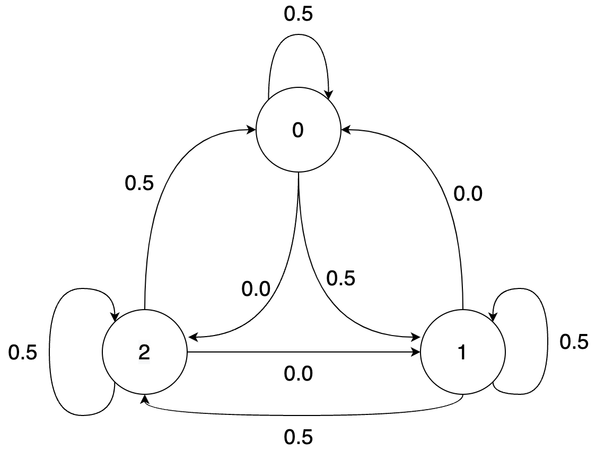
In the chain, given the previous symbol, the next symbol can only take one of two values with equal probability. Thus the entropy rate is $H(U_2|U_1) = 1$ bit. This is also apparent from the transition matrix which has only two non-zero entries in each row.
Note that the condition that $P(U_1)$ be uniformly distributed is crucial to ensure that the process is stationary (otherwise the distribution of $U_i$ would change with time). For a time-invariant Markov chain (i.e., a chain where the transition matrix doesn't change with time), checking stationarity is as simple as checking that the distribution of $U_i$ is the same for all $i$, or even more simply that $U_1$ and $U_2$ have the same distribution.
Final note on the above source: note that if you define a process $Z_i = X_{i+1} - X_{i} \textrm{ mod}\ 3$ then the process $Z$ is a lossless transformation of the process $X$, and in fact the process $Z$ is an iid process. Given all our knowledge about entropy coding for lossless processes, we now have an easy way to optimally compress the Markov process. While such a simple transformation is not always possible, we can often apply simple transforms to the data to make it more amenable to compression with simpler techniques.
Bus arrival times
Consider arrival times for buses at a bus stop: $U_1, U_2, U_3, U_4, \dots$ which look something like 4:16 pm, 4:28 pm, 4:46 pm, 5:02 pm (the expected gap between buses is 15 minutes here). This is not a stationary process because the actual arrival times keep increasing. However the difference process obtained by subtracting the previous arrival time from the current arrival time can be modeled as iid. Again, we see that simple transformations can make a process into a simpler process that can be compressed easily with our entropy coders.
Entropy rate of English text

The figure above from http://reeves.ee.duke.edu/information_theory/lecture4-Entropy_Rates.pdf shows the $k$th order entropy of English text based on a large corpus. We see the conditional entropies reduce (and will eventually converge to the entropy rate). The final figure is based on a "human prediction" experiment done by Shannon where he asked humans to predict the next character based on the past and used that as a probability model to estimate the entropy rate of text! We will look much more at how text compression has evolved over the years in the next chapter.
How to achieve the entropy rate?
Let's start small and try to achieve 1st order entropy $H(U_{k+1}|U_k)$ (note that this is indeed the entropy rate for a first-order Markov chain). Assume we have a known stationary distribution $P(U_1)$ and transition probability $P(U_2|U_1)$. Support we want to compress a block of length $n$ using $$E\left[\log_2 \frac{1}{P(U_1,\dots,U_n)}\right] \approx nH(U_2|U_1)$$ bits.
The first idea might be to use a Huffman code on block of length $n$. This would work but as usual we get unreasonable complexity. So we could consider working with smaller blocks. However, for non-iid sources, working on independent symbols is just plain suboptimal even discounting the effects of non-dyadic distributions. The reason is that we miss out on the dependence across the blocks.
Compute $H(U_1)$ and $H(U_1,U_2)$ for
$$U_1 \sim Unif({0,1,2})$$ $$U_{i+1} = (U_i + Z_i) \ \textrm{mod}\ 3$$ $$Z_i \sim Ber\left(\frac{1}{2}\right)$$ and compare to $H(\mathbf{U})$.
As you might guess, a better solution is based on arithmetic coding (the basic principles are recapped below):

The above is for an iid source, but the basic idea of reducing the interval according to the probability of the symbol can be easily applied to the Markov case! Instead of reducing the interval by a factor of $P(U_i)$, we reduce it by $P(U_i|U_{i-1})$. This is illustrated below for the given Markov source:

The general idea is simple: at every step, split interval by $P(-|u_{i-1})$ [more generally by $P(-|\textrm{entire past})$]. To see how this performs, consider the length of interval after encoding $u_1,u_2,u_3,\dots,u_n = P(u_1)P(u_2|u_1)\dots P(u_n|u_{n-1})$.
Thus the bits for encoding $u_1,u_2,u_3,\dots,u_n$ is given by $\log_2 \frac{1}{\mathrm{interval\ length}}$ which is
$$\approx \log_2 \frac{1}{P(u_1)P(u_2|u_1)\dots P(u_n|u_{n-1})}$$
Thus the expected bits per symbol $$\begin{align*} &\approx \frac{1}{n}E\left[\log_2 \frac{1}{P(U_1)P(U_2|U_1)\dots P(U_n|U_{n-1})}\right] \ &= \frac{1}{n}E\left[\log_2 \frac{1}{P(U_1)}\right]+\frac{1}{n}\sum_{i=2}^{n} E\left[\log_2 \frac{1}{P(U_i|U_{i-1})}\right] \ &= \frac{1}{n}H(U_1)+\frac{n-1}{n} H(U_2|U_1)\ &\sim H(U_2|U_1) \end{align*} $$
Thus we can achieve the entropy rate for a first-order Markov source using arithmetic coding. This can be generalized to higher order Markov sources as well. In the next lecture, we will see how this approach can be generalized to achieve compression with arbitrary prediction models using context-based arithmetic coding as well as context-based adaptive arithmetic coding.
Context based arithmetic coding
Recall that we studied stationary process, Markov chains, conditional entropy, and entropy rate in the last lecture.
Conditional entropy was defined as
$$H(U|V) \triangleq E\left[\log \frac{1}{P(U|V)}\right] = \sum_{v \in \mathcal{V}} P(v) \sum_{u\in \mathcal{U}} H(U|V=v)$$
Entropy rate was defined as $$H(\mathbf{U}) = \lim_{n\rightarrow\infty} H(U_{n+1}|U_1,U_2,\dots,U_n) = \lim_{n\rightarrow\infty} \frac{H(U_1,U_2,\dots,U_n)}{n}$$
Recall also that entropy rate is the fundamental limit of lossless compression for stationary sources.
This lectures asks the question - how do we compress a Markov/stationary source? We will study one technique for doing so - context based arithmetic coding.
Achieving the entropy rate for a first order Markov source
Let's start simple. How do we achieve the entropy rate for a first order Markov source with known probability distribution?
Recall entropy rate $H(\mathbf{U}) = \lim_{n\rightarrow\infty} \frac{H(U_1,U_2,\dots,U_n)}{n} = \lim_{n\rightarrow\infty} H(U_{n+1}|U_1,U_2,\dots,U_n)$
For a first-order Markov source this is simply $H(\mathbf{U}) = \lim_{n\rightarrow\infty} \frac{H(U_1,U_2,\dots,U_n)}{n} = H(U_2|U_1)$
This suggests two ways:
- Coding in bigger and bigger blocks (to achieve $\lim_{n\rightarrow\infty} \frac{H(U_1,U_2,\dots,U_n)}{n}$)
- Coding incrementally (to achieve $H(U_2|U_1)$)
We already saw an example of the first idea with Huffman coding at the end of the previous chapter. That suffers from complexity as the block size grows. Let us now focus on the second idea.
Recall arithmetic coding for iid sources:
The above is for an iid source, but the basic idea of reducing the interval according to the probability of the symbol can be easily applied to the Markov case! Instead of reducing the interval by a factor of $P(U_i)$, we reduce it by $P(U_i|U_{i-1})$. This is illustrated below for the given Markov source:
The general idea is simple: at every step, split interval by $P(-|u_{i-1})$ [more generally by $P(-|\textrm{entire past})$]. To see how this performs, consider the length of interval after encoding $u_1,u_2,u_3,\dots,u_n = P(u_1)P(u_2|u_1)\dots P(u_n|u_{n-1})$.
Thus the bits for encoding $u_1,u_2,u_3,\dots,u_n$ is given by $\log_2 \frac{1}{\mathrm{interval\ length}}$ which is
$$\approx \log_2 \frac{1}{P(u_1)P(u_2|u_1)\dots P(u_n|u_{n-1})}$$
Thus the expected bits per symbol $$\begin{align*} &\approx \frac{1}{n}E\left[\log_2 \frac{1}{P(U_1)P(U_2|U_1)\dots P(U_n|U_{n-1})}\right] \ &= \frac{1}{n}E\left[\log_2 \frac{1}{P(U_1)}\right]+\frac{1}{n}\sum_{i=2}^{n} E\left[\log_2 \frac{1}{P(U_i|U_{i-1})}\right] \ &= \frac{1}{n}H(U_1)+\frac{n-1}{n} H(U_2|U_1)\ &\sim H(U_2|U_1) \end{align*} $$
Thus we can achieve the entropy rate for a first-order Markov source using arithmetic coding.
Context based arithmetic coding
Generalizing this further, we get

So as long as we can estimate the probability distribution of the next symbol given some context, we can use arithmetic coding to encode the data. The bits used to encode $u_n$ is simply $\log_2 \frac{1}{P(u_n|past)}$. Higher the probability of the actually observed symbol, lower the bits you pay!
For a $k$th order model, the previous $k$ symbols are sufficient to predict the next symbol. But in general, the more past context you can use, the better the prediction. As an example let us consider using an LLM to predict the next token given some past:
>>> predict_next_token("than")
Token: x, Probability: 18.6%
Token: e, Probability: 8.5%
Token: , Probability: 5.2%
Token: the, Probability: 5.2%
Token: king, Probability: 4.3%
>>> predict_next_token("louder than")
Token: words, Probability: 30.4%
Token: love, Probability: 11.9%
Token: a, Probability: 11.2%
Token: the, Probability: 5.8%
Token: bombs, Probability: 4.7%
>>> predict_next_token("speak louder than")
Token: words, Probability: 47.8%
Token: money, Probability: 7.8%
Token: a, Probability: 4.7%
Token: the, Probability: 3.2%
Token: actions, Probability: 2.5%
>>> predict_next_token("Actions speak louder than")
Token: words, Probability: 96.5%
Token: the, Probability: 0.2%
Token: a, Probability: 0.1%
Token: any, Probability: 0.1%
Token: Words, Probability: 0.1%
We see that the prediction gets better as we use more context, and the probability of the actual token is higher. This is the basic idea behind context based arithmetic coding.
Before we look at some specific prediction models, let's look at the general framework for context-based arithmetic coding.

Total bits for encoding: $$\sum_{i=1}^n \log_2 \frac{1}{\hat{P}(u_i|u_1,\dots,u_{i-1})}$$
Let us think about how decoding would work. The idea is simple: the decoder uses same model, at step $i$ it has access to $u_1,\dots,u_{i-1}$ already decoded and so can generate the $\hat{P}$ for the arithmetic coding step!
Now let us generalize this one more step: what if you don't already know the model? There are two common approaches:
Option 1: Two pass: first build ("train") model from data, then encode using it.
Option 2: Adaptive: build ("train") model from data as we see it.
These approaches have their pros and cons, some of which are listed below:
Two-pass vs. adaptive
Two-pass approach
✅ learn model from entire data, leading to potentially better compression
✅ more suited for parallelization
⌠need to store model in compressed file
⌠need two passes over data, not suitable for streaming
⌠might not work well with changing statistics
Adaptive approach
✅ no need to store the model
✅ suitable for streaming
⌠adaptively learning model leads to inefficiency for initial samples
✅ works pretty well in practice!
For the most part, we will focus on the adaptive approach, which is shown the figure below:
A few notes on this approach:
âš ï¸ It is important for encoder and decoder to share exactly the same model state at every step (including at initialization). Otherwise the models go out of sync and arithmetic decoding fails to recover the original data. This is especially important for neural net based models where there are sources of randomness such as GPUs. Note that this point affects both the adaptive and pretrained approaches.
âš ï¸ Be careful about updating the model with $u_i$ only after you perform the encoding for $u_i$. As a general thumb rule, always think whether the decoder has the knowledge needed to perform the next step!
âš ï¸ Try not to provide $0$ probability to any symbol, otherwise arithmetic coding will not be able to produce a bounded output. The trick is to assign small but non-zero probability to all symbols, however unlikely they might be.
Compression and prediction
All of this discussion suggests a close relation between compression and prediction. In fact the cross-entropy loss for prediction (classes $\mathcal{C}$, predicted probabilities $\hat{P}$, ground truth class: $y$): $$\sum_{c\in\mathcal{C}} \mathbf{1}{y_i=c} \log_2\frac{1}{\hat{P}(c|y_1,\dots,y{i-1})}$$
Loss incurred when ground truth is $y_i$ is $\log_2\frac{1}{\hat{P}(y_i|y_1,\dots,y_{i-1})}$
Exactly matches the number of bits used for encoding with arithmetic coding!
Prediction implies compression:
- Good prediction => Good compression
- Compression = having a good model for the data
- Need not always explicitly model the data
- Possible to use rANS instead of arithmetic coding in some settings
This also goes the other way:
- Each compressor induces a predictor!
- Recall relation between code length and induced probability model $p \sim 2^{-l}$
- Generalizes to prediction setting
- Explicitly obtaining the prediction probabilities easier with some compressors than others. For compressors that explicitly model the data it is easier, but for others (such as LZ77) it is much harder to describe the probability model in a computationally efficient way. One can brute force compute the model by compressing all possible choices and then calculating the probabilities according to the code lengths, but this is computationally infeasible in many scenarios.
You can read more about this relationship in the recent perprint by DeepMind titled "Language Modeling Is Compression": https://aps.arxiv.org/abs/2309.10668.
Prediction models used for context based arithmetic coding
$k$th order adaptive arithmetic coding
- Start with a frequency of 1 for each symbol in the $(k+1)$th order alphabet (to avoid zero probabilities)
- As you see symbols, update the frequency counts
- At each step you have a probability distribution over the alphabet induced by the counts
Remember to update the counts with a symbol after you encode a symbol!
Example: if you saw BANA in past followed by N 90% of times and by L 10% of times, then predict N with probability 0.9 and L with probability 0.1 given a context of BANA.
Example: 1st order adaptive arithmetic coding
Consider the data sequence: 101011
We initialize the counts like $$c(0,0) = 1$$ $$c(0,1) = 1$$ $$c(1,0) = 1$$ $$c(1,1) = 1$$
and assume the past is padded with 0s (to handle the initial condition).
For the first input 101011:
Current symbol: 1 Previous symbol: 0 (padding)
Predicted probability: $P(1|0) = \frac{c(0,1)}{c(0,0)+c(0,1)} = \frac{1}{2}$
Counts: $$c(0,0) = 1$$ $$c(0,1) = 1 \rightarrow 2$$ (this got updated) $$c(1,0) = 1$$ $$c(1,1) = 1$$
For the second input 101011:
Current symbol: 0 Previous symbol: 1
Predicted probability: $P(0|1) = \frac{c(1,0)}{c(1,0)+c(1,1)} = \frac{1}{2}$
Counts: $$c(0,0) = 1$$ $$c(0,1) = 2$$ $$c(1,0) = 1 \rightarrow 2$$ (this got updated) $$c(1,1) = 1$$
For the third input 101011:
Current symbol: 1 Previous symbol: 0
Predicted probability: $P(1|0) = \frac{c(0,1)}{c(0,1)+c(1,1)} = \frac{2}{3}$
Counts: $$c(0,0) = 1$$ $$c(0,1) = 2 \rightarrow 3$$ $$c(1,0) = 2$$ $$c(1,1) = 1$$
and so on...
We observe a few things here:
- Over time this will learn the empirical distribution of the data
- We initially start off with uniform distribution in this example, but we can change prior to enforce some prior knowledge [of course both the encoder and the decoder need to know!]
- You can do this for $k=0$ (iid data with unknown distribution)!
$k$th order adaptive arithmetic coding (AAC)
Let's test this out!
def freqs_current(self):
"""Calculate the current freqs. We use the past k symbols to pick out
the corresponding frequencies for the (k+1)th.
"""
freqs_given_context = np.ravel(self.freqs_kplus1_tuple[tuple(self.past_k)])
def update_model(self, s):
"""function to update the probability model. This basically involves update the count
for the most recently seen (k+1) tuple.
Args:
s (Symbol): the next symbol
"""
# updates the model based on the new symbol
# index self.freqs_kplus1_tuple using (past_k, s) [need to map s to index]
self.freqs_kplus1_tuple[(*self.past_k, s)] += 1
self.past_k = self.past_k[1:] + [s]
On sherlock.txt:
>>> with open("sherlock.txt") as f:
>>> data = f.read()
>>>
>>> data_block = DataBlock(data)
>>> alphabet = list(data_block.get_alphabet())
>>> aec_params = AECParams()
>>> encoder = ArithmeticEncoder(aec_params, AdaptiveOrderKFreqModel(alphabet, k, aec_params.MAX_ALLOWED_TOTAL_FREQ))
>>> encoded_bitarray = encoder.encode_block(data_block)
>>> print(len(encoded_bitarray)//8) # convert to bytes
| Compressor | compressed bits/byte |
|---|---|
| $0$th order | 4.26 |
| $1$st order | 3.34 |
| $2$nd order | 2.87 |
| $3$rd order | 3.10 |
| gzip | 2.78 |
| bzip2 | 2.05 |
We observe that the compression improves as we increase the order of the model, but only up to a point. The reason is due to the counts becoming sparse as we increase the order. This is a common problem with higher order models. The issues with this can be summarized as below:
- slow, memory complexity grows exponentially in $k$
- counts become very sparse for large $k$, leading to worse performance
- unable to exploit similarities in prediction for similar contexts. Each $k$ context is considered independent of each other, even if they are similar and hence the probability conditioned on them is likely to be similar.
These issues can be overcome with smarter modeling as discussed later. Also note that despite their performance limitations, context based models are still employed as the entropy coding stage after suitably preprocessing the data (LZ, BWT, etc.).
We also observe that $k$th order AAC performs close to gzip, but not as well as bzip2. In the next chapters we will understand how gzip and bzip2 are able to achieve better compression by effectively making use of larger contexts.
Two-pass approach and Minimum Description Length (MDL) principle
What if we did a two-pass approach? In this case, we'll pay for the empirical conditional entropy for compression.
| order | adaptive | empirical conditional entropy |
|---|---|---|
| $0$th order | 4.26 | 4.26 |
| $1$st order | 3.34 | 3.27 |
| $2$nd order | 2.87 | 2.44 |
| $3$rd order | 3.10 | 1.86 |
We see that there is an increasing gap between adaptive coding performance and empirical entropy as we increase the order. The reason is that we are not taking into account the model size. As the order increases, knowing the empirical distribution becomes closer to just storing the data itself in the model. At the extreme, you just have a single $|data_size|$ long context and the model is just the data itself! In practice, adaptive models are often preferred due to their simplicity and not requiring two passes over the data.
This can be thought of in terms of the Minimum Description Length (MDL) principle, which considers minimizing the sum of model size and compressed size given model. This is shown in the figure below. As the model complexity grows, we can compress the data better but the model takes more bits to describe. Thus, there is a tradeoff and an optimum model size.

Other prediction models used for compression
We will not go very deep into the other prediction models used for compression, but will briefly mention them here.
- $k$th order adaptive (in SCL): https://github.com/kedartatwawadi/stanford_compression_library/blob/main/scl/compressors/probability_models.py
- Solving the sparse count problem: These try to solve the sparse count problem by not forcing a particular $k$ but instead using a mixture of models of different orders. If you have seen a longer context several times, you use that to predict, but if not you can use the shorter context based prediction. These can do pretty well and are often used for heavy-duty entropy coding.
- Advanced prediction models:
- Neural net based (use a neural network as the predictor): NNCP, Tensorflow-compress, DZip
- Ensemble methods: CMIX, CMIX talk
- Resources: https://mattmahoney.net/dc/dce.html#Section_4
These are some of the most powerful compressors around, but often too slow for many applications!
We can quickly look at the advanced prediction models here.

Both DeepZip and NNCP use a neural net to predict the next character based on the context. They differ in how they train the neural net. DeepZip uses a two-pass approach, where it first trains the neural net on the data and then uses the trained model to compress the data. The trained model needs to be stored in the compressed file. NNCP on the other hand, starts with a random model (with the pseudorandom seed known to the decoder) and keeps updating the neural net as it sees more data.
CMIX uses several contexts (last byte, second-last byte, same bit in last byte, last word and so on) and maintains counts for all of them. A neural network and other techniques are then used to mix the prediction according to all the contexts and produce the final prediction. As time goes on the mixer is trained to focus more on models that predict the next symbol well.
Text compression over the years
To wrap up the context based compression discussion, let us look at how text compression has evolved over the years. The figure below shows the compression ratio for text compression over the years. We see how CMIX and NNCP have now beaten Shannon's entropy estimates for text compression!

LLM based compression - going beyond the MDL principle
We now consider a different setting where the model size doesn't matter, we just want to get the best compression possible. So we just throw our most powerful predictor at the problem, a model that would take gigabytes to describe, and use that to compress the data. In a traditional setting, the size of the model would be prohibitive to store as part of the compressed file (also painstakingly slow to compress and decompress). But this can still be relevant in a few cases:
- For understanding limits of compressibility/entropy rate estimation
- When there is a large amount of data of the same type and you can afford to deploy the model separately on each decompression node
- To demonstrate concepts in a compression course!
We will now look at using LLMs for compression. Note that LLMs are trained as predictors, and their loss function is simply the cross-entropy loss (or perplexity = $2^{\textrm{cross-entropy}}$). Thus they are in-effect being trained for compression! We will use ts_zip: Text Compression using Large Language Models to use LLMs for compression, specifically the rwkv_169M and rwkv_430M models.
Let's look at some results for a 2023 novel (848 KB English text).

We see how LLM beats the other compressors by a wide margin, and how larger context helps a lot for LLMs. The bigger model does marginally better for both context lengths given that it is a more powerful predictor.
Now let us look at the compression ratio for an ancient Pali text (transcribed in Roman script):
| Compressor | compressed bits/byte |
|---|---|
| $2$nd order AAC | 2.66 |
| gzip | 2.11 |
| bzip2 | 1.71 |
| small LLM model | 2.41 |
| medium LLM model | 2.19 |
Why do the LLMs no longer do so well compared to bzip2? Because this is not similar to anything it saw in the training dataset. Thus, our usual compressors that don't assume much about the data (gzip, bzip2) can do much better than LLMs in this case.
What if we took an even more powerful model. See below the results for Llama-13B (4 bit quantized) (using code here)
| Dataset | Context length | compressed bits/byte |
|---|---|---|
| 2023 short story | 10 | 1.228 |
| 2023 short story | 50 | 1.027 |
| 2023 short story | 512 | 0.874 |
Again we see how this gets amazing compression, even better than the smaller models above. Larger context length also helps, although with diminishing returns beyond a point. Now let's repeat this on a Sherlock Holmes novel:
| Dataset | Context length | compressed bits/byte |
|---|---|---|
| Sherlock | 10 | 1.433 |
| Sherlock | 50 | 0.542 |
| Sherlock | 512 | 0.200 |
This one is way too good! What's going on?
The reason is that the LLM is able to memorize a lot of its training dataset and thus achieve amazing compression. This is a common problem in machine learning, and therefore the evaluation needs to be done on a held-out dataset.
To summarize the LLM based compression results:
- Remarkable results, far beyond the commonly used compressors and even better than the state-of-the-art compressors like CMIX and NNCP (see the results on the ts_zip page)
- Be careful about model-data mismatch (e.g., Pali text) and overfitting to training data (e.g., Sherlock)
- Very slow and compute intensive today, but they might become practical with hardware acceleration in future (at least for some applications)
- Resources for futher reading:
- ts_zip: https://bellard.org/ts_server/ts_zip.html
- DeepMind paper: https://aps.arxiv.org/abs/2309.10668
Summary
We studied context based arithmetic coding, and looked at various models ranging from simple $k$th order adaptive models to advanced neural net based models. We also looked at LLM based compression, and saw how it can achieve amazing compression shining a light on the lower bounds for compression. In the next lecture we will look at a different class of compressors: universal compressors and dive into the realm of practical compressors that are ubiquitous today.
Universal Compression with LZ77
In the previous chapters we talked about entropy rate, which is the fundamental limit of lossless compression for stationary sources. Recall that entropy rate was defined as
$$H(\mathbf{U}) = \lim_{n\rightarrow\infty} H(U_{n+1}|U_1,U_2,\dots,U_n) = \lim_{n\rightarrow\infty} \frac{H(U_1,U_2,\dots,U_n)}{n}$$
and we discussed special cases of entropy rate for iid and Markov sources. For iid sources, the entropy rate is just the entropy of the source, and for a ($k$th order) Markov sources, the entropy rate is the conditional entropy of the next symbol given the past $k$ symbols.
We also discussed context based arithmetic coding, based on the fundamental principle that a good predictor induces a good compressor. In particular, we saw that if we have a good predictor for the next symbol given the past $k$ symbols, we can use arithmetic coding to achieve the entropy rate for a $k$th order Markov source. We also looked at using LLMs as a predictor achieving incredible compression performance. These schemes can be adapted to achieve the entropy rate for a stationary source by slow growing the context size, however they face issues with efficiency.
Suppose you know your data is 2nd order Markov but not the transition probabilities. You can build a context-based adaptive arithmetic coder with context size 2 and achieve the entropy rate. If you knew the distribution, you don't even need the adaptive part and can just use the known transition probabilities! Now suppose you are not told anything about the source distribution. You could assume a high-order Markov model or maybe try to use LLM based compression, and might get reasonable results in practice. But wouldn't you like a compressor that gives you guaranteed optimality even with such lack of knowledge about the source. That's where universal compressors come in! For a long time, it wasn't known if such a technique even existed - and the world changed after a couple of seminal papers by Jacob Ziv and Abraham Lempel in the late 1970s.
In simple words, a universal compressor is a scheme that does well on any stationary input without prior knowledge of the source distribution. As part of this class of compressors, we will explore one of the most common schemes used in practical compressors.
Universal compressor
Consider a compressor $C$ that works on arbitrary length inputs and has length function $l(x^n)$.
Consider a compressor $C$ that works on arbitrary length inputs and has length function $l(x^n)$. $C$ is universal if $$\lim_{n \rightarrow \infty} \frac{1}{n}E[l(X^n)] = H(\mathbf{X})$$ for any stationary ergodic (ergodicity is a technical condition we won't talk about) source.
So a single compressor $C$ is asymptotically optimal for every stationary distribution without prior knowledge of the source distribution! No requirements on the Markov order or anything else.
Thinking in terms of universal predictors, recall from last lecture that a compressor induces a distribution via its length function: $\hat{p}(x^n) = 2^{-l(x^n)}$. Thus, a universal compressor's $\hat{p}$ approximates any stationary distribution arbitrarily closely as $n$ grows (illustrated below). In particular a universal compressor is a universal predictor!

Obviously all this needs to be rigorously formulated, e.g., see the reference below or check out the notes from EE 376C provided in the resources section:
M. Feder, N. Merhav and M. Gutman, "Universal prediction of individual sequences," in IEEE Transactions on Information Theory, vol. 38, no. 4, pp. 1258-1270, July 1992, doi: 10.1109/18.144706.
Lempel-Ziv universal algorithms
As mentioned above, for a long time, the existence of universal algorithms was unknown. Lempel and Ziv, in their seminal papers, showed that there exist universal algorithms for lossless compression. The compressors and their variants used in a variety of commonly used compressors are listed below:
- LZ77: in gzip, zstd, png, zip, lz4, snappy
- LZ78: strong theoretical guarantees
- LZW (Lempel-Ziv-Welch) (LZ78 variant): in linux compress utility, GIF
- LZMA (Lempel–Ziv–Markov chain algorithm) (LZ77 variant): 7-Zip, xz
As you can see, LZ based techniques are used in a variety of general-purpose compressors such as zip as well as in image compressors like png and GIF. For this lecture, we'll mostly focus on LZ77 which is the most commonly used compressor in practice. You can read more about the other techniques in the references below.
References:
- LZ77: Ziv, Jacob, and Abraham Lempel. "A universal algorithm for sequential data compression." IEEE Transactions on information theory 23.3 (1977): 337-343.
- LZ78: Ziv, Jacob, and Abraham Lempel. "Compression of individual sequences via variable-rate coding." IEEE transactions on Information Theory 24.5 (1978): 530-536.
- LZW: Welch, Terry A. "A technique for high-performance data compression." Computer 17.06 (1984): 8-19.
LZ77 algorithm
The idea is simple: "history repeats itself" - if you see something in your input you've probably seen that before. So just replace repeated segments in data with pointers and lengths! Whenever you see a sequence you have seen before, you encode it in terms of when you saw it last and it's length. Consider the popular song lyrics below which are very conducive to this form of compression!

LZ77 parsing
LZ77 compression involves parsing the input text into a sequence of matches to the past. This is done by generating three streams: unmatched literals, match length and match offset. Let's try to understand the parsing through an example. Consider the input sequence: ABBABBABBCAB
We will fill in the table below, to store any unmatched portions followed by the match length (how long the match is) and the match offset (how far back the match is).
| Unmatched literals | Match length | Match offset |
|---|---|---|
| - | - | - |
| - | - | - |
| - | - | - |
We start from the left and note that the first two characters don't have a match in the past. So we store them as unmatched literals. The third character (B) does match the character right before. If we try for a longer match, that doesn't work because the third and fourth characters BA haven't been seen in the past. So we get
A[B]BABBABBCAB
| Unmatched literals | Match length | Match offset |
|---|---|---|
| AB | 1 | 1 |
| - | - | - |
| - | - | - |
Next we observe the fourth character A has a match in the past so we try to extend to a longer and longer match. We see that ABB matches the ABB seen three positions ago. Looking ahead, we see that the ABB actually matches the ABB in the current match so effectively you have a match of length 6 (ABBABB). This might look suspicious at first glance since our match overlaps itself. But we'll see that this is fine and we will be able to decode. So we get (note there were no unmatched literals this time around):
[ABBABB]ABBCAB
| Unmatched literals | Match length | Match offset |
|---|---|---|
| AB | 1 | 1 |
| - | 6 | 3 |
| - | - | - |
And moving on in the same way, we get the full LZ77 parsing for this input as:
ABBABB[AB]BCAB
| Unmatched literals | Match length | Match offset |
|---|---|---|
| AB | 1 | 1 |
| - | 6 | 3 |
| C | 2 | 4 |
This can be decoded in the same exact order (left as an exercise, do check we can unparse the overlapping match!). To make this a little formal, let's write out a pseudocode for the parsing and unparsing algorithms.
For input sequence x[0], x[1], ...
Suppose we have parsed till x[i-1].
- Try to find largest k such that for some j < i
x[j:j+k] = x[i:i+k]
- Then the match length is k and the match offset is i-j
[note that the ranges j:j+k and i:i+k are allowed to overlap]
- If no match found, store as literal.
At each step:
- First read any literals and copy to output y.
- To decode a match with length l and offset o.
- If l < o:
- append y[-o:-o+l] to y
- Else:
// Need to be more careful with overlapping matches!
- For _ in 0:l:
- append y[-o] to y
The two cases are as illustrated below:
o
◄────────────────────────────►
────────────────────────────────────────
◄────────► ◄────────►
l l
Non-overlapping match l < o
o
◄──────►
─────────────────────────────────────────
◄──────────────►
◄─────────────►
l
Overlapping match l >= o
Some observations:
- Decompression/unparsing is very fast since it just involves copying! This is a major advantage of LZ77 based techniques over context based coding methods where decompression is quite symmetric to compression due to the same predictor being used.
- The parsing can be done in various ways while still being compatible with the unparsing algorithm. This is unlike context based coding methods where the encoding and decoding algorithms are tightly coupled. Thus you can spend more time or less time finding matches and the same decoder (unparser) will work! This makes the same format compatible with a variety of different encoder implementations. An extreme example of a parser is one that doesn't try to match anything and simply writes out everything as a literal. The other extreme is a parser that attempts to use dynamic programming to find the optimal parsing with the fewest literals (e.g., see this blog post)!
- As we observed above, allowing overlapping matches is a parser choice that enables better compression for highly repetitive sequences. However, this requires support in the parser and unparser and some implementations might not support this. In particular other LZ variants like LZ78 do not allow overlapping matches, leading to worse performance for highly repetitive sequences since you cannot exploit such long matches.
Apply the above parsing and unparsing algorithms for the following:
- Parse AABBBBBBBAABBBCDCDCD.
- Unparse the below table (note that this parsing was generated using a different parser than the one described above!):
| Unmatched literals | Match length | Match offset |
|---|---|---|
| AABBB | 4 | 1 |
| - | 5 | 9 |
| CDCD | 2 | 2 |
Encoding step
┌─────────────┠┌──────────────┠┌───────────┠┌──────────â”
┌──────────┠│ │ │ Literals │ │ Entropy │ │Compressed│
│Input data├───────►│LZ77 parsing ├─────►│ ├─────►│ coding ├────►│ │
└──────────┘ │ │ │ Matches │ │ │ │ File │
└─────────────┘ └──────────────┘ └───────────┘ └──────────┘
Now let's look at the end-to-end flow for LZ77 compression. As discussed above the first step is parsing which produces the literals, match lengths and match offsets. However, we still need to encode these streams into bits to get the final compressed file. Different implementations (gzip, zstd, etc.) differ in the approach, and we typically use Huffman coding/ANS with some modifications to optimize for real-life data. We will go into the details in the sections below after covering the universality proof.
LZ77 universality proof sketch
Let's try to intuitively understand why LZ77 is universal. First let's understand how far apart do we expect matches to be.
Consider an i.i.d. sequence $\dots,X_{-2},X_{-1},X_0,X_1,X_2,\dots$
If symbol $a$ has probability $P(a)$, what's the expected gap between consecutive occurences of $a$?
Hint: In a block of size $n$, how many times do you expect to see $a$? What's the average spacing between the occurences?
Answer: (using law of large numbers and the iid-ness): You expect to see $a$ around $nP(a)$ times, and the average spacing is $\frac{n}{nP(a)} = \frac{1}{P(a)}$. Recall that this is also the mean of a geometric random variable with parameter $P(a)$.
Surprisingly this simple formula applies more generally to $n$-tuples in a stationary ergodic process.
Let $\dots,X_{-2},X_{-1},X_0,X_1,X_2,\dots$ be a stationary ergodic process and let $R_n(X_0,\dots,X_{n-1})$ be the recurrence time (last time $X_0,\dots,X_{n-1}$ occurred before index $0$). Given that $(X_0,\dots,X_{n-1})=x_0^{n-1}$, we have $$E[R_n(X_0,\dots,X_{n-1})] = \frac{1}{p(x_0^{n-1})}$$
In simple words, if $(X_0,\dots,X_{n-1})=x_0^{n-1}$, the same sequence $x_0^{n-1}$ also occurred roughly $\frac{1}{p(x_0^{n-1})}$ positions ago. Thus, the match offset in LZ77 is $\frac{1}{p(x_0^{n-1})}$ on average.
Now with this knowledge, let's try to understand how well LZ77 compresses by looking at the various components:
- We can encode the match offset $\frac{1}{p(x_0^{n-1})}$ using close to $\log_2 \frac{1}{p(x_0^{n-1})}$ bits using an appropriate integer coder (e.g., check out the Elias Delta code in SCL).
- Match length and literal contribution is negligible! The lengths can be encoded in logarithmically many bits as the total sequence length, while the literals are expected to die out as we go further in the sequence (since matches get longer and longer).
- Expending $\log_2 \frac{1}{p(x_0^{n-1})}$ bits means we are following the thumb rule, and we use on average $E[l(X^n)] \approx E [\log_2 \frac{1}{p(x_0^{n-1})}] = H(X^n)$
- Taking this to the limit, we can see that LZ77 achieves the entropy rate!
As you might have noticed, this is extremely hand-wavy and glosses over a lot of details. For a more detailed and rigorous proof, check out Cover and Thomas chapter 13, the EE 376C notes provided in the resources section, or the original paper below:
A. D. Wyner and J. Ziv, "The sliding-window Lempel-Ziv algorithm is asymptotically optimal," in Proceedings of the IEEE, vol. 82, no. 6, pp. 872-877, June 1994, doi: 10.1109/5.286191.
The LZ77 proof is not as satifying from a theoretical standpoint as compared to LZ78 (covered in the EE376C notes), but in practice LZ77 based techniques dominate due to their compression and computational efficiency on real-life datasets. In fact, the asymptotic theory doesn't fully explain the excellent performance in practice. If you think of a $k$th order Markov process, you expect LZ77 to do well in the limit, but not amazing for reasonable sized data due to the poor convergence rate. However, the idea of finding matches is just very well-matched to real-life data and the data is not always modeled easily as a $k$th order Markov process. For example, we see much more frequent and longer repeats in real data (e.g., English text) compared to what you'd expect from a Markov process. This often leads to LZ77 based techniques outperforming other techniques in practice for a variety of datasets.
LZ77 parsing on real data - examples
Before we jump to more details about practical LZ77 implementations, let's gain some intuition of how matches look in practice and how the match lengths and offsets are typically distributed. We will use the LZ77 implementation in SCL for this purpose.
Consider the text of "Alice's Adventures in Wonderland" by Lewis Carroll where we see some long matches. You can imagine LZ77 getting amazing compression here by replacing this entire repeated segment with just the offset and the length which can be encoded in very few bits.

This is not an isolated example - consider the CSS file for the bootstrap website where we again see long matches.

It is easy to fall under the misapprehension that only long matches help with compression, or that we need the offset to be very small to get gains. But that's not the case. Even a match of 5-10 characters with a large offset can be encoded more efficiently than storing it as a literal. This is because the space needed to store the offset and the length is logarithmic in the integer values, meaning that even offset of a million can be encoded in about 20 bits. Whereas even if you encoded a character with just 3 bits (using, e.g., Huffman coding), you would need 30 bits to encode the literal! For example, as shown below, the word pleasure occurs only twice in the book "Alice's Adventures in Wonderland" 150 KB apart and you would still expect it to be cheaper to encode it as a match of length 8 and offset 150 KB rather than as literals. You can also imagine there is a break-even point for this, and matches with very large offsets and/or small lengths might not help with compression.
First page:
So she was considering in her own mind (as well as she could,
for the hot day made her feel very sleepy and stupid), whether
the **pleasure** of making a daisy-chain would be worth the trouble
of getting up and picking the daisies, when suddenly a White
Rabbit with pink eyes ran close by her.
Last page:
, and make THEIR eyes bright and eager
with many a strange tale, perhaps even with the dream of
Wonderland of long ago: and how she would feel with all their
simple sorrows, and find a **pleasure** in all their simple joys,
remembering her own child-life, and the happy summer days.
THE END
Let's look at the full match length and offset distributions for these two files. Note that the distribution heavily depends on the particular parsing strategy used, but we can still get some insights from these plots. As we see below, the distributions vary from file to file, and suggests that the different parsing strategies and entropy coding techniques can be adapted to the specific dataset for best performance.
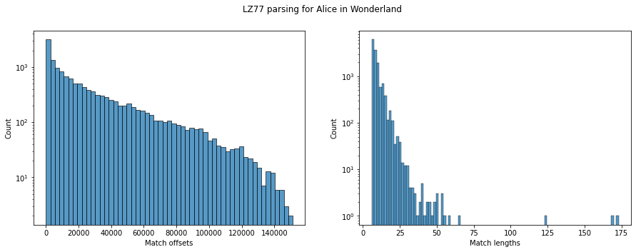
Looking at the distributions for the Alice in Wonderland text, we see that the match offsets largely fall in the small-ish range, but there are some large offsets as well (even as large as the file size of 150 KB). Similarly, the match lengths are mostly less than 50, though we do see some matches around length 200 as well.

For the bootstrap CSS file, we see a similar trend with most offsets being small, but some large offsets as well. The match lengths are generally larger than the Alice in Wonderland text, which makes sense since CSS files have a lot of repeated patterns (function names, variable names, etc.). Some matches are as long as 500 characters.
Practical considerations for LZ77 implementations
The pseudocode we saw above was a very simplistic version of LZ77. In practice you would run into several issues. How much past do you need to remember? How do you actually find the matches efficiently? What entropy coders should you use for the literals, match lengths and offsets? Let's look into these and understand at least the basic considerations. Practical implementations of LZ77 like gzip and zstd include several optimizations to make them fast and efficient, which we will not cover in any detail.
Sliding window
The algorithm as presented above assumes infinite past memory for both the parsing and the unparsing, since the match offsets are allowed to be arbitrarily large. This is obviously not practical for large files. In practice, we use a sliding window - only find matches in past 10s of KBs (gzip) to multiple MBs (zstd) window (with the progress of time, as memory available on machines has increased, compressors have started using larger and larger windows). The window is typically implemented using a circular buffer to efficiently handle windows without reallocation. Bigger window gives better compression but needs more memory for both compression and decompression. For a well-documented and minimal implementation, we encourage the reader to look at the implementation in SCL, in particular the LZ77Window, LZ77SlidingWindowEncoder and LZ77SlidingWindowDecoder classes.
The figure below shows the effect of window size for the Alice in Wonderland text. We see that increasing the window size helps with compression (leveling off above the file size as expected). Depending on the dataset, the effect can be more or less pronounced.

Match finding
The algorithm pseudocode above glossed over the details of how to find matches efficiently, just saying that "find the longest match". A brute-force approach would be to check all past positions for a match, but that would be very slow (quadratic time). The nice thing about LZ77 is that the parsing and unparsing are decoupled, so we can use any match finding strategy we want withut affecting the decoder performance or implementation.
The basic idea is to index past occurences of sequences (e.g., 4-length substrings) in a data structure like a hash table or a binary tree. For example, you could store that ABCD occurred at positions [1, 10, 15] while ABAB occurred at positions [2, 6]. Then for the given position where we are trying to find matches, we determine the current 4-length substring. Then we do a lookup to find previous occurences. There can be multiple places where the substring could have occurred, and we then extend each of the candidate matches to find the longest match. Using the 4-length substring allows us to efficiently index and reduce the search space, however it forces the minimum match length we would get to be at least 4. A smaller substring could give you more false positives and increase the time complexity for searching the longest match, but can give better compression in some cases.
In the above approach, we simply look for the longest match meaning this is a greedy strategy. But we could consider a different strategy to get longer matches. For example, we could incur a literal to find a longer match at the next position (e.g., lazy strategies don't immediately take a match, instead look ahead to find if there's a longer one). Let's consider an example for this. Suppose the next section to compress involves ABCDEF and you get a match in the past [AB]EF of length 2. A greedy strategy would take this match of length 2. But a lazy strategy could say, wait a second, if I skip this match and encode A as a literal, can I get a longer match starting a B (e.g., if [BCDEF] occurred in the past). Existing LZ77 strategies range from fast and greedy to slow and optimal (e.g., using dynamic programming to find the "optimum" parsing under some definition of optimality). The choice of match-finding strategy affects both speed and compression performance, but usually doesn't affect the decompression.
The SCL implementation allows the user to pass the match finder as a parameter to the LZ77SlidingWindowEncoder class. The match finder is a subclass of MatchFinderBase and implements the find_best_match and extend_match methods as shown below. The HashBasedMatchFinder class implements a hash based match finder with several parameters to control the parsing strategy as shown below, but you can implement your own match finder as well!
class LZ77SlidingWindowEncoder:
- match_finder: Match finder used for encoding (not required for decoding)
- window_size: size of sliding window (maximum lookback)
class MatchFinderBase:
def extend_match(
self, match_start_in_lookahead_buffer, match_pos, lookahead_buffer, left_extension=True)
def find_best_match(self, lookahead_buffer)
class HashBasedMatchFinder(MatchFinderBase):
- hash_length (int): The length of byte sequences to hash.
- hash_table_size (int): Size of the hash table.
- max_chain_length (int): Maximum length of the chains in the hash table.
- lazy (bool): Whether to use lazy matching where LZ77 considers one step ahead and skips a literal if it finds a longer match.
- minimum_match_length (int): Minimum length of a match to be considered.
Let's look at some real data on the effect of minimum match length and lazy parsing strategies on compression performance.
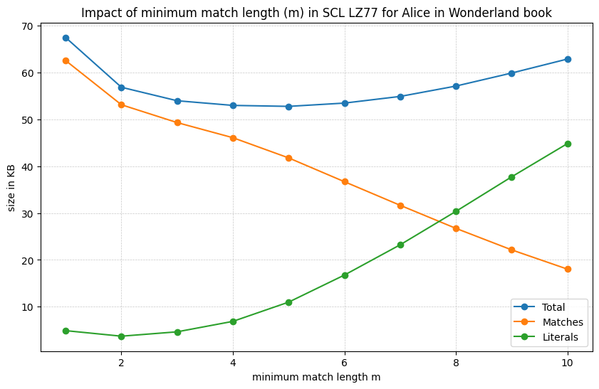The figure above shows the effect of minimum match length on the contribution of matches and literals as well as the overall compression performance. As the match length increases, we that the literals take up more space since we are ignoring matches of smaller lengths. Whereas the matches take up less space. Overall we see there is a break-even point since having the minimum match length too small leads to poor compression (due to overhead of storing many small matches) while having it too large also leads to poor compression (due to ignoring many matches). As you might imagine the time complexity will also vary with the minimum match length since smaller lengths lead to more candidate matches to check.
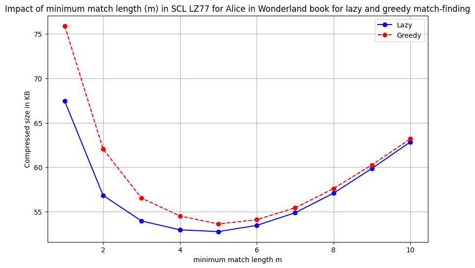The figure above compares the lazy and greedy strategy at various values of minimum match length. We see the lazy strategy consistently outperforms the greedy strategy. At smaller minimum match lengths, the gap is even larger since the greedy strategy can fall in the trap of taking many small matches while the lazy strategy can skip them to find longer matches.
Entropy coding
For entropy coding, the different streams (literals, match lengths, match offsets), a standard strategy (used in zstd but not gzip) is to concatenate all literals into a single stream and separately keep the literal counts. See below for an example.
| Unmatched literals | Match length | Match offset |
|---|---|---|
| AABBB | 4 | 1 |
| - | 5 | 9 |
| CDCD | 2 | 2 |
encoded as
literals = AABBBCDCD
and
| Literal counts | Match length | Match offset |
|---|---|---|
| 5 | 4 | 1 |
| 0 | 5 | 9 |
| 4 | 2 | 2 |
Now each of streams can be encoded using various entropy coding approaches. In fact, you can imagine LZ77 just converting the complex stationary source into three simpler iid-like sources which can be encoded using standard entropy coding techniques discussed below. One general principle, based on experimental data, is that for literals it is often sufficient to use something like Huffman coding (which is also super-fast), while the lengths and offsets can benefit from more sophisticated coders like tANS or arithmetic coding.
- Huffman coding - this can be dynamic (codebook is constructed during encoding time) or static (codebook is fixed a priori based on some predefined data distribution).
- gzip exclusively relies on this
- zstd - uses Huffman only for literals
- tANS: zstd uses tANS for literal lengths, match lengths and match offsets
- Context-based arithmetic coding (slower to encode and decode but better compression): LZMA, xz, 7-zip
- For very high speeds, skip entropy coding and use fixed length codes! (LZ4, Snappy)
Entropy coding of integers
While literals are from a small alphabet (e.g., all 256 possible bytes), lengths and offsets have a large range (offsets be even be in millions). Naively applying Huffman coding or ANS on such a large alphabet is inefficient due to lack of counts (e.g., a specific match offset like 14546 might not occur many times). The typical approach is to divide the integers into bins: (i) entropy code the bin index and (ii) encode the position in bin using plain old fixed length code. The binning is often logarithmic in nature, so you could have bins like 1, 2-3, 4-7, 8-15, and so on. If you are in bin 8-15 then you use 3 bits to encode within bin position. The bin index represents the logarithm, while the position in the bin represents the lower order bits. The binning is again a design choice, although logarithmic binning tends to work decently well. One way to imagine this is as a prefix tree where you first have the bins as leaves and then attach a complete binary tree to each of these (as illustrated in the figure below).
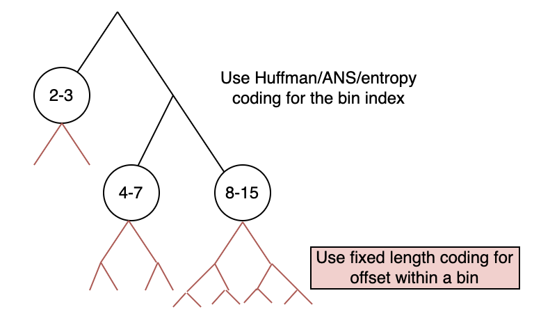You can check the binning table for zstd here. As you can see the smaller bins are divided a bit more finely (e.g., 32-39, 40-47, etc.) while the larger bins are coarser and actually logarithmic (e.g., 2048-4095, 4096-8191, etc.). This is because smaller integers occur more frequently and need to be represented more finely for better compression (since the index within bin is stored with simply fixed bitwidth all the fancy entropy coding is confined to the bin index). You can also check out LogScaleBinnedIntegerEncoder in the SCL LZ77 implementation for a simple reference (binning table and number of bits for offset within bin shown in table below).
| Bin range | Number of values in bin | Number of bits for offset within bin |
|---|---|---|
| 1 | 1 | 0 |
| 2-3 | 2 | 1 |
| 4-7 | 4 | 2 |
| 8-15 | 8 | 3 |
| 16-31 | 16 | 4 |
| 32-63 | 32 | 5 |
| 64-127 | 64 | 6 |
| 128-255 | 128 | 7 |
gzip and zstd
For a very long time (~mid-1990s to mid-2010s), gzip was the most commonly used general-purpose compressor. It is based on LZ77 with Huffman coding for entropy coding. However, with the advent of zstd in mid-2010s, which uses several more modern techniques (e.g., tANS entropy coding, efficient implementation using SIMD vectorization, larger windows, better match-finding strategies), zstd has started to replace gzip in many applications due to its better compression and speed. Today, except for highly resource constrained environments or legacy settings, zstd is often the default choice for general-purpose compression. Although it does consume slightly more memory than gzip, this is rarely a concern on modern machines.
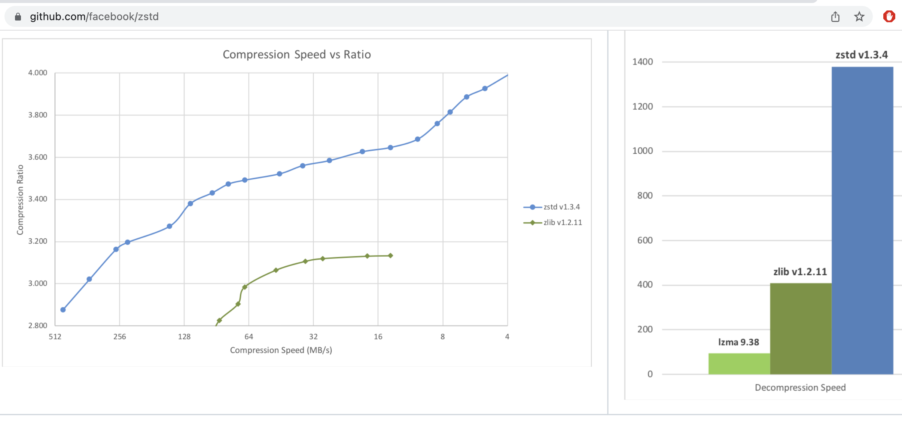
The figure above (source) compares the compression ratio, compression speed and decompression speed of zstd and gzip (labeled zlib in the figure). In the compression speed vs. ratio plot, the different "levels" (mainly determining the match-finding strategy and window size) are shown for both compressors. As seen in the figure, zstd achieves a better pareto frontier than gzip, being faster than gzip at similar compression ratios. In addition zstd achieves higher compression ratio/speed at the higher/lowest level, meaning it can be used in wider applications.
Looking at the decompression speed, we see that while gzip is decently fast, zstd achieves extremely high decompression speeds. This is because all aspects of zstd's design, including the format itself, are optimized for fast decompression. For example the format is constructed in a way that a decoder can avoid branching as much as possible, leading to better pipelining and vectorization opportunities in modern processors. Similarly efforts are made in the implementation to be cache friendly and use SIMD instructions to speed up operations. Overall zstd is a great example of how careful design and implementation can lead to significant performance improvements in practice. Looking at LZMA (which use context-based arithmetic coding) in the decompression speed plot, we see that it is significantly slower than both gzip and zstd, which is why it is not commonly used for general-purpose compression despite its good compression performance. Notice that the decompression speed doesn't include the levels, this is because the decompression speed is largely unaffected by the compression level since the same decoder is used for all levels.
The figure below (source) shows a wider variety of LZ77 implementations at different levels, we'll look in the next chapter on how to make informed choices between these.
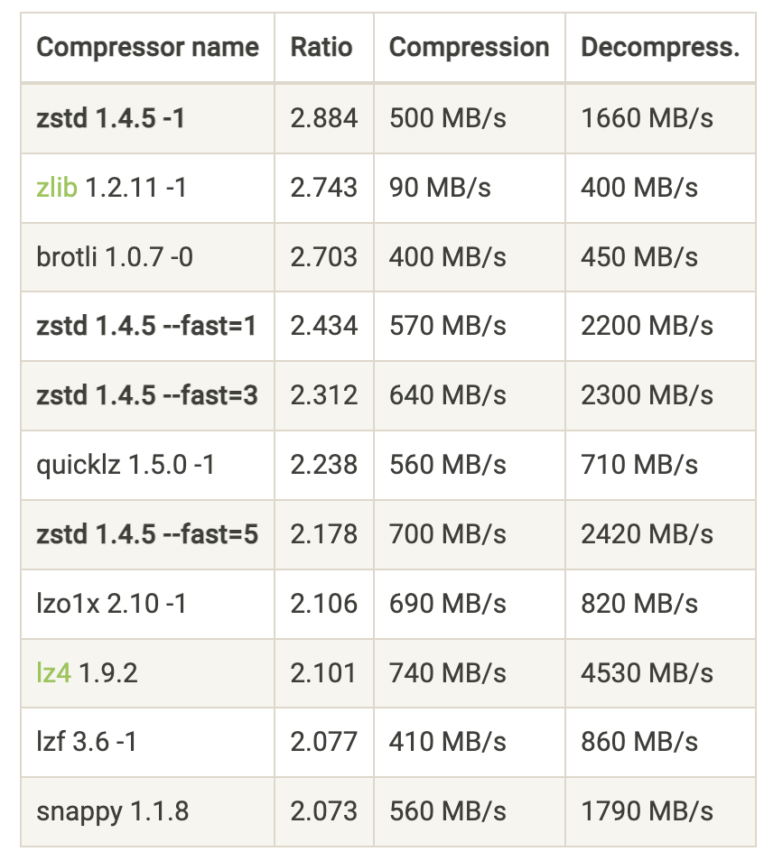Summary
In this chapter we covered the LZ77 algorithm, it's universality proof sketch and practical considerations for implementation. We saw that LZ77 based techniques are widely used in practice due to their good compression and speed performance on real-life datasets. We also saw that several design choices (window size, match-finding strategy, entropy coding approach) affect the performance of LZ77 implementations.
Before we wrap up, let's understand that universal doesn't mean perfect. LZ77 is universal in an asymptotic sense, but need not be the best choice for a given dataset. Even if it is ideal, there are things to consider beyond the compression rate - speed, memory usage and so on. And as discussed above choices made in LZ77 implementations play a big role in its performance.
That's basically it for LZ77! In the next chapter, we will wrap up lossless compression and suggest some practical tips when it comes to selecting a lossless compressor your data. A few parting notes on further reading:
- We didn't talk about LZ78 and LZW - similar core ideas but slightly different tree-based parsing method
- For LZ78, possible to prove very powerful universality results, including non-asymptotic ones!
- In particular can show that LZ78 gets compression rate within $O(\frac{k}{\log n}+\frac{\log\log n}{\log n})$ of the optimal $k$th order model for any sequence.
- For a more theoretical treatment, check out the EE376C notes in the resources section.
- There is much more on LZ77 we didn't cover (e.g., repcodes, optimal parsing). Information about these can be found in certain blogs in the resources section or in the actual implementation/documentation of compressors like zstd.
Practical tips on lossless compression
Over the last several chapters, we have covered the theory and algorithms behind lossless compression. We understood the fundamental limits (entropy and entropy rate), looked at various prefix-free codes and entropy coders like Huffman coding, Arithmetic coding and ANS. We also saw how to deal with non-IID sources using context-based coding and universal compression algorithms like LZ77. Each of these ideas was optimal in some sense. In this chapter, we will look into how you could use this knowledge in practice when you are faced with a real world compression problem.
The first question you want to ask of yourself is:
Is compression the most pressing problem you are facing?
Try to think about the following:
- Do you have a lot of data that needs to be stored/transmitted?
- Is the cost of storage/transmission significant enough to warrant investing time and resources into compression?
- Will compression just save on storage or will it also improve performance (e.g., faster data transfer, reduced latency)?
You want to make sure you are solving the right problem! Many times compression is a cost-saving measure, but maybe your business is not at the point where this is a priority.
Suppose you convinced yourself that you have too much data or it is indeed becoming a bottleneck in some way. The next question you want to ask is:
Is it possible you don't need all this data? Can you eliminate the entire data or parts of it?
- Identify parts of data that are costing the most:
- Can you get rid of it or change the representation? Do you need the text-based logs at full fidelity? Can you sample the data?
- Make sure you use your compression knowledge to understand what's really contributing to the size of the data. A long string will hardly take up any space it is repeated many times (e.g., the server host name in a log that repeats for every request). Whereas a short string of random characters (e.g., unique identifiers, hashes) will be incompressible and take up space after compression.
- Does the identifier need to be so random? Is there a real security reason behind all the random incompressible strings in your data?
- Can you get rid of it or change the representation? Do you need the text-based logs at full fidelity? Can you sample the data?
- Do you need to store the data for so long? Can you filter it down to fewer fields or aggregate it in some way?
- Sometimes legal requirements and unavoidable to store.
- What is your data access pattern?
- Backup/archive (cold storage) cheaper than hot storage.
Also: lossy compression is crucial for multimedia data - starting in the next chapter!
Remember that compression is not only about storage. It can have multiple benefits like:
- memory reduction
- bandwidth reduction
- faster querying
So we reached this point where we want to compress some data and need to compress it losslessly.
You definitely need to store this data losslessly! Now what?
There can be so many approaches, and sadly many of the suboptimal ones are pretty commonly undertaken. Being a compression expert, it is very important to avoid the following Things not to do:
- Use your recently acquired compression knowledge and straightaway start spending a bunch of time developing your own compressor. Implement LZ77 and all the entropy coders on your own.
- Search online and purchase the license to a fancy looking compression solution.
- Use CMIX since your company deserves the best possible compression irrespective of the compute costs.
- Use gzip because LZ77 is an universal algorithm and so it has to be the best compressor for every occasion, and use it with the default settings since that's the popular thing.
- Make a statistically accurate model of your data, design a predictor, and then use a context-based arithmetic coder.
We are not saying these approaches can never make sense, but they are not the first step!
A much better approach is to:
Understand the application requirements, try existing compressors like zstd and then evaluate whether there are benefits to create a domain specific compressor based on an approximate model for the data.
Understand your application
- Resource requirements - compression/decompression speed/memory - this is the single most important factor in choosing a compressor in practice. Sometimes for write-once-read-many applications, decompression speed can be more important than compression speed. Whereas in some real-time applications, both compression and decompression speed are crucial.
- Where will compression and decompression happen?
- Closed system owned by you? Deployed by customers? Open source library? Production use vs. research?
- How will compression and decompression happen?
- CLI? Library in some programming language?
- Is the data homogenous? Is there a lot of the same kind of data? For example, you could have a lot of log files of the same format, or genomic data. On the other hand, you could be running a cloud storage service where users can upload arbitrary files.
All these would affect your choice of compressor (or your decision to build your own), as well as how to deploy it.
Use compression benchmarks
Compression benchmarks are a great way to compare different compressors on a common ground. They provide standardized datasets, evaluation metrics and comparison plots. Let's look a popular benchmark available at http://quixdb.github.io/squash-benchmark/unstable/. In general, you want to measure compression ratio as well as compression and decompression speed on your specific dataset or on a general corpus, and then find the most prefered operating point depending on your application requirements.

In the plot above, you see the compression ratio vs. compression speed for some corpus (for different levels of different compressors). You can see LZ4 handily wins on compression speed, while ZPAQ provides excellent compression ratio at the cost of speed. zstd seems to provide a good trade-off between the two. If you want to get slightly better compression ratio than zstd but not be extremely slow, you can try bsc or bzip2. Some compressors like gzip are not on the pareto frontier so you should ideally never use it (unless you only have KBs of memory). As you can see such benchmarks are a great way to quickly narrow down your choices.

Similarly, the plot above shows compression ratio vs. decompression speed. Again, LZ4 is the fastest, while zstd provides a good trade-off. Most LZ77 based compressors (gzip, zstd, brotli) are pretty fast at decompression (since it's just entropy decoding followed by memcpy), while BWT based compressors (bzip2, bsc) are slower.
General rule of thumb
With the above understanding, here are some rules of thumb to guide your choice of compressor:
- zstd has very fast decompression, and a variety of compression levels - should be the first thing to try. Don't use gzip unless you have a very good reason (e.g., your readers can't consume zstd).
- To go even faster, try LZ4. LZ4 uses a very fast match-finder and doesn't use entropy coding making both compression and decompression fast.
- For slower but better compression (e.g., you want to store the data for archiving, and storage cost is your primary objective), you can try out:
- LZMA based compressors (LZ77+arithmetic coding) (7-zip, xz)
- BWT based compressors (bzip2, bsc) - faster compression (than LZMA), slower decompression. We didn't cover BWT in these notes, but it is a reversible transformation that makes the data compressible by creating repetitive patterns.
- For even more resource intensive - try context based arithmetic coding with $k$th order, PPMd, etc. (these don't always beat LZ/BWT - check for your data!)
- CMIX/NNCP/LLM - if you want to understand the limits, rarely useful in practice due to extreme resource requirements.
Using zstd and using it well
- Use the latest version
- Choose the right level (1-19, also negative and ultra levels)
- sometimes makes sense to use custom advanced parameters (e.g., window size, hash length). Levels are just presets for these advanced parameters, and you can set them manually if you want more control (recall it doesn't affect the decompression).
- Use CLI/library in language of your choice - zstd also supports multithreaded compression
- Reuse zstd context objects if processing multiple files. There is some overhead in creating these objects and reusing them can significantly speed up compression/decompression if you are processing many files.
- For small files, consider using dictionary compression (check out the Small data section in the zstd blog post). This is helpful when you have many small files with similar format or content. While you can't expect to find matches within a small file, you can find matches across files using a shared dictionary. zstd provides tools to build such dictionaries from sample data, and then you can use those dictionaries to compress small files as long as the same dictionary is used for decompression.
Domain specific compressors
So we've seen that general-purpose compressors, and specifically zstd, are a great starting point for lossless compression. The question arises:
When does a domain specific compressor make sense?
- You see noticeable gap between existing compressors and estimated entropy. Theory super useful here to meaningful estimates!
- You can do well while being faster than existing compressors (using the structure of the data to "help out" zstd make smarter choices). An example could be that in a table you expect a column to only have matches within the column, whereas zstd would search for matches across the entire data.
- Easier if closed ecosystem since it's easier to deploy, maintain and make sure all consumers can decompress.
- There is lots of data of the same type (homogenous data) making investment worth it - check out the talk by Yann Collet to understand all these aspects that come after you build your compressor. Genomics is a great example of this where the vast amount of homogenous data and the huge storage costs make it worthwhile to build domain specific compressors. Other cases include a large company having there own proprietary data format that is used across the company, or a startup whose entire product is based on storing some specific kind of data (e.g., time series data).
- design
- implement
- test
- format and versioning (with compatibility guarantees)
- monitoring and maintenance
- portability and language support
The general approach to building a domain specific compressor is to parse (columnarize) your data, apply various transforms to the fields and make them compressible by general-purpose compressors like zstd. The idea is that we can make the job of zstd easier by removing redundancies and making patterns more explicit. OpenZL: A Graph-Based Model for Compression is a great paper that describes such a general approach to building domain-specific compressors.
That's all on lossless compression, and we hope you found these notes useful! Next up, we will start our journey into lossy compression, starting with the basics of quantization.
Lossy data compression
The second set of lecture notes pertains to lossy data compression
Lossy Compression Basics and Quantization
Recap
In the first half of this course, we learned about lossless compression techniques and the fundamental limits imposed by entropy. We also learnt about the tradeoffs for various entropy coders. Here is a summary:
- Learnt about fundamental limits on lossless compression: entropy, $H(p)$
- Thumb rule: $L(x) \propto \lceil log_2(1/p(x)) \rceil$
- Learn about various lossless compressors aka entropy coders and their implementations
- Block codes: Shannon coding and Huffman coding
- Streaming codes: Arithmetic coding and Asymmetric Numeral Systems
- Universal (pattern) matching codes: LZ77
- Learnt about how to deal with non-IID sources
- Context-based coding
- Adaptive coding
Introduction
However, today we want to discuss a different setting. Many real-world data sources such as audio, images, and video are continuous in nature rather than discrete. To represent these sources digitally, we need to approximate and quantize them, which inherently introduces some loss of information. Previously, we assumed a discrete information source $X$ that could be losslessly compressed by entropy coding techniques like Huffman or arithmetic coding. The discrete entropy $H(X)$ represented a hard limit on the best possible lossless compression. Let's think about a continuous source $X$ now. How much information does it contain?
Quiz-1: How much information does a continuous source X contain?
A continuous source contains an infinite amount of information, so it cannot be represented digitally in a lossless manner. This is in-fact related to a fundamental property about real numbers: they are uncountable, i.e., there are infinite real numbers between any two real numbers. Instead, we need to approximate it by quantizing to a discrete representation. This quantization step will inevitably induce some loss or distortion.
The key aspects of lossy compression are:
- It allows some loss of information or fidelity in order to achieve higher compression. The original source cannot be perfectly reconstructed.
- Lossless compression is a special case of lossy compression with zero distortion.
- Quantization is used to convert the continuous source into a discrete representation. This is a fundamental part of lossy compression.
- Entropy coding is still widely applicable and typically used as the final step after quantization.
Lossy Compression Basics: Rate-Distortion Tradeoff
A continuous source contains infinite information, so we cannot represent it exactly. We need to approximate it, which implies some unavoidable loss of information.
Distortion (D) is a quantitative measure of this loss of information introduced by the approximation/quantization process. Common distortion metrics include:
- Mean squared error (MSE): $D = \mathbb{E}[(X - \hat{X})^2]$
- Mean absolute error (MAE): $D = \mathbb{E}[|X - \hat{X}|]$
In lossy compression, we have a choice regarding the tradeoff between rate and distortion:
Rate (R) refers to the number of bits used per sample to represent the lossy approximation of the source.
Higher rate implies we can represent the source more accurately with lower distortion D.
Lower rate means we have to tolerate more distortion to achieve higher compression.
This inherent tradeoff between rate R and distortion D is fundamental to lossy compression and quantization. Figure below shows a cartoon of the rate-distortion tradeoff. Fundamental to this discussion is the fact that we always strive to achieve the best possible rate-distortion tradeoff, i.e.
- given a distortion level ($D^{*}$), we want to achieve the lowest possible rate ($min~\text{R}$)
- given a rate ($R^{*}$), we want to achieve the lowest possible distortion ($min~\text{D}$)
In next set of notes, we will learn more about the rate-distortion theory which provides a theoretical framework for this tradeoff.

 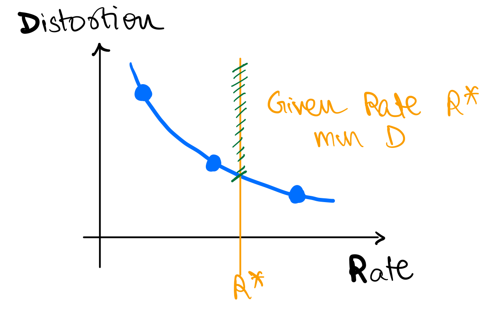
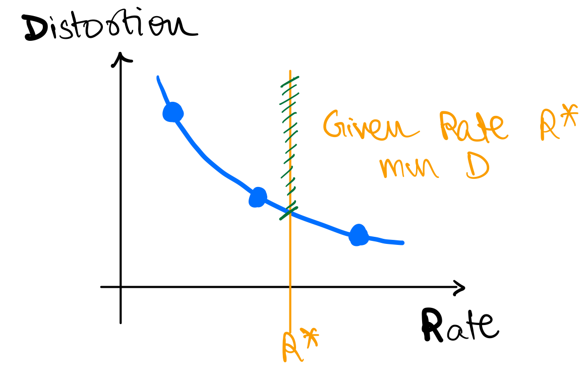
Example
Let's work through an example together.
Example 1
- Let's say you are measuring temperature (
T) in a room, say in Celsius, at an hourly interval.- Remember, physical
Tis a continuous source.
- Remember, physical
- Say your sensor is very sensitive and it records
T = [38.110001, 36.150901, 37.122020, 37.110862, 35.827111]
Quiz-2: How many bits do we want to represent T?
It depends on the application! If we are using it to control the AC, we might need more bits than if we are using it to decide whether to wear hoodie or T-shirt. In either case,
- we need to decide on the distortion we are OK with
- we can agree these many decimals are waste of bits
Quiz-3: What are some reasonable values to encode?
One reasonable way to encode is to round T to the nearest integer, i.e., T_lossy = [38, 36, 37, 37, 35]. This is similar to converting T to int from float.
Quantization
What we did in the previous example is called quantization (or binning).
- Quantization is the process of mapping a continuous source to a discrete source.
- Quantization is a lossy process, i.e., it introduces distortion.
- Quantization is a fundamental operation in lossy compression!
- Quantized values are also sometimes called symbols or codewords, and the set of quantized values is called codebook or dictionary.
- In previous example, codebook is
{35, 36, 37, 38}and codewords for each symbol are{35, 36, 37, 37, 35}.
- In previous example, codebook is
Quiz-4: For a codebook of size N, what is the rate R?
The rate $R = \log_2(N)$ because we have $N$ quantized symbols and we need $\log_2(N)$ bits to represent each symbol. Alternatively, we can say the quantized value for each symbol can take $2^R$ unique values.
Quantization Example - Gaussian
Example 2
Now say, X is a Gaussian source with mean 0 and variance 1, i.e., $X \sim \mathcal{N}(0, 1)$. Say we want to represent X using just 1 bit per symbol.
Quiz-5: What are some reasonable values to encode?
We can decide to convey just the sign of X, i.e., $\hat{X} = \text{sign}(X)$ as the distribution is symmetric around 0. Say we get a positive value for $\hat{X}$, what should be the quantized value of the recovered symbol? For this, we need to decide on the distortion we are OK with. For today's discussion let's say we are concerned about MSE distortion.
Quiz-6: What should be the codebook for this example?
If you have taken signal processing, you know that the conditional expectation of X given the observation is the best linear estimator for MSE distortion. This is called Minimal Mean Square Estimator (MMSE). Mathematically, if we want to find
If you have not seen this before, here are some resources:
Therefore, in our case, the codebook should be $\mathscr{C} = \left{\mathbb{E}[(X | \hat{X} > 0)], \mathbb{E}[(X | \hat{X} < 0)]\right}$.
For gaussian, this is $\mathscr{C} = \left{\sqrt{\frac{2}{\pi}}, -\sqrt{\frac{2}{\pi}}\right}$. We can work this out as follows: $$ \begin{aligned} \mathbb{E}[(X | \hat{X} > 0)] &= \int_{0}^{\infty} x \frac{2}{\sqrt{2\pi}} e^{-\frac{x^2}{2}} dx \ &= \sqrt{\frac{2}{\pi}} \int_{0}^{\infty} x e^{-\frac{x^2}{2}} dx \ &= \sqrt{\frac{2}{\pi}} \left[-e^{-\frac{x^2}{2}}\right]_{0}^{\infty} \ &= \sqrt{\frac{2}{\pi}} \end{aligned} $$ where the first step follows from definition of conditional expectation and symmetry of gaussian distribution around 0. Similarly, we can show that $\mathbb{E}[(X | \hat{X} < 0)] = -\sqrt{\frac{2}{\pi}}$.

Scalar Quantization

This is an example of scalar quantization. In scalar quantization, we quantize each symbol independently. The figure above explains the process of scalar quantization. Quantization can be thought of as a function which maps continuous symbols $X$ to the reconstructed symbols $\hat{X}$. The quantization function is called quantizer and is denoted by $Q(\cdot)$. The quantizer is defined by the codebook $\mathscr{C}$, which is the set of quantized values. The quantizer maps each symbol $X$ to the nearest quantized value in the codebook, i.e., $\hat{X} = Q(X) = \text{argmin}_{y \in \mathscr{C}} d(X,y)$ where $d(\cdot, \cdot)$ is the distortion (or some other distance) metric. The process defines decision thresholds which are the regions where all values of $X$ are mapped to the same quantized value $\hat{X}$ in the codebook $\mathscr{C}$.
More formally, we can also think of a quantizer as a partition of the input space $\mathbb{R}$ into $N$ disjoint regions $S_i$ such that $\bigcup_{i=1}^N S_i = \mathbb{R}$ and $S_i \cap S_j = \emptyset$ for $i \neq j$ and a mapping from each region $S_i$ to a quantized value $y_i \in \mathscr{C}$.
Vector Quantization
So far, we are quantizing each symbol independently. But can we do better? Maybe we can work with two (or more) symbols at a time? Say we have $X = [X_1, X_2]$, where $X_1, X_2 \sim \mathcal{N}(0, 1)$
- you can also think of it as you generated
2*Nsamples from $\mathcal{N}(0, 1)$ and then split them into two groups of sizeN(similar toblock codesin lossless compression) - or you can think of it as you have two sensors measuring the same source
- or you can think of it as having two sensors measuring two different sources
Quiz-7: We want to compare it with 1 bit/symbol scalar quantization. What's the size of codebook allowed?
The size of the codebook will be $2^{{1~\text{bit}/\text{symbol}}\times{2~\text{symbol}/\text{code-vector}}} = 4$. Generalizing, we can have codebook of size $N=2^{R*k}$ for vectors (blocks) of size $k$ and $R$ bits/symbol. In other words, $R = (\log_2 N) / k$ bits/symbol since we are using $N$ quantized values to represent $k$ symbols.
More formally, generalizing what we have seen so far,
- A quantizer is a mapping $Q: \mathbb{R}^{k} \rightarrow \mathscr{C}$ where $\mathscr{C}=\left{\underline{y}{i}\right}{i=1}^{N}$ is the "codebook" or "dictionary" comprising of $N$ $k$-dimensional vectors.
- The mapping is defined by: $Q(\underline{x})=\underline{y}{i} \text { if } \underline{x} \in S{i}$ where $\left{S_{i}\right}{i=1}^{N}$ is a partition of $\mathbb{R}^{k}$
$\bigcup{i=1}^{N} S_{i}=\mathbb{R}^{k}; \quad S_{l} \cap S_{m}=\phi, l \neq m.$ - The rate is $R=\frac{\log N}{k} \frac{\text { bits }}{\text { sample }} ; N=2^{k R}$
Vector quantization provides following benefits over scalar quantization:
- We can exploit dependence between vector components
- We can have more general decision regions (than could be obtained via Scalar Quantization)
The image below shows a basic example where vector quantization provides advantage over scalar quantization. Assume you have two dimensional probability density $f(X_1, X_2)$ as shown and you want to quantize it. This represents a case where both $(X_1, X_2)$ are uniformly distributed with same sign.
You can either quantize each dimension independently (scalar quantization) or you can quantize both dimensions together (vector quantization). The figure below shows the decision regions for both cases. We take a specific example for vector quantization as shown in the figure. For scalar quantization we have $6\times6$ codewords, i.e. $N=36$ and therefore the rate is $log_2(6^2)/2 = log_2(6)$, whereas for the vector quantizer we only need a strict subset of the scalar quantize codewords requiring half of the codewords, i.e. $N=18$ and therefore the rate is $log_2((6^2/2)/2 = log_2(6) - 1/2$. It is obvious to see here that the distortion for both these quantizers will be same but the rate for vector quantizer is lower.
This is also obvious intuitively! Vector quantization allows us to exploit the correlation between the two dimensions and therefore we can achieve the same distortion with lower rate. It takes advantage of the fact that both dimensions are uniformly distributed with same sign. Therefore, vector quantization provides more flexibility in choosing the decision regions.
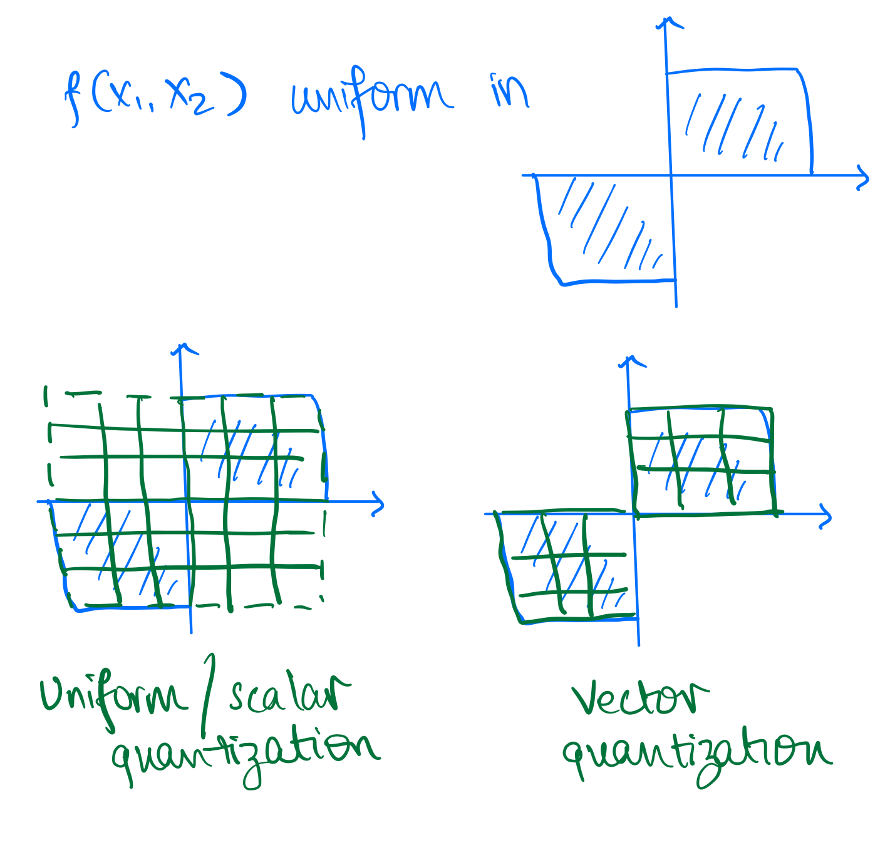
Some additional comments on VQ
Optimal regions are generally not uniform (as in scalar quantization) even in simple uniform IID case! In the 2D case of uniform IID, a hexagonal lattice provides most optimal regions with respect to MSE distortion. This is called lattice quantization or Voronoi diagram and can accommodate more than 2 dimensions. In the case of uniform IID variables in 2D, $\frac{MSE_{lattice}}{MSE_{SQ}} \approx 0.962$. This conveys two points to us:
- VQ performs better than SQ even in simple uniform IID case. As seen previously it performs even better in correlated cases.
- This can be a lot of effort for little gain given the source distribution, e.g. in this case we only gain 3.8% in MSE distortion.
Here is a proof for the above result:
Scalar Quantization of each component separately would yield square decision regions of the form as shown in following figure, where $\Delta$ is the quantization step size.

The area of the decision region is $A_1 = \Delta^2$. Therefore, since we have uniform
$$ \begin{aligned} \operatorname{MSE}1=\int{-\frac{\Delta}{2}}^{\frac{\Delta}{2}} \int_{-\frac{\Delta}{2}}^{\frac{\Delta}{2}}\left(x^2+y^2\right) d x d y &=\int_{-\frac{\Delta}{2}}^{\frac{\Delta}{2}}\left[\frac{x^3}{3}+\left.y^2 x\right|{-\frac{\Delta}{2}} ^{\frac{\Delta}{2}}\right] d y &=\int{-\frac{\Delta}{2}}^{\frac{\Delta}{2}}\left[\frac{\Delta^3}{12}+y^2 \Delta\right] d y &=\left[\frac{\Delta^3}{12}y+\frac{y^3}{3}\Delta\right]^{\frac{\Delta}{2}}_{\frac{-\Delta}{2}} \ & =\frac{\Delta^4}{12}+\frac{\Delta^4}{12}=\frac{\Delta^4}{6} \end{aligned} $$
Alternatively, we could have chosen a vector quantizer with hexagonal decision regions as shown below:

For this case, using symmetry, the area of the decision region is six times a triangle shown below. Therefore, $A_2 = 6 \cdot (\frac{1}{2}) \cdot (\frac{\sqrt{3}}{2} \delta) \cdot \delta = \frac{3 \sqrt{3}}{2} \delta^2$.

Finding the MSE is left as an exercise to the reader, but it can be shown that $$ \operatorname{MSE}_2 = \frac{5\sqrt{3}}{8}\delta^4 $$
For comparing these two schemes, we will compare them for $\Delta$ and $\delta$ such that $A_1=A_2$, so that we have same rate (same number of quantization points covering the same area). This gives us the desired result $$\frac{\operatorname{MSE}_2}{\operatorname{MSE}_1}=0.962$$
Conslusion: Even for a simple uniform IID source, there is benefit in vector quantization over scalar quantization.

The above image is a paper abstract from On universal quantization, Ziv. As you can see under certain conditions, scalar quantization can be competitive with vector quantization. However, in general, vector quantization is better than scalar quantization.
Vector Quantization Algorithm
In general, optimal regions are not easy to compute, and we need to resort to iterative algorithms. Quiz-8: Have you seen this problem before in some other context?
It's same as K-means clustering algorithm in ML! Also called as Lloyd-Max algorithm or Generalized Lloyd algorithm. We want to cluster data points into N clusters corresponding to codebook (k in k-means) such that the average distortion is minimized.
- First proposed by Stuart Lloyd in 1957 (motivated by audio compression) at Bell Labs
- Was widely circulated but formally published only in 1982
- Independently developed and published by Joel Max in 1960, therefore sometimes referred to as the Lloyd-Max algorithm
- Generalized Lloyd specialized to squared error is the Kmeans clustering algorithm widely used in Machine Learning
K-means Algorithm
Given some data points, we can compute the optimal codebook and the corresponding partition of the data points. The main idea is to do each-step iteratively:
- Given a codebook, compute the best partition of the data points
- Given a partition of the data points, compute the optimal codebook
- Repeat until convergence
Here is a pseudocode to illustrate the algorithm:
def k_means(data, k, max_iterations=100):
centroids = initialize_centroids(data, k) # some random initialization for centroids (codebook)
for iteration in range(max_iterations): # some convergence criteria
# Assign data points to the nearest centroid -- this is the partition step
clusters = assign_data_to_centroids(data, centroids)
# Calculate new centroids -- this is the codebook update step
new_centroids = calculate_new_centroids(data, clusters)
# Check for convergence
if np.allclose(centroids, new_centroids):
break
centroids = new_centroids # update centroids
return clusters, centroids
def initialize_centroids(data, k):
# Randomly select k data points as initial centroids
return data[np.random.choice(len(data), k, replace=False)]
def assign_data_to_centroids(data, centroids):
# Assign each data point to the nearest centroid
distances = np.linalg.norm(data[:, np.newaxis] - centroids, axis=2)
clusters = np.argmin(distances, axis=1)
return clusters
def calculate_new_centroids(data, clusters):
# Calculate new centroids as the mean of data points in each cluster
new_centroids = np.array([data[clusters == i].mean(axis=0) for i in range(len(np.unique(clusters)))])
return new_centroids
More resources
Following google colab notebook contains code and additional examples for vector quantization: Notebook
We only scratched the surface of quantization. There are many more advanced topics:
- Constrained vector quantization
- Predictive vector quantization
- Trellis coded quantization
- Generalized Lloyd algorithm
For more details, see following resources:
Next time
We will look into the question of what is the fundamental limit on lossy compression, i.e. what is the best possible rate-distortion tradeoff?
Rate Distortion Theory
Entropy, Conditional entropy Recap:
In case of lossless compression we saw information theoretic quantities such as entropy: $H(X)$, conditional entropy: $H(X|Y)$ etc.
To recap:
-
Entropy: Let $X$ be a random variable, with alphabet ${1, 2, \ldots, k}$ and discrete probability distribution $P = { p_1, p_2, \ldots, p_k}$. i.e. one can imagine the samples generate by the random variable $X$ to be independent and identically distributed as per distribution $P$.
Then the entropy $H(X)$ of the random variable is defined as: $$ H(X) = \sum_{i=1}^k p_i \log_2 \frac{1}{p_i} $$
-
Joint Entropy: The joint entropy of discrete random variables $X,Y$ with distribution $P(x,y)$ is simply the entropy of the joint random variable $X,Y$.
$$ H(X,Y) = \sum_{x,y} p(x,y) \log_2 \frac{1}{p(x,y} $$
- Conditional Entropy/Relative Entropy The conditional entropy between two discrete random variables $X,Y$ is defined as:
$$ H(Y|X) = \sum_{x,y} p(x,y) \log_2 \frac{1}{p(y|x)}$$
Note that $H(Y|X)$ has alternative definitions:
$$H(Y|X) = \sum_x P(x)H(Y|X=x)$$
i.e. it is the average of the entropies $H(Y|X=x)$
Mutual Information
For today's discussion another important information theoretic quantity which would be interesting to us is the mutual information $I(X;Y)$
Let $X,Y$ be two random variables with joint distribution $p(x,y)$. Then we define the mutual information between $X,Y$ as:
$$I(X;Y) = H(X) + H(Y) - H(X,Y)$$
One intuitive explanation for mututal information is that it is the difference between sum of individial entropies and the joint entropy between two random variables $X,Y$, and so in a way capture how much information is common between $X,Y$.
Mutual information has some nice properties, which we will use:
- property-1: $I(X;Y) = I(Y;X)$: It is clear from the symmetry that mutual information between $X,Y$ is equal to mutual information between $Y,X$
$$I(X;Y) = H(X) + H(Y) - H(X,Y)$$
-
property-2: $I(X;Y) = H(X) - H(X|Y)$: This can be shown using the property of joint entropy: $H(U,V) = H(U) + H(V|U)$. $$ \begin{align*} I(X;Y) &= H(X) + H(Y) - H(X,Y) \ &= H(X) + H(Y) - H(Y) - H(X|Y) \ &= H(X) - H(X|Y) \end{align*} $$
-
property-3: $I(X;Y) = D_{KL}(p(x,y)||p(x)p(y))$:
$$ \begin{align*} I(X;Y) &= H(X) + H(Y) - H(X,Y) \ &= \sum_{x} p(x) \log_2 \frac{1}{p(x)} + \sum_{y} p(y) \log_2 \frac{1}{p(y)} + \sum_{x,y} p(x,y) \log_2 \frac{1}{p(x,y)} \ &= \sum_{x,y} p(x,y) \log_2 \frac{p(x)p(y)}{p(x,y)} \ &= D_{KL}(p(x,y)||p(x)p(y)) \end{align*} $$
-
property-4: $I(X;Y) \geq 0$: This follows from the non-negativity of the $D_{KL}$ and the property-3.
Mutual Information has a very important connection to lossy compression, but even beyond that in Information theory in general. For more information look at the EE276 course notes on communication capacity
Lossy Compression setup
Let us recap the lossy compression setup, and now that we are going to discuss this in detail, let us define it more concretely.
Lets say we are given a sequence of random variables $X_1, X_2, \ldots, X_k$, Our goal is to encode this sequence $X_1^k$ to $n=\log_2(N)$ bits, using a lossy encoder. We also decode back the $N$ bits to reconstruction $Y_1, Y_2, \ldots, Y_k$, using a lossy decoder.
## Encoding
X_1,X_2, ..., X_k ====> [LOSSY ENCODER] ==> 0100011...1 (n = log2(N) bits)
## Decoding
0100011...1 (N bits) ======> [LOSSY DECODER] ==>
Y_1, Y_2, \ldots, Y_k
At this point, we need a few more terms to understand the performance of our lossy compressor:
- Rate $R$: the compression rate $R$ is defined as, the average number of bits used per source symbols:
$$ R = \frac{\log_2(N)}{k} = n/k$$
- distortion $D$: As the compression is not lossless, we also need to know how far the reconstruction $Y_1^k$ is from the input $X_1^k$. $$ \text{distortion} \rightarrow d(X_1^k, Y_1^k)$$
For simplicity lets stick to per-symbol distortion like mean square error, or hamming distortion. Thus,
$$ d(X_1^k, Y_1^k) = \sum_k d(X_i, Y_i)$$
For example:
$$ \begin{align*} \text{hamming distortion} &\rightarrow d(x,y) = \mathbb{1}(x\neq y) \ \text{mse distortion} &\rightarrow d(x,y) = (x-y)^2 \end{align*} $$
- Average Distortion We mainly care about the average distortion: $$ \text{expected distortion} \rightarrow \bar{D} = \mathbb{E}[d(X_1^k, Y_1^k)] $$ over the random variables $X_1^k, Y_1^k$.
Rate-distortion function
One interesting question to answer is: "What is the best rate R we can achieve for distortion at max D"? i.e. If the target distortion of our lossy compressor is $D$, what is the best we can compress the data $X_1^k$ to? We define this optimal rate to be $R(D)$, the rate-distortion function.
Thus:
$$ R(D) \triangleq \min_{\text{all lossy compressors s.t.} \bar{D} \leq D} R$$
This is the precise problem Shannon solved.
Let $X_1,X_2,\ldots$ be data generated i.i.d. Then, the optimal rate $R(D)$ for a given maximum distortion $D$ is:
$$ R(D) = \min_{\mathbb{E}d(X,Y) \leq D} I(X;Y)$$
where the expectation in the minimum is over distributions $q(x,y) = p(x)q(y|x)$, where $q(y|x)$ are any arbitrary conditional distributions.
Here are some examples:
Example-1: $R(D)$ for bernoulli r.v:
Let $X \sim Bern(0.5)$. and let $d(x,y) = \mathbb{1}(x\neq y)$ i.e the Hamming distortion. Then:
$$ R(D) = \begin{cases} 1 - h(D) & 0 \leq D \leq 0.5\ 0 & D > 0.5 \end{cases} $$
where $h(D)$ -> binary entropy function of $Bern(p) = h(p)$.
The $R(D)$ formula is not very intuitive. But, it is clear that:
-
$R(D)$ decreases as $D$ increases; this should be expected as the bits required should reduce if the allowed distortion $D$ is increasing.
-
$R(D) = 0$ if $D > 0.5$; This is also quite intuitve as if allowed distortion is $D > 0.5$, we can always just decode all zeros $Y_1^k = 000000...00$. For all zeros, the average distortion is $0.5$.
Example-2: $R(D)$ for gaussian r.v.:
Let's take a look at another example: Let $X \sim \mathcal{N}(0,1)$, i.e. the data samples $X_1, X_2, \ldots$ are distributed as unit gaussians. Also, lets consider the distortion to be the mean square distortion: $d(x,y) = (x-y)^2$ i.e the mse distortion. Then:
$$ R(D) = \begin{cases} \frac{1}{2} \log_2 \frac{1}{D} & 0 \leq D \leq 1.0\ 0 & D > 1 \end{cases} $$
Let's try to intuitively understand why this is the case:

- If $X_i$'s are i.i.d $\mathcal{N}(0,1)$, then it is clear that with high probability:
$$ \sqrt {\sum_{i=1}^k (X_i)^2} \lesssim \sqrt{k}$$
- This mainly follows from the law of large numbers, and that the variance of $X_i$ is $1$. Thus, we can say that $X_1^k$ will lie in a k-dimensional sphere of radius $\sqrt{k}$, with high probability.
For the remaining discussion, we can thus focus our attention on vectors $X_1^k$, only lying inside this sphere of radius $\sqrt{k}$.
- Now, lets say we want to cover this k-dimensional sphere of radius $\sqrt{k}$ with k-dimensional spheres of radius $\sqrt{Dk}$. How many spheres do we need?
We can approximate this number based on the volumes of the spheres:
$$ \begin{align*} N &\geq \frac{Volume(\sqrt{k})}{Volume(\sqrt{Dk})} \ &= \sqrt{1/D}^k \end{align*} $$
Although this approximation might feel very loose, as the dimension $k$ increases, it can be shown that the number of spheres of radius $\sqrt{Dk}$ required to cover the sphere of radius $\sqrt{k}$, is indeed approximately equal to:
$$ N \approx \left(\frac{1}{D}\right)^{k/2} $$
-
Note that we can use these $N$ spheres of radius $\sqrt{Dk}$, as centroids for vector quantization, as we saw in the last lecture, and we would get a distortion of at max $D$, as the squared distance between any point in the $\sqrt{k}$ sized circle is at max $D$ with one of the $N$ centroids.
-
Thus our $R(D)$, the rate for distortion at maximum $D$ is:
$$ \begin{align*} R(D) \leq \frac{\log_2 N}{k} \approx \frac{1}{2} \log_2 \frac{1}{D} \end{align*} $$
Hope this hand-wavey "proof" gives an intuition for the $R(D)$ function for unit gaussian. The proof logic can however be made more precise.
NOTE: Similar idea proof holds for general distributions, using typical sequences balls. We won't be able to go much into the details of the Shannon's lossy compression theorem in the course unfortunately, but here are lecture notes in case you are interested: EE376a Lossy compression notes
We can also experiment with this idea, here is the R-D curve for unit gaussian and the practical performance in $k=2$. We see that the R-D performance even with $k=2$ is quite reasonable.

We can also see the convergence as $k$ increases:
## Rate: 1, optimal_mse: 0.25
k: 1, N: 2, Rate: 1, mse_loss: 0.37
k: 2, N: 4, Rate: 1, mse_loss: 0.36
k: 4, N: 16, Rate: 1, mse_loss: 0.33
k: 8, N: 256, Rate: 1, mse_loss: 0.29
...
Achieving the R(D) in general
We saw briefly how we can achieve the $R(D)$ optimal function using vector quantization for data distributed as i.i.d unit gaussians.
The Broad idea of using vector quantization can be actually shown to asymptotically optimal for any data distribution. i.e. as the dimension of data $k$ increases, using vector quantization, we can achieve optimal $R(D)$ performance.
Although the convergence w.r.t $k$ can be slow. In the next lecture we will see how we can accelerate this convergence.
Lossy compression theory
We continue with lossy compression and rate distortion function (Shannon's RD theory) and applications in current technologies.
We'll start with things that seem unrelated but we'll bring it all together towards the end. We'll only touch on some of the topics, but you can learn more in the references listed below and in EE 276.
We'll start with the rate distortion function and see how it carries over to sources with memory. We'll also look into Gaussian sources with memory. Finally, we'll look at the implications to transform coding which is commonly used today.
Reminder from linear algebra:
Consider $Y = A X$ (matrix vector product)
Then the square of the Euclidean norm (sum of square of components), also denoting the energy in the signal is $$||Y||^2 = Y^T Y = X^T A^T A X$$
In particular, if $U$ is a unitary transformation, i.e., all rows and columns orthonormal vectors $U^T U = U U^T = I$, then we have $$Y = U X => ||Y||^2 = ||X||^2$$ This is called the Parseval's theorem which you might have seen for Fourier transform. In words, this says that the energy in transform domain matches the energy in the original.
If $Y_1 = U X_1$ and $Y_2 = U X_2$, then $||Y_1 - Y_2||^2 = ||X_1-X_2||^2$. That is to say, unitary transformation preserves Euclidean distances between points.
Lossy compression recap

Recall the setting of lossy compression where the information is lossily compressed into an index (equivalently a bit stream representing the index). The decoder attempts to produce a reconstruction of the original information.
The two metrics for lossy compression are:
- $rate = {{log N} \over k}$ bits/source component
- distortion $d(X^k, \hat{X}^k) = {1 \over k} \sum_{i=1}^k d(X_i,\hat{X}_i)$ [single letter distortion - distortion between k-tuples defined in terms of distortion between components]
Transform coding
Notation: we denote $X^k = (X_1,\dots,X_k)$ as $\underline{X}$ which can be thought of as a column vector.

Here we simply work with an arbitrary transform $T$, with the only requirement being that $T$ is invertible and we are able to efficiently compute $T$ and $T^{-1}$. In this framework, we simply apply our usual lossy encoding in the transform domain rather than in the original domain.
In particular, when $T (X) = U X$ for some some unitary $U$ (e.g., Fourier transform, wavelet transform). Then $$||Y-\hat{Y}||^2 = ||X-\hat{X}||^2 $$ This corresponds to the squared-error distortion. Any lossy compression you do on $Y$, you get the same square error distortion for the original sequence $X$ as for the $Y$.
Why work in the transform domain? Often in the transform domain, data is simpler to model, e.g., we can construct transform in a way that the statistics of $Y$ are simpler or we get sparsity. Then we can appropriately design lossy compressor to exploit the structure
Nowadays people even go beyond linear transforms, e.g., learnt transforms using deep learning models. Can even go to a vector in a smaller dimensional space, e.g., in VAE based lossy encoders. This can allow doing very simple forms of lossy compression in the transform domain.
Shannon's theorem recap
For "memoryless sources" ($X_i$ are iid ~$X$),
$$R(D) = min_{E[d(X,\hat{X})] <= D} I(X; \hat{X})$$
We sometimes write $R(X,D)$ to represent this quantity $R(D)$ when we want to be explicit about the source in question.
Beyond memoryless sources
Consider source $X^n$, reconstruction $\hat{X}^n$. Then,
$$R(X^n, D) = min_{E[d(X^n, \hat{X}^n)] \leq D} {1\over n} I(X^n; \hat{X}^n)$$
Just like $R(X,D)$ was the analog of entropy of $X$, $R(X^n, D)$ is the analog of entropy of the n-tuple.
Now assume we are working with a process $\mathbf{X} = X_1,X_2,X_3,...$ which is stationary. Then we can define $R(\mathbf{X}, D) = \lim_{n\rightarrow \infty} R(X^n, D)$. Similar to our study of entropy rate, we can show that this limit exists.
Shannon's theorem for lossy compression carries over to generality. That is, the best you can do for stationary processes in the limit of encoding arbitrarily many symbols in a block is $R(\mathbf{X}, D)$.
Rate distortion for Gaussian sources
Note: For the remainder of this discussion, we'll stick to square error distortion.
Why work with Gaussian sources? It is a good worst case assumption if you only know the first and second order statistics about your source. This holds both for estimation and lossy compression.
For $X ~ N(0,\sigma^2)$, denote $R(X,D)$ by $R_G(\sigma^2, D)$.
Recall from last lecture that $R_G(\sigma^2, D) = {1\over 2} \log {\sigma^2 \over D}$ for $D < \sigma^2$ (above it is just $0$).
We can compactly write this as $R_G(\sigma^2, D) = [1/2 \log {\sigma^2 \over D}]+$, where $[x]+ = max{0,x}$. This is shown in the figure below.

Similarly for $X_1 \sim N(0, \sigma_1^2)$, $X_2 \sim N(0, \sigma_2^2)$ independent, denote $R(X^2, D)$ by $R_G\left(\begin{bmatrix}\sigma_1^2\ \sigma_2^2\end{bmatrix} , D\right)$.
It can be shown that $$R_G\left(\begin{bmatrix}\sigma_1^2\ \sigma_2^2\end{bmatrix} , D\right) = min_{{1\over 2} (D_1+D_2)\leq D} {1\over 2} [R_G(\sigma_1^2, D_1) + R_G(\sigma_1^2, D_2)]$$ Another way to write this is $$R_G\left(\begin{bmatrix}\sigma_1^2\ \sigma_2^2\end{bmatrix} , D\right) =min_{\frac{1}{2} (D_1+D_2)\leq D}\ {1\over 2} \left[({1\over 2} \log \frac{\sigma_1^2}{D_1})+ + ({1\over 2} \log \frac{\sigma_2^2}{D_2})+\right]$$
Intuition: the result is actually quite simple - the solution is just greedily optimizing the $X_1$ and $X_2$ case (decoupled), and finding the optimal splitting of the distortion between $X_1$ and $X_2$.
Using convex optimization we can show that the minimum is achieved by a reverse water filling scheme, which is expressed in equation as follows:
For a given parameter $\theta$, a point on the optimal rate distortion curve is achieved by setting
- $D_i = \min {\theta, \sigma_i^2}$ for $i = 1,2$
- $D = {1\over 2} (D_1+D_2)$
And the rate given by $${1\over 2} \left[({1\over 2} \log \frac{\sigma_1^2}{D_1})+ + ({1\over 2} \log \frac{\sigma_2^2}{D_2})+\right]$$
This can be expressed in figures as follows (assuming without loss of generality that $\sigma_1^2 < \sigma_2^2$):
When $D$ is smaller than both $\sigma_1^2$ and $\sigma_2^2$, we choose both $D_1$ and $D_2$ to be equal to $D$ ($\theta=D$ in this case). We assign equal distortion to the two components, and higher rate for the component with higher variance.

When $D$ exceeds $\sigma_1^2$ but is below $\frac{1}{2}(\sigma_1^2 + \sigma_2^2)$, we set $D_1$ to be $\sigma_1^2$, and choose $D_2$ such that the average distortion is $D$. The idea is that setting $D_1$ higher than $\sigma_1^2$ doesn't make sense since the rate is already $0$ for that component.

When $D$ is equal to $\frac{1}{2}(\sigma_1^2 + \sigma_2^2)$ we can just set $D_1 = \sigma_1^2$ and $D_2 = \sigma_2^2$. Here the rate is $0$ for both components!

This generalizes beyond $2$ components. For $X_1, X_2, ... ,X_n$ independent with $X_i \sim N(0,\sigma_i^2)$, we define $R_G(\underline{\sigma^2}, D)$ analogously, and can very similarly show that $$R_G(\underline{\sigma^2}, D) = min_{{1\over n} \sum D_i \leq D} {1\over n} \left[{1\over 2} log {\sigma^2 \over D_i} \right]_+$$.
Similar to before, the minimum is given by $D_\theta = {1 \over n} \sum_{i=1}^n \min {\theta, \sigma_i^2}$, $R_\theta = {1 \over n} \sum_{i=1}^n [{1\over 2} \log {\sigma_i^2\over D_i}]$.
Rate-distortion for stationary Gaussian source
Going back to a process $X^n$ zero mean Gaussian, then for any unitary transformation $U$ if $Y^n =U X^n$ then we can show $R(X^n, D) = R(Y^n, D)$ [since the distortion is the same in both domains]. Recall that by using the transformation it's possible to go from a scheme for compressing $X^n$ to a scheme for compressing $Y^n$ (and vice versa) without any change in the distortion.
Therefore we can take the diagonalizing unitary matrix which converts $X^n$ to a $Y^n$ such that $Y^n$ has independent components. The variances of $Y^n$ will be the eigenvalues of the covariance matrix.
Thus, we have
$$R(X^n, D) = R_G ((\lambda_1, \dots, \lambda_n), D)$$ where the $\lambda_i$'s are the eigenvalues of the covariance matix of $X^n$.
When $X^n$ are the first $n$ components of a stationary Gaussian process $\mathbf{X}$ with covariance matrix $\Phi_n = {\phi_{|i-j|}}$ for $1\leq i \leq n$ and $1\leq j \leq n$, with $\phi_{k} = Cov(X_i,X_{i-k})$. Then we have $$R(X^n, D) = R_G(\overrightarrow{\lambda}^n,D)$$ where $\overrightarrow{\lambda}^n$ is the vector of eigenvalues of $\Phi_n$.
Now, we use a theorem to show a profound result for Gaussian processes.
Theorem (Toeplitz distribution) Let $S(\omega) = \sum_{k=-\infty}^{\infty} \phi_k e^{-j\omega k}$ be the spectral density of $\mathbf{X}$ and $G$ be a continuous function. Then $$\lim_{n\rightarrow \infty} \frac{1}{n}\sum_{i=1}^n G(\lambda_i^{(n)}) = \frac{1}{2\pi}\int_{-\pi}^{\pi} G(S(\omega) d\omega$$
Specializing this theorem to $G(\lambda)= \min{\theta,\lambda}$ and to $G(\lambda)= \left[\frac{1}{2}\log\frac{\lambda}{\theta}\right]_+$, we get
The rate distortion function of a stationary Gaussian process with spectral density $S(\omega)$ is given parametrically by $$D_{\theta} = \frac{1}{2\pi}\int_{-\pi}^{\pi} \min{\theta,S(\omega)} d\omega$$ $$R_{\theta} = \frac{1}{4\pi}\int_{-\pi}^{\pi} \left[\log\frac{S(\omega)}{\theta}\right]_+ d\omega$$
This is shown in the figure below, suggesting that the reverse water-filling idea extends to Gaussian processes once we transform it to the continuous spectral domain! This gives us motivation for using working in the Fourier transform domain!

Finally, for $D \leq \min_{\omega} S(\omega)$, we can show that $$R(D) = \left[\frac{1}{2} \log \frac{\sigma^2}{D}\right]$$ where $\sigma^2$ is the variance of the innovations of $\mathbf{X}$. This can be used to justify predictive coding ideas.
Reference
For more details on this, you can read the survey paper "Lossy source coding" by Berger and Gibson available at https://ieeexplore.ieee.org/document/720552.
Resources
Interested in data compression? Great! We list a few resources (apart from the lecture notes) which might be useful to take a look.
NOTE: If you find a resource which you found useful and is not listed here, please file an github issue at https://github.com/stanfordDataCompressionClass/notes.
1. Software
A great way to learn about data compression is to play around with the compression algorithms themselves.
- Stanford compression Library: A library of compression algorithms implemented in native python for accessibility and educational purpose. Take a look at the tutorials (in progress) to get started! We will also be using the library as a basis for the course assignments.
- Audio Compression code/book A python based implementation of audio compression, in form of tutorials.
- Introduction to Digital Video compression: Great hands-on tutorial on digital video coding.
- H264 in Python: Experimental implementation of H264 in pure Python
2. Video Resources
Interested in data compression? Here are some nice youtube videos to watch to get an introduction. Most of them are beginner-friendly and are useful to get a sense of the data compression.
Here are a set of videos to watch at leisure to get an intuition for compression:
- Compressor Head playlist: This is a series of short talks by a google engineer. Very good introductory videos
- Huffman Coding (Tom Scott): I love Tom Scott and how well he explains things. Here is a nice video on Huffman coding
- Why Snow looks terrible on video, Why Night scenes look bad on video: Very nice two videos by Tom Scott again which gives a brief peek into video compression algorithms
- PNG Image Compression: video on PNG lossless compression
- JPEG compression: A bit more detailed video on JPEG compression
- Arithmetic coding series: Great sequence of lectures Information theory in general and particularly on Arithmetic coding. One of the best I found on this subject.
- Designing Data Compression Solutions: Talk by Yann Collet (author of zstd and lz4) what comes next once you have your great compression idea.
3. Textbooks, research papers
Although there are no textbooks which exactly correspond to the course material, but here are few books which might be relevant.
- Elements of Information Theory: Classic textbook on Information Theory
- Introduction to Data Compression, Guy E. Blelloch: Set of lecture notes/book on Data Compression by Guy E. Blelloch, CMU 2013
- Data Compression Explained, Matt Mahoney: A nice set of lecture notes on Data Compression by Matt Mahoney.
- JPEG paper: Summary of JPEG by Gregory K. Wallace
- OpenZL: A Graph-Based Model for Compression: General approach to building domain-specific compressors
4. Blogs/websites
The web is filled with great engineers and researchers writing blogs related to Data Compression. We list a few below:
- Christopher Olah's Blog: A fun visual introduction to Information Theory.
- Yann Collet's Blog: Great blog by Yann Collet on implemeting fast and efficient data compression algorithms
- Fabian Giesen's blog: Blog by Fabian Giesen. (The parts related to rANS implementation are particularly great!)
- On understanding zlib: Introduction to zlib by Euccas Chen.
- Modern LZ Compression: Walk-through of modern LZ compressors by Gary Linscott.
- DCT: A nice blog post on DCT by Prof. Dr. Edmund Weitz
- DCT History: A small red on the history of DCT by Nasir Ahmed.
- Tossing a Biased Coin: An accessible exploration of how to generate fair randomness from a biased coin by Michael Mitzenmacher.
5. Course notes from EE 376C (Stanford)
The notes from EE376C are provided below, covering universal techniques in lossless and lossy compression, as well as applications in prediction and denoising. Students can refer to these notes for a deeper understanding of universal compression techniques including the proofs of universality.
- Part 1: Lempel-Ziv Compression
- Part 2: Context-Tree Weighting
- Part 3: Universal Denoising
- Part 4: Universal Lossy Compression
Homeworks
Please find here the homework problems for the latest iteration of the course!
- HW1: Due Oct 14, midnight (11:59 PM) [HW1 Solution]
- HW2: Due Oct 28, midnight (11:59 PM) [HW2 Solution]
- HW3: Due Nov 11, midnight (11:59 PM) [HW3 Solution]
- HW4: Due Dec 2, midnight (11:59 PM)
EE274 (Fall 25): Homework-1
- Focus area: Prefix-free codes, Basic Information theory
- Due Date: Oct 14, midnight (11:59 PM)
- Weightage: 15%
- Total Points: 135 (Written 100 + Code 35)
- Submission Instructions:
- Provided at the end of HW (ensure you read these!)
- We will be using both manual and auto-grading for the assignment submissions. Please follow the submission instructions carefully to ensure you get full credit for your submissions.
- Submission link:
- For written part: HW1-Written (100 points)
- For programming part: HW1-Code (35 points)
- Please post any questions on Ed, or feel free to contact the instructors during the office hours. We will be supporting Linux and Mac OS.
- We strongly recommend Windows users to use Windows Subsystem Linux (WSL). Refer to this instruction for setup. Follow the steps up to Update and upgrade packages. If you are using VS Code, continue with Set up your favorite code editor - Use Visual Studio Code.
NOTE: The homework looks longer that it actually is! We try to be verbose with the questions for clarity.
0. Python, SCL setup (10 points)
We will be using python as the programming language during the course for the assignments and for code demonstrations during the course. If you are not familiar with python, please take a look at the python tutorial contributed by our friends from the CS231n course.
Usually it is more convenient and safer to install python packages in a virtual environment. We will be using conda to do this
-
Install miniconda (https://docs.conda.io/en/latest/miniconda.html). Please follow the instructions to install miniconda on your machine
-
Create a virtual conda env using the python version
3.9(higher versions should be also ok)# create a new conda environment conda create --name ee274_env python=3.9 # activate the new conda environment conda activate ee274_envOnce you complete this step, you should see a prompt such as:
(ee274_env) âžœThis indicates that you are now in a virtual environment we created, which uses python 3.9. The virtualenv is useful to install packages etc. in an isolated environment without corrupting the rest of the machine. More details: https://uoa-eresearch.github.io/eresearch-cookbook/recipe/2014/11/20/conda/
Please run the following command to check the python version installed. Submit the output of this command in gradescope for credit.
(ee274_env) ➜ python --version -
For most of the course assignments and in-class demonstrations, we will be using the Stanford Compression Library (SCL).
Please clone the library as follows:
git clone https://github.com/kedartatwawadi/stanford_compression_library.git cd stanford_compression_library -
Install the library. This installs the SCL library in an editable way so you do not need to reinstall when you modify any files. This also installs any dependencies of SCL.
pip install -e .Once this is done let us ensure the library is installed correctly by running unit tests. Submit the output of this command in gradescope for credit. The results may include both passed and xfailed tests, but there should be no failed tests if you run the command on the
mainbranch.find scl -name "*.py" -exec py.test -s -v {} +
NOTE: We use the pytest framework to run tests in SCL. Each file of SCL also contains the tests for the block of code implemented in the file. The test functions are named as def test_xxx(...). For example, the file core/data_block.py contains a class DataBlock and a test test_data_block_basic_ops() to test its operations. Usually these tests are a great way to understand how the block of code in the file works. You can run individual tests as:
py.test -s -v scl/core/data_block.py
Feel free to look at different compressors in the compressors/ folder, and the tests to get yourself familiar with them!
- We will be using
EE274_Fall25/HWsbranch ofSCLfor releasing HWs. Checkout to the branch for getting access to HW problem templates.git checkout EE274_Fall25/HWs
You should see a scl/HWs/HW1 folder containing template files for the rest of the assignment. Going ahead, we will refer to files relative to scl folder in your stanford_compression_library folder. For example, HWs/HW1/hw1_p1.py refers to the file stanford_compression_library/scl/HWs/HW1/hw1_p1.py.
For more details about SCL and to get comfortable with it, we also created a SCL tutorial. You can find the SCL tutorial linked here.
1. Probability and Coin Toss (20 points)
Kedar is a big Cricket fan. In cricket (like many other sports), there is a coin toss in the beginning to determine which team gets the first chance to bat. However, Kedar thinks that the coin being used is biased and lands as Heads (H) much more often than tails (T). Let the probability of the coin landing on H be $p$.
Shubham suggests to Kedar that this problem can be solved (i.e. we can get a fair coin) by tossing the coin twice! If we get a H,Tsequence in the two tosses, then we mark it as a heads, while if we get a T,H sequence we can mark this as a tails. If we get a H,H or T,T then discard the result and start over!
-
[5 points] Do you think Shubham's solution is right? Please justify.
-
[5 points] What is the expected number of coin flips needed to get one
HorToutcome using Shubham's method? -
[5 points] Kedar is still not convinced and thinks that we should really implement this idea to see if it works. Please help out Shubham by implementing the function
shubhams_fair_coin_generator()in the fileHWs/HW1/hw1_p1.py. NOTE: please run all of this in the(ee274_env)environment which you created and that you are in the correct branch of theSCLrepo (EE274_Fall23/HWs). Ensure that the tests except those inHWsfolder pass before you start implementing the function. -
[5 points] It is always a good practice to write tests to ensure the implementation is correct (even if you think theoretically it is alright :)). Please implement
test_shubhams_fair_coin_generator()function inHWs/HW1/hw1_p1.py. You can test your code by running the following command instanford_compression_library/sclfolder:py.test -s -v HWs/HW1/hw1_p1.py -
(NOT GRADED, THINK FOR FUN!): Do you think Shubham's solution is optimal? For example, Shubham is using at least
2biased coin tosses to generate1fair coin toss. This seems wasteful in some cases (for example, if the coin is almost unbiased). Can you improve upon the average number of biased coin tosses needed to generate one fair coin toss?
Q2: Basic Information theory (20 points)
-
[5 points] Let $X$ be a random variable over positive integers with a distribution $$P_X(X=k) = 2^{-k}, k \geq 1$$ Compute the entropy $H(X)$ of random variable $X$. What are the optimal code-lengths for a prefix-free code designed for distribution $P_X$?
-
[5 points] Provide an optimal prefix-free code design for the distribution $P_X$.
-
[10 points] Let $Y$ be a random variable over positive integers such that $\mathbb{E}(Y) = 2$. Then show that:$$ H(Y) \leq 2 $$ For what distribution of the random variable $Y$ does the equality hold, i.e. $H(Y) = 2$?
HINT: KL-Divergence and it's properties will be helpful to show this.
Q3. Uniquely decodable codes (25 points)
We mainly explored prefix-free codes in class. But there is a much broader class of codes, the uniquely decodable codes. A code is uniquely decodable if no two sequences (of length 1 or more) of input symbols (say $x^n$ and $y^m$) can produce the same encoding, and hence one can uniquely determine the input sequence from the encoding. In this question, we will show that even with the uniquely decodable codes, we cannot do better than the Entropy.
- [5 points] Consider the code
C1below. IsC1uniquely decodable? Implement a decoder for the code below. Briefly justify your decoding procedure.A -> 10 B -> 00 C -> 11 D -> 110
Consider an alphabet $\mathcal{U}$ and a uniquely decodable code with code lengths for $u \in \mathcal{U}$ denoted by $L(u)$. Also, we denote the codelength of the n-tuple $u^n$ as $L(u^n) = \sum_{i=1}^n L(u_i)$.
HINT: For parts Q3.2 and Q3.3, you might find it easier to gain intuition by starting with small values of $|\mathcal{U}|$ and $n$ (e.g., binary alphabet with $n=1$ or $2$) and manually expanding the summations.
-
[5 points] Show that $$\left( \sum_{u \in \mathcal{U}} 2^{-L(u)} \right)^n = \sum_{u^n \in \mathcal{U}^n} 2^{-L(u^n)} $$
-
[5 points] Let $l_{max} = \max_{u \in \mathcal{U}} L(u)$. Then we can rewrite the summation as: $$\sum_{u^n \in \mathcal{U}^n} 2^{-L(u^n)} = \sum_{j=1}^{n \cdot l_{max}} |{u^n| L(u^n) = j}| \cdot 2^{-j}$$
NOTE: Rewriting summation is a common proof trick, and is a useful one to watch out for! Using
Q3.2and the identity above, show that:$$\left( \sum_{u \in \mathcal{U}} 2^{-L(u)} \right)^n \leq n\cdot l_{max}$$
-
[5 points] Using
Q3.3show that uniquely decodable codes satisfy Kraft's inequality i.e.
$$\left( \sum_{u\in\mathcal{U}} 2^{-L(u)} \right) \leq 1$$
- [5 points] Now show that for any uniquely decodable code for $U$ with codeword lengths $L(U)$, $$\mathbb{E}[L(U)] \geq H(U) .$$
NOTE: We saw a similar proof for prefix-free codes in the class!
Also argue that for any uniquely decodable code, it is possible to construct a prefix-free code with the same codeword lengths.
This means that uniquely decodable codes generally do not provide any benefits over prefix-free codes and instead have a more complicated decoding procedure!
Q4: Shannon Code(s) (25 points)
In class, we saw one version of the Shannon codes; the tree-based construction.
-
[5 points] Let's call it the
ShannonTreeEncoderand theShannonTreeDecoder. Manually calculate what the codewords should be for the following distributions:ProbabilityDist({"A": 0.25, "B": 0.25, "C": 0.25, "D": 0.25}) ProbabilityDist({"A": 0.5, "B": 0.25, "C": 0.12, "D": 0.13}) ProbabilityDist({"A": 0.9, "B": 0.1}) -
[10 points] Complete the code for the
ShannonTreeEncoderinhw1_p4.py. Also, complete thetest_shannon_tree_coding_specific_case()to check the correctness of your codewords in part 1 against your implemented code. If you encounter errors, you should identify the failing test case and fix any issues. Note: we will be using automated tests to grade your code, so it is important that you do not change the function signatures. We will have more test cases for grading, so feel free to add more test cases of your own of your own when working on the problem.
We have also studied the tree-parsing based decoding for Shannon codes (or prefix-free codes in general). This decoding has already been implemented in the ShannonTreeDecoder. The core tree-parsing logic can be found in here. The tree-parsing based decoder works well however includes too many if/else conditions which leads to branching -- this is pretty bad for modern hardware. (Here is some additional information about this inefficiency for those interested.)
In this next subproblem, we will implement another decoder which we call the ShannonTableDecoder. The ShannonTableDecoder works by creating a decoding lookup table and then using it for decoding symbols without branching.
As an example, lets consider the following simple code:
encoding_table = {"A": 0, "B": 10, "C": 110, "D": 111}
In this case, the ShannonTableDecoder keeps track of data using following tables:
decoding_table = {
000: "A",
001: "A",
010: "A",
011: "A",
100: "B",
101: "B",
110: "C",
111: "D",
}
codelen_table = {
"A": 1,
"B": 2,
"C": 3,
"D": 3,
}
max_codelen = 3
The tables can be then used for decoding as per the pseudo-code below.
def decode_symbol_table(encoded_bitarray):
state = encoded_bitarray[:max_codelen]
decoded_symbol = decoding_table[str(state)]
num_bits_consumed = codelen_table[decoded_symbol]
return decoded_symbol, num_bits_consumed
-
[5 points] Based on the pseudo-code above, explain in a few sentences how the table based decoding works. Why do you need to output both the decoded symbol and the number of bits consumed?
-
[5 points] Complete the
ShannonTableDecoderinhw1_p4.pyby implementing thecreate_decoding_tablefunction. You can verify if your implementation is correct by usingtest_shannon_table_coding_end_to_endfunction.
Q5. Huffman coding on real data (30 points)
In class, we have studied compression for sources where we knew the distribution of data beforehand. In most real-life scenarios, this is not the case. Often times, we use the empirical distribution of the data and design a code for this distribution. Then we encode the data with this distribution. For the decoding to work, we also need to transmit the distribution or the code in some way. This problem focuses on compression of a provided file with Huffman coding.
Before we start with the code, let's look at how important it is to transmit the distribution faithfully to achieve lossless compression.
-
[10 points] Consider the probability distribution represented as a mapping from a symbol to its probability:
{A: 0.11, B: 0.09, C: 0.09, D: 0.71}.a. What are the codeword lengths for the symbols in the Huffman code?
After a harrowing cab experience in the US, Pulkit wants to send a codeword
BADCABto Shubham to describe his frustration. Shubham and Pulkit had agreed to use Huffman encoding for such communications in the past. He encodes the codewordBADCABusing a Huffman code for the original distribution{A: 0.11, B: 0.09, C: 0.09, D: 0.71}, and sends both the codeword and this distribution to Shubham (so that Shubham is able to decode it on his end by building a Huffman tree on his own).b. Unfortunately, Shubham decodes the message to be
CADBACinstead ofBADCABmaking him confused. What might have gone wrong during this communication between the two?HINT: notice the specific encoded and decoded symbols in the message.
Pulkit-Shubham realized this issue and fixed it.
c. In the spirit of frugality, Pulkit decides to transmit a rounded distribution with just one significant decimal (
{A: 0.1, B: 0.1, C: 0.1, D: 0.7}). What are the codeword lengths for the symbols in the Huffman code for this distribution? Are there multiple possible Huffman code lengths? Why?These issues suggest that it is important to transmit the distribution faithfully to achieve lossless compression. In addition, the encoder and the decoder must share the same deterministic algorithm to construct the Huffman tree from the distribution.
With this context, look at the provided starter code in hw1_p5.py which does the following:
- Loop over the file in blocks of size 50 KB.
- For each block, compute the empirical distribution from the data. This simply means we get the counts of each possible byte value ${0, 1, 2, \ldots, 255}$ in the block and normalize by the block length to get an approximate empirical probability distribution.
- Apply Huffman encoding on the block assuming this empirical distribution.
- Encode the empirical probability distribution in bits so that decoder knows what probability distribution to use for decoding.
- Final encoding is the encoding from step 4 concatenated with the encoding from step 3.
To understand the overall process, you should go through the provided code and specifically the encode_block and decode_block functions.
- [10 points] Implement the encoding and decoding of probability distribution step above (Step 4) in the functions
encode_prob_dist&decode_prob_distrespectively. There are multiple ways to encode this, and we are not looking for the most optimized implementation here. Note that we are working with 50 KB blocks here, while the alphabet size is just 256. So as long as your implementation is not absurdly bad, the overhead will be small. You might find the following pointers useful as you implement the function:- The input
bitarraytodecode_prob_distcan include more than the encoding of the probability distribution itself. Thus, it should only read as much as it needs and return the number of bits read so that the Huffman decoding can start from the next bit. - Python dictionaries are OrderedDicts. If you are using dictionaries to represent probability distribution, then it is critical to maintain this ordering while creating Huffman trees during encoding/decoding. See the Pulkit-Shubham communication fiasco above for an example of what can go wrong if the order is not preserved.
- Python's
floattype is equivalent to thedoubletype in C (see this for a refresher). As long as you provide the same exact distribution to the encoder and decoder, all is well!- IMPORTANT: Unless you are feeling particularly adventurous, we strongly recommend using the provided helper functions
float_to_bitarray64andbitarray64_to_floatfor conversion betweenfloatandBitArray.
- IMPORTANT: Unless you are feeling particularly adventurous, we strongly recommend using the provided helper functions
- Also, you will hear about Canonical Huffman code in class, which provides an alternative to solve some of these issues in practice. You do not need it for this question.
- The input
Verify that your implementation is correct by running
py.test -s -v HWs/HW1/hw1_p5.py
If you encounter errors, you should identify the failing test case and fix any issues. Note: we will be using automated tests to grade your code, so it is important that you do not change the function signatures and that your code passes these tests. We will have more test cases for grading, so feel free to add more test cases of your own when working on the problem. But these should be sufficient to get you started.
-
[5 points] Now download the Sherlock Holmes novel "The Hound of the Baskervilles by Arthur Conan Doyle" using the following command.
curl -o HWs/HW1/sherlock.txt https://www.gutenberg.org/files/2852/2852-0.txtRun the following commands to compress the file using your newly developed compressor, decompress it back, and verify that the decompression succeeds.
python HWs/HW1/hw1_p5.py -i HWs/HW1/sherlock.txt -o HWs/HW1/sherlock.txt.huffz python HWs/HW1/hw1_p5.py -d -i HWs/HW1/sherlock.txt.huffz -o HWs/HW1/sherlock.txt.decompressed cmp HWs/HW1/sherlock.txt HWs/HW1/sherlock.txt.decompressedNothing should be printed on the terminal as a result of the last command if the files match.
- Report the size of your compressed file. You can run
wc -c HWs/HW1/sherlock.txt.huffzto print the size. - How much is the overhead due to storing the probability distribution? Note: One easy way to check this to replace
encode_prob_distwith a version that just returnsBitArray(). Obviously the decoding won't work with this change! - Print the obtained huffman tree on sherlock.txt by using the
print_huffman_treefunction (commented inencode_blockfunction ofHuffmanEmpiricalEncoder). What do you observe? Does the printed Huffman tree make sense? Why or why not?
- Report the size of your compressed file. You can run
-
[3 points] What happens if you repeatedly use this compressor on the file (
sherlock.txt -> sherlock.txt.huffz -> sherlock.txt.huffz.huffz -> ...)? Does the file size keep getting smaller? Why or why not? -
[2 points] Now run gzip on the file (command:
gzip < HWs/HW1/sherlock.txt > HWs/HW1/sherlock.txt.gz) and report the size of the gzip file (sherlock.txt.gz).
You will observe that gzip does significantly better than the Huffman coding, even if we ignore the overhead from part 3. While gzip uses Huffman coding internally, it also relies on other ideas that we will learn about in the coming lectures.
Q6: HW1 Feedback (5 points)
Please answer the following questions, so that we can adjust the difficulty/nature of the problems for the next HWs.
- How much time did you spent on the HW in total?
- Which question(s) did you enjoy the most?
- Are the programming components in the HWs helping you understand the concepts better?
- Did the HW1 questions complement the lectures?
- Any other comments?
Submission Instructions
Please submit both the written part and your code on Gradescope in their respective submission links. We will be using both autograder and manual code evaluation for evaluating the coding parts of the assignments. You can see the scores of the autograded part of the submissions immediately. For code submission ensure following steps are followed for autograder to work correctly:
-
You only need to submit the modified files as mentioned in the problem statement. For example, for problem 1, you only need to submit the modified
HWs/HW1/hw1_p1.pyfile; for problem 4, you only need to submit the modifiedHWs/HW1/hw1_p4.pyfile; and so-on. -
Compress the
HW1folder into a zip file. One way to obtain this zip file is by running the following zip command in theHWsfolder, i.e.cd HWs zip -r HW1.zip HW1Note: To avoid autograder errors, ensure that the directory structure is maintained and that you have compressed
HW1folder containing the relevant files and notHWsfolder, or files inside or something else. Ensure the name of the files inside the folder are exactly as provided in the starter code, i.e.hw1_p4.py,hw1_p5.pyetc. In summary, your zip file should be uncompressed to following directory structure (with same names):HW1 ├── hw1_p1.py ├── hw1_p4.py └── hw1_p5.py -
Submit the zip file (
HW1.zipobtained above) on Gradescope Programming Part Submission Link. Ensure that the autograded parts runs and give you correct scores.
Before submitting the programming part on Gradescope, we strongly recommend ensuring that the code runs correctly locally.
EE274 (Fall 25): Homework-1 Solution
- Focus area: Prefix-free codes, Basic Information theory
- Due Date: Oct 14, midnight (11:59 PM)
- Weightage: 15%
- Total Points: 135
0. Python, SCL setup (10 points)
-
Output of Command in 1.2
Your output to the command
python --versionshould look something like
Python 3.9.18 -
Output of Command in 1.5
Your output to the command
find scl -name "*.py" -exec py.test -s -v {} +should look something like
================================================================= test session starts ================================================================= platform linux -- Python 3.9.23, pytest-8.4.2, pluggy-1.6.0 -- /home/jiwon/miniconda3/envs/ee274_env/bin/python3.9 cachedir: .pytest_cache rootdir: /home/jiwon/stanford_compression_library collected 57 items scl/utils/bitarray_utils.py::test_basic_bitarray_operations PASSED scl/utils/bitarray_utils.py::test_get_bit_width PASSED scl/utils/bitarray_utils.py::test_bitarray_to_int PASSED scl/utils/bitarray_utils.py::test_float_to_bitarrays PASSED scl/core/prob_dist.py::ProbabilityDistTest::test_creation_entropy PASSED scl/core/prob_dist.py::ProbabilityDistTest::test_prob_creation_and_validation PASSED scl/core/prob_dist.py::ProbabilityDistTest::test_sorted_prob_dist PASSED scl/core/prob_dist.py::ProbabilityDistTest::test_validation_failure XFAIL scl/core/data_stream.py::test_list_data_stream PASSED scl/core/data_stream.py::test_file_data_stream PASSED scl/core/data_stream.py::test_uint8_file_data_stream PASSED scl/core/encoded_stream.py::test_padder PASSED scl/core/encoded_stream.py::test_header PASSED scl/core/encoded_stream.py::test_encoded_block_reader_writer PASSED scl/core/data_block.py::test_data_block_basic_ops PASSED scl/external_compressors/zlib_external.py::test_zlib_encode_decode PASSED scl/external_compressors/zlib_external.py::test_zlib_file_encode_decode PASSED scl/external_compressors/pickle_external.py::test_pickle_data_compressor PASSED scl/external_compressors/zstd_external.py::test_zstd_encode_decode PASSED scl/external_compressors/zstd_external.py::test_zstd_file_encode_decode PASSED scl/compressors/tANS.py::test_generated_lookup_tables PASSED scl/compressors/tANS.py::test_check_encoded_bitarray PASSED scl/compressors/tANS.py::test_tANS_coding tANS coding: avg_log_prob=1.499, tANS codelen: 1.502 tANS coding: avg_log_prob=0.815, tANS codelen: 0.819 tANS coding: avg_log_prob=1.422, tANS codelen: 1.427 PASSED scl/compressors/shannon_coder.py::test_shannon_coding PASSED scl/compressors/typical_set_coder.py::test_is_typical PASSED scl/compressors/typical_set_coder.py::test_typical_set_coder_roundtrip PASSED scl/compressors/fixed_bitwidth_compressor.py::test_alphabet_encode_decode PASSED scl/compressors/fixed_bitwidth_compressor.py::test_fixed_bitwidth_encode_decode PASSED scl/compressors/fixed_bitwidth_compressor.py::test_text_fixed_bitwidth_file_encode_decode PASSED scl/compressors/universal_uint_coder.py::test_universal_uint_encode_decode PASSED scl/compressors/universal_uint_coder.py::test_universal_uint_encode PASSED scl/compressors/lz77_sliding_window.py::LZ77WindowTest::test_LZ77Window PASSED scl/compressors/lz77_sliding_window.py::LZ77WindowTest::test_LZ77Window_get_byte_out_of_range_too_big XFAIL scl/compressors/lz77_sliding_window.py::LZ77WindowTest::test_LZ77Window_get_byte_out_of_range_too_small XFAIL scl/compressors/lz77_sliding_window.py::test_lz77_encode_decode PASSED scl/compressors/lz77_sliding_window.py::test_lz77_sequence_generation PASSED scl/compressors/lz77_sliding_window.py::LZ77DecoderWindowTooSmallTest::test_LZ77DecoderWindowTooSmall XFAIL scl/compressors/lz77_sliding_window.py::test_lz77_multiblock_file_encode_decode PASSED scl/compressors/rANS.py::test_check_encoded_bitarray PASSED scl/compressors/rANS.py::test_rANS_coding rANS coding: avg_log_prob=1.499, rANS codelen: 1.504 rANS coding: avg_log_prob=1.484, rANS codelen: 1.489 rANS coding: avg_log_prob=1.430, rANS codelen: 1.435 rANS coding: avg_log_prob=2.585, rANS codelen: 2.590 rANS coding: avg_log_prob=0.815, rANS codelen: 0.819 PASSED scl/compressors/lz77.py::test_empirical_int_huffman_encoder_decoder PASSED scl/compressors/lz77.py::test_log_scale_binned_integer_encoder_decoder PASSED scl/compressors/lz77.py::test_lz77_encode_decode PASSED scl/compressors/lz77.py::test_lz77_sequence_generation PASSED scl/compressors/lz77.py::test_lz77_multiblock_file_encode_decode PASSED scl/compressors/huffman_coder.py::test_huffman_coding_dyadic Avg Bits: 1.0, optimal codelen: 1.0, Entropy: 1.0 Avg Bits: 1.527, optimal codelen: 1.527, Entropy: 1.5 Avg Bits: 1.794, optimal codelen: 1.794, Entropy: 1.75 PASSED scl/compressors/golomb_coder.py::test_golomb_encode_decode PASSED scl/compressors/shannon_fano_elias_coder.py::test_shannon_fano_elias_coding PASSED scl/compressors/prefix_free_compressors.py::test_build_prefix_free_tree_from_code PASSED scl/compressors/arithmetic_coding.py::test_bitarray_for_specific_input PASSED scl/compressors/arithmetic_coding.py::test_arithmetic_coding avg_log_prob=1.473, avg_codelen: 1.512 avg_log_prob=1.447, avg_codelen: 1.482 avg_log_prob=1.429, avg_codelen: 1.442 avg_log_prob=2.585, avg_codelen: 2.606 PASSED scl/compressors/arithmetic_coding.py::test_adaptive_arithmetic_coding avg_log_prob=1.473, avg_codelen: 1.512 avg_log_prob=1.447, avg_codelen: 1.492 avg_log_prob=1.429, avg_codelen: 1.462 avg_log_prob=2.585, avg_codelen: 2.612 PASSED scl/compressors/arithmetic_coding.py::test_adaptive_order_k_arithmetic_coding k: 0, expected_bitrate=1.585, avg_codelen: 1.589 k: 1, expected_bitrate=1.585, avg_codelen: 1.591 k: 2, expected_bitrate=1.000, avg_codelen: 1.016 k: 3, expected_bitrate=1.000, avg_codelen: 1.025 PASSED scl/compressors/elias_delta_uint_coder.py::test_elias_delta_uint_encode_decode PASSED scl/compressors/elias_delta_uint_coder.py::test_elias_delta_uint_encode PASSED scl/compressors/range_coder.py::test_range_coding avg_log_prob=1.499, avg_codelen: 1.506 avg_log_prob=1.484, avg_codelen: 1.490 avg_log_prob=1.430, avg_codelen: 1.436 avg_log_prob=0.000, avg_codelen: 0.006 PASSED scl/compressors/fano_coder.py::test_fano_coding PASSED =========================================================== 53 passed, 4 xfailed in 51.27s ============================================================
1. Probability and Coin Toss (20 points)
Kedar is a big Cricket fan. In cricket (like many other sports), there is a coin toss in the beginning to determine which team gets the first chance to bat. However, Kedar thinks that the coin being used is biased and lands as Heads (H) much more often than tails (T). Let the probability of the coin landing on H be $p$.
Shubham suggests to Kedar that this problem can be solved (i.e. we can get a fair coin) by tossing the coin twice! If we get a H,Tsequence in the two tosses, then we mark it as a heads, while if we get a T,H sequence we can mark this as a tails. If we get a H,H or T,T then discard the result and start over!
-
[5 points] Do you think Shubham's solution is right? Please justify.
Solution
Shubham's solution is right. Scheme only terminates when
H,TorT,Hsequences are received, which because of IID (independent and identically distributed) nature of our coin tosses and symmetry have the same probability. In fact, the iterative scheme can be thought of as a Geometric Random variable. After every two tosses, the scheme terminates with probability of $p_{success}=2p(1-p)$ (getting either aH,TorT,Hsequence) and we are back to initial state with a probability of $p_{failure}=\left(p^2 + (1-p)^2\right)$ (gettingH,HorT,Tsequence). If the scheme terminates after n sequences of these two tosses, we declare it heads or tails with the same probability of$$ \begin{aligned} p_{shubham-head} &= p_{failure}^{n-1} * p(H)*P(T) \ &= p_{failure}^{n-1} * p(T)*P(H) \ &= p_{shubham-tail} \end{aligned} $$
-
[5 points] What is the expected number of coin flips needed to get one
HorToutcome using Shubham's method?Solution
Using the fact that Shubham's solution is a Geometric Random variable with $p_{success}=2p(1-p)$ and involves two coin tosses per iteration, the expected number of coin flips needed to get one
HorToutcome using Shubham's method is$$ \mathbb{E}(tosses) = 2 * 1/p_{success} = 1/p(1-p) $$
-
[5 points] Kedar is still not convinced and thinks that we should really implement this idea to see if it works. Please help out Shubham by implementing the function
shubhams_fair_coin_generator()in the fileHWs/HW1/hw1_p1.py. NOTE: please run all of this in the(ee274_env)environment which you created and that you are in the correct branch of theSCLrepo (EE274_Fall23/HWs). Ensure that the tests except those inHWsfolder pass before you start implementing the function.Solution
def shubhams_fair_coin_generator(): """ TODO: use the biased_coin_generator() function above to implement the fair coin generator Outputs: toss (str): "H" or "T" num_biased_tosses (int): number of times the biased_coin_generator() was called to generate the output """ toss = None num_biased_tosses = 0 ############################## # ADD CODE HERE # raise NotImplementedError while True: toss1, toss2 = biased_coin_generator(), biased_coin_generator() num_biased_tosses += 2 if toss1 != toss2: toss = toss1 break ############################## return toss, num_biased_tosses -
[5 points] It is always a good practice to write tests to ensure the implementation is correct (even if you think theoretically it is alright :)). Please implement
test_shubhams_fair_coin_generator()function inHWs/HW1/hw1_p1.py. You can test your code by running the following command instanford_compression_library/sclfolder:py.test -s -v HWs/HW1/hw1_p1.pySolution
def test_shubhams_fair_coin_generator(): """ TODO: write a test to check whether the shubhams_fair_coin_generator() is really generating fair coin tosses Also, check if the num_biased_tosses matches the answer which you computed in part 2. """ # perform the experiment # feel free to reduce this when you are testing num_trials = 10000 tosses = [] num_biased_tosses_list = [] for _ in range(num_trials): toss, num_biased_tosses = shubhams_fair_coin_generator() # check if the output is indeed in H,T assert toss in ["H", "T"] tosses.append(toss) num_biased_tosses_list.append(num_biased_tosses) # NOTE: We are using the DataBlock object from SCL. # Take a look at `core/data_block.py` to understand more about the class # the get_empirical_distribution() outputs a ProbDist class. Take a look at # `core/prob_dist.py` to understand this object better tosses_db = DataBlock(tosses) empirical_dist_tosses = tosses_db.get_empirical_distribution() ############################################# # ADD CODE HERE # 1. add test here to check if empirical_dist_tosses is close to being fair # 2. add test to check if avg value of num_biased_tosses matches what you expect # (both within a reasonable error range) # You can use np.testing.assert_almost_equal() to check if two numbers are close to some error margin # defined by the `decimal` argument. # NOTE: With 10000 trials, you can expect the empirical probability to match within `decimal=2` (2 decimal places) # and the average value of `num_biased_tosses` to match within `decimal=1` (1 decimal place). You can always # increase the num_trials to get better accuracy. The default value of `decimal=7` is too strict for our purpose. np.testing.assert_almost_equal( empirical_dist_tosses.probability("H"), 0.5, decimal=2, err_msg="Probability of H is not 0.5", ) np.testing.assert_almost_equal( empirical_dist_tosses.probability("T"), 0.5, decimal=2, err_msg="Probability of T is not 0.5", ) expected_num_biased_tosses = sum(num_biased_tosses_list) / len(num_biased_tosses_list) np.testing.assert_almost_equal( expected_num_biased_tosses, 1/(0.8*0.2), decimal=1, err_msg="Expected Number of biased tosses is not 1/(p*(1-p))", ) ############################################# -
(NOT GRADED, THINK FOR FUN!): Do you think Shubham's solution is optimal? For example, Shubham is using at least
2biased coin tosses to generate1fair coin toss. This seems wasteful in some cases (for example, if the coin is almost unbiased). Can you improve upon the average number of biased coin tosses needed to generate one fair coin toss?Solution
Yes, Shubham's solution is not optimal. We can improve upon the average number of biased coin tosses by carefully utilizing the cases of
H,HandT,Tsequences instead of throwing them away. For those of you who are aware of entropy, this problem has close relationship to the entropy! Here is a detailed analysis of this problem by Michael Mitzenmacher.
Q2: Basic Information theory (20 points)
-
[5 points] Let $X$ be a random variable over positive integers with a distribution $$P_X(X=k) = 2^{-k}, k \geq 1$$ Compute the entropy $H(X)$ of random variable $X$. What are the optimal code-lengths for a prefix-free code designed for distribution $P_X$?
Solution
$$ H(X) = \sum_{k=1}^{\infty} 2^{-k} \log_2 \frac{1}{2^{-k}} = \sum_{k=1}^{\infty} k 2^{-k} = 2 $$
where the last equality comes from summing an arithmetico-geometric progression. The optimal code-lengths for a prefix-free code designed for distribution $P_X$ is $k$ for $X=k$ by using the $\left\lceil \log_2 \frac{1}{p(symbol)} \right\rceil$ rule.
-
[5 points] Provide an optimal prefix-free code design for the distribution $P_X$.
Solution One optimal prefix-free code design for the distribution $P_X$ is (note you can change
0with1WLOG): $$ \begin{array}{|c|c|} \hline symbol & code \ \hline 1 & 0 \ \hline 2 & 10 \ \hline 3 & 110 \ \hline 4 & 1110 \ \hline \vdots & \vdots \ \hline \end{array}$$ -
[10 points] Let $Y$ be a random variable over positive integers such that $\mathbb{E}(Y) = 2$. Then show that:$$ H(Y) \leq 2 $$ For what distribution of the random variable $Y$ does the equality hold, i.e. $H(Y) = 2$? HINT: KL-Divergence and it's properties will be helpful to show this.
Solution Let's take KL divergence between the distribution $P_Y$ and the distribution $P_X$ defined in
Q1.1.$$ \begin{aligned} D_{KL}(P_Y||P_X) &= \sum_{k=1}^{\infty} P_Y(k) \log \frac{P_Y(k)}{P_X(k)} \ &= \sum_{k=1}^{\infty} P_Y(k) \log \frac{P_Y(k)}{2^{-k}} \ &= \sum_{k=1}^{\infty} k P_Y(k) - P_Y(k) \log \frac{1}{P_Y(k)} \ &= \mathbb{E}(Y) - H(Y) \ \end{aligned} $$ where the last line uses the definition of expectation and entropy.
Since we know that $D_{KL}(P_Y||P_X)$ is non-negative and $\mathbb{E}(Y) = 2$, we have that $H(Y) \leq 2$ showing the asked inequality.
We also know that the equality in KL divergence holds when $P_Y = P_X$ and hence the equality holds for geometric distribution as described in part
Q1.1, i.e. $$ P_Y(Y=k) = 2^{-k}, k \geq 1$$
Q3. Uniquely decodable codes (25 points)
We mainly explored prefix-free codes in class. But there is a much broader class of codes, the uniquely decodable codes. A code is uniquely decodable if no two sequences (of length 1 or more) of input symbols (say $x^n$ and $y^m$) can produce the same encoding, and hence one can uniquely determine the input sequence from the encoding. In this question, we will show that even with the uniquely decodable codes, we cannot do better than the Entropy.
-
[5 points] Consider the code
C1below. IsC1uniquely decodable? Implement a decoder for the code below. Briefly justify your decoding procedure.A -> 10 B -> 00 C -> 11 D -> 110Solution The code
C1is uniquely decodable. The decoding procedure is as follows:- read first two bits
- if the read bits are
10, then the decoded symbol isA - if the read bits are
00, then the decoded symbol isB - if the read bits are
11, then- calculate number of
0s in the remaining encoded bitstream till you get first1. say this number is $0_k$. - if $0_k$ is
odd, then outputDfollowed by $\frac{0_k - 1}{2}$B. - if $0_k$ is
even, then outputCfollowed by $\frac{0_k}{2}$B.
- calculate number of
- repeat the above procedure till you have decoded all the symbols.
This procedure works because only
CandDshare a prefix butCis shorter thanDbut differ in only1 bitwhereas there is no symbol which is being encoded using only1 bit. Hence, the decoding procedure is unambiguous.
Consider an alphabet $\mathcal{U}$ and a uniquely decodable code with code lengths for $u \in \mathcal{U}$ denoted by $L(u)$. Also, we denote the codelength of the n-tuple $u^n$ as $L(u^n) = \sum_{i=1}^n L(u_i)$.
HINT: For parts Q3.2 and Q3.3, you might find it easier to gain intuition by starting with small values of $|\mathcal{U}|$ and $n$ (e.g., binary alphabet with $n=1$ or $2$) and manually expanding the summations.
-
[5 points] Show that $$\left( \sum_{u \in \mathcal{U}} 2^{-L(u)} \right)^n = \sum_{u^n \in \mathcal{U}^n} 2^{-L(u^n)} $$
Solution $$ \begin{align} \left( \sum_{i=1}^{|\mathcal{U}|} 2^{-L(u_i)}\right)^{n} = \left( \sum\limits_{u \in \mathcal{U}} 2^{-L(u)}\right)^{n} &= \left( \sum\limits_{u_{1}} 2^{-L(u_{1})}\right)\cdot \left( \sum\limits_{u_{2}} 2^{-L(u_{2})}\right)\cdot ... \cdot \left( \sum\limits_{u_n} 2^{-L(u_{n})}\right) \&= \sum\limits_{u_{1}} \sum\limits_{u_{2}} ... \sum\limits_{u_{n}}\prod\limits_{i=1}^n 2^{-L(u_{i})} \&=\sum\limits_{u_{1}, ... u_{n}} 2^{-\sum_{i=1}^n L(u_{i})} \&=\sum_{u^n \in \mathcal{U}^n} 2^{-L(u^n)} \end{align} $$ where
- first line just rewrites the $n$th power of the Kraft sum as a product of $n$ distinct sums by renaming the variable.
- second line pulls the sums out since the summation variables are all different.
- third line moves product into the exponent where it becomes a sum
- fourth line just uses the fact the code length of $u^n$ is simply the sum of code lengths of the symbols $u_1,\dots,u_n$.
-
[5 points] Let $l_{max} = \max_{u \in \mathcal{U}} L(u)$. Then we can rewrite the summation as: $$\sum_{u^n \in \mathcal{U}^n} 2^{-L(u^n)} = \sum_{j=1}^{n \cdot l_{max}} |{u^n| L(u^n) = j}| \cdot 2^{-j}$$
NOTE: Rewriting summation is a common proof trick, and is a useful one to watch out for! Using
Q3.2and the identity above, show that:$$\left( \sum_{i=1}^{|\mathcal{U}|} 2^{-L(u_i)} \right)^n \leq n\cdot l_{max}$$
Solution
Let the maximum codelength be $l_{max} = \max_i l_k$. Then note that,
$$ \begin{align} \sum_{u^n \in \mathcal{U}^n} 2^{-L(u^n)} &=\sum\limits_{i=1}^{n\cdot l_{max}} \vert\lbrace u^{n} \vert L(u^{n}) = i \rbrace \vert \cdot 2^{-i} \end{align} $$
Here we have clubbed the sum according to values of $2^{-L(u^{n})}$. This implies using result from
Q2.2that$$ \begin{align} \left( \sum_{i=1}^{|\mathcal{U}|} 2^{-L(u_i)} \right)^n &= \sum_{u^n \in \mathcal{U}^n} 2^{-L(u^n)} \ &= \sum\limits_{i=1}^{n\cdot l_{max}} \vert\lbrace u^{n} \vert L(u^{n}) = i \rbrace \vert \cdot 2^{-i} \ &\leq \sum\limits_{i=1}^{n\cdot l_{max}} 2^i \cdot 2^{-i} = n\cdot l_{max} \end{align} $$
where the last inequality uses the fact that the code is uniquely decodable and for such a code, the set of $n$-tuples giving a $i$ length bit sequence can be at most $2^i$.
-
[5 points] Using
Q3.3show that uniquely decodable codes satisfy Kraft's inequality i.e.$$\left( \sum_{u\in\mathcal{U}} 2^{-L(u)} \right) \leq 1$$
Solution
Using
Q2.3, we have that $\left( \sum_{i=1}^{|\mathcal{U}|} 2^{-L(u_i)} \right)^n \leq n.l_{max}$ for any $n$-tuple of a uniquely-decodable code! Therefore, taking $n$-th root on both sides and taking limit as $n$ goes to infinity, we get that$$ \begin{align} \left( \sum_{i=1}^{|\mathcal{U}|} 2^{-L(u_i)} \right) \leq \lim_{n \to \infty} (n\cdot l_{max})^{\frac{1}{n}} = 1 \end{align} $$
therefore showing that Kraft's inequality holds for uniquely decodable codes.
-
[5 points] Now show that for any uniquely decodable code for $U$ with codeword lengths $L(U)$, $$\mathbb{E}[L(U)] \geq H(U) .$$ NOTE: We saw a similar proof for prefix-free codes in the class!
Also argue that for any uniquely decodable code, it is possible to construct a prefix-free code with the same codeword lengths.This means that uniquely decodable codes generally do not provide any benefits over prefix-free codes and instead have a more complicated decoding procedure!
Solution
Let $q(u)=c 2^{-L(u)}$ be a PMF where the normalizing constant $c$ is chosen such that the probability sums to 1, i.e. $$c = \frac{1}{\sum_{u \in \mathcal{U}} 2^{-L(u)}}.$$ By the Kraft-McMillan Inequality, we know that $c \geq 1$.
Let $p(u)$ be a PMF of $U$. Consider
$$ \begin{aligned} E[L(U)]-H(U)&=\sum_{u \in \mathcal{U}} p(u) L(u)-\sum_{u \in \mathcal{U}} p(u) \log_2 \frac{1}{p(u)}\ & = -\sum_{u \in \mathcal{U}} p(u) \log_2 2^{-L(u)}+\sum_{u \in \mathcal{U}} p(u) \log_2 p(u)\ &=\sum_{u \in \mathcal{U}} p(u) \log_2 \frac{p(u)}{2^{-L(u)}} \ &=\sum_{u \in \mathcal{U}} p(u) \log_2 \frac{p(u)}{q(u) / c} \ &=\sum_{u \in \mathcal{U}} p(u) \log_2 \frac{p(u)}{q(u)} + \sum_{u \in \mathcal{U}} p(u) \log_2 c \ &= D_{KL}(p \Vert q) + \log_2 c \geq 0 \end{aligned} $$ where the last inequality holds since relative entropy is non-negative and $c \geq 1$. Thus $$E[L(U)] \geq H(U).$$
Scheme to get a prefix-free code from uniquely decodable code would then be to extract the codelengths from the uniquely decodable code and then use the same code-lengths to construct a prefix-free code similar to Huffman tree.
Q4: Shannon Code(s) (25 points)
In class, we saw one version of the Shannon codes; the tree-based construction.
-
[5 points] Let's call it the
ShannonTreeEncoderand theShannonTreeDecoder. Manually calculate what the codewords should be for the following distributions:ProbabilityDist({"A": 0.25, "B": 0.25, "C": 0.25, "D": 0.25}) ProbabilityDist({"A": 0.5, "B": 0.25, "C": 0.12, "D": 0.13}) ProbabilityDist({"A": 0.9, "B": 0.1})Solution
- For the first distribution, the codewords should be
{"A": BitArray("00"), "B": BitArray("01"), "C": BitArray("10"), "D": BitArray("11")}. - For the second distribution, the codewords should be
{"A": BitArray("0"), "B": BitArray("10"), "C": BitArray("1110"), "D": BitArray("110")}. - For the third distribution, the codewords should be
{"A": BitArray("0"), "B": BitArray("1000")}.
- For the first distribution, the codewords should be
-
[10 points] Complete the code for the
ShannonTreeEncoderinhw1_p4.py. Also, complete thetest_shannon_tree_coding_specific_case()to check the correctness of your codewords in part 1 against your implemented code. If you encounter errors, you should identify the failing test case and fix any issues. Note: we will be using automated tests to grade your code, so it is important that you do not change the function signatures. We will have more test cases for grading, so feel free to add more test cases of your own of your own when working on the problem.Solution
def generate_shannon_tree_codebook(cls, prob_dist): # sort the probability distribution in decreasing probability sorted_prob_dist = ProbabilityDist.get_sorted_prob_dist( prob_dist.prob_dict, descending=True ) codebook = {} ############################################################ # ADD CODE HERE # raise NotImplementedError import math from utils.bitarray_utils import uint_to_bitarray cur_state = 0 # tracks the next unused node cur_codelen = 1 for s in sorted_prob_dist.prob_dict: codelen = math.ceil(sorted_prob_dist.neg_log_probability(s)) cur_state = cur_state << (codelen-cur_codelen) cur_codelen = codelen codebook[s] = uint_to_bitarray(cur_state, bit_width=codelen) cur_state += 1 ############################################################ return codebookdef test_shannon_tree_coding_specific_case(): # NOTE -> this test must succeed with your implementation ############################################################ # Add the computed expected codewords for distributions presented in part 1 to these list to improve the test # raise NotImplementedError distributions = [ ProbabilityDist({"A": 0.5, "B": 0.5}), ProbabilityDist({"A": 0.25, "B": 0.25, "C": 0.25, "D": 0.25}), ProbabilityDist({"A": 0.5, "B": 0.25, "C": 0.12, "D": 0.13}), ProbabilityDist({"A": 0.9, "B": 0.1}), ] expected_codewords = [ {"A": BitArray("0"), "B": BitArray("1")}, {"A": BitArray("00"), "B": BitArray("01"), "C": BitArray("10"), "D": BitArray("11")}, {"A": BitArray("0"), "B": BitArray("10"), "C": BitArray("1110"), "D": BitArray("110")}, {"A": BitArray("0"), "B": BitArray("1000")}, ] ############################################################ def test_encoded_symbol(prob_dist, expected_codeword_dict): """ test if the encoded symbol is as expected """ encoder = ShannonTreeEncoder(prob_dist) for s in prob_dist.prob_dict.keys(): assert encoder.encode_symbol(s) == expected_codeword_dict[s] for i, prob_dist in enumerate(distributions): test_encoded_symbol(prob_dist, expected_codeword_dict=expected_codewords[i])
We have also studied the tree-parsing based decoding for Shannon codes (or prefix-free codes in general). This decoding has already been implemented in the ShannonTreeDecoder. The core tree-parsing logic can be found in here. The tree-parsing based decoder works well however includes too many if/else conditions which leads to branching -- this is pretty bad for modern hardware. (Here is some additional information about this inefficiency for those interested.)
In this next subproblem, we will implement another decoder which we call the ShannonTableDecoder. The ShannonTableDecoder works by creating a decoding lookup table and then using it for decoding symbols without branching.
As an example, lets consider the following simple code:
encoding_table = {"A": 0, "B": 10, "C": 110, "D": 111}
In this case, the ShannonTableDecoder keeps track of data using following tables:
decoding_table = {
000: "A",
001: "A",
010: "A",
011: "A",
100: "B",
101: "B",
110: "C",
111: "D",
}
codelen_table = {
"A": 1,
"B": 2,
"C": 3,
"D": 3,
}
max_codelen = 3
The tables can be then used for decoding as per the pseudo-code below.
def decode_symbol_table(encoded_bitarray):
state = encoded_bitarray[:max_codelen]
decoded_symbol = decoding_table[str(state)]
num_bits_consumed = codelen_table[decoded_symbol]
return decoded_symbol, num_bits_consumed
-
[5 points] Based on the pseudo-code above, explain in a few sentences how the table based decoding works. Why do you need to output both the decoded symbol and the number of bits consumed?
Solution
decode_symbol_table(encoded_bitarray)takes the firstmax_codelenbits from theencoded_bitarrayand uses it as a key to look up thedecoding_tableto get the decoded symbol. It then uses the decoded symbol to look up thecodelen_tableto get the number of bits consumed. It then returns the decoded symbol and the number of bits consumed. The number of bits consumed is needed to know where to start the next decoding from. -
[5 points] Complete the
ShannonTableDecoderinhw1_p4.pyby implementing thecreate_decoding_tablefunction. You can verify if your implementation is correct by usingtest_shannon_table_coding_end_to_endfunction.Solution
@staticmethod def create_decoding_table(prob_dist: ProbabilityDist): """ :param prob_dist: ProbabilityDist object :return: decoding_table: dictionary mapping str to symbols codelen_table: dictionary mapping symbols to code-length max_codelen: maximum code-length of any symbol in the codebook """ # create the encoding table encoding_table = ShannonTreeEncoder.generate_shannon_tree_codebook(prob_dist) ############################################################ # ADD CODE HERE # NOTE: You might find the following utility functions useful: # - ProbabilityDist.neg_log_probability # - scl.utils.bitarray_utils.uint_to_bitarray and scl.utils.bitarray_utils.bitarry_to_uint # NOTE: IMPORTANT - The keys of decoding_table must be strings (not BitArray). # This is because BitArray type is not hashable. You can # still use BitArray to construct the codeword but before # indexing into decoding_table simply convert to string like # str(bitarray). # we now create the decoding table based on the encoding table # first get the maximum length max_codelen = max(len(code) for code in encoding_table.values()) # create a empty table of size 2^{max_codelen} decoding_table = {} codelen_table = {} # let's fill the decoding table for s, code in encoding_table.items(): codelen = len(code) start_index = bitarray_to_uint(code + "0" * (max_codelen - codelen)) num_indices = 1 << (max_codelen - codelen) for ind in range(start_index, start_index + num_indices): decoding_table[str(uint_to_bitarray(ind, bit_width=max_codelen))] = s codelen_table[s] = codelen return decoding_table, codelen_table, max_codelen
Q5. Huffman coding on real data (30 points)
In class, we have studied compression for sources where we knew the distribution of data beforehand. In most real-life scenarios, this is not the case. Often times, we use the empirical distribution of the data and design a code for this distribution. Then we encode the data with this distribution. For the decoding to work, we also need to transmit the distribution or the code in some way. This problem focuses on compression of a provided file with Huffman coding.
Before we start with the code, let's look at how important it is to transmit the distribution faithfully to achieve lossless compression.
-
[10 points] Consider the probability distribution represented as a mapping from a symbol to its probability:
{A: 0.11, B: 0.09, C: 0.09, D: 0.71}.a. What are the codeword lengths for the symbols in the Huffman code?
Solution Building the huffman tree,
graph TD
N1["B<br/>(p=0.09)"]:::endnode
N2("C<br/>(p=0.09)"):::endnode
N3("A<br/>(p=0.11)"):::endnode
N4("D<br/>(p=0.71)"):::endnode
N5("N1<br/>(p=0.18)") --> N1
N5 --> N2
N6("N2<br/>(p=0.29)") --> N3
N6 --> N5
N7("*<br/>(p=1.0)") --> N4
N7 --> N6
style N5 fill:#dddddd
style N6 fill:#dddddd
style N7 fill:#dddddd
the codeword lengths are
`{A: 2, B: 3, C: 3, D: 1}`
After a harrowing cab experience in the US, Pulkit wants to send a codeword `BADCAB` to Shubham to describe his frustration. Shubham and Pulkit had agreed to use Huffman encoding for such communications in the past. He encodes the codeword `BADCAB` using a Huffman code for the original distribution `{A: 0.11, B: 0.09, C: 0.09, D: 0.71}`, and sends both the codeword and this distribution to Shubham (so that Shubham is able to decode it on his end by building a Huffman tree on his own).
b. Unfortunately, Shubham decodes the message to be `CADBAC` instead of `BADCAB` making him confused. What might have gone wrong during this communication between the two?
**HINT:** notice the specific encoded and decoded symbols in the message.
**Solution**
When Shubham built his Huffman tree, he inverted the codewords for `B` and `C` since they have the same codelengths, and hence decoded the message incorrectly by switching the two letters in his decoding. Recall that, huffman codes are not unique and hence the codeword lengths are not enough to reconstruct the Huffman tree. The order of the symbols in the distribution is also important to reconstruct the Huffman tree.
Pulkit-Shubham realized this issue and fixed it.
c. In the spirit of frugality, Pulkit decides to transmit a rounded distribution with just one significant decimal (`{A: 0.1, B: 0.1, C: 0.1, D: 0.7}`). What are the codeword lengths for the symbols in the Huffman code for this distribution? Are there multiple possible Huffman code lengths? Why?
**Solution**
There are multiple possible Huffman code lengths since the distribution is not unique. For example, the distribution `{A: 2, B: 3, C: 3, D: 1}` or `{A: 3, B: 3, C: 2, D: 1}` are valid huffman codeword lengths for each character depending on how the ties were broken in merging the first symbol.
These issues suggest that it is important to transmit the distribution faithfully to achieve lossless compression. In addition, the encoder and the decoder must share the same deterministic algorithm to construct the Huffman tree from the distribution.
With this context, look at the provided starter code in hw1_p5.py which does the following:
- Loop over the file in blocks of size 50 KB.
- For each block, compute the empirical distribution from the data. This simply means we get the counts of each possible byte value ${0, 1, 2, \ldots, 255}$ in the block and normalize by the block length to get an approximate empirical probability distribution.
- Apply Huffman encoding on the block assuming this empirical distribution.
- Encode the empirical probability distribution in bits so that decoder knows what probability distribution to use for decoding.
- Final encoding is the encoding from step 4 concatenated with the encoding from step 3.
To understand the overall process, you should go through the provided code and specifically the encode_block and decode_block functions.
- [10 points] Implement the encoding and decoding of probability distribution step above (Step 4) in the functions
encode_prob_dist&decode_prob_distrespectively. There are multiple ways to encode this, and we are not looking for the most optimized implementation here. Note that we are working with 50 KB blocks here, while the alphabet size is just 256. So as long as your implementation is not absurdly bad, the overhead will be small. You might find the following pointers useful as you implement the function:- The input
bitarraytodecode_prob_distcan include more than the encoding of the probability distribution itself. Thus, it should only read as much as it needs and return the number of bits read so that the Huffman decoding can start from the next bit. - Python dictionaries are OrderedDicts. If you are using dictionaries to represent probability distribution, then it is critical to maintain this ordering while creating Huffman trees during encoding/decoding. See the Pulkit-Shubham communication fiasco above for an example of what can go wrong if the order is not preserved.
- Python's
floattype is equivalent to thedoubletype in C (see this for a refresher). As long as you provide the same exact distribution to the encoder and decoder, all is well!- IMPORTANT: Unless you are feeling particularly adventurous, we strongly recommend using the provided helper functions
float_to_bitarray64andbitarray64_to_floatfor conversion betweenfloatandBitArray.
- IMPORTANT: Unless you are feeling particularly adventurous, we strongly recommend using the provided helper functions
- Also, you will hear about Canonical Huffman code in class, which provides an alternative to solve some of these issues in practice. You do not need it for this question.
- The input
Verify that your implementation is correct by running
py.test -s -v HWs/HW1/hw1_p5.py
If you encounter errors, you should identify the failing test case and fix any issues. Note: we will be using automated tests to grade your code, so it is important that you do not change the function signatures and that your code passes these tests. We will have more test cases for grading, so feel free to add more test cases of your own when working on the problem. But these should be sufficient to get you started.
Solution
We first encode the number of symbols with a 32-bit integer, followed by pairs of (symbol - 8 bit, probability - 64 bit). Students can have various different ways to serialize and deserialize the probability table, and we have accepted all of them as valid solutions as long as the pass they end-to-end encoding-decoding test.
def encode_prob_dist(prob_dist: ProbabilityDist) -> BitArray:
"""Encode a probability distribution as a bit array
Args:
prob_dist (ProbabilityDist): probability distribution over 0, 1, 2, ..., 255
(note that some probabilities might be missing if they are 0).
Returns:
BitArray: encoded bit array
"""
prob_dict = prob_dist.prob_dict # dictionary mapping symbols to probabilities
#########################
# ADD CODE HERE
# You can find int_to_bitarray8 and float_to_bitarray64 useful
# to encode the symbols and the probabilities respectively.
# uint_to_bitarray from utils.bitarray_utils can also come in handy
# to encode any other integer values your solution requires.
num_symbols = len(prob_dict)
encoded_probdist_bitarray = uint_to_bitarray(num_symbols, bit_width=32)
for symbol, prob in prob_dict.items():
encoded_probdist_bitarray += int_to_bitarray8(symbol)
encoded_probdist_bitarray += float_to_bitarray64(prob)
#########################
return encoded_probdist_bitarray
def decode_prob_dist(bitarray: BitArray) -> Tuple[ProbabilityDist, int]:
"""Decode a probability distribution from a bit array
Args:
bitarray (BitArray): bitarray encoding probability dist followed by arbitrary data
Returns:
prob_dist (ProbabilityDist): the decoded probability distribution
num_bits_read (int): the number of bits read from bitarray to decode probability distribution
"""
#########################
# ADD CODE HERE
# You can find bitarray8_to_int and bitarray64_to_float useful
# to decode the symbols and the probabilities respectively.
# bitarray_to_uint from utils.bitarray_utils can also come in handy
# to decode any other integer values your solution requires.
prob_dict = {}
num_bits_read = 0
num_symbols = bitarray_to_uint(bitarray[num_bits_read:num_bits_read+32])
num_bits_read += 32
for _ in range(num_symbols):
symbol = bitarray8_to_int(bitarray[num_bits_read:num_bits_read+8])
num_bits_read += 8
prob = bitarray64_to_float(bitarray[num_bits_read:num_bits_read+64])
num_bits_read += 64
prob_dict[symbol] = prob
# raise NotImplementedError("You need to implement decode_prob_dist")
#########################
prob_dist = ProbabilityDist(prob_dict)
return prob_dist, num_bits_read
-
[5 points] Now download the Sherlock Holmes novel "The Hound of the Baskervilles by Arthur Conan Doyle" using the following command.
curl -o HWs/HW1/sherlock.txt https://www.gutenberg.org/files/2852/2852-0.txtRun the following commands to compress the file using your newly developed compressor, decompress it back, and verify that the decompression succeeds.
python HWs/HW1/hw1_p5.py -i HWs/HW1/sherlock.txt -o HWs/HW1/sherlock.txt.huffz python HWs/HW1/hw1_p5.py -d -i HWs/HW1/sherlock.txt.huffz -o HWs/HW1/sherlock.txt.decompressed cmp HWs/HW1/sherlock.txt HWs/HW1/sherlock.txt.decompressedNothing should be printed on the terminal as a result of the last command if the files match.
- Report the size of your compressed file. You can run
wc -c HWs/HW1/sherlock.txt.huffzto print the size. - How much is the overhead due to storing the probability distribution? Note: One easy way to check this to replace
encode_prob_distwith a version that just returnsBitArray(). Obviously the decoding won't work with this change! - Print the obtained huffman tree on sherlock.txt by using the
print_huffman_treefunction (commented inencode_blockfunction ofHuffmanEmpiricalEncoder). What do you observe? Does the printed Huffman tree make sense? Why or why not?
- Report the size of your compressed file. You can run
Solution
- The size of the compressed file using implementation as given in solution above is
207797bytes. - The size of the compressed file without probability table is
202392 bytes. So the overhead using our approach is5405 bytes(~$2.67%$). - We get a huge Huffman tree, so we are skipping reproducing it here in the solution manual. But the observed Huffman tree makes sense with frequently occurring vowels and punctuation getting lower lengths compared to rarely occurring characters like
Xor unassigned ASCII codes.
- [3 points] What happens if you repeatedly use this compressor on the file (
sherlock.txt -> sherlock.txt.huffz -> sherlock.txt.huffz.huffz -> ...)? Does the file size keep getting smaller? Why or why not?
Solution
The size of sherlock.txt.huffz.huffz is 217122 bytes, which is larger than sherlock.txt.huffz (207797 bytes). After the first compression, the data becomes more random and less compressible, leading to larger file sizes in subsequent compressions due to various overhead factors. Widely used compressors like gzip and zstd generally guarantee that the file size will not increase by more than some small number of bytes for any random input, which is useful to prevent blowup. This can be achieved by falling back to storing the input uncompressed if the compression does not reduce the size.
- [2 points] Now run gzip on the file (command:
gzip < HWs/HW1/sherlock.txt > HWs/HW1/sherlock.txt.gz) and report the size of the gzip file (sherlock.txt.gz).
You will observe that gzip does significantly better than the Huffman coding, even if we ignore the overhead from part 3. While gzip uses Huffman coding internally, it also relies on other ideas that we will learn about in the coming lectures.
Solution
The size of the gzip file is 128141 bytes, which is significantly smaller than our Huffman coded file of size 207797 bytes.
One of the reasons for this is because gzip compresses data in blocks instead of at the level of single-symbol like we implemented in this problem. Another reason is that gzip uses a more sophisticated algorithm called LZ77. LZ77 is a lossless compression algorithm that is based on the observation that many files contain repeated patterns. LZ77 uses a sliding window to find repeated patterns and replaces them with a pointer to the location of the pattern. This is a very powerful technique that is used in many compression algorithms. We will study LZ77 in more detail in future class and next homework.
EE274 (Fall 25): Homework-2
- Focus area: Lossless Compression
- Due Date: Oct 28, midnight (11:59 PM)
- Weightage: 15%
- Total Points: 115 (Written 85 + Programming 30)
- Submission Instructions: Provided at the end of HW (ensure you read these!)
- Submission link:
- For written part (85 points): HW2-Written
- For programming part (30 points): HW2-Code
Please ensure that you follow the Stanford Honor Code while doing the homework. You are encouraged to discuss the homework with your classmates, but you should write your own solutions and code. You are also encouraged to use the internet to look up the syntax of the programming language, but you should not copy-paste code from the internet. If you are unsure about what is allowed, please ask the instructors.
Note for the coding part
Before starting the coding related questions ensure following instructions from HW1 are followed:
- Ensure you are using the latest version of the SCL
EE274/HWsGitHub branch. To ensure run the following command in the SCL repository you cloned from HW1:
You should get an output sayinggit statusOn branch EE274_Fall25/HWs. If not, run the following command to switch to the correct branch:
Finally ensure you are on the latest commit by running:git checkout EE274_Fall25/HWs
You should see agit pullHW2folder in theHWsfolder. - Ensure you are in the right conda environment you created in
HW1. To ensure run the following command:conda activate ee274_env - Before starting, ensure the previous tests are passing as expected. To do so, run following from
stanford_compression_libraryfolder:
and ensure tests except in HW folders pass.find scl -name "*.py" -exec py.test -s -v {} +
Q1: Camping Trip (20 points)
During one of the camping trips, Pulkit was given $n$ rope segments of lengths $l_1, l_2,\ldots, l_n$ by Kedar, and was asked to join all the ropes into a single long segment of length $\sum_{i=1}^n l_i$. Pulkit can only join two ropes at a time and the "effort" in joining ropes with length $l_i$ and $l_j$ using a knot is $l_i + l_j$. Pulkit is lazy and would like to minimize his "effort" to join all the segments together.
For instance, consider $n=3$, and $l_1, l_2, l_3 = 4, 5 ,6$. One could first combine $l_1$ and $l_2$ leading to an effort of $4+5=9$, followed by combining $l_1+l_2$ and $l_3$ with effort of $9+6=15$. This corresponds to a total effort of $9+15=24$. On the other hand, if one combines $l_2$ and $l_3$ first, that would lead to a first step cost of $5+6=11$, and total effort of $11+15=26$. Thus the first approach in this example would lead to a lower total effort.
- [5 points] Do you see any parallels between the problem and one of the prefix-free codes you have learnt about? Please justify your answer.
- [5 points] Let $E_{opt}$ be the optimal (minimal) value for the effort required to join all the segments. Without solving the problem, can Pulkit get an estimate of what the $E_{opt}$ would be? Provide a lower bound and an upper bound as a function of the rope lengths.
- [10 points] Implement the function
compute_minimum_effort()in the filehw2_p1.py.
HINT: One way to solve this is to use one of the prefix-free code implementations in the SCL Library. You may import it under TODO section.
Q2: Generating random non-uniform data (25 points)
Consider the problem of sampling a non-uniform discrete distribution, given samples from a uniform distribution.
Let's assume that we are given a single sample of random variable U, uniformly distributed in the unit interval [0,1) (e.g. U = numpy.random.rand()). The goal is to generate samples from a non-uniform discrete distribution $P$. We will assume that $P$ is a rational distribution. i.e. for any symbol $s$, $P(s) = n_s/M$, where $n_s, M$ are integers.
-
[5 points] Given a non-uniform rational distribution, we can sample a single random value $X_1 \sim P$ from
Uby finding the cumulative distribution bin in which the sampleUfalls since the cumulative distribution also lies between[0,1). For example, if $P$ is the distribution such asP = {A: 2/7, B: 4/7, C: 1/7}, then we output the symbolsA,B,Cbased on the intervals in which they lie as follows:if U in [0.0, 2/7) -> output A if U in [2/7, 6/7) -> output B if U in [6/7, 1.0) -> output CGeneralize the above algorithm to any given rational distribution, and describe it in a few lines. For a distribution of alphabet size $k$ (e.g. $k=3$ in the example above), what is the time/memory complexity of your algorithm wrt $k$?
-
[5 points] Complete the function
generate_samples_vanillainhw2_p2.pywhich takes in a non-uniform rational distributionPand returnsdata_sizenumber of samples from it. You can assume that the distribution is given as a dictionary, where the keys are the symbols and the values are the frequency of occurrence in the data. For example, the distributionP = {A: 2/7, B: 4/7, C: 1/7}can be represented asP = Frequencies({'A': 2, 'B': 4, 'C': 1}). Ensure that your code passes thetest_vanilla_generatortest inhw2_p2.py. Feel free to add more test cases. -
[5 points] Given a single sample of a uniform random variable
U, how can you extend your algorithm in part2.1above to sample $n=2$ i.i.d random values $X_1, X_2 \sim P$? Provide a concrete algorithm forP= {A: 2/7, B: 4/7, C: 1/7}. Generalize your method to an arbitrary number of samples $n$ and describe it in a few sentences. -
[5 points] Pulkit suggested that we can slightly modify Arithmetic Entropy Coder (
AEC) we learnt in the class to sample a potentially infinite number of i.i.d samples $X_1, X_2, \ldots, X_n \sim P$ given any rational distribution $P$ from a single uniform random variable sampleU! You can look at Pulkit's implementationgenerate_samples_aecinhw2_p2.pyto get an idea of how to exploitAEC. Can you justify the correctness of Pulkit's method in a few lines?Note: Even though we say that we can sample potentially infinite number of samples, in practice we are limited by the precision of floats.
-
[5 points] Now let's say that you have to sample data $X_0, X_1, \ldots, X_n$ from a Markov distribution $Q$. Recall for a Markov Chain, $Q(X_0, X_1, \ldots, X_n) = Q(X_0)Q(X_1|X_0) \ldots Q(X_n|X_{n-1})$. Can you use your technique from
Q2.3or the technique suggested by Pulkit inQ2.4to sample any number of samples $n$ with Markov distribution $Q$ from a single uniform random variable sampleU in [0,1)? Describe the algorithm in a few lines.
Q3: Conditional Entropy (20 points)
In this problem we will get familiar with conditional entropy and its properties.
We learnt a few properties of conditional entropy in class:
- $H(X) \geq H(X|Y)$
- $H(X,Y) = H(Y) + H(X|Y)$
We will use these properties to show some other useful properties about conditional entropy and solve some fun problems!
-
[5 points] Let $f(X) = Z$ be an arbitrary function which maps $X \in \mathcal{X}$ to a discrete set $Z \in \mathcal{Z}$. Then show that: $H(f(X)|X) = 0$. Can you intuitively explain why this is the case? Make sure to provide both theoretical proof and intuitive explanation.
-
[5 points] Show that $H(f(X)) \leq H(X)$, i.e. processing the data in any form is just going to reduce the entropy. Also, show that the equality holds if the function $f$ is invertible, i.e. if there exists a function $g$ such that $g(f(X)) = X$. Can you intuitively explain why this is the case? Make sure to provide both theoretical proof and intuitive explanation.
-
[4 points] In the HW1 of the 2025 edition of EE274, Pulkit and Shubham had an assignment to compress the Sherlock novel (let's call it $x_{orig}$). Pulkit computed the empirical
0thorder distribution of the letters and used those with Arithmetic coding to compress $x_{orig}$, and received average codelength $L_1$. While working on the assignment, Shubham accidentally replaced all letters with lowercase (i.eA -> a,B -> betc.). Let's call this modified text $x_{lowercase}$. Shubham compressed $x_{lowercase}$ with the same algorithm as Pulkit, and got average codelength $L_2$. Do you expect $L_1 \geq L_2$, or $L_2 \geq L_1$. Justify based on properties of Arithmetic coding andQ3.2. -
[6 points] We say that random variables $X_1, X_2, \ldots, X_n$ are pairwise independent, if any pair of random variables $(X_i,X_j), i \neq j$ are independent. Let $X_1, X_2, X_3$ be three pairwise independent random variables, identically distributed as $Ber({1\over 2})$. Then show that:
- [3 points] $H(X_1,X_2,X_3) \leq 3$. When is equality achieved?
- [3 points] $H(X_1,X_2,X_3) \geq 2$. When is equality achieved?
-
[NOT GRADED, THINK FOR FUN!] Let $Z_1, Z_2, \ldots, Z_k$ be i.i.d $Ber({1\over 2})$ random variables. Then show that using the $Z_i's$, you can generate $n=2^k - 1$ pairwise independent random variables, identically distributed as $Ber({1\over 2})$.
Q4: Bits-Back coding and rANS (45 points)
In class, we learnt about rANS. We started with the basic idea of encoding a uniform distribution on {0, ..., 9} (see Introduction section in notes) and then extended it to non-uniform distributions. In this problem we will look at a different way of thinking about rANS, which will help us understand the modern entropy coder.
Let's start by first generalizing our idea of encoding a uniform distribution on {0, ..., 9} to a uniform distribution on {0, ..., M-1}, where M can be thought of as number of symbols in the alphabet. The encoding works as following:
def encode_symbol(state, s, M):
state = (state * M + s)
return state
The encoder maintains a single state, which we increase when we encode a symbol. Finally, we save the state by simply writing it out in the binary form. This function is implemented in hw2_p4.py as UniformDistEncoder.
-
[2 points] Write a
decode_symbolpseudocode which takes in the encoded statestateandMand returns the symbolsand the updated statestate. Show that your decoder along with above encoding is lossless, i.e. we can recover the original symbolsfrom the encoded statestateandM. -
[3 points] Show that given data in
{0, ..., M-1}, the encoder/decoder pair can be used to achieve lossless compression with~ log2(M)bits/symbol as we encode large number of symbols. -
[5 points] Now, implement your decoder in
hw2_p4.pyasUniformDistDecoder. Specifically, you just need to implementdecode_opfunction. Ensure that your code passes thetest_uniform_codertest inhw2_p4.py. Feel free to add more test cases.
Now, we want to implement a compressor which works well for non-uniform data. We will use the base encode/decode functions from UniformDistEncoder, UniformDistDecoder and approach this problem from a new perspective. In class, we learned $H(X,Z) = H(X) + H(Z|X)$ for any two random-variables $X$ and $Z$. We will use this property to encode the data $X$. Note that this identity implies
$$ H(X) = H(X,Z) - H(Z|X)$$
Interpreting this intuitively, it should be possible to encode data X in the following two steps:
a. Encode X,Z together using a joint distribution P(X,Z). Assuming an ideal compressor, this will require H(X,Z) bits.
b. Decode Z|X from the encoded state using distribution P(Z|X). Again, assuming an ideal compressor, this lets us recover H(Z|X) bits.
Step b gives you an intuition for the question name -- bits-back! Here Z is an additional random variable, typically latent variable (latent means hidden).
Be careful while reading this step, as it is not a compressor for X but a decompressor for Z|X! This compressor assumes knowledge of X and decodes Z from the encoded state.
More concretely, we will have an encoder-decoder pair which will work as follows:
def encode_symbol(state, X):
state, Z = decode_zgx(state, X) # decode Z|X from state; knows X. returns Z and updated state.
state = encode_xz(state, (X, Z)) # use this Z, and known X, to encode X,Z together. returns updated state.
return state
def decode_symbol(state):
state, (X, Z) = decode_xz(state) # decode X,Z from state. returns X,Z and updated state.
state = encode_zgx(state, Z, X) # encode Z|X by updating state; knows X. returns updated state.
return state, X
Note that how the encode step now involves both a decoding and an encoding step from another compressor! This is one of the key idea behind bits-back coding. We will now implement the above encoder/decoder pair for non-uniform data.
To see the idea, let's work out a simple case together. As usual let's assume that the non-uniform input is parametrized by frequencies freq_list[s] for s in {1,..,num_symbols} and M = sum(freq_list). For instance, if we have 3 symbols A,B,C with probabilities probs = [2/7, 4/7, 1/7], then we can think of frequencies as freq_list = [2,4,1] and M = 7.
We can also create cumulative frequency dict as we saw in class, i.e. cumul = {A: 0, B: 2, C: 6}.
We will assume Z to be a uniform random variable in {0, ..., M-1}. Then, we can think of X as a function of Z as follows:
def X(Z):
for s in symbols:
if cumul(s) <= Z < cumul(s) + freq_list[s]:
return s
i.e. X is the symbol s such that Z lies in the interval [cumul(s), cumul(s)+freq_list[s]). This is shown in the figure below for the example above.

For example if Z = 4, then X = B as cumul(B) = 2 <= 4 < 6 = cumul(B) + freq_list[B].
-
[2 points] What are the values of $H(X), H(Z), H(X|Z)$ in the above example?
-
[3 points] What is the distribution and entropy of $Z$ given $X$, i.e. $P(Z|X)$ and $H(Z|X=x)$ in the above example? Note that $H(Z|X=x)$ is a function of
xand hence you need to report it for each symbolxin the alphabetA,B,C.
Now, let's implement the encoder/decoder pair for the above example. We will use the following notation:
stateis the encoded statesis the symbol to be encoded (X)freq_listis the list of frequencies of the symbols- We want to code the above scheme utilizing the joint compressors over
X, Z(whereZis the latent variable).Zis uniformly distributed in{0, ..., M-1}.combined_symbolis the joint random variableY = (X, Z). In our example, we only need to encodeZasXis a deterministic function ofZ, i.e.combined_symbol = Zand will be in{0, ..., M-1}. For above example, say we want to encodeY = (B, 4), then we only need to encodeZ = 4asX=Bis implied.fake_locator_symbolis the value ofZ|X=xrelative tocumul(x). This is a function ofX=x. For above example ofX = B,Z|X=Bcan be{2, 3, 4, 5}and hencefake_locator_symbolcan be{0, 1, 2, 3}respectively ascumul(B) = 2.- Therefore,
combined_symbolandfake_locator_symbolallows us to have encoder/decoder pair for both(X,Z)andZ|X. Continuing our example, if we were to encodeY = (X=B, Z=4), we will encode it ascombined_symbol = 4andfake_locator_symbol = 2. Conversely, if we were to decodecombined_symbol = 4, we will decode it asY = (Z=4, X=B)and infer thatfake_locator_symbol=2.
-
[5 points] We have implemented the
encode_symbolfunction forNonUniformDistEncoder. Looking at the pseudocode above and the example, explain briefly how it works. Specifically, explain howencode_symbolachieves the relevantdecode_zgxandencode_xzfunctions given in pseudocode in the context of example above. -
[10 points] Now implement the
decode_symbolfunction forNonUniformDistEncoder. You can use theencode_opand thedecode_opfrom uniform distribution code. Ensure that your code passes thetest_non_uniform_codertest inhw2_p4.py. Feel free to add more test cases. -
[5 points] Show that for a symbol
swith frequencyfreq[s], the encoder uses~ log2(M/freq[s])bits and is hence optimal.
Great, we have now implemented a bits-back encoder/decoder pair for a non-uniform distribution. Let us now see how it is equivalent to rANS we studied in class. As a reminder, the rANS base encoding step looks like
def rans_base_encode_step(x,s):
x_next = (x//freq[s])*M + cumul[s] + x%freq[s]
return x_next
- [5 points] Justify that
encode_symbolinNonUniformDistEncoderperforms the same operation as above.
Similarly, as a reminder, the rANS base decoding step looks like
def rans_base_decode_step(x):
# Step I: find block_id, slot
block_id = x//M
slot = x%M
# Step II: Find symbol s
s = find_bin(cumul_array, slot)
# Step III: retrieve x_prev
x_prev = block_id*freq[s] + slot - cumul[s]
return (s,x_prev)
- [5 points] Justify that
decode_symbolinNonUniformDistEncoderperforms the same operation as above.
Therefore, bits-back coding is equivalent to rANS! Thinking again in terms of $H(X) = H(X,Z) - H(Z|X)$, it allows us to interpret rANS in terms of latent variables $Z$ in a more intuitive way. This question was highly motivated by the IT-Forum talk by James Townsend in 2022.
Q5: HW2 Feedback (5 points)
Please answer the following questions, so that we can adjust the difficulty/nature of the problems for the next HWs.
- How much time did you spent on the HW in total?
- Which question(s) did you enjoy the most?
- Are the programming components in the HWs helping you understand the concepts better?
- Did the HW2 questions complement the lectures?
- Any other comments?
Submission Instructions
Please submit both the written part and your code on Gradescope in their respective submission links. We will be using both autograder and manual code evaluation for evaluating the coding parts of the assignments. You can see the scores of the autograded part of the submissions immediately. For code submission ensure following steps are followed for autograder to work correctly:
-
As with HW1, you only need to submit the modified files as mentioned in the problem statement.
- Compress the
HW2folder into a zip file. One way to obtain this zip file is by running the following zip command in theHWsfolder, i.e.
Note: To avoid autograder errors, ensure that the directory structure is maintained and that you have compressedcd HWs zip -r HW2.zip HW2HW2folder containing the relevant files and notHWsfolder, or files inside or something else. Ensure the name of the files inside the folder are exactly as provided in the starter code, i.e.hw2_p2.py,hw2_p4.pyetc. In summary, your zip file should be uncompressed to following directory structure (with same names):HW2 ├── hw2_p1.py ├── hw2_p2.py └── hw2_p4.py
- Compress the
-
Submit the zip file (
HW2.zipobtained above) on Gradescope Programming Part Submission Link. Ensure that the autograded parts runs and give you correct scores.
Before submitting the programming part on Gradescope, we strongly recommend ensuring that the code runs correctly locally.
EE274 (Fall 25): Homework-2
- Focus area: Lossless Compression
- Due Date: Oct 28, midnight (11:59 PM)
- Weightage: 15%
- Total Points: 115 (Written 85 + Programming 30)
Q1: Camping Trip (20 points)
During one of the camping trips, Pulkit was given $n$ rope segments of lengths $l_1, l_2,\ldots, l_n$ by Kedar, and was asked to join all the ropes into a single long segment of length $\sum_{i=1}^n l_i$. Pulkit can only join two ropes at a time and the "effort" in joining ropes with length $l_i$ and $l_j$ using a knot is $l_i + l_j$. Pulkit is lazy and would like to minimize his "effort" to join all the segments together.
For instance, consider $n=3$, and $l_1, l_2, l_3 = 4, 5 ,6$. One could first combine $l_1$ and $l_2$ leading to an effort of $4+5=9$, followed by combining $l_1+l_2$ and $l_3$ with effort of $9+6=15$. This corresponds to a total effort of $9+15=24$. On the other hand, if one combines $l_2$ and $l_3$ first, that would lead to a first step cost of $5+6=11$, and total effort of $11+15=26$. Thus the first approach in this example would lead to a lower total effort.
-
[5 points] Do you see any parallels between the problem and one of the prefix-free codes you have learnt about? Please justify your answer.
Solution
Yes, the problem is connected to
Huffman Codes. The cost of joining a rope into the final segment is proportional to number of times it is used in the knotting process. We will need to pay a larger penalty for a rope if it is used for creating a knot earlier, than later. We can visualize the process of creating the final long segment as a prefix-free tree construction where nodes represent the cost of joining the ropes and depth of the node indicates how many times the particular rope corresponding to this node was used for creating the final segment. Mathematically, the problem is same as$$ \min_{\text{prefix-free code}} \sum_{i=1}^n l_i \cdot d_i $$
where $l_i$ is the length of the rope and $d_i$ is the number of times the rope is knotted.
We have seen this optimization problem before in class when we were constructing
Huffman tree! -
[5 points] Let $E_{opt}$ be the optimal (minimal) value for the effort required to join all the segments. Without solving the problem, can Pulkit get an estimate of what the $E_{opt}$ would be? Provide a lower bound and an upper bound as a function of the rope lengths.
Solution
To map the problem precisely to Huffman Tree construction as seen in class, we need to ensure that we are optimizing over probability distribution over ropes. This can be trivially done by normalizing the rope lengths. Let $p_i = \frac{l_i}{\sum_{i=1}^n l_i}$ be the probability corresponding to Huffman tree for rope $i$. Then, the problem can be mapped to the following optimization problem:
$$ \min_{\text{prefix-free code}} \left (\sum_{i=1}^n p_i \cdot d_i \right) \times \left( \sum_{i=1}^n l_i \right)$$
Note that $\sum_{i=1}^n p_i = l_i$ is constant given rope-lengths. We can now use the fact that the optimal value of the above optimization problem is equal to the entropy of the probability distribution over ropes $H(P)$ scaled by the sum of rope-lengths. Therefore,
$$\left(\sum_{i=1}^n l_i\right) \cdot H(P) \leq E_{opt} \leq \left(\sum_{i=1}^n l_i\right) \cdot \left(H(P) + 1 \right) $$
where $H(P) = \sum_i p_i \log_2 \frac{1}{p_i}$ is the entropy of the probability distribution over ropes as defined above.
-
[10 points] Implement the function
compute_minimum_effort()in the filehw2_p1.py.
HINT: One way to solve this is to use one of the prefix-free code implementations in the SCL Library. You may import it under TODO section.Solution
def compute_minimal_effort(rope_lengths_arr: List[float]) -> float: """ rope_lengths_arr -> list of rope lengths (positive floating points) output -> the value of the minimum effort in joining all the ropes together """ effort = 0 ########################################################### # ToDo: add code here to compute the minimal effort ########################################################### # raise NotImplementedError from scl.compressors.huffman_coder import HuffmanTree from scl.core.prob_dist import ProbabilityDist # create a prob_dist out of the rope_lengths_arr rope_lengths_dict = {f"rope_id_{ind}": val for ind, val in enumerate(rope_lengths_arr)} prob_dist = ProbabilityDist.normalize_prob_dict(rope_lengths_dict) encoding_table = HuffmanTree(prob_dist).get_encoding_table() # compute minimal effort as the average codelength of huffman code effort = 0 for rope_id in encoding_table: effort += len(encoding_table[rope_id]) * rope_lengths_dict[rope_id] ########################################################### return effort
Q2: Generating random non-uniform data (25 points)
Consider the problem of sampling a non-uniform discrete distribution, given samples from a uniform distribution.
Let's assume that we are given a single sample of random variable U, uniformly distributed in the unit interval [0,1) (e.g. U = numpy.random.rand()). The goal is to generate samples from a non-uniform discrete distribution $P$. We will assume that $P$ is a rational distribution. i.e. for any symbol $s$, $P(s) = n_s/M$, where $n_s, M$ are integers.
-
[5 points] Given a non-uniform rational distribution, we can sample a single random value $X_1 \sim P$ from
Uby finding the cumulative distribution bin in which the sampleUfalls since the cumulative distribution also lies between[0,1). For example, if $P$ is the distribution such asP = {A: 2/7, B: 4/7, C: 1/7}, then we output the symbolsA,B,Cbased on the intervals in which they lie as follows:if U in [0.0, 2/7) -> output A if U in [2/7, 6/7) -> output B if U in [6/7, 1.0) -> output CGeneralize the above algorithm to any given rational distribution, and describe it in a few lines. For a distribution of alphabet size $k$ (e.g. $k=3$ in the example above), what is the time/memory complexity of your algorithm wrt $k$?
Solution
We can use the cumulative distribution function to find the bin in which the sample
Ufalls and output the sample corresponding to that bin. The cumulative distribution function is defined as: $F(x) = \sum_{i=1}^{x} P(i)$. We can find the bin in which the sampleUfalls by finding the smallest $x$ such that $F(x) > U$ and then output symbolx. We can usebinary searchfor finding the bin. The time complexity of this algorithm is $O(log(k))$, where $k$ is the size of the alphabet. The memory complexity is $O(k)$, since we need to store the cumulative distribution function. -
[5 points] Complete the function
generate_samples_vanillainhw2_p2.pywhich takes in a non-uniform rational distributionPand returnsdata_sizenumber of samples from it. You can assume that the distribution is given as a dictionary, where the keys are the symbols and the values are the frequency of occurrence in the data. For example, the distributionP = {A: 2/7, B: 4/7, C: 1/7}can be represented asP = Frequencies({'A': 2, 'B': 4, 'C': 1}). Ensure that your code passes thetest_vanilla_generatortest inhw2_p2.py. Feel free to add more test cases.Solution
def generate_samples_vanilla(freqs: Frequencies, data_size): """ Generate data samples with the given frequencies from uniform distribution [0, 1) using the basic approach :param freqs: frequencies of symbols (see Frequencies class) :param data_size: number of samples to generate :return: DataBlock object with generated samples """ prob_dist = freqs.get_prob_dist() # some lists which might be useful symbol_list = list(prob_dist.cumulative_prob_dict.keys()) cumul_list = list(prob_dist.cumulative_prob_dict.values()) cumul_list.append(1.0) generated_samples_list = [] # <- holds generated samples for _ in range(data_size): # sample a uniform random variable in [0, 1) u = np.random.rand() ############################################### # ADD DETAILS HERE ############################################### # NOTE: side="right" corresponds to search of type a[i-1] <= t < a[i] bin = np.searchsorted(cumul_list, u, side="right") - 1 s = symbol_list[bin] generated_samples_list.append(s) ############################################### return DataBlock(generated_samples_list) -
[5 points] Given a single sample of a uniform random variable
U, how can you extend your algorithm in part2.1above to sample $n=2$ i.i.d random values $X_1, X_2 \sim P$? Provide a concrete algorithm forP= {A: 2/7, B: 4/7, C: 1/7}. Generalize your method to an arbitrary number of samples $n$ and describe it in a few sentences.Solution
We can sample $n$ i.i.d random values $X_1, X_2, \ldots, X_n \sim P$ by first calculating the cumulative distribution corresponding to all possible symbols of block length
nand then following the procedure as described above. Note this method scales very poorly withnsince the size of the alphabet increases exponentially withn. -
[5 points] Pulkit suggested that we can slightly modify Arithmetic Entropy Coder (
AEC) we learnt in the class to sample a potentially infinite number of i.i.d samples $X_1, X_2, \ldots, X_n \sim P$ given any rational distribution $P$ from a single uniform random variable sampleU! You can look at Pulkit's implementationgenerate_samples_aecinhw2_p2.pyto get an idea of how to exploitAEC. Can you justify the correctness of Pulkit's method in a few lines?Note: Even though we say that we can sample potentially infinite number of samples, in practice we are limited by the precision of floats.
Solution
Pulkit's solution first samples a random number
Uin $[0,1)$ and then truncates it to 32 bits. Then it artificially considers the truncated sample as the output of an arithmetic encoder coming from data with same probability as distribution we want to sample from. Finally, it outputs a random bit sequence based on the output of arithmetic decoding on this encoded bitstream. The scheme works because we know that the probability of the uniform random variable lying in an interval in $[0,1)$ is proportional to the interval length and an arithmetic encoder-decoder pair works by dividing the number line between $[0,1)$ in interval lengths proportional to the probability of corresponding n-block symbols. Therefore, we can recover an arbitrarynbit symbol (upto precision of floats) with correct probabilities as given distribution by simply using arithmetic encoding followed by arithmetic decoding. -
[5 points] Now let's say that you have to sample data $X_0, X_1, \ldots, X_n$ from a Markov distribution $Q$. Recall for a Markov Chain, $Q(X_0, X_1, \ldots, X_n) = Q(X_0)Q(X_1|X_0) \ldots Q(X_n|X_{n-1})$. Can you use your technique from
Q2.3or the technique suggested by Pulkit inQ2.4to sample any number of samples $n$ with Markov distribution $Q$ from a single uniform random variable sampleU in [0,1)? Describe the algorithm in a few lines.Solution
We can use either of the techniques in
Q2.3orQ2.4to sample from a markov chain by simply modifying the probability distribution of n-block symbols to be the markov chain distribution. For example, we can use technique inQ2.3by calculating the cumulative distribution corresponding to all possible symbols of block lengthnusing the described markov chain probability decomposition and then following the procedure as described inQ2.3. We can use technique inQ2.4by considering the truncated sample as the output of an arithmetic encoder coming from data with same probability as markov chain distribution we want to sample from. In this case, we'll use the conditional distribution at each arithmetic decoding step as we did in lecture 9.
Q3: Conditional Entropy (20 points)
In this problem we will get familiar with conditional entropy and its properties.
We learnt a few properties of conditional entropy in class:
- $H(X) \geq H(X|Y)$
- $H(X,Y) = H(Y) + H(X|Y)$
We will use these properties to show some other useful properties about conditional entropy and solve some fun problems!
-
[5 points] Let $f(X) = Z$ be an arbitrary function which maps $X \in \mathcal{X}$ to a discrete set $Z \in \mathcal{Z}$. Then show that: $H(f(X)|X) = 0$. Can you intuitively explain why this is the case? Make sure to provide both theoretical proof and intuitive explanation.
Solution
Given a value of $X=x$, $f(X)$ has a deterministic value $f(x)$. Therefore $H(f(X)|X=x) = 0$ and
$H(f(X)|X) = \sum_x p(x) H(f(X) | X = x) = \sum_x 0 $
-
[5 points] Show that $H(f(X)) \leq H(X)$, i.e. processing the data in any form is just going to reduce the entropy. Also, show that the equality holds if the function $f$ is invertible, i.e. if there exists a function $g$ such that $g(f(X)) = X$. Can you intuitively explain why this is the case? Make sure to provide both theoretical proof and intuitive explanation.
Solution
Let's use the chain rule of entropy in two different ways:
$$ \begin{align} H(X, f(X)) &= H(X) + H(f(X)|X) = H(X) \ H(X, f(X)) &= H(f(X)) + H(X|f(X)) \geq H(f(X)) \end{align} $$
since $H(f(X)|X) = 0$ and $H(X|f(X)) \geq 0$. Therefore, $H(X) \geq H(f(X))$.
The equality holds when $H(X|f(X)) = 0$. This holds when $X$ is a deterministic function of $f(X)$ implying that $f(X)$ is invertible. Intuitively, if there is a one-to-one mapping between $X$ and $f(X)$, then the entropy of $X$ is the same as the entropy of $f(X)$ as all we are doing is changing the alphabets but not the probability distribution across those alphabets!
-
[4 points] In the HW1 of the 2025 edition of EE274, Pulkit and Shubham had an assignment to compress the Sherlock novel (let's call it $x_{orig}$). Pulkit computed the empirical
0thorder distribution of the letters and used those with Arithmetic coding to compress $x_{orig}$, and received average codelength $L_1$. While working on the assignment, Shubham accidentally replaced all letters with lowercase (i.eA -> a,B -> betc.). Let's call this modified text $x_{lowercase}$. Shubham compressed $x_{lowercase}$ with the same algorithm as Pulkit, and got average codelength $L_2$. Do you expect $L_1 \geq L_2$, or $L_2 \geq L_1$. Justify based on properties of Arithmetic coding andQ3.2.Solution
We know that $H(X) \geq H(f(X))$. Since Shubham replaced all capital letters with lowercase, the operation can only reduce the entropy, i.e. $H(x_{orig}) \geq H(x_{lowercase})$. We also know that arithmetic coder achieves entropy of any given probability distribution, and hence, $L_1 \geq L_2$.
-
[6 points] We say that random variables $X_1, X_2, \ldots, X_n$ are pairwise independent, if any pair of random variables $(X_i,X_j), i \neq j$ are independent. Let $X_1, X_2, X_3$ be three pairwise independent random variables, identically distributed as $Ber({1\over 2})$. Then show that:
- [3 points] $H(X_1,X_2,X_3) \leq 3$. When is equality achieved?
- [3 points] $H(X_1,X_2,X_3) \geq 2$. When is equality achieved?
Solution
Using chain rule of entropy and the fact that $X_i$ are pairwise independent, we have:
$$ \begin{align} H(X_1,X_2,X_3) &= H(X_1) + H(X_2 | X_1) + H(X_3 | X_1, X_2) \ &= H(X_1) + H(X_2) + H(X_3 | X_1, X_2) \ &= 1 + 1 + H(X_3 | X_1, X_2) \ &= 2 + H(X_3 | X_1, X_2) \end{align} $$where $H(X_2 | X_1) = H(X_1)$ since $X_2$ and $X_1$ are independent. But note that, $H(X_3 | X_1, X_2)$ need not be always $0$ as our random variables are pairwise independent but need not be mutually independent! Third line follows from the fact that $X_i$ are $Bern(0.5)$ and hence $H(X_i) = 1$.
a. To show this note that: $H(X_3 | X_1, X_2) \leq H(X_3) = 1$, since conditioning reduces entropy. This equality is achieved when $X_3$ is independent of $X_1$ and $X_2$, i.e. random variables are mutually independent.
b. To show this note that: $H(X_3 | X_1, X_2) \geq 0$, since entropy is always positive. FromQ1.1this equality is achieved when $X_3$ is a function of $X_1, X_2$. Since the marginal distribution of $X_3$ is $Bern(0.5)$, you can show that only function which satisfies this property is $X_3 = X_1 \oplus X_2$. -
[NOT GRADED, THINK FOR FUN!] Let $Z_1, Z_2, \ldots, Z_k$ be i.i.d $Ber({1\over 2})$ random variables. Then show that using the $Z_i's$, you can generate $n=2^k - 1$ pairwise independent random variables, identically distributed as $Ber({1\over 2})$.
Solution
Consider all possible xor combinations of $Z_i$, i.e. $Z_1, Z_2, \ldots, Z_k, Z_1 \oplus Z_2, Z_1 \oplus Z_3, Z_2 \oplus Z_3, \ldots, Z_1 \oplus Z_2 \oplus Z_3 \oplus \ldots \oplus Z_k$. We can see that each of these random variables are pairwise independent since $Z_i$ are i.i.d. and $Bern(0.5)$. Hence, we can generate $n=2^k - 1$ pairwise independent random variables, identically distributed as $Bern(0.5)$.
Q4: Bits-Back coding and rANS (45 points)
In class, we learnt about rANS. We started with the basic idea of encoding a uniform distribution on {0, ..., 9} (see Introduction section in notes) and then extended it to non-uniform distributions. In this problem we will look at a different way of thinking about rANS, which will help us understand the modern entropy coder.
Let's start by first generalizing our idea of encoding a uniform distribution on {0, ..., 9} to a uniform distribution on {0, ..., M-1}, where M can be thought of as number of symbols in the alphabet. The encoding works as following:
def encode_symbol(state, s, M):
state = (state * M + s)
return state
The encoder maintains a single state, which we increase when we encode a symbol. Finally, we save the state by simply writing it out in the binary form. This function is implemented in hw2_p4.py as UniformDistEncoder.
-
[2 points] Write a
decode_symbolpseudocode which takes in the encoded statestateandMand returns the symbolsand the updated statestate. Show that your decoder along with above encoding is lossless, i.e. we can recover the original symbolsfrom the encoded statestateandM.Solution
def decode_symbol(state, M): s = state % M state = state // M return s, stateSince the state input into the decoder is
state = state_prev * M + swith0 <= s < M, then(state_prev * M + s) % M = s. Therefore, we can recover the original symbolsfrom the encoded state state andM. And the previous state is then just(state_prev * M + s) // M. -
[3 points] Show that given data in
{0, ..., M-1}, the encoder/decoder pair can be used to achieve lossless compression with~ log2(M)bits/symbol as we encode large number of symbols.Solution
Just like in the case where
M=10we discuss in the course notes, the size of the state increases by a factor ofMfor every symbol we encode, plus an addition ofs. After some time, thissterm will be small relative to the state, which is several powers ofMlarger, so in the limit of a large number so symbols, we can ignore thesterm. and the number of bits required to encode the state islog2(M)times the number of symbols encoded. -
[5 points] Now, implement your decoder in
hw2_p4.pyasUniformDistDecoder. Specifically, you just need to implementdecode_opfunction. Ensure that your code passes thetest_uniform_codertest inhw2_p4.py. Feel free to add more test cases.Solution
def decode_op(state, num_symbols): ''' :param state: state :param num_symbols: parameter M in HW write-up :return: s, state_prev: symbol and previous state ''' s = state_prev = None #################################################### # ADD CODE HERE # raise NotImplementedError #################################################### s = state % num_symbols state_prev = state // num_symbols # Make sure you use integer operations and not float operations to avoid precision issues! assert np.issubdtype(type(s), np.integer) assert np.issubdtype(type(state_prev), np.integer) return s, state_prev
Now, we want to implement a compressor which works well for non-uniform data. We will use the base encode/decode functions from UniformDistEncoder, UniformDistDecoder and approach this problem from a new perspective. In class, we learned $H(X,Z) = H(X) + H(Z|X)$ for any two random-variables $X$ and $Z$. We will use this property to encode the data $X$. Note that this identity implies
$$ H(X) = H(X,Z) - H(Z|X)$$
Interpreting this intuitively, it should be possible to encode data X in the following two steps:
a. Encode X,Z together using a joint distribution P(X,Z). Assuming an ideal compressor, this will require H(X,Z) bits.
b. Decode Z|X from the encoded state using distribution P(Z|X). Again, assuming an ideal compressor, this lets us recover H(Z|X) bits.
Step b gives you an intuition for the question name -- bits-back! Here Z is an additional random variable, typically latent variable (latent means hidden).
Be careful while reading this step, as it is not a compressor for X but a decompressor for Z|X! This compressor assumes knowledge of X and decodes Z from the encoded state.
More concretely, we will have an encoder-decoder pair which will work as follows:
def encode_symbol(state, X):
state, Z = decode_zgx(state, X) # decode Z|X from state; knows X. returns Z and updated state.
state = encode_xz(state, (X, Z)) # use this Z, and known X, to encode X,Z together. returns updated state.
return state
def decode_symbol(state):
state, (X, Z) = decode_xz(state) # decode X,Z from state. returns X,Z and updated state.
state = encode_zgx(state, Z, X) # encode Z|X by updating state; knows X. returns updated state.
return state, X
Note that how the encode step now involves both a decoding and an encoding step from another compressor! This is one of the key idea behind bits-back coding. We will now implement the above encoder/decoder pair for non-uniform data.
To see the idea, let's work out a simple case together. As usual let's assume that the non-uniform input is parametrized by frequencies freq_list[s] for s in {1,..,num_symbols} and M = sum(freq_list). For instance, if we have 3 symbols A,B,C with probabilities probs = [2/7, 4/7, 1/7], then we can think of frequencies as freq_list = [2,4,1] and M = 7.
We can also create cumulative frequency dict as we saw in class, i.e. cumul = {A: 0, B: 2, C: 6}.
We will assume Z to be a uniform random variable in {0, ..., M-1}. Then, we can think of X as a function of Z as follows:
def X(Z):
for s in symbols:
if cumul(s) <= Z < cumul(s) + freq_list[s]:
return s
i.e. X is the symbol s such that Z lies in the interval [cumul(s), cumul(s)+freq_list[s]). This is shown in the figure below for the example above.
For example if Z = 4, then X = B as cumul(B) = 2 <= 4 < 6 = cumul(B) + freq_list[B].
-
[2 points] What are the values of $H(X), H(Z), H(X|Z)$ in the above example?
Solution $$H(X) = -(\frac{2}{7}\log{\frac{2}{7}}+\frac{4}{7}\log{\frac{4}{7}}+\frac{1}{7}\log{\frac{1}{7}}) \approx 1.378783$$ $$H(Z) = -\log{\frac{1}{M}} = \log{M} \approx 2.81$$ $$H(X|Z) = \sum_{z =0}^{M-1}p(z)H(X|Z=z) = -\sum_{z = 0}^{M-1}p(z)\sum_{x \in X}p(x|z)\log{p(x|z)}$$
Notice that $p(x|z) = 1$ if $x = X(z)$ and $0$ otherwise. If $p(x|z) = 0$, then the term $p(x|z)\log{p(x|z)}$ in the sum is also $0$, and if $p(x|z) = 1$, then $\log{p(x|z)}=0$, and the term also disappears, since this is true for all terms in the sum, $H(X|Z) = 0$. In general, for some variable, $Y$, $H(f(Y)|Y) = 0$ for any function $f$. This is because f(Y) is completely determined by $Y$, so given $Y$, there is no uncertainty in $f(Y)$ and the entropy is 0.
-
[3 points] What is the distribution and entropy of $Z$ given $X$, i.e. $P(Z|X)$ and $H(Z|X=x)$ in the above example? Note that $H(Z|X=x)$ is a function of
xand hence you need to report it for each symbolxin the alphabetA,B,C.Solution Notice that given a value of $X=x$, $Z$ is uniformly distributed over the range of $x$. So,
$$ \begin{align} P(Z=z \mid X=A) &= \begin{cases}\frac{1}{2} & z \in[0,1] \ 0 & \text { else }\end{cases} \ P(Z=z \mid X=B) &= \begin{cases}\frac{1}{4} & z \in[2,3,4,5] \ 0 & \text { else }\end{cases} \ P(Z=z \mid X=C) &= \begin{cases}1 & z \in[6] \ 0 & \text { else }\end{cases} \end{align} $$
This means that the conditional entropy $H(Z|X)$ for $X \in [A,B,C]$ is just that of a uniform distribution over 2, 4, and 1 possibilities, respectively. So,
$$ \begin{align} H(Z|X=A) &= -\log_2{\frac{1}{2}} = \log_2{2} = 1 \ H(Z|X=B) &= -\log_2{\frac{1}{4}} = \log_2{4} = 2 \ H(Z|X=C) &=-\log_2{1} = 0 \end{align} $$
(bonus) The full calculation of $H(Z|X)$ is shown below:
$$ \begin{align} H(Z|X) &= \sum_{x \in \left[A,B,C\right]}p(x)H(Z|X=x) = -\sum_{x \in \left[A,B,C\right]}p(x)\sum_{z = 0}^{M-1}p(z|x)\log{p(z|x)}\ &= p(x=A)H(Z|X=A) + p(x=B)H(Z|X=B) + p(x=C)H(Z|X=C)\ &= -(\frac{2}{7}(\log_2{\frac{1}{2}})+\frac{4}{7}(\log_2{\frac{1}{4}})+\frac{1}{7}(\log_2{1}))\ &= \frac{2}{7}+\frac{4}{7}*2 = \frac{10}{7} \approx 1.428571 \end{align} $$
Now, let's implement the encoder/decoder pair for the above example. We will use the following notation:
stateis the encoded statesis the symbol to be encoded (X)freq_listis the list of frequencies of the symbols- We want to code the above scheme utilizing the joint compressors over
X, Z(whereZis the latent variable).Zis uniformly distributed in{0, ..., M-1}.combined_symbolis the joint random variableY = (X, Z). In our example, we only need to encodeZasXis a deterministic function ofZ, i.e.combined_symbol = Zand will be in{0, ..., M-1}. For above example, say we want to encodeY = (B, 4), then we only need to encodeZ = 4asX=Bis implied.fake_locator_symbolis the value ofZ|X=xrelative tocumul(x). This is a function ofX=x. For above example ofX = B,Z|X=Bcan be{2, 3, 4, 5}and hencefake_locator_symbolcan be{0, 1, 2, 3}respectively ascumul(B) = 2.- Therefore,
combined_symbolandfake_locator_symbolallows us to have encoder/decoder pair for both(X,Z)andZ|X. Continuing our example, if we were to encodeY = (X=B, Z=4), we will encode it ascombined_symbol = 4andfake_locator_symbol = 2. Conversely, if we were to decodecombined_symbol = 4, we will decode it asY = (Z=4, X=B)and infer thatfake_locator_symbol=2.
-
[5 points] We have implemented the
encode_symbolfunction forNonUniformDistEncoder. Looking at the pseudocode above and the example, explain briefly how it works. Specifically, explain howencode_symbolachieves the relevantdecode_zgxandencode_xzfunctions given in pseudocode in the context of example above.Solution encode_symbol is shown below:
def encode_symbol(self, x, state):
'''
:param x: symbol
:param state: current state
:return: state: updated state
'''
# decode a "fake" uniform sample between [0, freq[x]]
fake_locator_symbol, state = decode_op(state, self.freq.freq_dict[x])
# print(s, fake_locator_symbol, state)
# create a new symbol
combined_symbol = self.freq.cumulative_freq_dict[x] + fake_locator_symbol
# encode the new symbol
state = encode_op(state, combined_symbol, self.freq.total_freq)
# print(state)
# print("*" * 5)
return state
By using decode_op from our UniformDistDecoder, we can decode a "fake" uniform sample between [0, freq[x]]. We then add this to the cumulative frequency of x to get the value of Z, which we encode as combined_symbol (see the first bullet point above). We can now encode the state, encode_op with the value of Z being used for s. decode_zgx is accomplished by the first two lines where we pass the function the state and the value of X and decode Z (which is stored as combined_symbol), and update the state. Then, encode_xz is accomplished by the last line by feeding encode_op the state, Z and X.
-
[10 points] Now implement the
decode_symbolfunction forNonUniformDistEncoder. You can use theencode_opand thedecode_opfrom uniform distribution code. Ensure that your code passes thetest_non_uniform_codertest inhw2_p4.py. Feel free to add more test cases.Solution
def decode_symbol(self, state): ''' :param state: current state :return: (s, state): symbol and updated state ''' ################################################# # ADD CODE HERE # a few relevant helper functions are implemented: # self.find_bin, self.freq.total_freq, self.freq.cumulative_freq_dict, self.freq.freq_dict, self.freq.alphabet # Step 1: decode (s, z) using joint distribution; (i) decode combined symbol, (ii) find s # Step 2: encode z given s; (i) find fake locator symbol, (ii) encode back the fake locator symbol # You should be able to use encode_op, decode_op to encode/decode the uniformly distributed symbols # decode combined symbol combined_symbol, state = decode_op(state, self.freq.total_freq) cum_prob_list = list(self.freq.cumulative_freq_dict.values()) decoded_ind = self.find_bin(cum_prob_list, combined_symbol) s = self.freq.alphabet[decoded_ind] # find fake locator symbol fake_locator_symbol = combined_symbol - self.freq.cumulative_freq_dict[s] # encode back the fake locator symbol state = encode_op(state, fake_locator_symbol, self.freq.freq_dict[s]) ################################################# return s, state -
[5 points] Show that for a symbol
swith frequencyfreq[s], the encoder uses~ log2(M/freq[s])bits and is hence optimal.Solution
For a symbol,
s, the functionencode_symbol(s,state)first divides the input state byfreq[s]in the linefake_locator_symbol, state = decode_op(state, self.freq.freq_dict[s]). Then, the state is multiplied byMin the linestate = encode_op(state, combined_symbol, self.freq.total_freq). So, in each step of the encoding, we scale byM/freq[s], so in the limit of a large number of symbols, we requirelog2[M/freq[s]]bits to encode a state. The expected number of bits per symbol under the true distribution is therefore equal to the entropy of the source, which makes the encoder optimal.
Great, we have now implemented a bits-back encoder/decoder pair for a non-uniform distribution. Let us now see how it is equivalent to rANS we studied in class. As a reminder, the rANS base encoding step looks like
def rans_base_encode_step(x,s):
x_next = (x//freq[s])*M + cumul[s] + x%freq[s]
return x_next
-
[5 points] Justify that
encode_symbolinNonUniformDistEncoderperforms the same operation as above.Solution Let's walk through the transformation of the state in
encode_symbolstep-by-step. First off,fake_locator_symbol, state = decode_op(state, self.freq.freq_dict[s])proforms the transformationstate -> state // freq[s]and givesfake_locator_symbol = state%freq[s]. Then the linestate = encode_op(state, combined_symbol, self.freq.total_freq)performs the transformationstate // freq[s] -> (state // freq[s])*M + combined_symbol, butcombined_symbol = self.freq.cumulative_freq_dict[s] + fake_locator_symbol = cumul[s] + state%freq[s], so overall we havestate -> (state // freq[s])*M + cumul[s] + state%freq[s]. This is exactly the same as the rANS base encoding step, soencode_symbolperforms the same operation as the rANS base encoding step.
Similarly, as a reminder, the rANS base decoding step looks like
def rans_base_decode_step(x):
# Step I: find block_id, slot
block_id = x//M
slot = x%M
# Step II: Find symbol s
s = find_bin(cumul_array, slot)
# Step III: retrieve x_prev
x_prev = block_id*freq[s] + slot - cumul[s]
return (s,x_prev)
-
[5 points] Justify that
decode_symbolinNonUniformDistEncoderperforms the same operation as above.Solution
combined_symbol = state % Mandstate = state//M, socombined_symbol = slotandstate = block_id. Thendecoded_ind = self.find_bin(cum_prob_list, combined_symbol)ands = self.freq.alphabet[decoded_ind]implements = find_bin(cumul_array, slot). Finally,state = encode_op(state, fake_locator_symbol, self.freq.freq_dict[s])performs the transformationstate -> state*freq[s] + fake_locator_symbol, butfake_locator_symbol = combined_symbol - self.freq.cumulative_freq_dict[s], so we havestate -> (state//M)*freq[s] + state % M - cumul[s]for the whole function, which is the same as the rANS base decoding step.
Therefore, bits-back coding is equivalent to rANS! Thinking again in terms of $H(X) = H(X,Z) - H(Z|X)$, it allows us to interpret rANS in terms of latent variables $Z$ in a more intuitive way. This question was highly motivated by the IT-Forum talk by James Townsend in 2022.
EE274 (Fall 25): Homework-3
- Focus area: Context-based compression and LZ77
- Due Date: Nov 11, midnight (11:59 PM)
- Weightage: 15%
- Total Points: 150
- Submission Instructions: Provided at the end of HW (ensure you read these!)
- Submission link:
- For written part (110): HW3-Written
- For programming part (40): HW3-Code
Please ensure that you follow the Stanford Honor Code while doing the homework. You are encouraged to discuss the homework with your classmates, but you should write your own solutions and code. You are also encouraged to use the internet to look up the syntax of the programming language, but you should not copy-paste code from the internet. If you are unsure about what is allowed, please ask the instructors.
Note for the coding part
Before starting the coding related questions ensure following instructions from HW1 are followed:
- Ensure you are using the latest version of the SCL
EE274/HWsGitHub branch. To ensure run the following command in the SCL repository you cloned from HW1:
You should get an output sayinggit statusOn branch EE274_Fall25/HWs. If not, run the following command to switch to the correct branch:
Finally ensure you are on the latest commit by running:git checkout EE274_Fall25/HWs
You should see agit pullHW3folder in theHWsfolder. - Ensure you are in the right conda environment you created in
HW1. To ensure run the following command:conda activate ee274_env - Before starting, ensure the previous tests are passing as expected. To do so, run following from
stanford_compression_libraryfolder:
and ensure tests except in HW folders pass.find scl -name "*.py" -exec py.test -s -v {} +
Q1 LZ77 compression for small data (35 points)
In this problem, we will understand how LZ77 compression performs on small files and how to improve its performance. Recall that the LZ77 algorithm looks for matches in a window storing the previously seen data and then encodes the match lengths, match offsets and unmatched characters (literals). We use the LZ77 implementation provided in SCL for the experiments below, and you can take a look at the code here to understand the details better. We have provided a set of small json files in the p1_data/github_data directory. Run the script python hw3_p1.py -i p1_data/github_data in scl/HWs/HW3 folder, which produces the following output:
Compressing without using a seed input
Number of files: 134
Total uncompressed size (in bits): 956272
Normalized uncompressed size (in avg. bits/file): 7136
Total size after compressing the files individually (in bits): 363774
Total size after compressing the files jointly (in bits): 71795
Ignore the first line for a moment. We see that we have 134 relatively small files with average size of 7136 bits. If we compress the files individually and then sum the sizes, we get a total of 363774 bits, whereas if we concatenate the files and then compress them as a single block ("jointly") the compressed size is just 71795 bits!
-
[4 points] Give two reasons why concatenating the files together provides a reduction in file size.
HINT: One of the reasons is applicable even if the files were from completely distinct sources and had no similarity whatsoever.
Ideally one would just combine these small files into bigger batches for the best compression. However, we sometimes need to store, transmit or compress small files. For example, we need to transmit short JSON messages/network packets between servers where latency is important, and we can't batch requests. Another common use case is when databases use small data pages for fast random access. Small files also show up when we are working with resource constrained devices that cannot hold large files.
To improve the compression on small files, we consider a slight modification of the LZ77 algorithm we studied in class. Both the compressor and the decompressor now take an additional seed input, which is just a sequence of bytes. The idea is simple: instead of starting the LZ77 compressor with an empty window, we instead initialize the window with a seed input (and appropriately update the other indexing data structures). The same seed input should be used during compression and decompression to enable recovery.
The overall system architecture needs to maintain these seed inputs (which might be specific to particular data categories), and make sure the encoders and decoders can access these. The seed inputs are usually constrained to be small to avoid extra overhead.
We provide a sample seed input for the above dataset in p1_data/github_data_seed_input.txt. Run python hw3_p1.py -i p1_data/github_data -s p1_data/github_data_seed_input.txt to obtain the following:
Loading seed input from p1_data/github_data_seed_input.txt
Number of files: 134
Total uncompressed size (in bits): 956272
Normalized uncompressed size (in avg. bits/file): 7136
Total size after compressing the files individually (in bits): 224738
Total size after compressing the files jointly (in bits): 70678
-
[6 points] We see a significant reduction in the total size for compressing the files individually (
363774bits to224738bits). Based on your understanding of the LZ77 algorithm and your answer toQ1.1, explain why this is the case. You might find it useful to look both at the json files inp1_data/github_data/and the seed input inp1_data/github_data_seed_input.txt. -
[2 points] Why is the impact of using the seed input negligible when we compress the files jointly?
-
[3 points] The provided seed input file is less than 1 KB in size. If you were allowed to choose an arbitrarily large seed input, how might you design it to minimize the compressed size for this specific dataset.
HINT: Think about the best case scenario for LZ77 parsing - longest possible matches and no literals.
-
[10 points] Now you will create a seed input for another dataset provided in the
p1_data/pokemon_datadirectory. We will evaluate your submissions on a test dataset which has similar files as thep1_data/pokemon_datadirectory. Your submission should satisfy the following:- name the seed input file as
p1_data/pokemon_data_seed_input.txt - the seed input file should be less than 1 KB (1000 B) large. You can check the file size in bytes by running
wc -c p1_data/pokemon_data_seed_input.txt. - the total size for compressing the files individually should reduce to at least 2x when using the seed input (vs. when not using a seed input) for both the
pokemon_dataset and the autograder submission. For example, if theTotal size after compressing the files individuallyis308031 bitswithout seed input, then with your seed input it should be at most154015 bits. - A couple hints to help you achieve best results: (i) try to use similar JSON format and formatting in your seed input file as in the pokemon data files - this includes using the same 2-space indendation, and (ii) (for Windows users) make sure your seed input uses LF (
\n) line-endings and not CRLF (\r\n) - verify your editor is not changing this automatically.
- name the seed input file as
-
[10 points] Christmas is approaching and Jim knows that Della is going to buy a thoughtful gift for him. Unable to control his curiosity and being a part-time hacker, he has decided to spy on Della’s internet search patterns by executing a side-channel attack. As shown in the diagram below, he is able to inject strings into Della’s http requests, and once Della makes a search request he can monitor the LZ77 compressed size of the response. Here the response includes his injected string along with the gift description, allowing him to infer some side-channel information about the search. Don't take the story too seriously from a internet security standpoint! But do take a look at the references provided in the note below to learn more about real instances of such attacks.
Use the provided webpage to help Jim select injected strings and based on that make a guess about the chosen gift. Include a screenshot of the injected strings you used and the “🎉 Correct!†message.
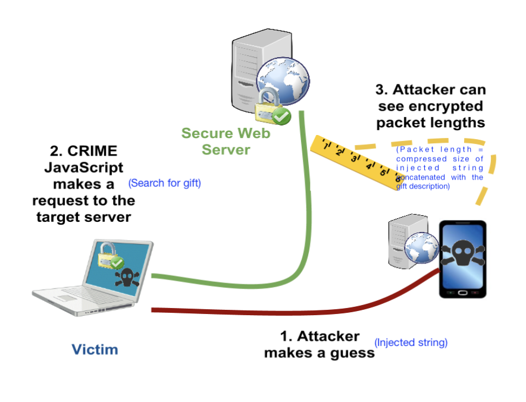
Note:
- To learn more about small data compression using seed inputs and how it is used in practice, you can have a look at Yann Collet's IT-forum talk (Part 1, Part 2).
- zstd uses the term "dictionary" to refer to what we called seed inputs above.
- To read more about LZ77 side-channel attacks mentioned in part 6, you can refer to the slides here or Fall 2023 course project report here.
Q2: Burrows Wheeler Transform and compression (50 points)
DISCLAIMER: This problem looks longer but is actually simpler :P
You might be familiar with Fourier transforms, DCT transform, wavelet transform, etc. for images and audio signals. These transforms are widely used as they are invertible and make the data easier to analyse, compress, etc.
In this problem, we will learn about a few lossless transforms for textual data, which have been used for various applications, including data compression.
I. The BWT algorithm:
In 1994, David Wheeler and Michael Burrows discovered (co-incidentally at the DEC Research Labs in Palo Alto!) an invertible transform for textual data, which supposedly made the data easier to compress. In this question, we will learn more about the BWT algorithm and its properties.
The BWT forward transform works the following way:
-
STEP-I
Let's say you are given a sequence
BANANA. The first thing you do is add a delimiter~to the end. Thus, our new sequence is now:BANANA~. Note that the delimiter is a unique character we are sure never occurs in the input sequence, and is useful to mark the ending of our sequence -
STEP-II
In the next step, we form all cyclic rotations of the word
BANANA~. As the sequence length isn=7, we will have7such rotations.Input string: BANANA # all cyclic rotations BANANA~ ~BANANA A~BANAN NA~BANA ANA~BAN NANA~BA ANANA~B -
STEP-III
Sort these strings lexico-graphically. This results in
npermutations of a string of lengthnresulting in an X n2D table — called a Burrows Wheeler's Matrix (BWM). The7 X 7BWM for our example is shown below:# sorted strings ANANA~B ANA~BAN A~BANAN BANANA~ NANA~BA NA~BANA ~BANANA -
STEP-IV
Now consider the string formed by last letters of the sorted strings. This new string is the BWT transform of the input!
BANANA -> BNN~AAA
-
[5 points] Here are some other examples of BWT:
BANANA -> BNN~AAA abracadabraabracadabraabracadabra -> rrdd~aadrrrcccraaaaaaaaaaaabbbbbba hakunamatata -> hnmtt~aauaakaNotice that the BWT forward transform of
x_input = BANANA -> BNN~AAAhas the letters ofBANANA~permuted, i.e.BWT(x_input)is just reordering the letters in the input in a particular way. Justify in a few lines whyBWT(x_input)is a permutation of the stringx_input~(x_input~->x_inputconcatenated with the delimiter~). -
[5 points] Manually compute and show the BWT transform for
PANAMA, using the method above. Show your work to get credit (that is you can't just write the final transform but show the steps described above). -
[10 points] Implement the BWT (forward) transform in the
hw3_p2.pyfile,BurrowsWheelerTransform::forwardfunction. Remember to add a delimiter in the input string (you can use~as delimiter as~has the highest ascii value). You may use thetest_bwt_transform()(by commenting out the inverse bwt part) to test your implementation. What is the time complexity of your BWT forward transform implementation for an input of lengthn?
II. The Inverse BWT Algorithm
The surprising part is that BWT is actually a fully invertible transform, i.e. we can fully retrieve back the original input from the BWT transform e.g. we can recover input string BANANA~ from the BWT transform BNN~AAA. The inverse transform works by retrieving the Burrows Wheeler Matrix (BWM) one column at a time. The inverse BWT proceeds in the following way:
-
In the beginning we only have the BWT transform which is the last column of the BWM. We show the BWT transform and the BWM below.
# STEP-0 ------B ------N ------N ------~ ------A ------A ------A -
Notice that each column is a permutation of
BANANA~. As the rows of BWM are lexicographically sorted, we can retrieve the first column on BWM by sorting the last column.# STEP-1 A-----B A-----N A-----N B-----~ N-----A N-----A ~-----A -
Due to the cyclic rotations which we used to form the BWM, we can now copy over the last column to the beginning, and we have the first two letters for each row of BWM (although in the incorrect order). We can sort these rows to get the first two columns of the BWM.
# STEP-2 A-----B -> BA----- AN----- A-----N -> NA----- AN----- A-----N -> NA----- A~----- B-----~ -> ~B----- ===> SORT ===> BA----- N-----A -> AN----- NA----- N-----A -> AN----- NA----- ~-----A -> A~----- ~B----- -
We can now repeat the procedure, since we know the last column is the BWT transformed string:
# STEP 1,2 (repeated) AN----B -> BAN---- ANA---- AN----N -> NAN---- ANA---- A~----N -> NA~---- A~B---- BA----~ -> ~BA---- ===> SORT ===> BAN---- NA----A -> ANA---- NAN---- NA----A -> ANA---- NA~---- ~B----A -> A~B---- ~BA---- -
Continuing, this way, we can retrieve the full BWM, and then just pick the row which ends with
~# BWM ANANA~B ANA~BAN A~BANAN BANANA~ ===> BANANA~ ---> :D NANA~BA NA~BANA ~BANANA
-
[5 points] Manually compute the inverse of
TGCA~AA. Show your work to get credit (that is you can't just write the final inverse transform but show the steps described above). -
[10 points] Implement the BWT inverse transform in
hw3_p2.pyin theBurrowsWheelerTransform::inversefunction. Please add (some) inline comments describing your algorithm. What is the time, memory complexity of your BWT inverse transform implementation for an input of lengthn? -
[5 points] Notice that the BWT forward transform of typical english language words/sentences have lots of consecutive repeated letters. For example:
# BWT forward transforms of some english words BANANA -> BNN~AAA abracadabraabracadabraabracadabra -> rrdd~aadrrrcccraaaaaaaaaaaabbbbbba hakunamatata -> hnmtt~aauaaka # first 300 letters of sherlock novel The Project Gutenberg eBook of The Hound of the Baskervilles, by Arthur Conan DoyleThis eBook is for the use of anyone anywhere in the United States andmost other parts of the world at no cost and with almost no restrictionswhatsoever. You may copy it, give it away or re-use it under the termsof the --> yernteedfe.htsfedt,yosgs,ekeeyuttkedsytrroefnrrfftedester ee ~e n pB th mwn eielnnnnhhhhnrvsshhhr ljtthdvhbtktlrohooooo r twtTTtttttwtTtrv th nwgooosrylia ldraioeuauaoU oaanns srooCyiBBc fwcmm YHD oueoeoee etoePAaeeiiteuuatmoooencsiassiiSiu ai o rcsraoo h- Gierasy bapaonneSo in a way BWT forward transform is approximately sorting the input strings. Can you think of why BWT has this property?
HINT: In the BWM, the last column forms the BWT while the first $n-1$ columns form suffixes of the last column. For example, if the last entry in a particular row is $x_j$ ($j$ th value in original string), then the first $n-1$ entries in that row would be the cyclic suffix: $x_{j+1}\dots x_{n} x_1 \dots x_{j-1}$ Given the rows are sorted lexicographically, what can you say about the suffixes of nearby entries in the BWT?
III. Using BWT for compression
As we saw in previous part, BWT tends to club letters of the input string together. We will use this property to see if we can improve compression. To do this, we also implement another invertible transform called the Move to Front (MTF) transform. The Move To Front transform keeps a table of the symbols in the data, and moves the most recent symbol to the top of the table. The transform output is the index of the symbols in this changing table and thus the symbols that are more frequent in a local context get a lower index. The MTF forward and inverse transforms are already implemented and included in hw3_p2.py and are described quite well in the wikipedia article here: https://en.wikipedia.org/wiki/Move-to-front_transform.
Here are some sample outputs on applying MTF transform:
Input str: aaabbbaaacccaaa
MTF: [97, 0, 0, 98, 0, 0, 1, 0, 0, 99, 0, 0, 1, 0, 0]
Input str: rrdd~aadrrrcccraaaaaaaaaaaabbbbbba
MTF: [114, 0, 101, 0, 126, 100, 0, 2, 3, 0, 0, 102, 0, 0, 1, 3, 0, 0, 0, 0, 0, 0, 0, 0, 0, 0, 0, 102, 0, 0, 0, 0, 0, 1]
We use the BWT, MTF transforms to transform the first 50,000 characters (let's call this the input_data) of our sherlock novel and analyze the entropy of the empirical distribution of the transformed string. (this output can be obtained by running the test test_bwt_mtf_entropy if you are curious!). The output obtained is as below:
Input data: 0-order Empirical Entropy: 4.1322
Input data + BWT: 0-order Empirical Entropy: 4.1325
Input data + MTF: 0-order Empirical Entropy: 4.6885
Input data + BWT + MTF: 0-order Empirical Entropy: 2.8649
-
[10 points] Let's try to understand the compression results above a bit better:
- Given a good implementation of an Arithmetic coder, what is approximate average codelength per symbol you might expect on compressing the
input_datausing its empirical 0-order distribution (i.e. just the symbol counts)? - Notice that the empirical entropy of
input_datais almost the same as that ofbwt_data = BWT(input_data). In fact the empirical entropy ofbwt_datais slightly higher than that ofinput_data(4.1325 vs 4.1322). Justify why is this the case. - Notice that empirical entropy of
mtf_bwt_data = MTF(BWT(input_data))is much lower than that of theinput_data(2.8649vs4.1322). Can you think of why this is the case? - Based on the numbers you have, describe a compression scheme which achieves average codelength of approximately
~2.87 bits/symbolon theinput_data. You don't need to implement this compressor, but ensure you clearly describe the steps involved in encoding and decoding. You are free to use any compressors you have learnt in the class.
Feel free to experiment with the test functions, to print transformed data or to build better intuition with custom examples. Please include any relevant outputs in your submission which you found useful to answer these questions.
- Given a good implementation of an Arithmetic coder, what is approximate average codelength per symbol you might expect on compressing the
NOTE: compressors such as bzip2, and bsc in fact use BWT and MTF transforms along with a few other tricks to obtain great compression. BWT algorithms have also found another surprising use: they allow efficient searching over compressed text! Here are more references in case you are interested:
- bzip2, bsc
- wikipedia article: https://en.wikipedia.org/wiki/Burrows%E2%80%93Wheeler_transform
- BWT for searching over compressed text: slides
Q3: Compression with side information (20 points)
Let's consider a simple puzzle:
- Let $X$ be a 3 bit random variable where each bit is i.i.d $Ber(0.5)$, i.e. $X$ is uniformly distributed in ${000,001,010,011,100,101,110,111}$ with probability $1/8$,
- and $Y= X \oplus e$, where $e \in {000,001,010,100}$ and is independent of $X$. The distribution of $e$ is unknown, i.e. $Y$ can be different from $X$ in at most one bit position. Recall that $\oplus$ is the bitwise-XOR operation.
-
[5 points] Show that $H(X) = 3, H(X|Y) \leq 2$.
HINT: Consider $H(X,e|Y)$ and write it in two different ways
-
[5 points] Kakashi wants to losslessly encode $X$ and send the encoded coderword to Sasuke. What is the optimal compression scheme for Kakashi?
-
[5 points] Now let's say both Kakashi and Sasuke have access to $Y$, i.e. $Y$ is the side-information available to both Kakashi and Sasuke (through side-information ninjutsu :P). In that case, show that Kakashi can do better than in
Q3.2, by using2 bitsto transmit $X$. -
[5 points] Unfortunately Kakashi lost access to $Y$, and only knows $X$ but Sasuke still has access to the side information $Y$. Show that in this case Kakashi can still losslessly encode $X$ and send it to Sasuke using
2 bits, i.e. surprisingly we just need the side-information at the decoder, and not necessarily at the encoder.
NOTE: It is quite fascinating that we need side-information only at the decoder. This property can be generalized to more general scenarios, and is the foundation for distributed data compression. E.g. see Slepian-Wolf coding and Wyner-Ziv coding for more details.
Q4: kth order adaptive arithmetic coding (40 points)
Shubham wants to test the compression performance of the k-th order context models using Arithmetic Coding he has implemented. However, one problem is that for unknown sources it is very difficult to compute the fundamental limit on the average codelength. So, he decides to test his algorithms on a synthetic dataset.
He generates data using a noisy version of Linear Feedback Shift Register based Pseudorandom generator. The name sounds quite complicated, but it is a simple concept (you don't need to know anything about it to attempt this problem). The pseudocode to generate noisy-LFSR sequence is given below (also given in HW code hw3_p4.py):
def pseudo_random_LFSR_generator(data_size, tap, noise_prob=0):
# initial sequence = [1,0,0,0,...] of length tap
initial_sequence = [1] + [0] * (tap - 1)
# output sequence
output_sequence = list(initial_sequence)
for _ in range(data_size - tap):
s = output_sequence[-1] ^ output_sequence[-tap] # xor
if noise_prob > 0:
s = s ^ Bernoulli(p=noise_prob) # add noise
output_sequence.append(s)
return output_sequence
Our pseudo_random_LFSR_generator generates an output sequence of length data_size. At each step, it calculates the next bit using XOR (a ^ b is True/1 if exactly one of a and b is True/1) between the last bit in the sequence and the bit located tap positions before it (this simulates LFSR behavior). Optionally, if noise_prob is greater than 0, it adds noise to the calculated bit by XOR-ing it with a random binary value generated with a given probability (noise_prob). The calculated (possibly noisy) bit is appended to the sequence in each iteration. To initialize the sequence, we always start it with [1,0,0,0,...] so that we have tap number of bits available to calculate the next bit.
For concreteness let's take a specific parameter setting (function in hw3_p4.py):
pseudo_random_LFSR_generator(data_size=10000, tap=3, noise_prob=0)
We see that the first 12 symbols of the sequence looks like:
1, 0, 0, 1, 1, 1, 0, 1, 0, 0, 1, 1, ...
Notice that the sequence looks random-ish but starts repeating after 8 symbols. In fact if we look at the first 7 3-mers (substrings of length 3), i.e. 100, 001, ..., 010, then we see that they are all unique and do not repeat! The LFSR sequence with noise_prob=0, is in fact a simple pseudo-random generator used in the past. We will use this source to further our understanding of context based compression.
Let's start by defining the $k^{\text{th}}$ order empirical entropy of the sequence. Recall, if your sequence is $x_0, x_1, x_2, \ldots, x_n$, the $k^{\text{th}}$-order empirical entropy of the sequence can be computed by making a joint and conditional probability distribution table using counts of the previously seen symbols (we saw this in class in L9 on context based AC lecture). Specifically, assuming the alphabet is $\mathcal{X}$, for any $(x_0, x_1, x_2, \ldots x_k) \in \mathcal{X}^{k+1}$, we can define the empirical joint probability as:
$$
p(x_0, x_1, x_2, \ldots x_k) = \frac{\text{count}(x_0, x_1, x_2, \ldots x_k)}{\text{total count of k+1-tuples}}
$$
the empirical conditional probability as: $$ p(x_k | x_0, x_1, x_2, \ldots x_{k-1}) = \frac{p(x_0, x_1, x_2, \ldots x_k)}{p(x_0, x_1, x_2, \ldots x_{k-1})} = \frac{p(x_0, x_1, x_2, \ldots x_k)}{\sum_{x' \in \mathcal{X}} p(x_0, x_1, x_2, \ldots x_{k-1}, x')} $$
and the $k^{\text{th}}$-order empirical entropy is then given by summing over all possible $(k+1)$-tuples:
$$H_k(X) = \sum_{(x_0, x_1, x_2, \ldots, x_k) \in \mathcal{X}^{k+1}} p(x_0, x_1, x_2, \ldots, x_{k}) \log {\frac{1} {p(x_k | x_0, x_1, x_2, \ldots, x_{k-1})}}$$
-
[5 points] Show that for infinite data ($n \rightarrow \infty$) and $k_1 > k_2$, $$H_{k_1}(X) \leq H_{k_2}(X)$$ i.e. $k_1^{\text{th}}$-order empirical entropy is always less than (or equal to) $k_2^{\text{th}}$-order empirical entropy.
You can assume the data distribution is stationary and ergodic (or in simple words you can assume the empirical probabilities converge to the stationary distribution).
-
[10 points] Next let's calculate $H_k(X)$ for the above given sequence with
tap=3,noise_prob=0. (Recall the sequence from above:1, 0, 0, 1, 1, 1, 0, 1, 0, 0, 1, 1, ...)- Compute the $0^{\text{th}}$ order count-distribution and empirical entropy of the sequence. HINT: sequence repeats itself!
- Compute the $1^{\text{st}}$ order count-distribution and empirical entropy of the sequence.
- Finally, argue that for $k \geq 3$, the $k^{\text{th}}$-order empirical entropy of the sequence is
0.
-
[5 points] Now, Shubham decides to use Adaptive Arithmetic coding to compress data from this source. For the case with no added noise (
noise_prob=0), the number of bits/symbol we achieve is as follows for different context sizek. You can use the test code inhw3_p4.pyto generate these numbers by changing and choosing appropriate parameters. Use the-sflag in pytest to dump the output even for successful tests.---------- Data generated as: X[n] = X[n-1] ⊕ X[n-3] data_size=10000 AdaptiveArithmeticCoding, k=0, avg_codelen: 0.989 AdaptiveArithmeticCoding, k=1, avg_codelen: 0.969 AdaptiveArithmeticCoding, k=2, avg_codelen: 0.863 AdaptiveArithmeticCoding, k=3, avg_codelen: 0.012 AdaptiveArithmeticCoding, k=4, avg_codelen: 0.011 AdaptiveArithmeticCoding, k=7, avg_codelen: 0.011 AdaptiveArithmeticCoding, k=15, avg_codelen: 0.012 AdaptiveArithmeticCoding, k=22, avg_codelen: 0.013Argue why these results make sense. In particular, argue that Adaptive Arithmetic coding with order
k=0,1,2cannot do much better than1 bit/symbol. Also, argue that fork >= 3, the compression should be~0 bits/symbol.
Next, Shubham decides to encode noisy-LFSR sources with noise_prob=0.01 and TAP=3,7,15. The noisy LFSR is very similar to the non-noisy version, except we add a bit of noise after xoring the two past symbols as shown in the pseduo-code above.
-
[5 points] For
TAP=3, noise_prob=0.01, what is the fundamental limit to which you can compress this sequence, i.e. what is $k^{\text{th}}$-order empirical entropy of the sequence for $k \geq 3$ and large $n$? -
[5 points] Next, we encode noisy-LFSR sequence with parameters
noise_prob=0.01andTAP=3,7,15using Adaptive Arithmetic coding. The number of bits/symbol we achieve is as follows for different context sizek. You can again use the test code inhw3_p4.pyto generate these numbers by changing and choosing appropriate parameters. In these cases we observe the following average codelength, for a sequence of length10000---------- Data generated as: X[n] = X[n-1] ⊕ X[n-3] ⊕ Bern_noise(0.01) DATA_SIZE=10000 AdaptiveArithmeticCoding, k=0, avg_codelen: 1.003 AdaptiveArithmeticCoding, k=1, avg_codelen: 1.002 AdaptiveArithmeticCoding, k=2, avg_codelen: 0.999 AdaptiveArithmeticCoding, k=3, avg_codelen: 0.087 AdaptiveArithmeticCoding, k=4, avg_codelen: 0.089 AdaptiveArithmeticCoding, k=7, avg_codelen: 0.097 AdaptiveArithmeticCoding, k=15, avg_codelen: 0.121 AdaptiveArithmeticCoding, k=22, avg_codelen: 0.146 AdaptiveArithmeticCoding, k=24, avg_codelen: 0.152 ---------- Data generated as: X[n] = X[n-1] ⊕ X[n-7] ⊕ Bern_noise(0.01) DATA_SIZE=10000 AdaptiveArithmeticCoding, k=0, avg_codelen: 1.004 AdaptiveArithmeticCoding, k=1, avg_codelen: 1.004 AdaptiveArithmeticCoding, k=2, avg_codelen: 1.005 AdaptiveArithmeticCoding, k=3, avg_codelen: 1.007 AdaptiveArithmeticCoding, k=4, avg_codelen: 1.009 AdaptiveArithmeticCoding, k=7, avg_codelen: 0.139 AdaptiveArithmeticCoding, k=15, avg_codelen: 0.192 AdaptiveArithmeticCoding, k=22, avg_codelen: 0.240 AdaptiveArithmeticCoding, k=24, avg_codelen: 0.254 ---------- Data generated as: X[n] = X[n-1] ⊕ X[n-15] ⊕ Bern_noise(0.01) DATA_SIZE=10000 AdaptiveArithmeticCoding, k=0, avg_codelen: 1.004 AdaptiveArithmeticCoding, k=1, avg_codelen: 1.004 AdaptiveArithmeticCoding, k=2, avg_codelen: 1.005 AdaptiveArithmeticCoding, k=3, avg_codelen: 1.006 AdaptiveArithmeticCoding, k=4, avg_codelen: 1.008 AdaptiveArithmeticCoding, k=7, avg_codelen: 1.031 AdaptiveArithmeticCoding, k=15, avg_codelen: 0.949 AdaptiveArithmeticCoding, k=22, avg_codelen: 0.955 AdaptiveArithmeticCoding, k=24, avg_codelen: 0.957Notice that the average codelength for
TAP=3,7is at its minima fork=TAPvalue and then increases as we further increasekwhich seems to suggest the result we saw inQ4.1is wrong. Argue:- Why do these results still make sense and do not contradict theory?
- For
TAP=15, even for context sizek=15, why is the model not able to compress the data very well?
-
[10 points] Instead of using Adaptive Arithmetic coding, Jiwon suggested that if we know the source parameters (i.e.
TAPandnoise_prob), then we could predict a better probability distribution of the next symbol based on the past, and use this for performing Arithmetic coding. Jiwon thinks this implementation should work for arbitrary values ofTAPand input sequence lengths. Complete Jiwon'supdate_modellogic inNoisyLFSRFreqModelprovided inhw3_p4.py. For the firstTAPsymbols you can use arbitrary predictions (e.g., uniform distribution) without affecting the results for large sequences.Once you have implemented the model, run the tests (
py.test -s hw3_p4.py) forTAP=3,7,15andnoise_prob=0.01again and report the average codelength obtained for the LFSR model. How do these results compare with the Adaptive Arithmetic coding results (from part 5) and to the expected theoretical limit (from part 4)? Explain why this is the case.
NOTE: References provided with Lecture 9 on Context-based Arithmetic Coding will be useful in attempting this problem (SCL implementation of adaptive arithmetic coding, notes, slides, etc.)
Q5: HW3 Feedback (5 points)
Please answer the following questions, so that we can adjust the difficulty/nature of the problems for the next HWs.
- How much time did you spent on the HW in total?
- Which question(s) did you enjoy the most?
- Are the programming components in the HWs helping you understand the concepts better?
- Did the HW3 questions complement the lectures?
- Any other comments?
Submission Instructions
Please submit both the written part and your code on Gradescope in their respective submission links. We will be using both autograder and manual code evaluation for evaluating the coding parts of the assignments. You can see the scores of the autograded part of the submissions immediately. For code submission ensure following steps are followed for autograder to work correctly:
-
As with HW1, you only need to submit the modified files as mentioned in the problem statement.
- Compress the
HW3folder into a zip file. One way to obtain this zip file is by running the following zip command in theHWsfolder, i.e.
Note: To avoid autograder errors, ensure that the directory structure is maintained and that you have compressedcd HWs zip -r HW3.zip HW3HW3folder containing the relevant files and notHWsfolder, or files inside or something else. Ensure the name of the files inside the folder are exactly as provided in the starter code, i.e.hw3_p1.py,hw3_p2.pyetc. In summary, your zip file should be uncompressed to following directory structure (with same names):HW3 ├── p1_data └──pokemon_data_seed_input.txt ├── hw3_p1.py ├── hw3_p2.py └── hw3_p4.py └── sherlock_ascii.txt
- Compress the
-
Submit the zip file (
HW3.zipobtained above) on Gradescope Programming Part Submission Link. Ensure that the autograded parts runs and give you correct scores.
Before submitting the programming part on Gradescope, we strongly recommend ensuring that the code runs correctly locally.
EE274 (Fall 25): Homework-3
- Focus area: Context-based compression and LZ77
- Due Date: Nov 11, midnight (11:59 PM)
- Weightage: 15%
- Total Points: 150
Q1 LZ77 compression for small data (35 points)
In this problem, we will understand how LZ77 compression performs on small files and how to improve its performance. Recall that the LZ77 algorithm looks for matches in a window storing the previously seen data and then encodes the match lengths, match offsets and unmatched characters (literals). We use the LZ77 implementation provided in SCL for the experiments below, and you can take a look at the code here to understand the details better. We have provided a set of small json files in the p1_data/github_data directory. Run the script python hw3_p1.py -i p1_data/github_data in scl/HWs/HW3 folder, which produces the following output:
Compressing without using a seed input
Number of files: 134
Total uncompressed size (in bits): 956272
Normalized uncompressed size (in avg. bits/file): 7136
Total size after compressing the files individually (in bits): 363774
Total size after compressing the files jointly (in bits): 71795
Ignore the first line for a moment. We see that we have 134 relatively small files with average size of 7136 bits. If we compress the files individually and then sum the sizes, we get a total of 363774 bits, whereas if we concatenate the files and then compress them as a single block ("jointly") the compressed size is just 71795 bits!
-
[4 points] Give two reasons why concatenating the files together provides a reduction in file size.
HINT: One of the reasons is applicable even if the files were from completely distinct sources and had no similarity whatsoever.
Solution
- The first reason is that the LZ77 algorithm works best if it can find longer matches within the past symbols in a file. If we concatenate the files, then the LZ77 algorithm will be able to find longer matches within the concatenated file compared to the original small file.
- The second reason is that now we have increased the block size for LZ77, and thus the LZ77 algorithm will be able to converge closer to the entropy (see Slide 29 in LZ77 slides). Another related reason is that compressed files have a bunch of overhead due to headers, etc. which gets amortized for larger files.
Ideally one would just combine these small files into bigger batches for the best compression. However, we sometimes need to store, transmit or compress small files. For example, we need to transmit short JSON messages/network packets between servers where latency is important, and we can't batch requests. Another common use case is when databases use small data pages for fast random access. Small files also show up when we are working with resource constrained devices that cannot hold large files.
To improve the compression on small files, we consider a slight modification of the LZ77 algorithm we studied in class. Both the compressor and the decompressor now take an additional seed input, which is just a sequence of bytes. The idea is simple: instead of starting the LZ77 compressor with an empty window, we instead initialize the window with a seed input (and appropriately update the other indexing data structures). The same seed input should be used during compression and decompression to enable recovery.
The overall system architecture needs to maintain these seed inputs (which might be specific to particular data categories), and make sure the encoders and decoders can access these. The seed inputs are usually constrained to be small to avoid extra overhead.
We provide a sample seed input for the above dataset in p1_data/github_data_seed_input.txt. Run python hw3_p1.py -i p1_data/github_data -s p1_data/github_data_seed_input.txt to obtain the following:
Loading seed input from p1_data/github_data_seed_input.txt
Number of files: 134
Total uncompressed size (in bits): 956272
Normalized uncompressed size (in avg. bits/file): 7136
Total size after compressing the files individually (in bits): 224738
Total size after compressing the files jointly (in bits): 70678
-
[6 points] We see a significant reduction in the total size for compressing the files individually (
363774bits to224738bits). Based on your understanding of the LZ77 algorithm and your answer toQ1.1, explain why this is the case. You might find it useful to look both at the json files inp1_data/github_data/and the seed input inp1_data/github_data_seed_input.txt.Solution
Seed file consists of data which is similar to the input files. Thus, LZ77 algorithm is able to find more matches in the seed file while compressing the individual files resulting in better compression of the individual files better.
-
[2 points] Why is the impact of using the seed input negligible when we compress the files jointly?
Solution Since the concatenated file already consists of the data present in individual files, adding a seed file with similar data as the individual files does not help in finding significantly more matches. Therefore, we get negligible benefit on using the seed file when we compress the files jointly. We might get some benefit for the initial part of the concatenated file, but for most later parts the benefit is minimal.
-
[3 points] The provided seed input file is less than 1 KB in size. If you were allowed to choose an arbitrarily large seed input, how might you design it to minimize the compressed size for this specific dataset.
HINT: Think about the best case scenario for LZ77 parsing - longest possible matches and no literals.
Solution
Concatenating all files and using them as a seed file can be a good choice. This will result in the LZ77 algorithm finding the longest possible matches and no literals. Thus, we will get the best possible compression.
-
[10 points] Now you will create a seed input for another dataset provided in the
p1_data/pokemon_datadirectory. We will evaluate your submissions on a test dataset which has similar files as thep1_data/pokemon_datadirectory. Your submission should satisfy the following:- name the seed input file as
p1_data/pokemon_data_seed_input.txt - the seed input file should be less than 1 KB (1000 B) large. You can check the file size in bytes by running
wc -c p1_data/pokemon_data_seed_input.txt. - the total size for compressing the files individually should reduce to at least 2x when using the seed input (vs. when not using a seed input) for both the
pokemon_dataset and the autograder submission. For example, if theTotal size after compressing the files individuallyis308031 bitswithout seed input, then with your seed input it should be at most154015 bits. - A couple hints to help you achieve best results: (i) try to use similar JSON format and formatting in your seed input file as in the pokemon data files - this includes using the same 2-space indendation, and (ii) (for Windows users) make sure your seed input uses LF (
\n) line-endings and not CRLF (\r\n) - verify your editor is not changing this automatically.
Solution
The seed file we used can be found at
p1_data/pokemon_data_seed_input.txt. The total size for compressing the files individually reduces by $\sim2\times$ when using the seed input for both thepokemon_dataset and the autograder submission. - name the seed input file as
-
[10 points] Christmas is approaching and Jim knows that Della is going to buy a thoughtful gift for him. Unable to control his curiosity and being a part-time hacker, he has decided to spy on Della’s internet search patterns by executing a side-channel attack. As shown in the diagram below, he is able to inject strings into Della’s http requests, and once Della makes a search request he can monitor the LZ77 compressed size of the response. Here the response includes his injected string along with the gift description, allowing him to infer some side-channel information about the search. Don't take the story too seriously from a internet security standpoint! But do take a look at the references provided in the note below to learn more about real instances of such attacks.
Use the provided webpage to help Jim select injected strings and based on that make a guess about the chosen gift. Include a screenshot of the injected strings you used and the “🎉 Correct!†message.
Solution The idea is to use injected strings that are substrings (e.g., a sentence) of the gift descriptions. By monitoring the compressed sizes for different injected strings, we can infer which gift description is most likely.
Note:
- To learn more about small data compression using seed inputs and how it is used in practice, you can have a look at Yann Collet's IT-forum talk (Part 1, Part 2).
- zstd uses the term "dictionary" to refer to what we called seed inputs above.
- To read more about LZ77 side-channel attacks mentioned in part 6, you can refer to the slides here or Fall 2023 course project report here.
Q2: Burrows Wheeler Transform and compression (50 points)
DISCLAIMER: This problem looks longer but is actually simpler :P
You might be familiar with Fourier transforms, DCT transform, wavelet transform, etc. for images and audio signals. These transforms are widely used as they are invertible and make the data easier to analyse, compress, etc.
In this problem, we will learn about a few lossless transforms for textual data, which have been used for various applications, including data compression.
I. The BWT algorithm:
In 1994, David Wheeler and Michael Burrows discovered (co-incidentally at the DEC Research Labs in Palo Alto!) an invertible transform for textual data, which supposedly made the data easier to compress. In this question, we will learn more about the BWT algorithm and its properties.
The BWT forward transform works the following way:
-
STEP-I
Let's say you are given a sequence
BANANA. The first thing you do is add a delimiter~to the end. Thus, our new sequence is now:BANANA~. Note that the delimiter is a unique character we are sure never occurs in the input sequence, and is useful to mark the ending of our sequence -
STEP-II
In the next step, we form all cyclic rotations of the word
BANANA~. As the sequence length isn=7, we will have7such rotations.Input string: BANANA # all cyclic rotations BANANA~ ~BANANA A~BANAN NA~BANA ANA~BAN NANA~BA ANANA~B -
STEP-III
Sort these strings lexico-graphically. This results in
npermutations of a string of lengthnresulting in an X n2D table — called a Burrows Wheeler's Matrix (BWM). The7 X 7BWM for our example is shown below:# sorted strings ANANA~B ANA~BAN A~BANAN BANANA~ NANA~BA NA~BANA ~BANANA -
STEP-IV
Now consider the string formed by last letters of the sorted strings. This new string is the BWT transform of the input!
BANANA -> BNN~AAA
-
[5 points] Here are some other examples of BWT:
BANANA -> BNN~AAA abracadabraabracadabraabracadabra -> rrdd~aadrrrcccraaaaaaaaaaaabbbbbba hakunamatata -> hnmtt~aauaakaNotice that the BWT forward transform of
x_input = BANANA -> BNN~AAAhas the letters ofBANANA~permuted, i.e.BWT(x_input)is just reordering the letters in the input in a particular way. Justify in a few lines whyBWT(x_input)is a permutation of the stringx_input~(x_input~->x_inputconcatenated with the delimiter~).Solution Since we are taking circular rotations of the string, each character of the string
x_input~will be present in the last column of list of strings (output of Step-II). Sorting this list of strings only changes the order of the last characters (output of Step-I). Thus,BWT(x_input)is a permutation of the stringx_input~. -
[5 points] Manually compute and show the BWT transform for
PANAMA, using the method above. Show your work to get credit (that is you can't just write the final transform but show the steps described above).Solution:
- Step-II: calculate cyclic rotations of
PANAMA~
Input string: PANAMA~ # all cyclic rotations PANAMA~ ~PANAMA A~PANAM MA~PANA AMA~PAN NAMA~PA ANAMA~P- STEP-III: Sort these strings lexico-graphically.
# sorted strings AMA~PAN ANAMA~P A~PANAM MA~PANA NAMA~PA PANAMA~ ~PANAMA- Step-IV: BWT forward transform is last letters of the sorted strings.
Therefore, BWT forward transform of
PANAMAisNPMAA~A - Step-II: calculate cyclic rotations of
-
[10 points] Implement the BWT (forward) transform in the
hw3_p2.pyfile,BurrowsWheelerTransform::forwardfunction. Remember to add a delimiter in the input string (you can use~as delimiter as~has the highest ascii value). You may use thetest_bwt_transform()(by commenting out the inverse bwt part) to test your implementation. What is the time complexity of your BWT forward transform implementation for an input of lengthn?Solution
def forward(self, data_block: DataBlock): """ Generates the forward transform of BWT NOTE: for consistency all forward and inverse functions take in as input a DataBlock """ # create a string using data_block input_block_str = "".join(data_block.data_list) ############################################### # ADD DETAILS HERE # to generate bwt_str (BWT transformed string) # Note: remember to add the delimiter to the string! ############################################### bwt_str = "" # STEP-1: add a delimiter input_block_str += self.delimiter # STEP-2: get all cyclic rotations, and sort N = len(input_block_str) cyclic_rotations = [] cur_str = input_block_str for _ in range(N): cur_str = cur_str[-1] + cur_str[:-1] cyclic_rotations.append(cur_str) cyclic_rotations.sort() # STEP-3: pick the last column and make a single string bwt_str = "".join([rot_str[-1] for rot_str in cyclic_rotations]) ############################################### data_bwt_block = DataBlock(list(bwt_str)) return data_bwt_blockThe forward transform involves creating a $n$-length list of $O(n)$ length strings, followed by sorting the $O(n)$ length strings. Assuming sorting is $O(n\log n)$ comparisons and each comparison is $O(n)$ (since we are working with $n$-length strings), the overall complexity will be $O(n^2\log n)$.
II. The Inverse BWT Algorithm
The surprising part is that BWT is actually a fully invertible transform, i.e. we can fully retrieve back the original input from the BWT transform e.g. we can recover input string BANANA~ from the BWT transform BNN~AAA. The inverse transform works by retrieving the Burrows Wheeler Matrix (BWM) one column at a time. The inverse BWT proceeds in the following way:
-
In the beginning we only have the BWT transform which is the last column of the BWM. We show the BWT transform and the BWM below.
# STEP-0 ------B ------N ------N ------~ ------A ------A ------A -
Notice that each column is a permutation of
BANANA~. As the rows of BWM are lexicographically sorted, we can retrieve the first column on BWM by sorting the last column.# STEP-1 A-----B A-----N A-----N B-----~ N-----A N-----A ~-----A -
Due to the cyclic rotations which we used to form the BWM, we can now copy over the last column to the beginning, and we have the first two letters for each row of BWM (although in the incorrect order). We can sort these rows to get the first two columns of the BWM.
# STEP-2 A-----B -> BA----- AN----- A-----N -> NA----- AN----- A-----N -> NA----- A~----- B-----~ -> ~B----- ===> SORT ===> BA----- N-----A -> AN----- NA----- N-----A -> AN----- NA----- ~-----A -> A~----- ~B----- -
We can now repeat the procedure, since we know the last column is the BWT transformed string:
# STEP 1,2 (repeated) AN----B -> BAN---- ANA---- AN----N -> NAN---- ANA---- A~----N -> NA~---- A~B---- BA----~ -> ~BA---- ===> SORT ===> BAN---- NA----A -> ANA---- NAN---- NA----A -> ANA---- NA~---- ~B----A -> A~B---- ~BA---- -
Continuing, this way, we can retrieve the full BWM, and then just pick the row which ends with
~# BWM ANANA~B ANA~BAN A~BANAN BANANA~ ===> BANANA~ ---> :D NANA~BA NA~BANA ~BANANA
-
[5 points] Manually compute the inverse of
TGCA~AA. Show your work to get credit (that is you can't just write the final inverse transform but show the steps described above).Solution
We fill in the BWM matrix as described above.
-
STEP-0:
# STEP-0 ------T ------G ------C ------A ------~ ------A ------A -
STEP-1:
A-----T A-----G A-----C C-----A G-----~ T-----A ~-----A -
STEP-2:
A-----T -> TA----- AC----- A-----G -> GA----- AT----- A-----C -> CA----- A~----- C-----A -> AC----- ===> SORT ===> CA----- G-----~ -> ~G----- GA----- T-----A -> AT----- TA----- ~-----A -> A~----- ~G----- -
Repeating steps 1-2 above we get:
# STEP 1,2 (repeated) ACA~GAT ATACA~G A~GATAC CA~GATA GATACA~ TACA~GA ~GATACA
Therefore, the inverse-BWT of
TGCA~AAisGATACA. -
-
[10 points] Implement the BWT inverse transform in
hw3_p2.pyin theBurrowsWheelerTransform::inversefunction. Please add (some) inline comments describing your algorithm. What is the time, memory complexity of your BWT inverse transform implementation for an input of lengthn?Solution
def inverse(self, bwt_block: DataBlock): """ Generates the inverse of the BWT. NOTE: for consistency all forward and inverse functions take in as input a DataBlock """ bwt_block_str = "".join(bwt_block.data_list) N = len(bwt_block_str) ############################################### # ADD DETAILS HERE # to generate output_str # Note: remember to remove the delimiter from the string! ############################################### output_str = "" # decoding loop bwm_list = ["" for i in range(N)] for _ in range(N): bwm_list = [bwt_block_str[i] + bwm_list[i] for i in range(N)] bwm_list.sort() # find the string which ends with delimiter output_str = "" for _str in bwm_list: if _str.endswith(self.delimiter): output_str = _str break # strip the delimiter and return the input output_str = output_str.strip(self.delimiter) ############################################### return DataBlock(list(output_str))The reverse transform involves $n$ sorting operations, each applied on $n$ strings of length $O(n)$. Each sort operation has complexity $O(n\times n\log n)$ because we operate with $O(n)$ length strings. Thus the overall time complexity is $O(n^3\log n)$.
The memory complexity is $O(n^2)$ because we need to store the matrix.
-
[5 points] Notice that the BWT forward transform of typical english language words/sentences have lots of consecutive repeated letters. For example:
# BWT forward transforms of some english words BANANA -> BNN~AAA abracadabraabracadabraabracadabra -> rrdd~aadrrrcccraaaaaaaaaaaabbbbbba hakunamatata -> hnmtt~aauaaka # first 300 letters of sherlock novel The Project Gutenberg eBook of The Hound of the Baskervilles, by Arthur Conan DoyleThis eBook is for the use of anyone anywhere in the United States andmost other parts of the world at no cost and with almost no restrictionswhatsoever. You may copy it, give it away or re-use it under the termsof the --> yernteedfe.htsfedt,yosgs,ekeeyuttkedsytrroefnrrfftedester ee ~e n pB th mwn eielnnnnhhhhnrvsshhhr ljtthdvhbtktlrohooooo r twtTTtttttwtTtrv th nwgooosrylia ldraioeuauaoU oaanns srooCyiBBc fwcmm YHD oueoeoee etoePAaeeiiteuuatmoooencsiassiiSiu ai o rcsraoo h- Gierasy bapaonneSo in a way BWT forward transform is approximately sorting the input strings. Can you think of why BWT has this property?
HINT: In the BWM, the last column forms the BWT while the first $n-1$ columns form suffixes of the last column. For example, if the last entry in a particular row is $x_j$ ($j$ th value in original string), then the first $n-1$ entries in that row would be the cyclic suffix: $x_{j+1}\dots x_{n} x_1 \dots x_{j-1}$ Given the rows are sorted lexicographically, what can you say about the suffixes of nearby entries in the BWT?
Solution
As the hint suggests, the first $n-1$ rows of the BWM form cyclic suffixes of the last column. Since the first $n-1$ rows are sorted, this means the last column will consist of consecutive characters which share the same suffix. Since English has lots of repeated words, this results in lots of repeated letters in the last column of the cyclic BWM and hence in the BWT forward transform. For instance, consider a large english sentence with frequent occurrence of the word
the, sayArguably one of the most popular anime is One Piece. The characters, the arc, the manga illustrations are all amazing. The BWT forward transform on this sentence results in clustering of all the suffixes of every character in this string. This results intpresent in all occurrences of wordthebeing clustered together in the last column everytime there ishein the first two columns of BWM.... ... he most popular anime...t he characters, the ar...t he arc, the manga ill...t he manga illustration...t ... ...
III. Using BWT for compression
As we saw in previous part, BWT tends to club letters of the input string together. We will use this property to see if we can improve compression. To do this, we also implement another invertible transform called the Move to Front (MTF) transform. The Move To Front transform keeps a table of the symbols in the data, and moves the most recent symbol to the top of the table. The transform output is the index of the symbols in this changing table and thus the symbols that are more frequent in a local context get a lower index. The MTF forward and inverse transforms are already implemented and included in hw3_p2.py and are described quite well in the wikipedia article here: https://en.wikipedia.org/wiki/Move-to-front_transform.
Here are some sample outputs on applying MTF transform:
Input str: aaabbbaaacccaaa
MTF: [97, 0, 0, 98, 0, 0, 1, 0, 0, 99, 0, 0, 1, 0, 0]
Input str: rrdd~aadrrrcccraaaaaaaaaaaabbbbbba
MTF: [114, 0, 101, 0, 126, 100, 0, 2, 3, 0, 0, 102, 0, 0, 1, 3, 0, 0, 0, 0, 0, 0, 0, 0, 0, 0, 0, 102, 0, 0, 0, 0, 0, 1]
We use the BWT, MTF transforms to transform the first 50,000 characters (let's call this the input_data) of our sherlock novel and analyze the entropy of the empirical distribution of the transformed string. (this output can be obtained by running the test test_bwt_mtf_entropy if you are curious!). The output obtained is as below:
Input data: 0-order Empirical Entropy: 4.1322
Input data + BWT: 0-order Empirical Entropy: 4.1325
Input data + MTF: 0-order Empirical Entropy: 4.6885
Input data + BWT + MTF: 0-order Empirical Entropy: 2.8649
-
[10 points] Let's try to understand the compression results above a bit better:
- Given a good implementation of an Arithmetic coder, what is approximate average codelength per symbol you might expect on compressing the
input_datausing its empirical 0-order distribution (i.e. just the symbol counts)? - Notice that the empirical entropy of
input_datais almost the same as that ofbwt_data = BWT(input_data). In fact the empirical entropy ofbwt_datais slightly higher than that ofinput_data(4.1325 vs 4.1322). Justify why is this the case. - Notice that empirical entropy of
mtf_bwt_data = MTF(BWT(input_data))is much lower than that of theinput_data(2.8649vs4.1322). Can you think of why this is the case? - Based on the numbers you have, describe a compression scheme which achieves average codelength of approximately
~2.87 bits/symbolon theinput_data. You don't need to implement this compressor, but ensure you clearly describe the steps involved in encoding and decoding. You are free to use any compressors you have learnt in the class.
Feel free to experiment with the test functions, to print transformed data or to build better intuition with custom examples. Please include any relevant outputs in your submission which you found useful to answer these questions.
Solution
- The average codelength will be approximately
4.1322bits per symbol as Arithmetic coder is a lossless compression algorithm which can compress to entropy. - Since BWT only permutes the characters in a string (
Q5.1), the frequency count to 0th order is still the same for the input and the BWT transformed data. In-fact, we add a character to the list of characters in input string during the BWT transform: the delimiter character~. Hence, the entropy ofinput_dataandbwt_datais such that $H(input) \lesssim H(BWT)$. - As seen in
Q2.5andQ2.6, BWT forward transform results in repeating characters which are present in frequent words or group of words because of sorting along suffixes. Since MTF symbol reduces the locally most frequent symbols to lower indices, the MTF transform on BWT transformed data results in a string with lower entropy. - We can use BWT followed by MTF and finally Arithmetic coding to achieve the desired average codelength. The steps involved in encoding and decoding are as follows:
- BWT transform the input data.
- MTF transform the BWT transformed data.
- Encode the MTF transformed data using Arithmetic coding.
- Decode the Arithmetic coded data.
- Inverse MTF transform the decoded data.
- Inverse BWT transform the MTF transformed data.
- Given a good implementation of an Arithmetic coder, what is approximate average codelength per symbol you might expect on compressing the
NOTE: compressors such as bzip2, and bsc in fact use BWT and MTF transforms along with a few other tricks to obtain great compression. BWT algorithms have also found another surprising use: they allow efficient searching over compressed text! Here are more references in case you are interested:
- bzip2, bsc
- wikipedia article: https://en.wikipedia.org/wiki/Burrows%E2%80%93Wheeler_transform
- BWT for searching over compressed text: slides
Q3: Compression with side information (20 points)
Let's consider a simple puzzle:
- Let $X$ be a 3 bit random variable where each bit is i.i.d $Ber(0.5)$, i.e. $X$ is uniformly distributed in ${000,001,010,011,100,101,110,111}$ with probability $1/8$,
- and $Y= X \oplus e$, where $e \in {000,001,010,100}$ and is independent of $X$. The distribution of $e$ is unknown, i.e. $Y$ can be different from $X$ in at most one bit position. Recall that $\oplus$ is the bitwise-XOR operation.
-
[5 points] Show that $H(X) = 3, H(X|Y) \leq 2$.
HINT: Consider $H(X,e|Y)$ and write it in two different ways
Solution $$ H(X) = -\sum_{x \in {000,001,010,011,100,101,110,111}} P(x) \log_2 P(x) = 3 $$
For computing $H(X|Y)$, let's consider $H(X,e|Y)$ in two different ways as suggested in the Hint:
$$ \begin{align} H(X,e|Y) &= H(X|Y) + H(e|X, Y) \ &= H(X|Y)\ \end{align} $$
since $e= X \oplus Y$ and thus is a function of $X$ and $Y$ implying $H(e|X, Y) = 0$ from
Q1.1. Similarly, we can write $H(X,e|Y)$ as:$$ \begin{align} H(X,e|Y) &= H(e|Y) + H(X|e, Y) \ &= H(e|Y) \ &\leq H(e) \ &= 2 \end{align} $$
where again since $X$ is a function of $e$ and $Y$, therefore $H(X|e, Y) = 0$ from
Q1.1. Inequality follows from conditioning inequality $\left(H(X|Y) \leq H(X)\right)$ and $H(e) = 2$ since $e$ is uniformly distributed in ${000,001,010,100}$ with probability $1/4$. -
[5 points] Kakashi wants to losslessly encode $X$ and send the encoded coderword to Sasuke. What is the optimal compression scheme for Kakashi?
Solution
Kakashi needs 3 bits to encode $X$ since $H(X) = 3$. Kakashi can just send $X$ as is to Sasuke as none-of-the-lossless encoder can do better than this.
-
[5 points] Now let's say both Kakashi and Sasuke have access to $Y$, i.e. $Y$ is the side-information available to both Kakashi and Sasuke (through side-information ninjutsu :P). In that case, show that Kakashi can do better than in
Q3.2, by using2 bitsto transmit $X$.Solution
Now since the entropy of $H(X|Y)\leq2$, Kakashi should be able to get away by just transmitting 2 bits instead. The hint is in the derivation of $H(X|Y)$ in
Q3.3. Since both Kakashi and Sasuke has access to both $X$ and $Y$, Kakashi can just transmit $e= X \oplus Y$, and Sasuke can recover $X$ from $e$ by $X = Y \oplus e$. We need 2 bits to encode $e$, e.g. by using the following scheme:
| e | 2-bit encoding |
|-----|----------------|
| 000 | 00 |
| 001 | 01 |
| 010 | 10 |
| 100 | 11 |
-
[5 points] Unfortunately Kakashi lost access to $Y$, and only knows $X$ but Sasuke still has access to the side information $Y$. Show that in this case Kakashi can still losslessly encode $X$ and send it to Sasuke using
2 bits, i.e. surprisingly we just need the side-information at the decoder, and not necessarily at the encoder.Solution This problem has a very elegant visualization by noticing that $e$ only has
1or0ones and thus flips at most one bit of $X$ (or hamming distance $\leq 1$). Let us represent $X$ on a unit cube where each axis represents one bit of $X$
Now notice that $e$ flips at most one bit of $X$ and thus can be represented by a line segment on the unit cube. The following figure shows the possible $Y$ values for $X=000$ (red) and $X=111$ (blue).

Note how these are distinct sets, hence if you knew $Y$ and also knew that $X$ is either $000$ or $111$, you are able to decode. Thus Kakashi can send $X$ using 2 bits by basically pairing symbols with hamming distance $> 2$. For instace one possible encoding is:
| X | 2-bit encoding |
|------------|----------------|
| 000 or 111 | 00 |
| 001 or 110 | 01 |
| 010 or 101 | 10 |
| 100 or 011 | 11 |
NOTE: It is quite fascinating that we need side-information only at the decoder. This property can be generalized to more general scenarios, and is the foundation for distributed data compression. E.g. see Slepian-Wolf coding and Wyner-Ziv coding for more details.
Q4: kth order adaptive arithmetic coding (40 points)
Shubham wants to test the compression performance of the k-th order context models using Arithmetic Coding he has implemented. However, one problem is that for unknown sources it is very difficult to compute the fundamental limit on the average codelength. So, he decides to test his algorithms on a synthetic dataset.
He generates data using a noisy version of Linear Feedback Shift Register based Pseudorandom generator. The name sounds quite complicated, but it is a simple concept (you don't need to know anything about it to attempt this problem). The pseudocode to generate noisy-LFSR sequence is given below (also given in HW code hw3_p4.py):
def pseudo_random_LFSR_generator(data_size, tap, noise_prob=0):
# initial sequence = [1,0,0,0,...] of length tap
initial_sequence = [1] + [0] * (tap - 1)
# output sequence
output_sequence = list(initial_sequence)
for _ in range(data_size - tap):
s = output_sequence[-1] ^ output_sequence[-tap] # xor
if noise_prob > 0:
s = s ^ Bernoulli(p=noise_prob) # add noise
output_sequence.append(s)
return output_sequence
Our pseudo_random_LFSR_generator generates an output sequence of length data_size. At each step, it calculates the next bit using XOR (a ^ b is True/1 if exactly one of a and b is True/1) between the last bit in the sequence and the bit located tap positions before it (this simulates LFSR behavior). Optionally, if noise_prob is greater than 0, it adds noise to the calculated bit by XOR-ing it with a random binary value generated with a given probability (noise_prob). The calculated (possibly noisy) bit is appended to the sequence in each iteration. To initialize the sequence, we always start it with [1,0,0,0,...] so that we have tap number of bits available to calculate the next bit.
For concreteness let's take a specific parameter setting (function in hw3_p4.py):
pseudo_random_LFSR_generator(data_size=10000, tap=3, noise_prob=0)
We see that the first 12 symbols of the sequence looks like:
1, 0, 0, 1, 1, 1, 0, 1, 0, 0, 1, 1, ...
Notice that the sequence looks random-ish but starts repeating after 8 symbols. In fact if we look at the first 7 3-mers (substrings of length 3), i.e. 100, 001, ..., 010, then we see that they are all unique and do not repeat! The LFSR sequence with noise_prob=0, is in fact a simple pseudo-random generator used in the past. We will use this source to further our understanding of context based compression.
Let's start by defining the $k^{\text{th}}$ order empirical entropy of the sequence. Recall, if your sequence is $x_0, x_1, x_2, \ldots, x_n$, the $k^{\text{th}}$-order empirical entropy of the sequence can be computed by making a joint and conditional probability distribution table using counts of the previously seen symbols (we saw this in class in L9 on context based AC lecture). Specifically, assuming the alphabet is $\mathcal{X}$, for any $(x_0, x_1, x_2, \ldots x_k) \in \mathcal{X}^{k+1}$, we can define the empirical joint probability as:
$$
p(x_0, x_1, x_2, \ldots x_k) = \frac{\text{count}(x_0, x_1, x_2, \ldots x_k)}{\text{total count of k+1-tuples}}
$$
the empirical conditional probability as: $$ p(x_k | x_0, x_1, x_2, \ldots x_{k-1}) = \frac{p(x_0, x_1, x_2, \ldots x_k)}{p(x_0, x_1, x_2, \ldots x_{k-1})} = \frac{p(x_0, x_1, x_2, \ldots x_k)}{\sum_{x' \in \mathcal{X}} p(x_0, x_1, x_2, \ldots x_{k-1}, x')} $$
and the $k^{\text{th}}$-order empirical entropy is then given by summing over all possible $(k+1)$-tuples:
$$H_k(X) = \sum_{(x_0, x_1, x_2, \ldots, x_k) \in \mathcal{X}^{k+1}} p(x_0, x_1, x_2, \ldots, x_{k}) \log {\frac{1} {p(x_k | x_0, x_1, x_2, \ldots, x_{k-1})}}$$
-
[5 points] Show that for infinite data ($n \rightarrow \infty$) and $k_1 > k_2$, $$H_{k_1}(X) \leq H_{k_2}(X)$$ i.e. $k_1^{\text{th}}$-order empirical entropy is always less than (or equal to) $k_2^{\text{th}}$-order empirical entropy.
You can assume the data distribution is stationary and ergodic (or in simple words you can assume the empirical probabilities converge to the stationary distribution).
Solution Given the convergence guarantees, we can assume that the empirical probabilities converge to the true probabilities. Now the $k^{\text{th}}$-order empirical entropy can be written as $H_k(X) = H(X_k|X_0,X_1,\ldots,X_{k-1})$.
Using stationarity, let's rewrite $H_{k_1}(X)$ and $ H_{k_2}(X)$ (recall that $k_1 > k_2$): $$H_{k_1}(X) = H(X_{k_1}|X_0,X_1,\ldots,X_{k_1-1})$$ $$H_{k_2}(X) = H(X_{k_2}|X_0,X_1,\ldots,X_{k_2-1}) = H(X_{k_1}|X_{k_1-k_2},X_{k_1-k_2+1},\ldots,X_{k_1-1})$$
In class we learned that conditioning reduces entropy (i.e. $H(X|Y) \leq H(X)$). We can clearly see above that $H_{k_1}(X) = H(X_{k_1}|X_0,X_1,\ldots,X_{k_1-1})$ has more conditioning variables than $H_{k_2}(X) = H(X_{k_1}|X_{k_1-k_2},X_{k_1-k_2+1},\ldots,X_{k_1-1})$. Thus, by the conditioning reduces entropy property, we have $$H_{k_1}(X) \leq H_{k_2}(X)$$
(NOT REQUIRED FOR GRADING)
If you look carefully, it doesn't seem immediately obvious that the conditioning reduces entropy property: $H(X|Y) \leq H(X)$ you saw previously directly implies the result when another conditioning variable is added (i.e., $H(X|Y,Z) \leq H(X|Z)$). As you see in our case, the $Z$ corresponds to $X_{k_1-k_2},X_{k_1-k_2+1},\ldots,X_{k_1-1}$ and the $Y$ corresponds to $X_0,X_1,\ldots,X_{k_1-k_2-1}$. But it's easy enough to prove by first fixing $Z=z$ and then applying the conditioning reduces entropy property on $H(X|Y,Z=z) \leq H(X|Z=z)$, and then averaging over $Z$.
(If you are curious) There are several ways to prove conditioning reduces entropy. The textbook Elements of Information Theory by Cover and Thomas has a proof in Chapter 2. That relies on the fact that $I(X;Y) = H(X) - H(X|Y)$ and $I(X;Y) \geq 0$, therfore $H(X) \geq H(X|Y)$. An alternative proof, which uses Jensen's inequality can be found here, and proceeds as follows:
$$ \begin{aligned} H(X \mid Y)-H(X) & =\sum_{X, Y} p(X=i, Y=j) \log \frac{1}{p(X=i \mid Y=j)}-\sum_X p(X=i) \log \frac{1}{p(X=i)} \ & =\sum_{X, Y} p(X=i, Y=j)\left(\log \frac{p(Y=j)}{p(X=i, Y=j)}+\log p(X=i)\right) \ & =\sum_{X, Y} p(X=i, Y=j)\left(\log \frac{p(Y=j) p(X=i)}{p(X=i, Y=j)}\right) \ & \leq \log \sum_{X, Y} p(X=i, Y=j) \frac{p(Y=j) p(X=i)}{p(X=i, Y=j)}, \text { by Jensen's inequality } \ & =0 . \end{aligned} $$ Of course, the positivity of mutual information is a consequence of the non-negativity of the Kullback-Leibler divergence, which is itself a consequence of Jensen's inequality.
-
[10 points] Next let's calculate $H_k(X)$ for the above given sequence with
tap=3,noise_prob=0. (Recall the sequence from above:1, 0, 0, 1, 1, 1, 0, 1, 0, 0, 1, 1, ...)- Compute the $0^{\text{th}}$ order count-distribution and empirical entropy of the sequence. HINT: sequence repeats itself!
- Compute the $1^{\text{st}}$ order count-distribution and empirical entropy of the sequence.
- Finally, argue that for $k \geq 3$, the $k^{\text{th}}$-order empirical entropy of the sequence is
0.
Solution
- Since the sequence repeats after 7 bits, the empirical probabilities are just given by their respective frequencies in the first 7 bits (i.e. $p(x_0=0) = \frac{3}{7}$ and $p(x_0=1) = \frac{4}{7}$). $$-\frac{4}{7}\log_2{\frac{4}{7}} - \frac{3}{7}\log_2{\frac{3}{7}} \approx 0.985$$
- For $k=1$, we have to consider all tuples of length 2 (i.e. $(00,01,10,11)$). Before the pattern repeats, we record the following frequency counts: ${00: 1, 01: 2, 10: 2, 11: 2}$. The total count of 2 tuples is 7. Thus, the empirical joint probabilities are given by ${00: \frac{1}{7}, 01: \frac{2}{7}, 10: \frac{2}{7}, 11: \frac{2}{7}}$. Marginalizing across these, we see that
$$ p(x_1|x_0=0) = \begin{cases} \frac{1}{3} & x_1 = 0\ \frac{2}{3} & x_1 = 1 \end{cases} $$
$$ p(x_1|x_0=1) = \begin{cases} \frac{1}{2} & x_1 = 0\ \frac{1}{2} & x_1 = 1 \end{cases} $$
Then, we have $H_1(X) = -(\frac{3}{7} (\frac{1}{3}\log_2{\frac{1}{3}}+\frac{2}{3}\log_2{\frac{2}{3}})+\frac{4}{7}(\frac{1}{2}\log_2{\frac{1}{2}}+\frac{1}{2}\log_2{\frac{1}{2}})) \approx 0.965 $
- For $k \geq 3$, The conditional probabilities, $p(x_k|x_0,x_1,\ldots,x_{k-1})$ are all 1 for the non-zero $p(x_0,x_1,x_2,\ldots,x_k)$ because the the $k$th bit is completely determined by the preceeding
TAPbits, so whenTAP=3conditioning on the previous 3 bits is enough to give us complete information about the $k$th bit. Of course, conditioning on more than the 3 previous bits won't hurt us since all we need for the $k$th bit to be deterministic are the previous 3, so conditioning on $k>3$ will also do the trick. Thus, $H_k(X) = 0$ for $k \geq 3$.
-
[5 points] Now, Shubham decides to use Adaptive Arithmetic coding to compress data from this source. For the case with no added noise (
noise_prob=0), the number of bits/symbol we achieve is as follows for different context sizek. You can use the test code inhw3_p4.pyto generate these numbers by changing and choosing appropriate parameters. Use the-sflag in pytest to dump the output even for successful tests.---------- Data generated as: X[n] = X[n-1] ⊕ X[n-3] data_size=10000 AdaptiveArithmeticCoding, k=0, avg_codelen: 0.989 AdaptiveArithmeticCoding, k=1, avg_codelen: 0.969 AdaptiveArithmeticCoding, k=2, avg_codelen: 0.863 AdaptiveArithmeticCoding, k=3, avg_codelen: 0.012 AdaptiveArithmeticCoding, k=4, avg_codelen: 0.011 AdaptiveArithmeticCoding, k=7, avg_codelen: 0.011 AdaptiveArithmeticCoding, k=15, avg_codelen: 0.012 AdaptiveArithmeticCoding, k=22, avg_codelen: 0.013Argue why these results make sense. In particular, argue that Adaptive Arithmetic coding with order
k=0,1,2cannot do much better than1 bit/symbol. Also, argue that fork >= 3, the compression should be~0 bits/symbol.Solution From our answer to the previous part of the question, we see that the empirical entropy of the sequence is approximately 1 bit/symbol for
k=0,1. We expect the same fork=2since the $k$th bit is completely determined by the bit locatedTAPindices earlier, so in the case ofTAP=3, the previous 2 bits don't really give us much predictive information. However, as we explained in our solution to the previous part of the question, the $k$th bit is completely determined by the bit locatedTAPindcies earlier, so in the case ofTAP=3, the previous 3 bits give us complete information about the $k$th bit. Thus, we expect the empirical entropy to be 0 bits/symbol fork >= 3. Assuming our Arithmetic coder is optimal, we expect the average codelength to be close to the empirical entropy, so fork=0,1,2we shouldn't be able to do much better than1 bit/symbol, and fork >= 3we should achieve close to0 bits/symbol.
Next, Shubham decides to encode noisy-LFSR sources with noise_prob=0.01 and TAP=3,7,15. The noisy LFSR is very similar to the non-noisy version, except we add a bit of noise after xoring the two past symbols as shown in the pseduo-code above.
-
[5 points] For
TAP=3, noise_prob=0.01, what is the fundamental limit to which you can compress this sequence, i.e. what is $k^{\text{th}}$-order empirical entropy of the sequence for $k \geq 3$ and large $n$?Solution Entropy is a measure of uncertainty. Let's think about where that uncertainty is coming from. We have seen above that for $k \geq 3$ when there is no noise in the LFSR sequence, $H_k(X)=0$. Now however, we have added a Bernoulli random variable to the mix. Each bit has a
noise_probchance of being flipped. So given the past $k \geq 3$ bits, the only remaining uncertainty is described via a Bernoulli random variable with probabilitynoise_prob. So the empirical entropy will just be the entropy of this Bernoulli random variable Thus, the $k^{\text{th}}$-order empirical entropy of the sequence is $H_k(X) = -\text{noise_prob}\times \log_2{\text{noise_prob}} - (1-\text{noise_prob})\times\log_2{(1-\text{noise_prob})}$. Fornoise_prob=0.01, this is approximately0.081 bits/symbol. -
[5 points] Next, we encode noisy-LFSR sequence with parameters
noise_prob=0.01andTAP=3,7,15using Adaptive Arithmetic coding. The number of bits/symbol we achieve is as follows for different context sizek. You can again use the test code inhw3_p4.pyto generate these numbers by changing and choosing appropriate parameters. In these cases we observe the following average codelength, for a sequence of length10000---------- Data generated as: X[n] = X[n-1] ⊕ X[n-3] ⊕ Bern_noise(0.01) DATA_SIZE=10000 AdaptiveArithmeticCoding, k=0, avg_codelen: 1.003 AdaptiveArithmeticCoding, k=1, avg_codelen: 1.002 AdaptiveArithmeticCoding, k=2, avg_codelen: 0.999 AdaptiveArithmeticCoding, k=3, avg_codelen: 0.087 AdaptiveArithmeticCoding, k=4, avg_codelen: 0.089 AdaptiveArithmeticCoding, k=7, avg_codelen: 0.097 AdaptiveArithmeticCoding, k=15, avg_codelen: 0.121 AdaptiveArithmeticCoding, k=22, avg_codelen: 0.146 AdaptiveArithmeticCoding, k=24, avg_codelen: 0.152 ---------- Data generated as: X[n] = X[n-1] ⊕ X[n-7] ⊕ Bern_noise(0.01) DATA_SIZE=10000 AdaptiveArithmeticCoding, k=0, avg_codelen: 1.004 AdaptiveArithmeticCoding, k=1, avg_codelen: 1.004 AdaptiveArithmeticCoding, k=2, avg_codelen: 1.005 AdaptiveArithmeticCoding, k=3, avg_codelen: 1.007 AdaptiveArithmeticCoding, k=4, avg_codelen: 1.009 AdaptiveArithmeticCoding, k=7, avg_codelen: 0.139 AdaptiveArithmeticCoding, k=15, avg_codelen: 0.192 AdaptiveArithmeticCoding, k=22, avg_codelen: 0.240 AdaptiveArithmeticCoding, k=24, avg_codelen: 0.254 ---------- Data generated as: X[n] = X[n-1] ⊕ X[n-15] ⊕ Bern_noise(0.01) DATA_SIZE=10000 AdaptiveArithmeticCoding, k=0, avg_codelen: 1.004 AdaptiveArithmeticCoding, k=1, avg_codelen: 1.004 AdaptiveArithmeticCoding, k=2, avg_codelen: 1.005 AdaptiveArithmeticCoding, k=3, avg_codelen: 1.006 AdaptiveArithmeticCoding, k=4, avg_codelen: 1.008 AdaptiveArithmeticCoding, k=7, avg_codelen: 1.031 AdaptiveArithmeticCoding, k=15, avg_codelen: 0.949 AdaptiveArithmeticCoding, k=22, avg_codelen: 0.955 AdaptiveArithmeticCoding, k=24, avg_codelen: 0.957Notice that the average codelength for
TAP=3,7is at its minima fork=TAPvalue and then increases as we further increasekwhich seems to suggest the result we saw inQ4.1is wrong. Argue:- Why do these results still make sense and do not contradict theory?
- For
TAP=15, even for context sizek=15, why is the model not able to compress the data very well?
Solution
- In this case, the conditional empirical entropy for infinite data will be around 1 bit/symbol for
kless thanTAPand the binary entropy ofnoise_probforkgreater thanTAP. However in practice for finite data, you might not achieve the empirical entropy for infinite data since you will not get enough counts for each context, especially at higherk. The minor increase for higherkis due to the fact that we are using a finite length sequence, so the empirical probabilities are not exactly equal to the true probabilities (especially at higherkwhere counts are sparse). So we are not violating the "conditioning reduces entropy" principle used in part 4.1. - With finite data, you might not achieve the empirical entropy limit for infinite data since you will not get enough counts for each context, especially at higher
k. In this case $2^{15}$ is much higher than the length of the sequence, so we don't have enough counts for each context, and hence the adaptive arithmetic coder is not able to learn the distribution well.
-
[10 points] Instead of using Adaptive Arithmetic coding, Jiwon suggested that if we know the source parameters (i.e.
TAPandnoise_prob), then we could predict a better probability distribution of the next symbol based on the past, and use this for performing Arithmetic coding. Jiwon thinks this implementation should work for arbitrary values ofTAPand input sequence lengths. Complete Jiwon'supdate_modellogic inNoisyLFSRFreqModelprovided inhw3_p4.py. For the firstTAPsymbols you can use arbitrary predictions (e.g., uniform distribution) without affecting the results for large sequences.Once you have implemented the model, run the tests (
py.test -s hw3_p4.py) forTAP=3,7,15andnoise_prob=0.01again and report the average codelength obtained for the LFSR model. How do these results compare with the Adaptive Arithmetic coding results (from part 5) and to the expected theoretical limit (from part 4)? Explain why this is the case.Solution As seen in the code below, we update the model based on the past
TAPsymbols. Specifically, we predict the next symbol using the XOR of the last symbol and the symbol locatedTAPpositions before it. We then assign probabilities to the next symbol based on this prediction and the givennoise_prob. If we have not yet seenTAPsymbols, we use a uniform distribution.When we run the tests for
TAP=3,7,15andnoise_prob=0.01, we observe that the average codelengths are much closer to the theoretical limit compared to the Adaptive Arithmetic coding results from part 5. This is because by knowing the source parameters, we can make more accurate predictions about the next symbol, leading to a better probability distribution for arithmetic coding. This allows us to achieve compression rates that are closer to the empirical entropy of the source, especially for larger values ofTAPwhere adaptive methods struggle due to sparse data.LFSR Model, tap=3, avg_codelen: 0.080 LFSR Model, tap=7, avg_codelen: 0.081 LFSR Model, tap=15, avg_codelen: 0.081def update_model(self, s): """ Updates the freq model (`self.freqs_current`) for the next symbol based on the latest encoded symbol s :param s: latest encoded symbol """ # ############################### # ADD CODE HERE FOR: updating self.freqs_current, this is the probability # distribution to be used for next symbol. # # The sequence of operations is encode(s1), update_model(s1), encode(s2), update_model(s2), ... # and so after calling update_model(s), the model should be ready to encode the next symbol. # # Check the implementation in `AdaptiveIIDFreqModel` and # `AdaptiveOrderKFreqModel` in scl.compressors.probability_models for inspiration. # # HINTS: # (1) you need to keep track of the context, in this case past self.tap number of symbols. # You can save the past TAP symbols in a buffer: self.past_few_symbols. # You may use these to update the model and to set `self.freqs_current` # (2) you should use the `Frequencies` class to create the self.freqs_current; # similar to what is done in the __init__ function above. # (3) frequencies are stored as integers for float probability values as we have seen in class # and probabilities are invariant to the total frequency, so you can set the # total frequency to any value you want. For the autograder purposes, you can assume noise_prob to be in # multiples of 0.001 (e.g., 0.001, 0.002, 0.003, etc.), i.e. noise_prob = 0.001 * noise_prob_int. # You can also use the helper function `convert_float_prob_to_int` with `M=1000` # to convert the float probability to a valid int by scaling by 1000. # raise NotImplementedError ############################### self.past_few_symbols.append(s) if len(self.past_few_symbols) > self.tap: self.past_few_symbols.pop(0) if len(self.past_few_symbols) == self.tap: predicted_symbol = self.past_few_symbols[-1] ^ self.past_few_symbols[0] prob_1 = (1 - self.noise_prob) if predicted_symbol == 1 else self.noise_prob prob_0 = 1 - prob_1 freq_1 = convert_float_prob_to_int(prob_1, M=1000) freq_0 = convert_float_prob_to_int(prob_0, M=1000) self.freqs_current = Frequencies({0: freq_0, 1: freq_1}) else: self.freqs_current = Frequencies({0: 1, 1: 1}) # uniform distribution for first TAP symbols ################################ aec_params = AECParams() # params used for arithmetic coding in SCL assert self.freqs_current.total_freq <= aec_params.MAX_ALLOWED_TOTAL_FREQ, ( f"Total freq {self.freqs_current.total_freq} is greater than " f"max allowed total freq {aec_params.MAX_ALLOWED_TOTAL_FREQ} for arithmetic coding in SCL. This leads to" f"precision and speed issues. Try reducing the total freq by a factor of 2 or more." ) self.freqs_current._validate_freq_dist(self.freqs_current.freq_dict) # check if freqs are valid datatype
NOTE: References provided with Lecture 9 on Context-based Arithmetic Coding will be useful in attempting this problem (SCL implementation of adaptive arithmetic coding, notes, slides, etc.)
EE274 (Fall 25): Homework-4
- Focus area: Lossy compression
- Due Date: 12/02, Tue, midnight (11:59 PM)
- Weightage: 15%
- Total Points: 120
- Submission Instructions: Provided at the end of HW (ensure you read these!)
- Submission link:
- For written part (70 Points): HW4-Written
- For programming part (50 Points): HW4-Code
Please ensure that you follow the Stanford Honor Code while doing the homework. You are encouraged to discuss the homework with your classmates, but you should write your own solutions and code. You are also encouraged to use the internet to look up the syntax of the programming language, but you should not copy-paste code from the internet. If you are unsure about what is allowed, please ask the instructors.
Note for the coding part
Before starting the coding related questions ensure following instructions from HW1 are followed:
- Ensure you are using the latest version of the SCL
EE274/HWsGitHub branch. To ensure run the following command in the SCL repository you cloned from HW1:
You should get an output sayinggit statusOn branch EE274_Fall25/HWs. If not, run the following command to switch to the correct branch:
Finally ensure you are on the latest commit by running:git checkout EE274_Fall25/HWs
You should see agit pullHW4folder in theHWsfolder. - Ensure you are in the right conda environment you created in
HW1. To ensure run the following command:conda activate ee274_env - Before starting, ensure the previous tests are passing as expected. To do so, run following from
stanford_compression_libraryfolder:
and ensure tests except in HW folders pass.find scl -name "*.py" -exec py.test -s -v {} +
Q1: Mutual Information and Rate Distortion (20 points)
-
[5 points] Consider random variables $X$ and $Y$ and let $f$ be an arbitrary function applied to $Y$. Show that $$I(X; Y) \geq I(X; f(Y))$$ When does equality hold?
Note: This is a special case of the data-processing inequality, which more generally holds whenever $X-Y-Z$ form a Markov chain (i.e., $X$ and $Z$ are conditionally independent given $Y$) and says that $I(X; Y) \geq I(X; Z)$. Intuitively, this says that no processing of $Y$, deterministic or random, can increase the information that $Y$ contains about $X$. You can't boost information about $X$ contained in $Y$ just by processing it further!
-
[15 points] Consider a source $X \sim \mathrm{i.i.d.}\ Ber({1\over 2})$ which we wish to lossily compress. The reconstruction $Y$ is allowed to take values in ${0,1,e}$ where $e$ represents an erasure symbol. The distortion function is given by $$ d(x,y)=\begin{cases} 0, \ \ y=x\ 1, \ \ y=e\ \infty, \ \mathrm{otherwise} \end{cases}$$ In words, erasures incur a distortion of $1$, but making a mistake is not allowed (infinite distortion).
a. [10 points] Show that $R(D) = \min_{E[d(x,y)]\leq D} I(X;Y) = 1-D$ for $D\in [0,1]$.
Hint: You can first show that $I(X;Y) = H(X) - P(Y=e)H(X|Y=e)$ under the condition $E[d(x,y)]\leq D$. Can you relate $P(Y=e)$ to $E[d(X,Y)]$?
b. [5 points] Suggest a simple and efficient scheme for some finite block size $k$ which achieves the optimal rate-distortion performance for this setting. You can assume that $D$ is rational, and may choose an appropriate value of $k$ accordingly.
Hint: You can start working with a simple example where $D=\frac{1}{2}, k=2$ and the optimal rate is $\frac{1}{2}$, i.e. you encode two input bits into a single codeword bit.
Q2: Vector Quantization (20 points)
We have studied vector quantization (VQ) in class. In this question we will first implement part of vector quantization and then study the performance of vector quantization for a correlated gaussian process.
-
[10 points] Implement the
build_kmeans_codebook()method invector_quantizer.py. You cannot use the existing kmeans implementations for this part (e.g.build_kmeans_codebook_scipy()method) and must implement your own version. You can use the methods pre-implemented invector_quantizermodule. It will be instructive to look at the provided test cases in the module. Ensure that the test casetest_vector_quantizationpasses on the provided data. You can use the following command to run the test cases:py.test -s -v vector_quantizer.py -k test_vector_quantization -
[10 points] Now we use the VQ to encode a correlated source. Consider a simple gaussian process where $$X_n = \rho X_{n-1} + \sqrt{1 - \rho^2} \mathcal{N}(0, \sigma^2) $$ the second term is independent of $X_0,\dots,X_{n-1}$, and $$X_0 \sim \mathcal{N}(0, \sigma^2)$$
Below we visualize the Rate-Distortion performance as well as encoding complexity for different values of $k$ (block sizes) and $\rho$ (parameter in the gaussian process), for a given rate of
1 bits per symbol. Based on these plots and what we have learnt in the class, answer following questions:
How to read the plots? We fix rate = 1 and use vector quantization. The left plot shows the MSE distortion (y-axis) vs. the block size $k$ (x-axis) for different values of $\rho$. The right plot shows the MSE distortion (y-axis) vs. the Encoding Time (x-axis) for different values of $\rho$. Note that the points in the second plot correspond to different block sizes which can be inferred based on the matching MSE values from the first plot.
a. [2 points] What is the theoretical distortion limit for $\rho=0$ at rate of
1 bits per symbol?b. [4 points] What do you observe as $k$ increases for a given $\rho$? Comment on the performance and complexity of the encoder as $k$ increases. Justify your observations in a few lines.
c. [4 points] Focusing on the left plot, what do you observe as $\rho$ increases? Comment on how the change in performance of the encoder with increasing $k$ depends on the value of $\rho$. Justify your observations in a few lines.
Q3: Lower Bounds via Information Theory (35 points)
At the annual Claude Shannon rowing contest, there are $n$ participants, with $n-1$ out of them having exactly same strength but one of the rowers is exceptionally strong. The contest aims at finding that one strongest rower. The competition organizers are unfortunately limited on the funds, and so want to minimize the number of rounds to declare the winner.
As a world renowned information theorist and compression expert, you have been roped in as a consultant, and have been tasked with deciding the match fixtures so that the exceptionally strong rower can be figured out in minimal number of matches. You have the following information:
- The matches can be between any two teams, where both team consists of an equal number of rowers. E.g. you can decide to have match between Rower 1 and Rower 2, or between (Rower 1, Rower 5) and (Rower 3, Rower 4) or between (Rower 1, Rower 4, Rower 5) and (Rower 2, Rower 3, Rower 6), etc.
- Each match can result in 3 outcomes: either the first team wins, or the second team wins, or it results in a draw. The team with the exceptionally strong rower always wins the match. If both the teams don't contain the strong rower, then the result is always a draw. Thus, the outcome of a fixture is deterministic given the team composition.
- Note that you are allowed to decide the teams in the second match based on the outcome of the first match, i.e. your match-deciding scheme can be adaptive.
- The teams in the matches should be chosen deterministically. They can depend on the outcome of previous matches, but not on any other random variable (e.g., you can't toss a coin to choose the teams!).
-
[10 points] Let the number of players be $n=9$. Show that you can determine the strongest rower using just 2 matches.
-
[5 points] Generalize your strategy to $n$ rowers. Show that you can find one strongest rower in $\lceil \log_3 n \rceil$ matches.
To get your full fees, you have also been asked to prove that your strategy is indeed the optimal. Let $X$ be the random variable representing which player is the stronger rower. $X$ is uniformly distributed in the set of all participants ${1, 2, \ldots, n}$ $$P_X(x=i) = \frac{1}{n}, \forall i = {1, 2, \ldots, n}$$
Let $Y_1, Y_2, \ldots, Y_k$ be the random variable representing the outcome of the $k$ matches you organize.
-
[5 points] Answer the following sub-problems.
- Show that $H(X) = \log_2 n$, and $H(Y_i) \leq log_2 3$ for each $i$. When is equality achieved?
- Explain why $H(Y_1,Y_2,\ldots,Y_k|X) = 0$.
-
[10 points] We want to show that we will at least need $\log_3 n$ matches to determine the strongest rower.
- Show that we can determine the strongest rower from $k$ matches, if and only if $H(X|Y_1, Y_2, \ldots, Y_k) = 0$.
- Using the sub-problem above, show that $k \geq \log_3 n$ matches are required to determine the strongest rower. Thus, proving that the scheme in Q4.1 is indeed optimal! (HINT: think about using $I(X; Y_1, \ldots, Y_k)$, and its properties).
-
[5 points] Let's get back to the $n=9$ rowers scenario. To simplify the logistics, the organizers wanted to pre-decide what the matches are going to be, even before the contest began. That is, the teams for the $i$ th match are pre-decided, and do not depend upon the outcome of the first $i-1$ matches. In other words the match deciding strategy is non-adaptive. Show that even in this non-adaptive case, you can find the strongest rower using the outcome of 2 pre-decided matches!
Q4: Image Compression (40 points)
This question is about image compression. We will implement the transform coding ideas and use it to build a simple image compression scheme. Here are the instructions for this question:
- We have provided the code for this question both in the SCL HW repo as
EE274_HW4_ImageCompressor.ipynbas well as a Google Colab notebook. - We have tested the code on the Colab notebook, and we recommend working on the Colab notebook for this question. You should make a copy of the Colab notebook and work on the copy.
- The question has both coding and written parts. The written parts should be answered in the Colab notebook itself. You will need to run this notebook on Google Colab to answer some of the written parts.
- After working on the Colab notebook, you should download the notebook as a
.ipynbfile and submit it on Gradescope by replacing the existingEE274_HW4_ImageCompressor.ipynbfile. This will be graded manually.
Q5: HW4 Feedback (5 points)
Please answer the following questions, so that we can adjust the difficulty/nature of the problems for the next HWs.
- How much time did you spent on the HW in total?
- Which question(s) did you enjoy the most?
- Are the programming components in the HWs helping you understand the concepts better?
- Did the HW4 questions complement the lectures?
- Any other comments?
Submission Instructions
Please submit both the written part and your code on Gradescope in their respective submission links. We will be using both autograder and manual code evaluation for evaluating the coding parts of the assignments. You can see the scores of the autograded part of the submissions immediately. For code submission ensure following steps are followed for autograder to work correctly:
-
As with HW1, you only need to submit the modified files as mentioned in the problem statement.
- Compress the
HWfolder into a zip file. One way to obtain this zip file is by running the following zip command in theHWsfolder, i.e.
Note: To avoid autograder errors, ensure that the directory structure is maintained and that you have compressedcd HWs zip -r HW4.zip HW4HW4folder containing the relevant files and notHWsfolder, or files inside or something else. Ensure the name of the files inside the folder are exactly as provided in the starter code, i.e.vector_quantizer.py, etc. In summary, your zip file should be uncompressed to following directory structure (with same names):HW4 └── vector_quantizer.py └── EE274_HW4_ImageCompressor.ipynb
- Compress the
-
Submit the zip file (
HW4.zipobtained above) on Gradescope Programming Part Submission Link. Ensure that the autograded parts runs and give you correct scores.
Before submitting the programming part on Gradescope, we strongly recommend ensuring that the code runs correctly locally.
Projects
The project is an important part of the course (and constitutes 30% of the course grade). This documentation serves as an introduction to the project expectations, deliverables etc. More details will be added as we go along.
Project Logistics
Following are the due dates for different components of the project. All (except final presentation) will be due on Gradescope. More details for each component will be provided in the subsequent sections.
| Weightage | Description | Due Date (midnight PT) | |
|---|---|---|---|
| Proposal | 5% | One page proposal | 2025/10/31 |
| Milestone Report | 5% | Upto three pages progress report + code (if any) | 2025/11/20 |
| Final Presentation | 5% | 5 min presentation + QnA | 2025/12/04 (last class) |
| Final Report and Code | 15% | Detailed report and code submission | 2025/12/12 (no late days) |
Project Expectations
The main goal of the project is to give you all some experience of working on a problem related to data compression. Ideally, the project will involve some component of reading, understanding and also implementation of a compression technique.
The expectation for the project is as follows:
- Literature review of a compression method/area. You are expected to work with your mentor in understanding the topic you choose, and narrow down on a concrete problem to work on for the project.
- Implement the compression method (either using SCL or otherwise). You will work with your project mentor to ensure that your implementation is well documented and tested.
- Finally, write a report explaining the theoretical ideas + implementation details behind your method.
Given that the quarter is short, the problem on which you will work on will be a bit concrete. We will release a list of topics suggested by instructors below. You are welcome to come up with your own ideas applying compression to your domain of interest or simply exploring a particular theoretical result or practical technique. Please work with the instructors to ensure the feasibility of the project in the given time frame.
The expected team size for each project is 1-2 students. Groups of 3 are also ok in exceptional circumstances given the scope of the project. Each project will also be assigned a mentor from the teaching staff. The project team and the mentor can decide to meet as per need.
Project Deliverables
I. Project Proposal
Due: 2025/10/31, Friday, 11:59pm
Please use the time till the deadline to explore and decide what project you would like to work on. Before you submit the proposal, ensure to have at least one 10 minute 1-on-1 chat with the teaching staff (as a team), and finalize on the project idea. The list of finalized project ideas will be maintained here: Link. Once the project is finalized, we will assign a project mentor (Kedar/Shubham/Tsachy/Jiwon) who can help you with references for the project, help with programming, etc. As we are a small class, ideally we would not like to repeat the exact same project. The teaching team will help you modify your idea appropriately in case someone else is working on the exact same project.
For deliverable, we will follow a similar template as our friends from CS231N. For the project proposal please submit a 1-page summary on what your project idea is, and an approximate timeline as to what you are planning to achieve by week-x etc. Some questions the proposal should answer:
-
What is the problem that you will be investigating? Why is it interesting?
-
What reading will you examine to provide context and background?
-
What method or algorithm are you proposing? If there are existing implementations and/or theoretical justifications, will you use them and how? How do you plan to improve or modify such implementations? You don't have to have an exact answer at this point, but you should have a general sense of how you will approach the problem you are working on.
-
How will you evaluate your results? Qualitatively, what kind of results do you expect (e.g. plots or figures)? Quantitatively, what kind of analysis will you use to evaluate and/or compare your results (e.g. what performance metrics or statistical tests)?
II. Project Milestone
Due: 2025/11/20, Thu, midnight PT
For the project milestone, please submit a 2-3 page write-up on the technique/method you chose and link to your in-progress code as a GitHub repo (if any). If possible, you can use GitHub markdown (.md) file as your milestone report, put the .md it on your code repo, and provide us a link to that. That way you will find it easy to later modify it to get the final report. The milestone should roughly include the following sections:
-
Introduction: what is the problem, why is it interesting?
-
Literature/Code review: summarize any existing papers/implementations that you referred to
-
Methods: what do you plan to implement as part of this project? What end result do you expect to achieve and how will you evaluate it qualitatively and quantitatively?
-
Progress report: what have you already finished (please include code link where relevant)? What is the plan for the remaining weeks?
III. Final presentation
2025/12/04 Thu 1:30 pm - 4:30 pm PT, Packard Atrium
Poster due: 2025/12/04, Thu, midnight PT
The Final presentation will be during the last class (note we will have a longer last class slot!). The presentation will be held as a poster session.
Attendance is mandatory for the presentation. You will work with your mentor on making sure the presentation is interesting and useful to your classmates :).
Guidelines:
- You need to submit your poster file by midnight PT on Thursday (12/04)--> using Gradescope. Please submit a PDF of the poster. No late days allowed for this submission!
- You will have 5 minutes for your presentation.
- Please use these 5 minutes to concisely convey what you have been working on with such an audience in mind, e.g. you don't have to explain entropy coding basics and/or image compression basics. You can use the allotted time to explain the algorithm you are working on, why is it exciting, what did you learn and show the results so-far. Main idea is to ensure you are able to convey the key ideas of your project to your peers.
- You can use any poster template you like.
- We plan to have some drinks and snacks for everyone during the presentation. We also plan to have pizza during the presentation. :)
- We will be making the projects public after the class ends. If you do not wish your project to be made publically available, please let us know.
IV. Final report and code
Due: 2025/12/12 (NO LATE DAYS)
-
The final submission involves a 4-5 page report on your project idea. It should introduce the problem, describe in detail the technical details, and also briefly talk about results and other implementation details.
-
You also need to submit a link to your code repository. The expectation is to submit a well documented and well tested code which is reproducible, and something someone else (or even you) can build upon.
Your mentor will work with you on setting expectations, and helping you review the report/code before the submission.
Project Suggestions
The list of projects from previous iterations of the course can be found [here].
Next, we suggest a (non-exhaustive) list of projects which the teaching staff came up with. You can pick/modify one of these projects, or just use these as inspiration to choose one of your own!
1. Domain-specific compression with OpenZL
Potential Mentor: Shubham
OpenZL is a recent data compression framework for domain-specific data, in particular tabular data, structured data, logging data and databases/Parquet files. The framework supports parsing of the data into columnar format, applying various transformations, and applying general-purpose compressors like zstd or Huffman. In the project, the student will first understand OpenZL and identify a particular dataset of interest. Then they will work on finding a good configuration for OpenZL to get the best compression for the dataset of interest. The findings will include the optimal configuration, the compression ratio achieved, and various tradeoffs in compression ratio vs. speed. This project is a great opportunity for learning about lossless domain-specific compression, and is closely aligned with various compression practices in industry.
2. BWT: Burrows Wheeler Transform for searching over compressed text
Potential Mentor: Pulkit
We will briefly touch the world of BWT based compressors in HW3. The project will go beyond HW3 and implement fast and efficient versions of BWT transforms. It will also explore how to use BWT for searching over compressed data.
3. CTW: Context Tree Weighting
Potential Mentor: Shubham
We learned that k-th order probability model can be used with arithmetic coding to achieve good compression. However, the larger the k, the slower the adaptability of the model. CTW tries to solve this problem by "mixing" the distributions of different order efficiently. This project will involve understanding the CTW algorithm, understanding why CTW has such good theoretical properties (Rissanen lower bound etc.) and implementing it in SCL.
A few useful links: ppt, ctw-cpp-implementation, original paper, lecture notes
4. Bits-back coding and compression of data with permutation invariance
Potential Mentor: Pulkit
We learnt about rANS in class and will learn about bits-back coding in HW2. Recent paper and implementation show that it is possible to have a very general method which allows saving bits by not saving the order in the data (utilizing permutation invariance). This uses bits-back coding underneath. This project will involve understanding and re-implementing this method in SCL.
5. Tabular data compression using Chow-Liu trees
Potential Mentor: Shubham
Tabular data is quite commonly found in data logs, log files, etc. and is typically compressed as-is using gzip. A recent paper proposes a way to exploit the dependencies between columns to improve compression. The goal of the project is to understand the paper, and implement an equivalent variant using SCL. This project will involve implementing and testing the performance of various existing compressors on variety of real life tabular datasets.
6. Adaptive Huffman codes, and other variants
Potential Mentor: Pulkit
Huffman coding algorithm is a very useful and versatile algorithm. This project explores some variants of the standard algorithm to improve its performance. We will explore two of such variations in this project. In the first part of the project, we will implement Depth-limited huffman coding as a part of SCL (original paper, Charles Bloom's blog).
The second part of the project would entail implementing Dynamic Huffman tree as part of SCL. Dynamic Huffman coding deals with the question of how can we update huffman tree as the source distribution changes in practice.
7. PPM, PPMD
Potential Mentor: Shubham
PPM: prediction by partial matching is a very interesting algorithm for adaptive coding based on context matching. This project involves understanding and implementing this idea.
8. LZ77 optimized implementation
Potential Mentor: Shubham
The most widely used general purpose compressors (gzip, zstd) are based on LZ77. The SCL implementation of LZ77 uses a simplistic greedy parsing strategy and uses static codes for encoding the match lengths and offsets. In addition, the SCL LZ77 doesn’t have a sliding window or a chained-hash implementation. In this project, we will work towards creating a better LZ77 implementation in SCL based on existing works such as gzip, zstd, LZMA as well as other resources such as this blog post by Glinn Scott. After the implementation is finished, we will perform experiments to better analyze how the performance varies with the parameters.
9. LZ78/LZW in SCL
Potential Mentor: Shubham
In the class we discussed the LZ77 compression algorithm and its practical implementation. There are other universal compressors which are quite interesting and have as good/better properties than LZ77. This project involves understanding and implementing LZ78 and/or Lempel-Ziv-Welsh (LZW) algorithm in SCL.
10. Alias method for speeding up rANS
Potential Mentor: Pulkit
rANS decoding is bottle-necked by the binary search of the slot (as we learnt in the class). The alias method can be used for speeding this part up! This project will involve understanding the alias method, and implementing it in SCL for speeding up rANS decoding. For reference, see blog by Fabian Giesen here.
11. Recompression
Potential Mentor: Shubham
In many scenarios we use suboptimal compression formats like gzip or jpeg due to legacy support and compatibility reasons. Significant storage savings can be obtained if the data were to be stored in a modern optimized format. However, there is often a requirement to be able to exactly recover the original compressed file, which might not be possible with a simple transcoding approach. In this project we will explore the idea of recompression, which is a technique to compress a file in a new format while preserving the original compressed file. The project will involve implementing a known or novel recompression technique and understanding the invertibility of the recompression. Some existing recompression works include brunsli and lepton for JPEG, and precomp-cpp for gzip.
12. Hardware acceleration for compression
Potential Mentor: Shubham
Many of the widely used compression algorithms rely heavily on hardware acceleration, e.g., utilizing SIMD and AVX2 instructions on CPU. In addition, there is much interest in exploring the use of GPUs to accelerate compression. This project will first identify a particular existing or novel usage of hardware acceleration in a compression setting, followed by implementation of this acceleration. We will demonstrate the speedup obtained vs. an efficient implementation without acceleration and explain the core ideas behind the speedup. Some example optimized code bases include Zstd, FSE, BSC and DietGPU. The recent release of Zstd also enables hardware matchfinding, e.g., see this Intel announcement.
13. LLM based compression
Potential Mentor: Shubham
With the new wave of LLMs, there have been multiple works looking at how they can be utilized for compression, including ts_zip, LLMZip and this paper. The project can involve identifying a data domain, developing an end-to-end compressor, and evluating with different size LLM models.
14. Understanding and implementing tANS as used in Zstd
Potential Mentor: Pulkit/Shubham
Zstd heavily relies on the FSE library by the same author (Yann Collet) for achieving lightning fast and efficient entropy coding. This project will focus on understand and implementing aspects of FSE in SCL, based on the library itself and Yann's blog.
15. Ultra low bit rate image compression via text
Potential Mentor: Tsachy
We'll explore the use of text-to-image generative models for image compression at extremely low bit rates. The project will involve understanding and building on the framework in the paper Text + Sketch: Image Compression at Ultra Low Rates. Also another relevant reading is Toward Textual Transform Coding.
16. Ultra low bit rate video compression via text
Potential Mentor: Pulkit/Tsachy
We'll explore the use of text-to-video generative models for video compression at extremely low bit rates. Relevant readings are: (i) Toward Textual Transform Coding (ii) Txt2Vid: Ultra-Low Bitrate Compression of Talking-Head Videos via Text
Open Ended project ideas
The ideas below are not fleshed out yet, but project groups can talk to the instructors to come up with a concrete idea:
-
Rate-Distortion Optimal Compression for Video Embeddings
Potential Mentor: Pumiao Yan (Alumna of Tsachy's group)
Video understanding systems store high-dimensional embeddings (512-768 dims) for every frame, creating massive storage and retrieval costs. This project applies rate-distortion theory to find the optimal compression of video embeddings that minimizes storage (rate) while preserving semantic search quality (minimizing distortion). The key twist: unlike traditional rate-distortion where distortion measures pixel-level reconstruction error, we define distortion as the loss in retrieval accuracy—how well can compressed embeddings still match relevant queries? You’ll implement a learned compression scheme using variational autoencoders, where the rate R = I(X;Z) (mutual information between original and compressed embeddings) and distortion D = task performance degradation. By varying the rate-distortion tradeoff parameter β, you’ll trace out the operational R-D curve and compare it to theoretical bounds derived from Shannon’s rate-distortion theorem. This directly connects to EE274's coverage of lossy source coding, achieving 8x compression (512 → 64 dims) while maintaining video search quality.
-
Multi-Resolution Semantic Pyramids for Progressive Video Retrieval
Potential Mentor: Pumiao Yan (Alumna of Tsachy's group)
Searching large video databases is computationally prohibitive—matching a query against millions of high-dimensional frame embeddings requires examining every frame. This project applies rate-distortion theory to create a hierarchical representation where videos are encoded at multiple temporal resolutions: coarse chapter-level (64-dim, one per 5 minutes), medium scene-level (128-dim, one per 30 seconds), and fine frame-level (512-dim, one per frame). Users query the coarsest level first, then progressively refine by drilling down to finer resolutions only for relevant segments—pruning the search space by 100x while maintaining retrieval accuracy. The core theoretical question: does this layered encoding approach the rate-distortion bound? You’ll analyze whether the total rate $R_{total}=R_{chapter}+R_{scene}+R_{frame}$ approaches the single-stage optimal rate $R(D)$ for achieving the finest-level distortion, demonstrating that hierarchical compression is rate-efficient. By implementing conditional encoding where each level compresses information given the previous coarser level, you’ll show empirically that $R_{total} \leq R(D) + \epsilon$ where $\epsilon$ represents the rate penalty of multi-stage encoding, connecting directly to EE274's coverage of lossy source coding and rate-distortion theory with side information.
-
Compressing captions of video frames for boosting LVMs
Potential Mentor: Tsachy
Consider the body of text resulting from concatenating the captions of frames, sampled at some frequency from a video, where the captions are obtained via a visual language model. The project will explore both lossless and lossy compression of such text. In the lossy case, part of the exploration will be dedicated to finding the right distortion criteria under both human and machine consumption. The compressors will be put to use for boosting the performance of Large Vision Models (LVMs).
-
Compressibility properties of LLM tokenizers
Potential Mentor: Shubham
Modern LLMs tokenize the input into integer tokens before passing them into the neural network. While tokenization is not exactly focused on compression, it does offer some compressibility properties and LLM providers often tout the reduced token consumption for various languages. In this project, students will explore the interplay between tokenization and compression, with experimentation across different tokenizers, languages, types of text (classical vs. modern, natural language vs. logs, etc.). They will study the properties of tokenizers with regards to compression, and how it compares to general-purpose compressors like zstd. Some recent works in similar directions include https://arxiv.org/pdf/2402.01035v1 and https://arxiv.org/pdf/2404.03626v1.
-
Video compression for AI
Potential Mentor: Tsachy Weissman
We will examine ways to lossily compress a video before it is fed to a large video language model such that the inference time is reduced substantially, with little degradation to the accuracy.
-
Understanding and implementing different image/video perceptual metrics in SCL (eg: SSIM, MS-SSIM, VMAF, etc.).
Potential Mentor: Pulkit
-
Implement a lossless image compressor beating PNG in SCL. (NOTE: there are compressors such as JPEG-XL, AVIF, which already do this, but you can go beyond those!)
Potential Mentor: Pulkit
-
Attempt the CLIC image compression challenge! (a bit more challenging): http://compression.cc/tasks/
Potential Mentor: Pulkit
-
Joint image compression: Often very similar images are stored (e.g., same scene captured twice from slightly different angles) but are compressed independently of each other. In this project we explore the possibility of better compression by jointly compressing the images (one idea could be to stitch them into a video and use video compression algorithms). Find/generate a suitable dataset and implement an algorithm (lossless or lossy). Demonstrate the savings achieved by joint vs. individual compression.
Potential Mentor: Tsachy/Pulkit
-
Compression can be used to estimate entropy of a random variable. In this project we will explore the idea of using compression to estimate entropy of a random variable. We will implement a simple compression algorithm and use it to estimate entropy of a random variable. We will then compare the performance of this algorithm with other entropy estimation techniques and/or use it for a practical application such as anomaly detection and/or prediction in high-dimensional datasets via compression in a dataset you care about.
Potential Mentor: Tsachy/Pulkit
-
NN-based lossy compressors vs. more traditional lossy compressors vs. the fundamental limits. Comparison between recent NN-based lossy compressors and more traditional ones based on vector quantization in terms of rate-distortion-complexity tradeoffs, experimenting on simulated data for which we know and can compare to the fundamental limits.
Potential Mentor: Tsachy/Pulkit
-
Lossy compression of text under a meaningful distortion measure. Explore achievable rate distortion tradeoffs and/or fundamental limits in this space.
Potential Mentor: Tsachy/Shubham
-
Neural audio compression: explore the recent work by Meta using neural nets for audio compression.
Potential Mentor: Tsachy
-
Genome in a tweet: The question to answer is can we compress a child's genome in a single tweet (~280 bytes) assuming side-information of the genomes of their parents is available in a tweet?. The project will try to answer this question theoretically, and practically by implementing a compressor. The project can also explore practically implementing ideas from distributed compression.
Potential Mentor: Shubham
Stanford Compression Library (SCL): A brief tutorial
This document provides an overview of motivation and SCL structure. We end this tutorial with an exercise on SCL and show how to use SCL in google colab notebook. For students, it is highly recommended to attempt the exercise. Please reach out to the teaching staff if you have any questions.
Introduction
The Stanford Compression Library is being implemented to aid research in the area of data compression. As students working in the field of data compression, we noticed that although these pieces of software are used everyday (gzip, jpeg etc); unfortunately there is no good pedagogical/research implementation which can be tweaked quickly.
The goals of SCL are:
- To provide pedagogical implementations of common data compression algorithms
- To provide convenient framework to quickly modify existing compression algorithm and to aid research in the area
- More selfishly, to understand these algorithms better :)
Installation
Before we dive deep into the library, please make sure you have followed the installation instructions in the README and that all the tests are passing. Please file an issue if you face problems with the setup.
Using the library
Let's look at the library structure next to understand how to use the library. Please look at next section on SCL basics to understand the basic building blocks of SCL.
Exercise
After understanding the abstractions and various classes introduced, lets take a look at the following exercise. This was a problem from year 2022 homework, and so to make it most useful it might be best to treat it as such!
Let us go over the main library structure.
Library Structure -- Useful Building Blocks
The main library folder is scl. The scl directory structure is as follows:
├── compressors
│  ├── arithmetic_coding.py
│  ├── elias_delta_uint_coder.py
│  ├── fano_coder.py
│  ├── fixed_bitwidth_compressor.py
│  ├── ... (more compressors)
├── core
│  ├── data_block.py
│  ├── data_encoder_decoder.py
│  ├── data_stream.py
│  ├── encoded_stream.py
│  └── prob_dist.py
├── external_compressors
│  ├── pickle_external.py
│  ├── zlib_external.py
│  └── zstd_external.py
└── utils
├── bitarray_utils.py
├── misc_utils.py
├── test_utils.py
└── tree_utils.py
The directories are self-explanatory, but here are some more details:
- /core: This contains the core part of the library which is common to almost all compressors. For eg: classes to represent input data, encoded bitarrays, Encoders, Decoders
- /compressors: This includes compressors implemented natively in SCL.
- /external_compressors: SCL-like interface to external compressors (such as
zlibetc.) - /utils: general utility functions for debugging, bitarray manipulation, testing etc.
1. The core library
We noticed that most of the compressors share a lot of commonalities. For example, a lot of them encode data in blocks and write to bits. The core library implements the basic frameworks and classes common to all compressors. We elaborate some of them below.
1.1 DataBlock
The encoders and decoders in SCL operate on blocks of data. Each input block is of type DataBlock. The DataBlock can be thought of as a thin wrapper around a list of input symbols. Let's take a look at the class definition:
class DataBlock:
"""
wrapper around a list of symbols.
The class is a wrapper around a list of symbols (self.data_list). The data_block is typically used
to represent input to the data encoders (or output from data decoders)
Some utility functions (useful generally for compression) implemented are:
- size
- alphabet
- empirical_distribution
- entropy
"""
def __init__(self, data_list: List):
self.data_list = data_list
@property
def size(self):
return len(self.data_list)
...
As you can see, the main data is stored in the self.data_list attribute, the other functions are helper functions which are useful in multiple places in the code.
One useful think in the SCL is that unit tests are present in the same file at the bottom, and are very useful as usage examples. For example, lets take a look at the tests for DataBlock:
def test_data_block_basic_ops():
"""checks basic operations for a DataBlock"""
data_list = [0, 1, 0, 0, 1, 1]
# create data block object
data_block = DataBlock(data_list)
# check size
assert data_block.size == 6
# check counts
counts_dict = data_block.get_counts(order=0)
assert counts_dict[0] == 3
# check empirical dist
prob_dist = data_block.get_empirical_distribution(order=0)
assert prob_dist.prob_dict[0] == 0.5
# check entropy
entropy = data_block.get_entropy(order=0)
assert entropy == 1.0
The tests above are useful for also checking out the various pre-implemented methods for the classes e.g. you can see how once you define the data_block, you can use data_block.get_entropy(order=0) to get 0th order entropy of the data, or data_block.get_empirical_distribution(order=0) to get the empirical distribution of the data.
1.2 DataEncoder and DataDecoder
Another abstraction in core library is that of DataEncoder and DataDecoder. Any compressor consists of an Encoder and a Decoder. The encoder maps input symbols (DataBlock) to bits (BitArray) while the decoder does the reverse mapping (bits to output symbols). In case of SCL, all encoders are subclasses of DataEncoder and all decoders are subclasses of DataDecoder. Let's take a look at the class definitions to understand better:
class DataEncoder(abc.ABC):
...
def encode_block(self, data_block: DataBlock):
...
# return encoded_bitarray
raise NotImplementedError
...
class DataDecoder(abc.ABC):
...
def decode_block(self, bitarray: BitArray):
...
# return decoded_block, num_bits_consumed
raise NotImplementedError
...
For now let's focus on the encode_block and decode_block member functions, which are inverses of each other. The encode_block function of DataEncoder maps input DataBlock to a BitArray, while the decode_block function of DataDecoder does the reverse. Note that decode_block also returns the num_bits_consumed. This is useful as the input BitArray might contain bits written by other encoders, and so the decode_block might not consume all the bits. We will see how this is useful in combining multiple encoders.
The encode_block and decode_block functions are the core logic of any compressor, and is usually the only part subclassing encoders/decoders need to implement. Here is an example of the encode_block of arithmetic code.
The DataEncoder and DataDecoder also contains other functions which are useful to convert our encoder/decoders until practical coders which can handle multiple blocks of data etc. Do take a look at the encode, decode, encode_file functions if you are interested!
1.3 ProbabilityDist
The final abstraction in core library that we will discuss is that of ProbabilityDist. The ProbabilityDist class is used to represent probability distributions. The class is a thin wrapper around a dictionary which maps symbols to their probabilities (prob_dict). It provides some useful member properties to extract relevant information, such as the alphabet (list of symbols) and prob_list (list of probabilities). Take a look at the class definition and some of the function methods below:
class ProbabilityDist:
...
def __init__(self, prob_dict=None):
self._validate_prob_dist(prob_dict)
# NOTE: We use the fact that since python 3.6, dictionaries in python are
# also OrderedDicts. https://realpython.com/python-ordereddict/
self.prob_dict = prob_dict
...
def __repr__(self):
return f"ProbabilityDist({self.prob_dict.__repr__()}"
...
@property
def alphabet(self):
return list(self.prob_dict)
@property
def prob_list(self):
return [self.prob_dict[s] for s in self.alphabet]
@classmethod
def get_sorted_prob_dist(cls, prob_dict, descending=False):
"""
Returns ProbabilityDist class object with sorted probabilities.
By default, returns Probabilities in increasing order (descending=False), i.e.,
p1 <= p2 <= .... <= pn (python-default)
"""
return cls(dict(sorted(prob_dict.items(), key=lambda x: x[1], reverse=descending)))
...
def cumulative_prob_dict(self):
...
def entropy(self):
...
def probability(self, symbol):
...
def neg_log_probability(self, symbol):
...
It also provides some useful functions to manipulate the probability distributions. We will see in the construction of various codes such as Huffman code that sorting the probabilities is a useful operation and so the ProbabilityDist class provides get_sorted_prob_dist function to get the prob_dict in sorted order. Other such operations include computing cumulative probabilities (cumulative_prob_dict), computing entropy (entropy), probability of a particular symbol (probability(symbol)), negative log probability of a particular symbol (neg_log_probability(symbol)), etc. Please have a look at the class definition for more details.
2. The compressors library
We natively implemented some of the compressors in the compressors library. The compressors library is contains these compressors. We will give a detailed example below but please refer to the library for further exploration.
For instance, let's look at the Shannon Coder we have seen in class. It subclasses from Prefix-free Coder which in-turn subclasses from DataEncoder and DataDecoder from the core library. Prefix-free Coder has implementations of PrefixFreeEncoder, PrefixFreeDecoder and PrefixFreeTree which are utility abstract classes
useful for implementing any prefix free code. Shannon Coder is one specific example of a prefix free code.
Let's first look at the encoding part of the Shannon Coder. You will notice that encode_block function is already implemented in the PrefixFreeCoder class: encode_block function just loops over each symbol in the input and concatenate the bitstreams. Therefore, we only need to implement the encode_symbol function in the inherited ShannonEncoder part. Let's take a look at the encode_symbol function in the ShannonEncoder class:
class ShannonEncoder(PrefixFreeEncoder):
"""
PrefixFreeEncoder already has a encode_block function to encode the symbols once we define a encode_symbol function
for the particular compressor.
"""
def __init__(self, prob_dist: ProbabilityDist):
self.prob_dist = prob_dist
self.encoding_table = ShannonEncoder.generate_shannon_codebook(self.prob_dist)
@classmethod
def generate_shannon_codebook(cls, prob_dist):
# sort the probability distribution in decreasing probability and get cumulative probability which will be
# used for encoding
sorted_prob_dist = ProbabilityDist.get_sorted_prob_dist(
prob_dist.prob_dict, descending=True
)
cum_prob_dict = sorted_prob_dist.cumulative_prob_dict
codebook = {}
for s in sorted_prob_dist.prob_dict:
# get the encode length for the symbol s
encode_len = math.ceil(sorted_prob_dist.neg_log_probability(s))
# get the code as a truncated floating point representation
_, code = float_to_bitarrays(cum_prob_dict[s], encode_len)
codebook[s] = code
return codebook
def encode_symbol(self, s):
return self.encoding_table[s]
As evident, it encodes individual symbol by creating a codebook based on sorted probabilities. Look at the readme for this script or refer to class notes for details.
Next, let's look at the decoding part of the Shannon Coder. You will again notice that decode_block function is already implemented in the PrefixFreeCoder class: decode_block function just loops over the bitstream and utilizes efficient decoding of prefix-free codes to output individual symbol and the bits consumed during decoding (as explained above in DataDecoder class). Therefore, we only need to implement the decode_symbol function in the inherited ShannonDecoder part. Let's take a look at the decode_symbol function in the ShannonDecoder class:
class ShannonDecoder(PrefixFreeDecoder):
"""
PrefixFreeDecoder already has a decode_block function to decode the symbols once we define a decode_symbol function
for the particular compressor.
PrefixFreeTree provides decode_symbol given a PrefixFreeTree
"""
def __init__(self, prob_dist: ProbabilityDist):
encoding_table = ShannonEncoder.generate_shannon_codebook(prob_dist)
self.tree = PrefixFreeTree.build_prefix_free_tree_from_code(encoding_table)
def decode_symbol(self, encoded_bitarray: BitArray) -> Tuple[Any, BitArray]:
decoded_symbol, num_bits_consumed = self.tree.decode_symbol(encoded_bitarray)
return decoded_symbol, num_bits_consumed
Here you see something interesting: we were able to use PrefixFreeTree class to implement the decode_symbol function. This is because the Shannon code is just a special case of a prefix-free code, and so we can use the PrefixFreeTree to first get the encoding tree used to encode the message given probability distribution and then use it to decode the message. Obviously in practice, we also need to communicate or be able to replicate the probability distribution used to encode the message at the decoder, but we will ignore that for now.
Again, please look at the corresponding files to get better understanding of the code.
3. The external_compressors library
This library includes implementation of external compressors so that they can be natively used within SCL, such as zstd and zlib. These might be beneficial to use in some cases, for example, if you want to compare the performance of a compressor with a state-of-the-art compressor, or use them in conjunction with a lossy compressor technique you implement in SCL. Please look at the folder with test cases for examples on how to use these.
4. The utils library
Finally, we cover utils library which has some useful functions for debugging, bitarray manipulation, testing etc. The naming should be evident, and you should visit them while working on problem sets or contributing to the SCL to get help from these helper functions. Feel free to contribute back if you think you have some useful functions to add to the library.
Some notable ones are:
4.1 bitarray_utils.uint_to_bitarray
This function converts an unsigned integer to a bitarray. For example, uint_to_bitarray(5, 4) will return BitArray('0b0101'). It is very useful in encoding lengths to help decode a bitstream.
4.2 bitarray_utils.bitarray_to_uint
This function implements reverse of previous method, i.e. it converts a bitarray to an unsigned integer. For example, bitarray_to_uint(BitArray('0b0101')) will return 5. As expected, it will be very useful in decoding lengths from a bitstream.
4.3 tree_utils.BinaryNode
This class implements a binary tree node. It is useful in implementing prefix-free trees, or trees in general. It also has some useful debugging functions such as print_tree which can be used to print the tree in a nice format.
4.4 test_utils.get_random_data_block
This function can be used to generate random data blocks with given probability distribution. It is useful for generating random test data during testing of compressors.
4.5 test_utils.try_lossless_compression
This function can be used to test if a compressor is lossless. It takes a compressor (encoder-decoder pair), and a data block as input, and checks if the compressor is able to losslessly compress the data block. It is useful for testing if a compressor is lossless.
Exercise
To make sure we understand the abstractions and various classes introduced, lets take a look at the following exercise. This was a problem from year 2022 homework, and so to make it most useful it might be best to treat it as such!
The solution to the exercise and how to use SCL in a Google colab notebook is also available here.
We will use a simple pedagogical compressor compressors/universal_uint_coder.py as an example, and then use it to implement a more complex compressor HWs/tutorial/universal_int_coder.py. To access the starter file, ensure you are in the EE274_Fall25/HWs branch of SCL. Checkout to the branch for getting access to tutorial (and HW problem templates).
git checkout EE274_Fall25/HWs
Let's start with understanding the compressors/universal_uint_coder.py compressor (link). The compressor is a simple implementation of a universal compressor for unsigned integers. First let us note the structure of the compressor. The compressor has two main components:
-
UniversalUintEncoder: This class is used to encode a list of unsigned integers to a bitarray. It subclasses from
DataEncoderclass as described in detail in the basics. Therefore, we only need to implement theencode_blockfunction. In this particular case, we can encode symbols individually and concatenate them to output the final bitstream. Hence, we can use theencode_symbolfunction to encode each symbol individually. Theencode_symbolfunction takes in an unsigned integer and returns a bitarray. -
UniversalUintDecoder: This class is used to decode a bitarray to a list of unsigned integers. It subclasses from
DataDecoderclass as described in detail in the basics. Therefore, we only need to implement thedecode_blockfunction. Similar toencode_block, we can decode symbols individually and append them to a list to output the final list of symbols. Hence, we can use thedecode_symbolfunction to decode each symbol individually. Thedecode_symbolfunction takes in a bitarray and returns an unsigned integer and the number of bits consumed to decode the symbol.
Next, we will understand the functioning of the compressor by going through the following exercise. Look at the compressor helper docstring for more details on the compressor.
-
First, let's get familiarized with how to use an encoder/decoder. The file
test_universal_uint_encode_decodeshows a simple way to do so. In the example, we encode and decode a list of unsigned integers[0, 1, 3, 4, 100]. Modify the test to encode[23, 30, 100012]and report the length of theencoded_bitarray.Solution
The length of the encoded bitarray with symbols
[23, 30, 100012]is54.
Next, let's now try to understand how the compressor losslessly compresses unsigned integers.
-
Given an unsigned integer
u, what is the length of the code output byencode_symbol?Solution
We need $\lfloor log_2(u) \rfloor + 1$ bits to represent an unsigned integer
uin it's binary form (for $u = 0$, we need 1 bit) and again $\lfloor log_2(u) \rfloor + 1$ bits to encode the length in the unary as described incompressors/universal_uint_coder.py(again for $u = 0$, we need 1 bit for this). Therefore, we need $2\times(\lfloor log_2(u) \rfloor + 1)$ bits to encode an unsigned integeru(and 2 bits if $u = 0$). -
Briefly explain how the
decode_symbolfunction works, and how is it able to decode the input losslessly.Solution
The
decode_symbolfunction first finds the number of bits in the binary encoding of the symbol by utilizing the unary coding. In unary coding (as used bycompressors/universal_uint_coder.py), if the length of the symbol is $n$, it is encoded as $(n-1)$1s followed by one0. So in the first part of the code, decoder goes through the bits till it finds a0to find the length of the binary encoding.# initialize num_bits_consumed num_bits_consumed = 0 # get the symbol length while True: bit = encoded_bitarray[num_bits_consumed] num_bits_consumed += 1 if bit == 0: break num_ones = num_bits_consumedNext, it uses the knowledge of number of bits (say
num_ones) in the binary representation of the unsigned integer to read the nextnum_onesbits and convert it to an unsigned integer.# decode the symbol symbol = bitarray_to_uint( encoded_bitarray[num_bits_consumed: num_bits_consumed + num_ones] ) num_bits_consumed += num_ones -
The
compressors/universal_uint_coder.pyunfortunately only encodes unsigned integers. How will you extend the uint coder to create an encoder/decoder which handles compressing signed integers losslessly? Add your code in the fileHWs/tutorial/universal_int_coder.py. NOTE: you mainly have to implementencode_symbolanddecode_symbolfunctions. At the end, the test as present in the file (test_universal_integer_encode_decode) should pass. Report the length of theencoded_bitarrayoutput by the test on Gradescope.Solution
One way of implementing a
universal_integer_coderby utilizing theuniversal_uint_codercoder is by doing a mapping of negative integers to positive integers. There are multiple possible way to do so and we accept all of them as a solution. One simple way to do the same is by mapping negative integers to positive integers in a zig-zag fashion as follows:0 -> 0 +1 -> 1 -1 -> 2 +2 -> 3 -2 -> 4 . . .The
encode_symbolforuniversal_integer_codercan be implemented as follows:def encode_symbol(self, x: int): assert isinstance(x, int) ######################### # ADD CODE HERE # Use the self.uint_encoder here # raise NotImplementedError if x <= 0: return self.uint_encoder.encode_symbol(2*(-x)) else: return self.uint_encoder.encode_symbol(2*x - 1) ########################The
decode_symbolforuniversal_integer_codercan be implemented as follows:def decode_symbol(self, encoded_bitarray): ######################### # ADD CODE HERE # Use the self.uint_decoder here # raise NotImplementedError x, num_bits = self.uint_decoder.decode_symbol(encoded_bitarray) return (-x//2, num_bits) if x % 2 == 0 else ((x+1)//2, num_bits) ########################The length of the
encoded_bitarrayoutput using our implementation is66.
Quiz Problems (2023)
Here are the quiz problems from the 2023 iteration of the course. Solutions for most of these are discussed in the lectures following the quiz (videos linked in the course website). Solutions for quiz 11, 16 and 17 are provided along with the questions below.
- Quiz 1 (Lossless Data Compression Basics)
- Quiz 2 (Prefix Free Codes)
- Quiz 3 (Kraft Inequality, Entropy)
- Quiz 4 (Huffman Codes)
- Quiz 5 (Asymptotic Equipartition Property)
- Quiz 6 (Arithmetic Coding)
- Quiz 7 (Asymmetric Numeral Systems)
- Quiz 8 (Beyond IID distributions: Conditional entropy)
- Quiz 9 (Context-based AC & LLM Compression)
- Quiz 10 (LZ and Universal Compression)
- Quiz 11 (Lossy Compression Basics; Quantization)
- Quiz 12 (Mutual Information; Rate-Distortion Function)
- Quiz 13 (Gaussian RD, Water-Filling Intuition; Transform Coding)
- Quiz 14 (Transform Coding in real-life: image, audio, etc.)
- Quiz 15 (Image Compression: JPEG, BPG)
- Quiz 16 (Learnt Image Compression)
- Quiz 17 (Humans and Compression)
Quiz 1 (Lossless Data Compression Basics)
Q1 (3 points)
We want to design fixed length codes for an alphabet of size 9.
Q1.1 (1 point)
What is the length in bits/symbol for such a code?
Q1.2 (1 point)
You observe that there is an overhead above due to 9 not being a power of 2. To partially circumvent this, you decide to encode pairs of symbols together, hence effectively working with an alphabet of size 81. What is the length in bits/symbol for a fixed length code applied on blocks of 2 symbols?
Q1.3 (1 point)
Now the alphabet size is 81 because we will be encoding pairs of symbols together, so the length in bits/block is $\lceil{\log_2(81)\rceil} = 7$. However, we are encoding blocks of 2 symbols, so the length in bits/symbol is $\lceil{\log_2(81)\rceil} / 2 = 3.5$. Did working in blocks of 2 give a better compression ratio?
( ) Yes
( ) No
Q2 (1 point)
Given a random sequence $X = {x_1, x_2, \ldots, x_n}$ sampled from probability distribution $P(A)=0.5, P(B) = 0.3, P(C) = 0.2$, and the code below, compute the expected code length $E[l(X)]$ in bits/symbol.
| Symbol | Codeword |
|---|---|
| A | 0 |
| B | 01 |
| C | 11 |
Quiz 2 (Prefix Free Codes)
Q1 (3 points)
Consider the source with alphabet $\mathcal{X} = {A,B,C,D,E}$ and probability distribution though $P(A)=P(B)=P(C)=0.25, P(D)=0.13, P(E)=0.12$. We use a prefix code with codeword lengths $l(x) = \lceil \log_2 \frac{1}{P(x)}\rceil$, e.g., the construction we saw in class.
Q1.1 (1 point)
Provide the codewords for such a code. Note that your answer need not be unique, just ensure the code is prefix-free and satisfies the lengths above.
Q1.2 (1 point)
Compute the expected code length for this code.
Q1.3 (1 point)
Come up with a prefix code that has a lower expected code length than the one above. Compute the expected length for your code.
Q2 (3 points)
For each of the codes below, is it prefix free?
Q2.1 (1 point)
| Symbol | Codeword |
|---|---|
| A | 00 |
| B | 01 |
| C | 10 |
| D | 11 |
| E | 110 |
( ) Yes
( ) No
Q2.2 (1 point)
| Symbol | Codeword |
|---|---|
| A | 001 |
| B | 011 |
| C | 100 |
| D | 111 |
| E | 110 |
( ) Yes
( ) No
Q2.3 (1 point)
| Symbol | Codeword |
|---|---|
| A | 00 |
| B | 00 |
| C | 10 |
| D | 111 |
| E | 110 |
( ) Yes
( ) No
Quiz 3 (Kraft Inequality, Entropy)
Q1 (5 points)
Recall that a random variable X defined on a binary alphabet ${0,1}$ is $Ber(p), p \in [0,1]$ if $P(1) = p, P(0) = 1 - p$.
Q1.1 (1 point)
What is the entropy of random variable $X$, i.e. $H(X) = H(Ber(p)) = $
( ) $p\log_2(\frac{1}{1-p})+p\log_2\frac{1}{p}$
( ) $p\log_2{\frac{1}{p}}$
( ) $p\log_2{\frac{1}{p}} + (1-p)\log_2(\frac{1}{1-p})$
Q1.2 (1 point)
What is the KL-divergence between distributions $Ber(p)$ and $Ber(q)$, $D_{KL}(Ber(p)||Ber(q)) = $
( ) $p \log_2 \frac{p}{q} + (1-p) \log_2 \frac{1-p}{1-q}$
( ) $q \log_2 \frac{p}{q} + (1-q) \log_2 \frac{1-p}{1-q}$
( ) $(1-p) \log_2 \frac{p}{q} + p \log_2 \frac{1-p}{1-q}$
Q1.3 (1 point)
$D_{KL}(Ber(0.3)||Ber(0.7)) = $
Q1.4 (1 point)
What is $max_{p\in [0,1], q \in [0,1]} D_{KL}(Ber(p)||Ber(q))$?
Hint: try setting $p$ or $q$ to $0$.
( ) 1.0
( ) $\pi$
( ) $H(Ber(0.5))$
( ) $\infty$
Q1.5 (1 point)
Is $D_{KL}(Ber(p)||Ber(q)) = D_{KL}(Ber(q)||Ber(p))$ for general $p$ and $q$?
( ) Yes
( ) No
Q2 (3 points)
Consider a binary source X with $P(0)=0.999, P(1)=0.001$.
Q2.1 (1 point)
If we design a Shannon tree code for this source (i.e. the construction we saw in the class), what is the expected code length $E[l(X)]$?
Q2.2 (1 point)
What is the entropy $H(X)$ of this source?
Q2.3 (1 point)
How suboptimal is Shannon code in this case? Report $E[l(X)]/H(X)$.
Quiz 4 (Huffman Codes)
Q1: Huffman codes on Bernoulli random variables (4 points)
Recall that a $Ber(p), p \in [0,1]$ random variable is defined on a binary alphabet ${0,1}$ such that $P(1) = p$.
Q1.1 (1 point)
What is the Huffman Code for $Ber(0.5)$?
Q1.2 (1 point)
What is the Huffman Code for $Ber(0.9)$?
Q1.3 (1 point)
State True or False: Using the above Huffman code is the best you can do to encode a $Ber(0.5)$ source?
( ) True
( ) False
Q1.4 (1 point)
State True or False: Using the above Huffman code is the best you can do to encode a $Ber(0.9)$ source?
( ) True
( ) False
Q2: Huffman codes on particular realization of a source (4 points)
Assume the following alphabet $\mathcal{X} = {A, B, C, D}$ with corresponding probabilities of occurrence for these symbols being $P = {0.25, 0.25, 0.25, 0.25}$.
Before Huffman solved the optimal prefix-free coding problem, Mahatma Gandhi (no relation!) also came up with another code for these symbols (let's call them Gandhi codes):
- A -> 0
- B -> 10
- C -> 110
- D -> 111
Your friend argues Gandhi's code is better than Huffman's code. For this they generate a random instance of this source and get the symbols $AAABBBCD$.
Q2.1 (1 point)
What is the total length of communicated bitstream for the above random instance using Gandhi codes?
Q2.2 (1 point)
What is the total length of communicated bitstream for the above random instance using Huffman codes for the given source distribution?
Q2.3 (1 point)
True or False: Gandhi codes are optimal code for this source.
( ) True
( ) False
Q2.4 (1 point)
True or False: Gandhi codes are optimal if you had to communicate this particular instance of the source.
( ) True
( ) False
Quiz 5 (Asymptotic Equipartition Property)
Q1: Typical Set Size (2 points)
Consider a binary source with $P(0)=P(1)=0.5$. What is the size of the typical set $A^{(n)}$, in terms of $n$?
Q2: KL Divergence (3 points)
Consider a source $P=Ber(0.5)$. Zoro knows the distribution of this source and designs a per-symbol Huffman code for $P=Ber(0.5)$ to encode a sequence of symbols obtained using this source. However, Luffy doesn't know the distribution of this source and encodes it using a per-symbol Huffman code assuming that the sequence of symbols came from $Q=Ber(0.25)$.
Q2.1 (1 point)
How many extra number of bits in expectation (per-symbol) does Luffy need over Zoro to encode a sequence from the above source $P$?
Q2.2 (1 point)
What is the KL divergence $D(P||Q)$ between distributions $P$ and $Q$ specified above?
Q2.3 (1 point)
In the class we learnt that KL divergence is an indicator of the excess code-length for mismatched codes. How do you explain that the two answers above do not match?
Quiz 6 (Arithmetic Coding)
Q1: Code-length vs Code Value (2 points)
Consider a Bernoulli random variable (we have been seeing them a lot in the quizzes so far :)) - $Ber(p)$ where $P(A)=p$ and $P(B)=(1-p)$. Consider sequence of symbols AB and BA, to be encoded using Arithmetic Coding (assume idealized version where the codelength is equal to $\log_2(\frac{1}{P(X^n)})$).
Q1.1 (1 point)
AB and BA have the same code-length.
( ) True
( ) False
Q1.2 (1 point)
AB and BA have the same output codeword.
( ) True
( ) False
Q2: Arithmetic Decoder (3 points)
Assume a probability distribution over symbols $\mathcal{X}={A, B, C}$ with respective probabilities $p(A) = 0.5$, $p(B) = 0.25$, $p(C) = 0.25$. An arithmetic decoder receives as input bitstream 100111 for an input of length 3. What is the decoded sequence?
Quiz 7 (Asymmetric Numeral Systems)
Q1: rANS encoding (4 points)
Recall the rANS encoding procedure as discussed in class (For reference you can look at Slides 44 and 45 in lecture slides on website to see summary of encoding and decoding steps: https://stanforddatacompressionclass.github.io/Fall23/static_files/L7.pdf)
In this question, we will ask you to encode and decode a sequence. We will be using same symbols as discussed in class for ease.
Say $\mathcal{X} = {0, 1, 2}$ be our symbols with probabilities ${3/8, 3/8, 2/8}$ respectively. You want to encode stream of symbols 2,0,1,0 using rANS.
Q1.1 (1 point)
What's the state value (x) in rANS after symbol 2?
Q1.2 (1 point)
What's the state value (x) in rANS after encoding symbols 2,0?
Q1.3 (1 point)
What's the final state value (x) at the end of encoding stream 2,0,1,0?
Q2: rANS decoding (4 points)
Now we will decode using rANS. We have the same setup as before. Now your decoder knows that the number of symbols are 4 and the final state your decoder received is 117.
Q2.1 (1 point)
What is the value of block_id after running the decode_block for first time?
Q2.2 (1 point)
What is the value of slot after running the decode_block for first time?
Q2.3 (1 point)
What is the first decoded symbol? Note that this corresponds to the last encoded symbol since rANS decoding proceeds in reverse.
Q2.4 (1 point)
What is the updated state value (x) after first step?
Q3: When to use ANS? (2 points)
In which of the following scenarios would you consider using ANS as opposed to Huffman or Arithmetic coding? Select all that apply.
[ ] Your application requires the best compression ratio and you are willing to sacrifice encoding/decoding speeds.
[ ] Your application requires extremely fast encoding/decoding and you are willing to sacrifice compression ratio.
[ ] Your application requires adaptive decoding (i.e., the encoder and decoder need to build a model as they go through the data).
[ ] You care about achieving close-to-optimal compression but also want good speed.
[ ] You are working with a modern processor and want to exploit parallel processing to get higher speeds, while still achieving close-to-optimal compression.
Quiz 8 (Beyond IID distributions: Conditional entropy)
Q1: Entropy for Markov Chain (5 points)
Recall the Markov chain setting we covered in class.
Now, we change it to the following setting
$$ U_1 \sim Ber(0.5)$$ $$ P(U_{i+1} = 1| U_i = 0) = 1$$ $$ P(U_{i+1} = 0| U_i = 0) = 0$$ $$ P(U_{i+1} = 1| U_i = 1) = 0.5$$ $$ P(U_{i+1} = 0| U_i = 1) = 0.5$$
Q1.1 (1 point)
What is $H(U_1)$?
Q1.2 (1 point)
What is $H(U_2)$?
Q1.3 (1 point)
What is $H(U_2 | U_1)$?
Q1.4 (1 point)
Is this process stationary?
( ) Yes
( ) No
Q1.5 (1 point)
Now consider the chain with the same transition probabilities but the initial distribution $P(U_1)$ modified to the stationary distribution of this Markov Chain which is $Ber(2/3)$, i.e. $P(U_1=0) = 1/3$ and $P(U_1=1) = 2/3$.
Calculate the entropy rate $H(\mathbf{U})$ of this stationary Markov source.
Quiz 9 (Context-based AC & LLM Compression)
Q1: Select the best compressor (2 points)
Which lossless compressor is most suitable under following situations:
Q1.1 (1 point)
You know that the data is roughly 2nd order Markov but do not know the transition probabilities.
( ) context-based arithmetic coding
( ) context-based adaptive arithmetic coding
Q1.2 (1 point)
You know that the data is 3rd order Markov and know the exact distribution.
( ) context-based arithmetic coding
( ) context-based adaptive arithmetic coding
Q2: First order adaptive arithmetic coding (3 points)
Consider first order adaptive arithmetic coding with $\mathcal{X} = {A,B,C}$. The initial counts are set to 1, i.e., $c(A,A)=c(A,B)=\dots=c(C,C)=1$.
You are encoding $X_1X_2X_3=BAB$, and assume that for encoding the first symbol $X_1=B$ you take $X_0=A$ (padding). Thus, after encoding $X_1$, you will have $c(A,B)=2$ and the rest of the counts still $1$. Let $\hat{P}$ be the probability model for this predictor.
Q2.1 (1 point)
What is $\hat{P}(X_2=A|X_0X_1=AB)$?
Q2.2 (1 point)
What is $\hat{P}(X_3=B|X_0X_1X_2=ABA)$?
Q2.3 (1 point)
Assuming arithmetic coding uses exactly $\sum_{i} \log_2 \frac{1}{\hat{P}(X_i|X_0,\dots,X_{i-1})}$, what is the encoded size for the sequence $X_1X_2X_3=BAB$?
Quiz 10 (LZ and Universal Compression)
Q1: LZ77 Decoder (3 points)
Your decoder receives the following output from a LZ77 implementation. Note that your decoder doesn't know the parser which was used to generate this table (and in-fact you can show it's not the same as we have seen in the class) -- e.g., the decoder doesn't know minimum match-length used during generation of this table. In this question we will decode this table step-by-step.
Table:
| Unmatched Literals | Match Length | Match Offset |
|---|---|---|
| AABBB | 4 | 1 |
| - | 5 | 9 |
| CDCD | 2 | 2 |
Q1.1 (1 point)
What is the output string after parsing the first row? Your answer should be the symbols which the decoder outputs (e.g., ABABABABA).
Q1.2 (1 point)
What is the output string after parsing the second row?
Q1.3 (1 point)
What is the output string after parsing the third row?
Q2: LZ77 Encoding (3 points)
You realize that Kedar's last name (TATWAWADI) is a very good example to try LZ77 parsing as covered in class. Pulkit tried to do the LZ77 parsing and obtained the following table. Fill the cells with missing elements.
Partial Table:
| Unmatched Literals | Match Length | Match Offset |
|---|---|---|
| TA | 1 | X1 |
| W | X2 | 3 |
| - | 2 | 2 |
X3 | - | - |
Q2.1 (1 point)
What is match offset X1?
Q2.2 (1 point)
What is match length X2?
Q2.3 (1 point)
What are the unmatched literals X3?
Q3 (2 points)
Consider an English text. Also consider a reversibly transformed version where each byte is replaced with itself plus one. So A becomes B, B becomes C and so on.
Q3.1 (1 point)
Zstd would perform similarly on both the original text and the transformed version.
( ) True
( ) False
Q3.2 (1 point)
A LLM-based compressor trained on English would perform similarly on both the original text and the transformed version.
( ) True
( ) False
Q4 (1 point)
Your company produces a lot of data of a particular kind and you are asked to find ways to efficiently compress it to save on bandwidth and storage costs. Which of these is a good approach to go about this?
( ) Use CMIX since your company deserves the best possible compression irrespective of the compute costs.
( ) Use gzip because LZ77 is an universal algorithm and so it has to be the best compressor for every occasion.
( ) Make a statistically accurate model of your data, design a predictor, and then use a context-based arithmetic coder.
( ) Understand the application requirements, try existing compressors like zstd and then evaluate whether there are benefits to create a domain specific compressor based on an approximate model for the data.
Quiz 11 (Lossy Compression Basics; Quantization)
Q1: Quantization of a Uniform RV (5 points)
You are given samples from a Uniform random variable $U \sim\text{Unif}[0, 1]$. We will quantize samples from the random variable $U$ under mean-square error (MSE) distortion criteria in the following questions.
Q1.1: Optimal Scalar One-bit Quantizer (1 point)
What are the optimal quantization levels (intervals and reconstruction points) for a scalar one-bit quantizer under MSE distortion?
Q1.2: Distortion under scalar quantizer (1 point)
What is the average distortion per-symbol under the optimal scalar quantization scheme described above?
Q1.3: Vector quantization (1 point)
Now we will use a 2D vector quantizer under MSE distortion which still uses one-bit per symbol. This quantizer takes 2 symbols at a time, represents them as a 2D vector and then uses the optimal 2-bit quantizer.
Which of the following vector quantizer is best in terms of distortion under MSE? Choose all options which have the same lowest expected MSE distortion.
[ ] ${(0.125,0.5), (0.375,0.5), (0.625,0.5), (0.875,0.5)}$
[ ] ${(0.5,0.125), (0.5,0.375), (0.5,0.625), (0.5,0.875)}$
[ ] ${(0.25, 0.25), (0.25,0.75), (0.75,0.25), (0.75,0.75)}$
Q1.4: Which is better? (1 point)
Which of the two -- scalar or the best 2D quantizer above, is better for lossy compression of uniformly distributed data? Hint: Remember to compare with respect to bits per symbol.
( ) Scalar
( ) 2D-Vector
( ) Both are equivalent
Solutions
Quiz 11 solutions were not covered in lecture, so here they are!
1.1
Solution: For a one-bit quantizer, we need to divide the interval $[0,1]$ into two parts and assign a reconstruction point to each. By symmetry, we can argue that the two intervals must be $[0,0.5]$ and $[0.5,1]$. Now for the reconstruction points, we need to find a point that minimizes the $\int_0^{0.5} (x-\hat{x})^2 dx$ for the first interval which is simply the mean value $0.25$ (can verify that computing the integral and then finding the minima - in general for a different distortion we are looking for the "median" corresponding to that distortion, for MSE the median is the mean!). Similarly for the second interval the reconstruction point will be $0.75$.
$X<1/2$, $X>1/2$ Reconstruction points = ${0.25, 0.75}$
1.2
Solution: Let us first compute the integral $\int_0^{\Delta} (x-\frac{\Delta}{2})^2 dx$ which evaluates to $\frac{\Delta^3}{12}$. Now for our case the distortion will be given by the squared error across the range of $x$ from $[0,1]$ (note that the pdf is simply equal to $1$ in this whole range). We can split into two intervals according to the reconstruction point and get $$\int_0^{0.5} (x-0.25)^2 dx + \int_{0.5}^{1} (x-0.75)^2 dx$$ Reusing the result we just computed with $\Delta = 0.5$, we get the answer as $$2\times \frac{0.5^3}{12} \approx 0.0208$$
1.3
[ ] ${(0.125,0.5), (0.375,0.5), (0.625,0.5), (0.875,0.5)}$
[ ] ${(0.5,0.125), (0.5,0.375), (0.5,0.625), (0.5,0.875)}$
[X] ${(0.25, 0.25), (0.25,0.75), (0.75,0.25), (0.75,0.75)}$
Solution: Here we are trading off between assiging two intervals to each dimension vs. providing all four intervals to a single dimension. We can reuse the result from above for this: $$\int_0^{\Delta} (x-\frac{\Delta}{2})^2 dx = \frac{\Delta^3}{12}$$
A single interval (zero bits) would have $\Delta = 1$ giving us $\frac{1}{12} \approx 0.083$. Two intervals (one bit) would give us $\Delta = 0.5$ giving us $2\times\frac{0.5^3}{12} \approx 0.0208$. Four intervals (two bits) would give us $\Delta = 0.25$ giving us $4\times\frac{0.25^3}{12} \approx 0.0052$.
Now we can see that using one bit for each dimension gives us the lowest sum because $0.0208+0.0208 < 0.083 + 0.0052$. Thus the correct option is the third one.
1.4
( ) Scalar
( ) 2D-Vector
(X) Both are equivalent
Solution: Both are equivalent because the 2D quantizer we chose above effectively does optimal scalar quantization with one bit per dimension.
Quiz 12 (Mutual Information; Rate-Distortion Function)
Q1: Calculate Mutual Information (2 points)
You have been given following joint probability distribution table for $(X,Y)$ on binary alphabets:
| P(X=x,Y=y) | y = 0 | y = 1 |
|---|---|---|
| x = 0 | 0.5 | 0 |
| x = 1 | 0.25 | 0.25 |
Q1.1: Joint Entropy (1 point)
Calculate the joint entropy $H(X,Y)$.
Q1.2: Mutual Information (1 point)
Calculate the mutual information $I(X;Y)$.
Q2: Rate-Distortion (2 points)
Consider a uniformly distributed source on alphabet ${0, 1, 2}$.
You have been asked to lossily compress this source under MSE (mean square error) distortion and have been asked to calculate the rate distortion function $R(D)$ for a given distortion value $D$.
Q2.1 (1 point)
What is $R(D=0)$?
Q2.2 (1 point)
What is $R(D=1)$?
Q3 (1 point)
For a $Ber(1/2)$ source with Hamming distortion, we saw in class that $R(D) = 1-H_b(D)$, where $H_b(p)$ is entropy of a binary random variable with probability $p$. Which of the following are correct? (Choose all that apply)
[ ] There exists a scheme working on large block sizes achieving distortion D and rate < $1-H_b(D)$.
[ ] There exists a scheme working on large block sizes achieving distortion D and rate > $1-H_b(D)$.
[ ] There exists a scheme working on large block sizes achieving distortion D and rate arbitrarily close to $1-H_b(D)$.
[ ] There exists a scheme working on single symbols at a time (block size = 1) achieving distortion D and rate arbitrarily close to $1-H_b(D)$.
Quiz 13 (Gaussian RD, Water-Filling Intuition; Transform Coding)
Q1: Reverse water filling (3 points)
Note: The problem appears long, but it's mostly just a recap from class!
Recall the problem of compressing two independent Gaussian sources $X_1,X_2$ with means $0$ and variances $\sigma_1^2$ and $\sigma_2^2$. For the squared error distortion we saw in class, the rate distortion function is given by
$$min_{\frac{1}{2} (D_1+D_2)\leq D}\ {1\over 2} [({1\over 2} \log \frac{\sigma_1^2}{D_1})+ + ({1\over 2} \log \frac{\sigma_2^2}{D_2})+]$$
where $(x)_+ = \max{0,x}$.
The solution suggests we split the overall distortion between the two components and then use the optimal strategy for each component independently.
We also saw in class that the optimal split into $D_1$ and $D_2$ is given by a reverse water filling idea, which is expressed in equation as follows:
For a given parameter $\theta$, a point on the optimal rate distortion curve is achieved by setting
$$D_i = min {\theta, \sigma_i^2}$$ for $i = 1,2$ $$D = {1\over 2} (D_1+D_2)$$
And the rate given by $${1\over 2} [({1\over 2} \log \frac{\sigma_1^2}{D_1})+ + ({1\over 2} \log \frac{\sigma_2^2}{D_2})+]$$
This can be expressed in figures as follows (assuming without loss of generality that $\sigma_1^2 < \sigma_2^2$):
When $D$ is smaller than both $\sigma_1^2$ and $\sigma_2^2$, we choose both $D_1$ and $D_2$ to be equal to $D$.

When $D$ exceeds $\sigma_1^2$ but is below $\frac{1}{2}(\sigma_1^2 + \sigma_2^2)$, we set $D_1$ to be $\sigma_1^2$, and choose $D_2$ such that the average distortion is $D$.

When $D$ is equal to $\frac{1}{2}(\sigma_1^2 + \sigma_2^2)$ we can just set $D_1 = \sigma_1^2$ and $D_2 = \sigma_2^2$.

Now consider a setting with $\sigma_1^2 = 1$ and $\sigma_2^2 = 3$.
Q1.1 (1 point)
At $D = 1.5$, what are the optimal values of $D_1$ and $D_2$:
( ) $D_1 = D_2 = 1$
( ) $D_1 = D_2 = 0.5$
( ) $D_1 = 1$, $D_2 = 3$
( ) $D_1 = 1$, $D_2 = 2$
Q1.2 (1 point)
At $D = 2$, what is the optimal rate
( ) $0$ bits/source component
( ) $1$ bits/source component
( ) $2$ bits/source component
( ) $3$ bits/source component
Q1.3 (1 point)
Which of the following is correct?
[ ] For $D$ below the two variances, we divide the distortions equally among the two components.
[ ] For $D$ below the two variances, we use a higher bitrate for the component with higher variance.
[ ] For $D$ between the two variances, we use zero bitrate for one of the component.
[ ] For $D$ between the two variances, we use zero bitrate for both of the components.
Quiz 14 (Transform Coding in real-life: image, audio, etc.)
Q1 (2 points)
Q1.1: Vector Quantization (1 point)
In which of the following cases do you expect vector quantization to improve the lossy compression performance? (select all the correct options)
[ ] i.i.d. data compressed with scalar quantization
[ ] non-i.i.d. (correlated) data with scalar quantization
Q1.2: Transform Coding (1 point)
In which of the following cases do you expect transform coding to improve the lossy compression performance? (select all the correct options)
[ ] i.i.d. data
[ ] non-i.i.d. (correlated) data
Q2 (3 points)
Match the signals to their DCT!
Signal 1

Signal 2

Signal 3

DCT A

DCT B

DCT C

Q2.1 (1 point)
DCT for signal 1:
( ) DCT A
( ) DCT B
( ) DCT C
Q2.2 (1 point)
DCT for signal 2:
( ) DCT A
( ) DCT B
( ) DCT C
Q2.3 (1 point)
DCT for signal 3:
( ) DCT A
( ) DCT B
( ) DCT C
Q3: DCT truncation (1 point)

For the signal shown above, we take the DCT and truncate (zero out) the 16 highest frequencies (out of 32 total components in the DCT). Identify the reconstructed signal obtained after performing the inverse DCT.
( ) A
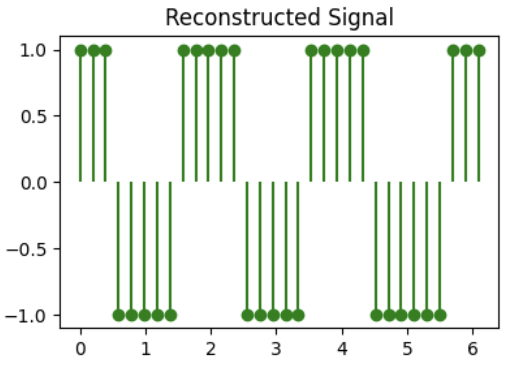
( ) B

( ) C

Quiz 15 (Image Compression: JPEG, BPG)
Q1: Image Compression (4 points)

Before the next big game, facing an inevitable loss, Berkeley students hacked into Stanford website and tried to mutilate the Stanford logo into a Berkeley blue color version (but did a bad job at it). The mutilated logo is shown as an image above.
This image is of dimensions $370\times370$, and contains $4$ channels (RGBA) instead of $3$ channels for colors we saw in class. The fourth channel is alpha channel which tells the transparency of the image. The bit-depth of this image is $8$, which basically implies that every pixel in each channel is 8 bits.
This file can be compressed losslessly using PNG to $\sim14.3~\text{KB}$ (kilo-bytes).
Q1.1 (1 point)
What's the expected raw size of this image? Leave you answer in KB (note: Kilo Bytes not Kilo bits)
Q1.2 (1 point)
In this image you can see that there are basically just two colors (white and a bad version of Berkeley blue color). What will be the expected image size if we use only 2 colors to compress this image in KB? Note, we assume that you still need 8 bits for the alpha channel.
Q1.3 (1 point)
Now you also see that along with having just 2 colors, the image also has only two levels of transparency (perfectly transparent and perfectly opaque). Using these properties what will be the expected image size in KB?
Q1.4 (1 point)
PNG seems to perform better than even using 1 bit for color and 1 bit for alpha!
Give one reason why this might be the case. Note: there are many reasons! But we are only asking for one so feel free to choose.
Q2: JPEE274G Compressor (4 points)
EE274 students decided to come together and form JPEE274G (Joint Photographers EE 274 Group) coming up with an image compressor with the same name. Help them make the design decisions.
Q2.1 (1 point)
Riding on the compute revolution, JPEE274G decided to go for $64 \times 64$ block size instead of $8\times8$.
Suppose you have the same image at resolution $480\times480$, $720\times720$, $1080\times1080$
In which of the following case do we expect increasing the block-size help the the most.
( ) $480\times480$
( ) $720\times720$
( ) $1080\times1080$
Q2.2 (1 point)
JPEE274G decided to use prediction of blocks based on previously encoded neighbors. In which of the following two images do we expect the prediction to help the most.


( ) Charizard (the one with the orange cranky being)
( ) Assorted Pokémons (the one with Pokemon written in it)
Q3: Predictive Coding (2 points)
You find a source where consecutive values are very close, so you decide to do predictive lossy compression. Encoder works in following fashion: it first transmits the first symbol and after that it quantizes the error based on prediction from last encoded symbol. The quantized prediction error is transmitted.
Formally, suppose $X_1,X_2,\dots$ is your original sequence and $\hat{X}_1,\hat{X}_2,\dots$ is the reconstruction sequence. Then we have:
- for the first symbol the reconstruction $\hat{X}_1 = X_1$, i.e., you are losslessly encoding the first symbol
- prediction for $X_n$ is simply $\hat{X}_{n-1}$
- prediction error is $e_n = X_n-\hat{X}_{n-1}$
- quantized prediction error is $\hat{e}_n$
- reconstruction for $X_n$ is $\hat{X}n = \hat{X}{n-1} + \hat{e}_n$
- the transmitted sequence is $X_1, \hat{e}_2, \hat{e}_3, \dots$
For this question, assume that the quantization for the prediction error is simply integer floor.
Example encoding for source sequence: $0.4, 1.1, 1.5, 0.9, 2.1, 2.9$
| $n$ | $\hat{X}_{n-1}$ | $X_n$ | $e_n$ | $\hat{e}_n$ |
|---|---|---|---|---|
| 1 | - | 0.4 | - | - |
| 2 | 0.4 | 1.1 | 0.7 | 0 |
| 3 | 0.4 | 1.5 | 1.1 | 1 |
| 4 | 1.4 | 0.9 | -0.5 | -1 |
| 5 | 0.4 | 2.1 | 1.7 | 1 |
| 6 | 1.4 | 2.9 | 1.5 | 1 |
| 7 | 2.4 | - | - | - |
Q3.1: Errors (1 point)
What is the absolute value of reconstruction error $|X_n - \hat{X}_{n}|$ for the last symbol?
Q3.2: Now Decode (1 point)
Given the transmitted sequence $X_1, \hat{e}_2, \hat{e}_3, \dots$ = $1.1, 0, 1, -1, 2, -1$, what is the final decoded value $\hat{X}_6$?
Quiz 16 (Learnt Image Compression)
Q1 (7 points)
Have a look at the notebook we showed in class to answer following questions. The notebook can be found at class website as well as on this link.
Q1.1 (2 points)
We have defined the transforms, but we need to define a training procedure to train these non-linear transforms. We are using the distribution tfp.distributions.Normal(loc=0., scale=1.) as a prior for codelayer y. i.e. we are making the analysis_transform decorrelate input data to unit gaussians.
In which case do you expect the output of estimated_rate_loss(self.prior, y) to be higher:
( ) y=5
( ) y=0
Q1.2 (3 points)
Explain briefly why with unit normal prior for code layer y with latent_dims=50, the bits_used can never go below 50 bits.
Hint: take a look at the prior distribution on the integers on slide 41 here.
Bonus: can you think of a tighter lower-bound?
Q1.3 (2 points)
Which of the following would you expect to reduce the rate where the loss function is $R+\lambda D$. Select all that apply.
[ ] increase $\lambda$
[ ] decrease $\lambda$
[ ] increase the latent space dimension
[ ] decrease the latent space dimension
Solutions
(X) y=5
( ) y=0
Solution: Note that the rate loss is defined as the negative log probability of the quantized Gaussian probability distribution, and hence y farther away from 0 gives us lower probability and hence higher rate.
-
Solution: The best you can do in terms of bits used is to have all the quantized latent variables be 0 (since that has the highest probability). Looking at the figure, we see the probability is below 0.4 so the number of bits used by arithmetic coder is more than log2(1/0.4) ~ 1.32 bits/latent dimension. Thus we will not go below 50 bits and a tighter bound would be 50*1.32=66 bits.
[ ] increase $\lambda$
[X] decrease $\lambda$
[ ] increase the latent space dimension
[X] decrease the latent space dimension
Solution: Lower $\lambda$ gives lower emphasis on distortion and hence the training will lead to a model with higher distortion but lower rate. Decreasing the latent space dimension will also reduce the rate (in particular it will reduce the lowest rate you can achieve as you have seen in the previous question).
Quiz 17 (Humans and Compression)
Q1: MSE vs. L1 error vs. visual perception (1 point)
Recall the distortion functions MSE (mean square error) and L1 distortion (mean absolute error). Which of the following is always true?
( ) Lower MSE implies better visual perception
( ) Lower L1 implies better visual perception
( ) None of the above
Q2: Chroma subsampling (2 points)
In which of the following settings will chroma subsampling typically lead to most noticeable artifacts? (select all that apply)
[ ] Landscape image (natural images have low spatial frequencies)
[ ] Text image (say screenshot of wikipedia page)
[ ] Cartoon/Animated Content (note cartoons are artificially generated and have sharp edges)
[ ] Videos (note videos have temporal variance in noise along with spatial variance)
Q3: YCbCr matrix (4 points)
Look at the images we saw in class on color-space below. Recall that Y represents luminance or white/black opponent channel, Cb represents blue/yellow and Cr represents red/green color channel. It might be helpful to know that yellow can be represented as a combination of red and green. Answer the following questions:
 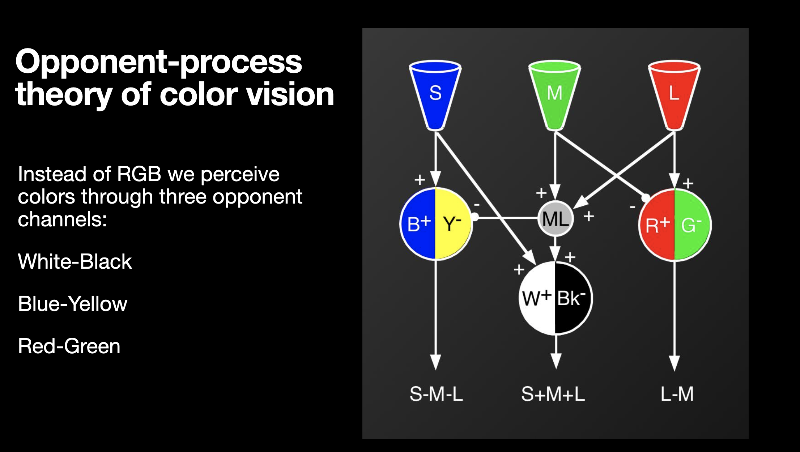
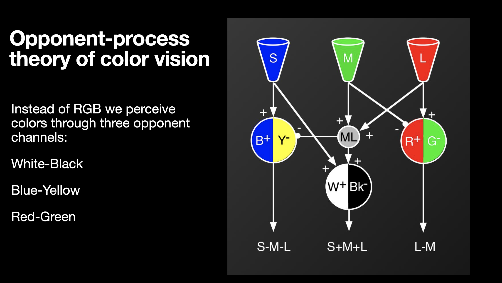

A student comes up with a new colorspace conversion recommendation for RGB to YUV conversion. Which of the following matrices are possibly correct color conversions: (select all that apply)
[ ]
$$ \begin{pmatrix} Y' \ C_B \ C_R \end{pmatrix} = \begin{bmatrix} 0.33 & 0.33 & 0.33\ -0.25 & -0.25 & 0.5\ 0.5 & -0.5 & 0 \end{bmatrix} \begin{pmatrix} R' \ G' \ B' \end{pmatrix} $$
[ ]
$$ \begin{pmatrix} Y' \ C_B \ C_R \end{pmatrix} = \begin{bmatrix} 0.33 & 0.33 & 0.33\ -0.25 & -0.25 & 0.5\ 0.5 & 0 & -0.5 \end{bmatrix} \begin{pmatrix} R' \ G' \ B' \end{pmatrix} $$
[ ]
$$ \begin{pmatrix} Y' \ C_B \ C_R \end{pmatrix} = \begin{bmatrix} 0.33 & 0.33 & 0.33\ 0 & -0.5 & 0.5\ 0.5 & -0.5 & 0 \end{bmatrix} \begin{pmatrix} R' \ G' \ B' \end{pmatrix} $$
[ ]
$$ \begin{pmatrix} Y' \ C_B \ C_R \end{pmatrix} = \begin{bmatrix} 0 & 0.5 & 0.5\ 0 & -0.5 & 0.5\ 0.5 & -0.5 & 0 \end{bmatrix} \begin{pmatrix} R' \ G' \ B' \end{pmatrix} $$
Solutions
Q1
( ) Lower MSE implies better visual perception
( ) Lower L1 implies better visual perception
(X) None of the above
Solution: Neither MSE nor L1 are an accurate estimate of visual perception.
Q2
[ ] Landscape image (natural images have low spatial frequencies)
[X] Text image (say screenshot of wikipedia page)
[X] Cartoon/Animated Content (note cartoons are artificially generated and have sharp edges)
[ ] Videos (note videos have temporal variance in noise along with spatial variance)
Solution: As seen in class, chroma subsampling produces significant artifacts when you have a lot of sharp edges like in text/screenshot and cartoons.
Q3
Solution: Only the first matrix is correct. In each of the other options, one of the rows doesn't represent the proper meaning of the YCbCr components. For example in the second option, the third row corresponding to Cr has R-B instead of R-G.